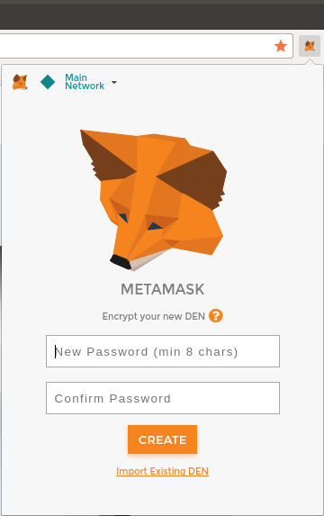
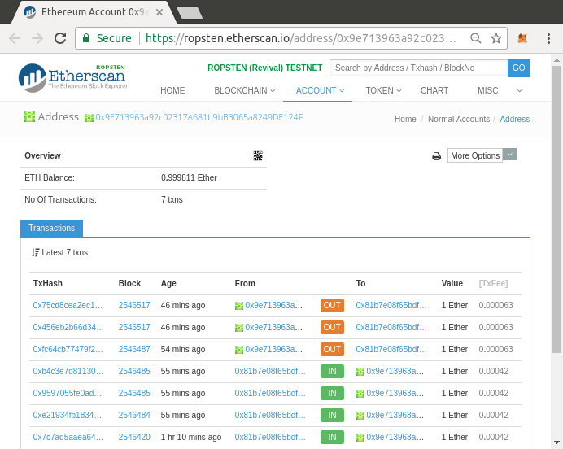
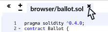
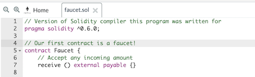
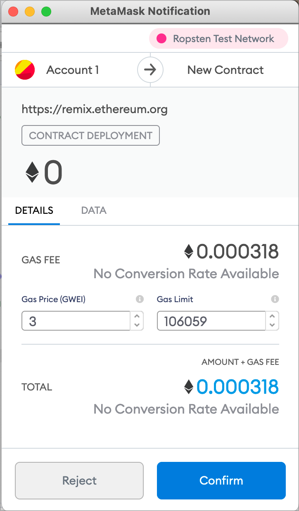
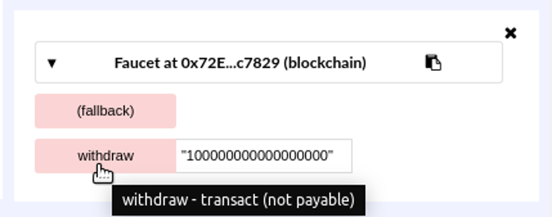
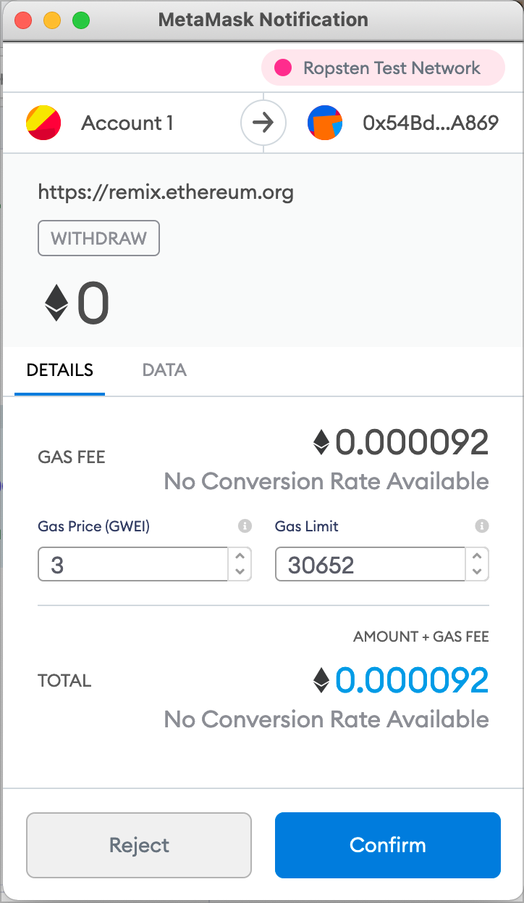
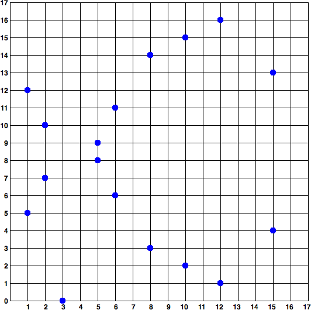
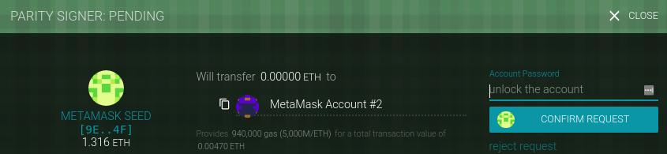
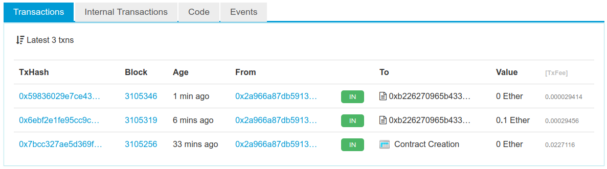

Предисловие
От переводчиков
Книга "Освоение Ethereum" является открытой и бесплатной. Английская версия книги лежит по адресу: https://github.com/ethereumbook. Русскоязычный вариант этой книги вы можете купить или бесплатно прочитать здесь.
Можете подписаться на телеграм канал https://t.me/druzhcom. Бесплатный курс по программированию на Solidity и разработки под web3.
Поддержать проект можно здесь: Ethereum: 0x00bc77A41E475421c5d83Ac79D463b0399e67D99
От авторов
Эта книга является результатом сотрудничества Андреаса М. Антонопулоса и доктора Гэвина Вуда. Ряд удачных совпадений свел этих двух авторов вместе в усилиях, которые привлекли сотни участников к созданию этой книги в лучшем духе открытого исходного кода и культуры творческого содружества. Гэвин уже давно хотел написать книгу, которая расширила бы "Желтую книгу" (его техническое описание протокола Ethereum), в первую очередь для того, чтобы открыть ее для более широкой аудитории, чем это мог сделать оригинальный документ с греческими буквами. Планы были в процессе реализации - уже был найден издатель - когда Гэвин поговорил с Андреасом, которого он знал с самого начала своей работы в Ethereum как заметную личность в этом пространстве. Андреас недавно опубликовал первое издание своей книги Mastering Bitcoin (O'Reilly), которая быстро стала авторитетным техническим руководством по Bitcoin и криптовалютам. Почти сразу после выхода книги читатели начали спрашивать его: "Когда вы напишете "Mastering Ethereum"?". Андреас уже обдумывал свой следующий проект и считал Ethereum интересной технической темой. Наконец, в мае 2016 года Гэвин и Андреас случайно оказались в одном городе в одно и то же время. Они встретились за чашкой кофе, чтобы поговорить о совместной работе над книгой. Поскольку и Андреас, и Гэвин являются приверженцами парадигмы открытого исходного кода, они оба взяли на себя обязательство сделать эту книгу совместной работой, выпущенной под лицензией Creative Commons. К счастью, издатель, O'Reilly Media, с радостью согласился, и проект Mastering Ethereum был официально запущен.
Как использовать эту книгу
Книга призвана служить как справочным пособием, так и исследованием Ethereum от корки до корки. Первые две главы предлагают мягкое введение, подходящее для начинающих пользователей, а примеры в этих главах могут быть выполнены любым человеком с небольшими техническими навыками. Эти две главы дадут вам хорошее представление об основах и позволят использовать фундаментальные инструменты Ethereum. Глава [ethereum_clients_chapter] и последующие предназначены в основном для программистов и включают в себя множество технических тем и примеров программирования. Чтобы служить одновременно справочным руководством и рассказом об Ethereum от корки до корки, книга неизбежно содержит некоторое дублирование. Некоторые темы, такие как газ, должны быть представлены достаточно рано, чтобы остальные темы имели смысл, но при этом они подробно рассматриваются в отдельных разделах. Наконец, индекс книги позволяет читателям легко находить очень специфические темы и соответствующие разделы по ключевым словам.
Предполагаемая аудитория
Эта книга предназначена в основном для кодеров. Если вы владеете языком программирования, эта книга научит вас тому, как работают блокчейн смарт-контракты, как их использовать и как разрабатывать смарт-контракты и децентрализованные приложения на их основе. Первые несколько глав также подходят в качестве углубленного введения в Ethereum для тех, кто не умеет программировать.
Условные обозначения, используемые в этой книге
В этой книге используются следующие типографские соглашения:
Курсив
Указывает на новые термины, URL-адреса, адреса электронной почты, имена файлов и расширения файлов.
Постоянная ширина
Используется в листингах программ, а также внутри абзацев для обозначения элементов программы, таких как имена переменных или функций, базы данных, типы данных, переменные среды, операторы и ключевые слова.
Полужирный шрифт постоянной ширины
Указывает команды или другой текст, который должен быть набран пользователем буквально.
Курсив постоянной ширины
Показывает текст, который должен быть заменен значениями, предоставленными пользователем, или значениями, определяемыми контекстом.
Совет. Этот значок означает совет или предложение. Заметка. Этот значок означает общее примечание. Предупреждение. Этот значок означает предупреждение или предостережение.
Примеры кода
Примеры иллюстрируются на Solidity, Vyper и JavaScript, а также с использованием командной строки Unix-подобной операционной системы. Все фрагменты кода доступны в репозитории GitHub в подкаталоге code. Вы можете форкнуть код книги, попробовать примеры кода или отправить исправления через GitHub: https://github.com/ethereumbook/ethereumbook.
Все фрагменты кода могут быть воспроизведены на большинстве операционных систем с минимальной установкой компиляторов, интерпретаторов и библиотек для соответствующих языков. Там, где это необходимо, мы приводим базовые инструкции по установке и пошаговые примеры результатов выполнения этих инструкций.
Некоторые фрагменты кода и вывод кода были переформатированы для печати. Во всех таких случаях строки разделены символом обратной косой черты (), за которым следует символ новой строки. При расшифровке примеров удалите эти два символа и снова соедините строки, и вы увидите результаты, идентичные показанным в примере.
Во всех фрагментах кода используются реальные значения и вычисления, где это возможно, так что вы можете строить пример за примером и видеть те же результаты в любом коде, который вы напишете для вычисления тех же значений. Например, закрытые ключи и соответствующие им открытые ключи и адреса - все реальные. Примеры транзакций, контрактов, блоков и ссылок на блокчейн были внесены в реальный блокчейн Ethereum и являются частью публичной бухгалтерской книги, поэтому вы можете их просмотреть.
Использование примеров кода
Эта книга написана для того, чтобы помочь вам выполнить свою работу. В общем случае, если вместе с книгой предлагается код примеров, вы можете использовать его в своих программах и документации. Вам не нужно обращаться к нам за разрешением, если только вы не воспроизводите значительную часть кода. Например, написание программы, использующей несколько фрагментов кода из этой книги, не требует разрешения. Продажа или распространение CD-ROM с примерами из книг O'Reilly требует разрешения. Ответ на вопрос со ссылкой на эту книгу и приведением примера кода не требует разрешения. Включение значительного количества примеров кода из этой книги в документацию вашего продукта требует разрешения.
Мы ценим, но не требуем указания авторства. Атрибуция обычно включает название, автора, издателя, ISBN и авторское право. Например: "Mastering Ethereum" Андреаса М. Антонопулоса и доктора Гэвина Вуда (O'Reilly). Copyright 2019 The Ethereum Book LLC и Gavin Wood, 978-1-491-97194-9".
Mastering Ethereum предлагается на условиях лицензии Creative Commons Attribution-Noncommercial-No Derivative Works 4.0 International License (CC BY-NC-ND 4.0).
Если вы считаете, что использование примеров кода выходит за рамки добросовестного использования или вышеуказанного разрешения, не стесняйтесь обращаться к нам по адресу permissions@oreilly.com.
Ссылки на компании и продукты
Все ссылки на компании и продукты предназначены для образовательных, демонстрационных и справочных целей. Авторы не поддерживают ни одну из упомянутых компаний или продуктов. Мы не проверяли работу или безопасность продуктов, проектов или сегментов кода, представленных в этой книге. Используйте их на свой страх и риск!
Адреса и транзакции Ethereum в этой книге
Адреса Ethereum, транзакции, ключи, QR-коды и данные блокчейна, используемые в этой книге, по большей части реальны. Это означает, что вы можете просматривать блокчейн, смотреть на транзакции, предлагаемые в качестве примеров, извлекать их с помощью собственных скриптов или программ и т. д.
Однако обратите внимание, что закрытые ключи, используемые для создания адресов, напечатанных в этой книге, были "сожжены". Это означает, что если вы отправите деньги на любой из этих адресов, они будут либо потеряны навсегда, либо (что более вероятно) присвоены, поскольку любой, кто прочитает эту книгу, сможет взять их, используя напечатанные в ней закрытые ключи. Предупреждение. НЕ ПОСЫЛАЙТЕ ДЕНЬГИ НИ ПО ОДНОМУ ИЗ АДРЕСОВ, УКАЗАННЫХ В ЭТОЙ КНИГЕ. Ваши деньги будут взяты другим читателем или потеряны навсегда.
O'Reilly Safari
__Примечание)). Safari (ранее Safari Books Online) - это основанная на членстве учебная и справочная платформа для предприятий, государственных учреждений, преподавателей и частных лиц.
Участники имеют доступ к тысячам книг, учебным видеоматериалам, учебным маршрутам, интерактивным учебникам и курируемым плейлистам от более чем 250 издательств, включая O'Reilly Media, Harvard Business Review, Prentice Hall Professional, Addison-Wesley Professional, Microsoft Press, Sams, Que, Peachpit Press, Adobe, Focal Press, Cisco Press, John Wiley & Sons, Syngress, Morgan Kaufmann, IBM Redbooks, Packt, Adobe Press, FT Press, Apress, Manning, New Riders, McGraw-Hill, Jones & Bartlett, Course Technology и др.
Как с нами связаться
Пожалуйста, направляйте комментарии и вопросы, касающиеся этой книги, издателю:
- O'Reilly Media, Inc.
- 1005 Gravenstein Highway North
- Себастополь, Калифорния, 95472
- 800-998-9938 (в США или Канаде)
- 707-829-0515 (международный или местный)
- 707-829-0104 (факс)
Более подробную информацию о наших книгах, курсах, конференциях и новостях можно найти на нашем сайте https://www.oreilly.com.
Связь с Андреасом
Вы можете связаться с Андреасом М. Антонопулосом на его личном сайте: https://antonopoulos.com/.
Подписаться на канал Андреаса на YouTube: https://www.youtube.com/aantonop
Подпишитесь на страницу Андреаса на Facebook: https://www.facebook.com/AndreasMAntonopoulos
Следите за Андреасом в Twitter: https://twitter.com/aantonop
Подключайтесь к Андреасу на LinkedIn: https://linkedin.com/company/aantonop.
Андреас также хотел бы поблагодарить всех меценатов, которые поддерживают его работу ежемесячными пожертвованиями. Вы можете поддержать Андреаса на Patreon по адресу https://patreon.com/aantonop.
Связь с Гэвином
Вы можете связаться с доктором Гэвином Вудом на его личном сайте: http://gavwood.com/.
Следите за Гэвином в Твиттере: https://twitter.com/gavofyork
Гэвин обычно общается в Polkadot Watercooler на Riot.im: http://bit.ly/2xciG68.
Благодарности Андреаса
Своей любовью к словам и книгам я обязан своей матери, Терезе, которая вырастила меня в доме, где книги были на каждой стене. Мама также купила мне мой первый компьютер в 1982 году, несмотря на то, что я был по собственному признанию технофобом. Мой отец, Менелаос, инженер-строитель, опубликовавший свою первую книгу в 80 лет, был тем, кто научил меня логическому и аналитическому мышлению и любви к науке и инженерии. Спасибо всем, кто поддерживал меня на протяжении всего этого пути.
Благодарности Гэвина
Когда мне было 9 лет, моя мама купила для меня первый компьютер у соседа, без которого мой технический прогресс, несомненно, был бы менее значительным. Я также обязан ей своим детским страхом перед электричеством и должен поблагодарить Тревора, моих бабушку и дедушку, которые выполняли тяжкую обязанность "смотреть, как я его подключаю" раз за разом, и без которых компьютер был бы бесполезен. Я также должен поблагодарить различных педагогов, с которыми мне посчастливилось общаться на протяжении всей моей жизни, начиная с соседа Шона (который научил меня моей первой компьютерной программе), мистера Куинна, моего учителя начальной школы, который заставил меня больше заниматься программированием и меньше историей, и заканчивая учителями средней школы, такими как Ричард Ферлонг-Браун, который заставил меня больше заниматься программированием и меньше регби.
Я должен поблагодарить мать моих детей, Ютту, за ее постоянную поддержку, и многих людей в моей жизни, новых и старых друзей, которые поддерживают меня, грубо говоря, в здравом уме. И наконец, огромная благодарность Аэрону Бьюкенену, без которого последние пять лет моей жизни никогда бы не сложились так, как они сложились, и без чьего времени, поддержки и руководства эта книга не была бы в такой хорошей форме, как сейчас.
Источники
В этой книге использованы различные публичные и открытые лицензионные источники:
This book references various public and open-licensed sources:
https://github.com/ethereum/vyper/blob/master/README.md The MIT License (MIT)
https://vyper.readthedocs.io/en/latest/ The MIT License (MIT)
https://solidity.readthedocs.io/en/v0.4.21/common-patterns.html The MIT License (MIT)
https://arxiv.org/pdf/1802.06038.pdf Arxiv Non-Exclusive-Distribution
https://github.com/ethereum/solidity/blob/release/docs/contracts.rst#inheritance The MIT License (MIT)
https://github.com/trailofbits/evm-opcodes Apache 2.0
https://github.com/ethereum/EIPs/ Creative Commons CC0
https://blog.sigmaprime.io/solidity-security.html Creative Commons CC BY 4.0
Краткий глоссарий
Этот глоссарий содержит часто используемые термины в Ethereum сообществе. Эти термины используются во всей книге, поэтому занесите его в закладки для быстрого поиска.
Account (счет)
Объект, содержащий адрес, баланс, nonce, а также необязательные хранилище и код. Счет может быть счетом контракта или счетом, принадлежащим внешнему владельцу (EOA, externally owned account).
Address (адрес)
В самом общем случае представляет собой EOA или контракт, который может принимать (адрес получателя) или отправлять (адрес отправителя) транзакции. Более конкретно, это крайние правые 160 бит хэша (см. Keccak) открытого ключа (см. ECDSA).
Assert
В Solidity assert(false) компилируется в 0xfe, недопустимый опкод, который расходует весь оставшийся газ и отменяет все изменения. Если оператор assert() не срабатывает, значит, происходит что-то неправильное, непредусмотренное или неожиданное. Поэтому вам необходимо исправить свой код. Вы должны использовать assert(), чтобы избегать ситуаций, которые никогда не должны возникать.
От старшего к младшему (Big-endian)
Позиционное представление чисел, при котором старший разряд стоит первым. Противоположность little-endian, где первой стоит младшая цифра.
Предложение по улучшению Биткоина (Bitcoin Improvement Proposals, BIP)
Набор предложений, которые сделали участники сообщества Биткойн для улучшения Биткойна. Например, BIP-21 - это предложение по улучшению схемы унифицированного идентификатора ресурсов (URI) Биткойна.
Блок (block)
Набор необходимой информации (заголовок блока) о входящих в блок транзакциях, а также набор других заголовков блока, известных как оммеры. Блоки добавляются в сеть Ethereum майнерами.
Блокчейн (blockchain)
В Ethereum - последовательность блоков, подтвержденных системой доказательств выполнения работы (proof of work), каждый из которых связан со своим предшественником вплоть до первоначального блока. Отличие от протокола Bitcoin в том, что в нем нет ограничения на размер блока; вместо этого используются различные ограничения на газ.
Байткод (bytecode)
Абстрактный набор инструкций, предназначенный для эффективного выполнения программным интерпретатором или виртуальной машиной. В отличие от человекочитаемого исходного кода, байткод выражается в числовом формате.
Византийское разветвление
Первый из двух жестких разветвлений на стадии разработки Metropolis. Он включал EIP-649: Metropolis Difficulty Bomb Delay и Block Reward Reduction, где Ледниковый период (см. ниже) был отложен на 1 год, а вознаграждение за блок было уменьшено с 5 до 3 eth.
Компиляция
Преобразование кода, написанного на языке программирования высокого уровня (например, Solidity), в язык более низкого уровня (например, байткод EVM).
Консенсус
Ситуация когда множество узлов - обычно большинство узлов в сети - имеют одинаковые блоки в локально проверенном блокчейне. Не следует путать с правилами консенсуса.
Правила консенсуса
Правила проверки блоков, которым следуют полные узлы, чтобы оставаться в консенсусе с другими узлами. Не следует путать с консенсусом.
Константинопольское разветвление
Вторая часть этапа Metropolis, первоначально запланированная на середину 2018 года. Ожидается, что среди прочих изменений будет переход на гибридный алгоритм консенсуса proof-of-work/proof-of-stake.
Счёт смарт-контракта (Contract account)
Счет, содержащий код, который выполняется всякий раз, когда он получает транзакцию от другого счета (EOA или контракта).
Транзакция создания контракта
Специальная транзакция с "нулевым адресом" в качестве получателя, которая используется для регистрации контракта и записи его в блокчейн Ethereum (см. "нулевой адрес").
Децентрализованная автономная организация (Decentralized Autonomous Organization, DAO)
Компания или другая организация, которая работает без иерархического управления. Также термин может относиться к контракту под названием "The DAO", запущенному 30 апреля 2016 года, который затем был взломан в июне 2016 года; в конечном итоге это послужило причиной жесткого разветвления (кодовое название DAO) на блоке №1,192,000, который отменил взломанный контракт DAO и привел к разделению Ethereum и Ethereum Classic на две конкурирующие системы.
Децентрализованное приложение (Decentralized application, DApp)
Как минимум, это смарт-контракт и пользовательский веб-интерфейс. В более широком смысле DApp - это веб-приложение, построенное поверх открытых, децентрализованных, одноранговых инфраструктурных сервисов. Кроме того, многие DApp включают децентрализованное хранилище и/или протокол сообщений и платформу.
Deed
Стандарт неразменных токенов (NFT), введенный предложением ERC721. В отличие от токенов ERC20, deed подтверждают право собственности и не являются взаимозаменяемыми, хотя они не признаются в качестве юридических документов ни в одной юрисдикции - по крайней мере, в настоящее время (см. также "NFT").
Сложность
Общесетевая настройка, определяющая, какой объем вычислений требуется для создания доказательства работы.
Цифровая подпись
Короткая строка данных, которую пользователь создает для документа с помощью закрытого ключа таким образом, что любой человек, имеющий соответствующий открытый ключ, подпись и документ, может проверить, что (1) документ был "подписан" владельцем данного закрытого ключа, и (2) документ не был изменен после его подписания.
ECDSA
Алгоритм цифровой подписи с эллиптической кривой. Криптографический алгоритм, используемый в Ethereum для обеспечения того, что средства могут быть потрачены только их владельцами.
Предложение по усовершенствованию Ethereum (Ethereum Improvement Proposal, EIP)
Предложение по усовершенствованию Ethereum. Проектный документ, предоставляющий информацию сообществу Ethereum и описывающий предлагаемую новую функцию, ее процессы или среду. Для получения дополнительной информации см. https://github.com/ethereum/EIPs (см. также "ERC").
Служба имен Ethereum (Ethereum Name Service, ENS)
Служба имен Ethereum. Дополнительную информацию см. на сайте https://github.com/ethereum/ens/.
Энтропия
В контексте криптографии отсутствие предсказуемости или уровень случайности. При генерации секретной информации, такой как закрытые ключи, алгоритмы обычно полагаются на источник высокой энтропии для обеспечения непредсказуемости выходных данных.
Счёт с внешним управлением (Externally Owned Account, EOA)
Учетная запись, принадлежащая внешним пользователям. Учетная запись, созданная человеческими пользователями сети Ethereum или для них.
Запрос на комментарии Ethereum (Ethereum Request for Comments, ERC)
Обозначение, присвоенное некоторым EIP, которые пытаются определить конкретный стандарт использования Ethereum.
Ethash
Алгоритм proof-of-work для Ethereum 1.0. Для получения дополнительной информации см. https://github.com/ethereum/wiki/wiki/Ethash.
Эфир (Ether)
Родная криптовалюта, используемая в экосистеме Ethereum, которая покрывает расходы на газ при выполнении смарт-контрактов. Ее символ - Ξ, греческий прописной символ Xi.
Событие (Event)
Позволяет использовать средства протоколирования EVM. Децентраилизованные приложения могут прослушивать события и использовать их для запуска обратных вызовов JavaScript в пользовательском интерфейсе. Для получения дополнительной информации см. http://solidity.readthedocs.io/en/develop/contracts.html#events.
Виртуальная машина Ethereum (Ethereum Virtual Machine, EVM)
Виртуальная машина на основе стека, выполняющая байткод. В Ethereum модель выполнения определяет, как изменяется состояние системы при выполнении серии инструкций байткода и небольшого кортежа данных об окружающей среде. Это задается с помощью формальной модели виртуальной машины состояний.
Язык ассемблера EVM
Человекочитаемая форма байткода EVM.
Вспомогательная функция (функци Fallback)
Функция по умолчанию, вызываемая при отсутствии данных или объявленного имени функции.
Кран (faucet)
Служба, предоставляющая средства в виде бесплатного тестового эфира, который можно использовать в тестовой сети.
Финни (Finney)
Номинал эфира. 1 финни = 1015 вей, 103 финни = 1 эфир.
Ветка (или вилка или fork)
Изменение в протоколе, приводящее к созданию альтернативной цепочки, или временное расхождение двух потенциальных путей блока во время майнинга.
Frontier
Начальный этап тестовой разработки Ethereum, длившийся с июля 2015 года по март 2016 года.
Ganache
Персональный блокчейн Ethereum, который можно использовать для запуска тестов, выполнения команд и проверки состояния, контролируя при этом работу цепи.
Газ
Виртуальное топливо, используемое в Ethereum для выполнения смарт-контрактов. EVM использует механизм учета для измерения потребления газа и ограничения потребления вычислительных ресурсов (см. "Turing complete").
Лимит газа
Максимальное количество газа, которое может израсходовать транзакция или блок.
Гэвин Вуд
Британский программист, сооснователь и бывший технический директор Ethereum. В августе 2014 года он предложил Solidity, контрактно-ориентированный язык программирования для написания смарт-контрактов.
Первичный блок (Genesis блок)
Первый блок в блокчейне, используемый для инициализации конкретной сети и её криптовалюты.
Geth
Go Ethereum. Одна из самых известных реализаций протокола Ethereum, написанная на языке Go.
Жесткое разветвление
Обычно возникает, когда не обновленные узлы не могут подтвердить блоки, созданные обновленными узлами, которые следуют новым правилам консенсуса. Не следует путать с мягким разветвлением, программным разветвлением или Git-веткой.
Хэш
Отпечаток фиксированной длины входных данных переменного размера, создаваемый хэш-функцией.
HD-кошелек
Кошелек, использующий иерархический детерминированный (HD) протокол создания и передачи ключей (BIP-32).
Семя HD-кошелька
Значение, используемое для генерации главного закрытого ключа и главного кода цепочки для кошелька HD. Семя кошелька может быть представлено мнемоническими словами, что облегчает копирование, резервное копирование и восстановление закрытых ключей.
Homestead
Вторая стадия развития Ethereum, запущенная в марте 2016 года на блоке № 1 150 000.
Протокол межбиржевых клиентских адресов (Inter-exchange Client Address Protocol, ICAP)
Кодировка адресов Ethereum, частично совместимая с кодировкой международного номера банковского счета (IBAN), обеспечивающая универсальность, контрольную сумму и совместимость кодировки адресов Ethereum. В адресах ICAP используется новый псевдокод страны IBAN: XE, обозначающий "eXtended Ethereum", который используется в неюрисдикционных валютах (например, XBT, XRP, XCP).
Ледниковый период
Жесткое разветвление Ethereum на блоке № 200,000 для введения экспоненциального увеличения сложности (он же Difficulty Bomb), мотивирующего переход к доказательству доли.
Интегрированная среда разработки (Integrated Development Environment, IDE)
Пользовательский интерфейс, который обычно сочетает в себе редактор кода, компилятор, среду выполнения и отладчик.
Проблема неизменяемого развернутого кода
После развертывания кода контракта (или библиотеки) он становится неизменяемым. Стандартная практика разработки программного обеспечения предполагает возможность исправления возможных ошибок и добавления новых функций, поэтому это представляет собой проблему для разработки смарт-контрактов.
Внутренняя транзакция (также "сообщение")
Транзакция, отправленная со счета контракта на другой счет контракта или EOA.
Межпланетная файловая система (InterPlanetary File System, IPFS)
Протокол, сеть и проект с открытым исходным кодом, разработанный для создания однорангового метода хранения и обмена гипермедиа в распределенной файловой системе с возможностью адресации содержимого.
Функция производных ключей (Key Derivation Function, KDF)
Также известна как "алгоритм растягивания пароля", используется форматами хранилищ ключей для защиты от атак перебора, словаря и радужной таблицы при шифровании парольной фразы путем многократного хэширования парольной фразы.
Keccak-256
Криптографическая хэш-функция, используемая в Ethereum. Keccak-256 была стандартизирована как SHA-3.
Файл хранилища ключей
Закодированный в JSON файл, содержащий один (случайно сгенерированный) закрытый ключ, зашифрованный парольной фразой для дополнительной безопасности.
LevelDB
Хранилище типа "ключ-значение"с открытым исходным кодом, реализованное в виде легковесной универсальной библиотеки с привязкой ко многим платформам.
Библиотека (library)
Особый тип контракта, который не имеет ни оплачиваемых функций, ни функции отката, ни хранилища данных. Поэтому он не может получать или удерживать эфир, а также хранить данные. Библиотека служит в качестве ранее развернутого кода, который другие контракты могут вызывать для вычислений только для чтения.
Облегченный клиент
Клиент Ethereum, который не хранит локальную копию блокчейна и не проверяет блоки и транзакции. Он предлагает функции кошелька и может создавать и транслировать транзакции.
Дерево Меркла Патрициа (Merkle Patricia Tree)
Структура данных, используемая в Ethereum для эффективного хранения пар ключ-значение.
Сообщение
Внутренняя транзакция, которая никогда не сериализуется и отправляется только внутри EVM.
Вызов сообщения
Акт передачи сообщения от одного счета к другому. Если счет назначения связан с кодом EVM, то виртуальная машина будет запущена с состоянием этого объекта, и сообщение будет обработано.
METoken
Токен Mastering Ethereum. Токен ERC20, используемый для демонстрации в этой книге.
Metropolis
Третья стадия разработки Ethereum, запущенная в октябре 2017 года.
Майнер
Узел сети, который находит достоверные доказательства работы новых блоков путем повторного хеширования.
Mist
Первый браузер с поддержкой Ethereum, созданный Ethereum Foundation. Он содержит браузерный кошелек, который стал первой реализацией стандарта токенов ERC20 (Фабиан Фогельштеллер, автор ERC20, также был главным разработчиком Mist). Mist также был первым кошельком, который ввел контрольную сумму camelCase (EIP-55; см. [EIP55]). Mist работает на полном узле и предлагает браузер с поддержкой хранилища на основе Swarm и адресов ENS.
Сеть
Ссылаясь на сеть Ethereum, одноранговую сеть, которая распространяет транзакции и блоки на каждый узел Ethereum (участник сети).
Неразменный токен (Non-fungible token, NFT)
Неразменный токен (также известный как "deed"). Это стандарт токенов, введенный предложением ERC721. NFT можно отслеживать и обменивать, но каждый токен уникален и отличен; они не взаимозаменяемы, как токены ERC20. NFT могут представлять право собственности на цифровые или физические активы.
Узел
Программный клиент, участвующий в работе сети.
Nonce
В криптографии значение, которое может быть использовано только один раз. В Ethereum используются два типа nonce: account nonce - это счетчик транзакций в каждом счете, который используется для предотвращения атак воспроизведения; proof-of-work nonce - это случайное значение в блоке, которое было использовано для доказательства работы.
Оммер
Дочерний блок предка, который сам не является предком. Когда майнер находит действующий блок, другой майнер может опубликовать конкурирующий блок, который добавляется в вершину блокчейна. В отличие от Биткойна, осиротевшие блоки в Ethereum могут быть включены более новыми блоками как оммеры и получить вознаграждение за частичный блок. Термин "оммер" является предпочтительным гендерно-нейтральным термином для обозначения брата или сестры родительского блока, но иногда его также называют "дядей".
Parity
Одна из наиболее известных интероперабельных реализаций клиентского программного обеспечения Ethereum.
Доказательство доли (PoS)
Метод, с помощью которого протокол криптовалютного блокчейна стремится достичь распределенного консенсуса. PoS просит пользователей доказать владение определенным количеством криптовалюты (их "доля" в сети), чтобы иметь возможность участвовать в подтверждении транзакций.
Доказательство работы (PoW)
Часть данных (доказательство), для нахождения которой требуются значительные вычисления. В Ethereum майнеры должны найти числовое решение алгоритма Ethash, которое соответствует заданной в масштабах сети сложности.
Открытый ключ
Число, полученное с помощью односторонней функции от закрытого ключа, которое может быть открыто для общего доступа и использоваться любым человеком для проверки цифровой подписи, сделанной с помощью соответствующего закрытого ключа.
Квитанция
Данные, возвращаемые клиентом Ethereum в качестве результата конкретной транзакции, включая хэш транзакции, номер ее блока, количество использованного газа и, в случае развертывания смарт-контракта, адрес контракта.
Атака с повторным вхождением (Re-entrancy)
Атака, заключающаяся в том, что атакующий контракт вызывает функцию контракта-жертвы таким образом, что в процессе выполнения жертва снова рекурсивно вызывает атакующий контракт. Это может привести, например, к краже средств путем пропуска частей контракта жертвы, которые обновляют балансы или подсчитывают суммы снятия.
Вознаграждение
Количество эфира, включаемое в каждый новый блок в качестве вознаграждения от сети майнеру, нашедшему решение для доказательства работы.
Рекурсивный префикс длины (Recursive Length Prefix, RLP)
Рекурсивный префикс длины. Стандарт кодирования, разработанный разработчиками Ethereum для кодирования и сериализации объектов (структур данных) произвольной сложности и длины.
Сатоси Накамото
Имя, используемое человеком или людьми, которые разработали Биткойн, создали его оригинальную эталонную реализацию и первыми решили проблему двойной траты для цифровой валюты. Их настоящая личность остается неизвестной.
Секретный ключ (он же закрытый ключ)
Секретное число, которое позволяет пользователям Ethereum подтвердить право собственности на счет или контракты путем создания цифровой подписи (см. "открытый ключ", "адрес", "ECDSA").
Serenity
Четвертая и последняя стадия разработки Ethereum. Serenity пока не имеет запланированной даты выпуска.
Serpent
Процедурный (императивный) язык программирования смарт-контрактов с синтаксисом, похожим на Python.
SHA
Алгоритм безопасного хэширования. Семейство криптографических хэш-функций, опубликованных Национальным институтом стандартов и технологий (NIST).
Синглтон
Термин компьютерного программирования, описывающий объект, который может существовать только в единственном экземпляре.
Смарт-контракт (СмК)
Программа, выполняемая на вычислительной инфраструктуре Ethereum.
Solidity
Процедурный (императивный) язык программирования с синтаксисом, похожим на JavaScript, C++ или Java. Самый популярный и наиболее часто используемый язык для смарт-контрактов Ethereum. Создан доктором Гэвином Вудом (соавтором этой книги).
Встраиваемый ассемблер Solidity
Язык ассемблера EVM в программе Solidity. Поддержка встроенного ассемблера в Solidity облегчает написание некоторых операций.
Spurious Dragon
Жесткое разветвление блокчейна Ethereum, произошедший в блоке № 2,675,000 для решения проблемы увеличения числа векторов атак типа "отказ в обслуживании" и очищения состояния (см. также "Мандариновый свисток"). Кроме того, механизм защиты от атак повторного воспроизведения.
Swarm
Децентрализованная (P2P) сеть хранения данных, используемая вместе с Web3 и Whisper для создания децентрализованных приложений.
Сабо (Szabo)
Деноминация эфира. 1 сабо = 1012 вей, 106 сабо = 1 эфир.
Мандариновый свисток
Жесткий форк блокчейна Ethereum, который произошел в блоке № 2,463,000, чтобы изменить расчет газа для определенных операций ввода-вывода и очистить накопленное состояние от атаки типа "отказ в обслуживании", которая использовала низкую стоимость газа для этих операций.
Testnet
Сокращение от "тестовая сеть", сеть, используемая для имитации поведения основной сети Ethereum.
Транзакция
Данные, зафиксированные в блокчейне Ethereum, подписанные учетной записью, указавшей конкретный адрес. Транзакция содержит метаданные, такие как лимит газа для данной транзакции.
Truffle
Один из наиболее часто используемых фреймворков для разработки Ethereum.
Тьюринг-полный
Понятие, названное в честь английского математика Алана Тьюринга: система правил манипулирования данными (например, набор команд компьютера, язык программирования или клеточный автомат) считается "полной по Тьюрингу" или "вычислительно универсальной", если она может быть использована для моделирования любой машины Тьюринга.
Виталик Бутерин
Российско-канадский программист, известный в первую очередь как соучредитель Ethereum и журнала Bitcoin.
Вайпер (Vyper)
Высокоуровневый язык программирования, похожий на Serpent, с синтаксисом, подобным Python. Предназначен для приближения к чисто функциональному языку. Создан Виталиком Бутериным.
Кошелек
Программное обеспечение, в котором хранятся секретные ключи. Используется для доступа и управления счетами Ethereum и взаимодействия со смарт-контрактами. Ключи не обязательно хранить в кошельке, вместо этого их можно получить из автономного хранилища (например, с карты памяти или бумаги) для повышения безопасности. Несмотря на название, кошельки никогда не хранят фактические монеты или токены.
Web3
Третья версия интернета. Впервые предложенная доктором Гэвином Вудом, Web3 представляет собой новое видение и фокус для веб-приложений: от централизованных и управляемых приложений к приложениям, построенным на децентрализованных протоколах.
Вэй (wei)
Наименьший номинал эфира. 1018 вэев = 1 эфир.
Whisper
Децентрализованная (P2P) служба обмена сообщениями. Используется вместе с Web3 и Swarm для создания DApps.
Нулевой адрес
Специальный адрес Ethereum, полностью состоящий из нулей, который указывается в качестве адреса назначения транзакции создания контракта.
Что такое Ethereum?
Ethereum часто называют "мировым компьютером". Но что это значит? Давайте начнем с описания, ориентированного на компьютерную науку, а затем попытаемся расшифровать его с помощью более практического анализа возможностей и характеристик Ethereum, сравнивая его с Bitcoin и другими платформами децентрализованного обмена информацией (сокращенно "блокчейн").
С точки зрения информатики, Ethereum - это детерминированная, но практически неограниченная машина состояний, состоящая из глобально доступного состояния синглтона и виртуальной машины, которая применяет изменения к этому состоянию.
С более практической точки зрения, Ethereum - это децентрализованная вычислительная инфраструктура с открытым исходным кодом, которая выполняет программы, называемые смарт-контрактами. Она использует блокчейн для синхронизации и хранения изменений состояния системы, а также криптовалюту под названием эфир для измерения и ограничения затрат ресурсов на выполнение.
Платформа Ethereum позволяет разработчикам создавать мощные децентрализованные приложения со встроенными экономическими функциями. Обеспечивая высокую доступность, проверяемость, прозрачность и нейтральность, она также уменьшает или устраняет цензуру и снижает некоторые риски контрагентов.
По сравнению с Биткойном
Многие люди приходят в Ethereum, уже имея некоторый опыт работы с криптовалютами, в частности с Bitcoin. Ethereum имеет много общих элементов с другими открытыми блокчейнами: одноранговая сеть, объединяющая участников, византийский отказоустойчивый алгоритм консенсуса для синхронизации обновлений состояния (блокчейн с доказательством работы), использование криптографических примитивов, таких как цифровые подписи и хэши, и цифровая валюта (эфир).
Однако во многих отношениях и цель, и конструкция Ethereum разительно отличаются от тех открытых блокчейнов, которые были до него, включая Bitcoin.
Назначение Ethereum заключается не в том, чтобы быть платежной сетью цифровой валюты. Хотя цифровая валюта эфир является неотъемлемой частью Ethereum и необходима для его функционирования, эфир задуман как полезная валюта для оплаты за использование платформы Ethereum в качестве мирового компьютера.
В отличие от Bitcoin, который имеет очень ограниченный язык сценариев, Ethereum задуман как программируемый блокчейн общего назначения, на котором работает виртуальная машина, способная выполнять код произвольной и неограниченной сложности. Если скриптовый язык Bitcoin намеренно ограничен простой оценкой истинности/ложности условий расходования средств, то язык Ethereum является полным по Тьюрингу, что означает, что Ethereum может прямо функционировать как компьютер общего назначения.
Компоненты блокчейна
Компонентами открытого, публичного блокчейна являются (обычно):
- одноранговая (P2P) сеть, соединяющая участников и распространяющая транзакции и блоки проверенных транзакций на основе стандартизированного протокола "gossip".
- сообщения в форме транзакций, представляющие переходы состояний
- Набор правил консенсуса, определяющих, что считать транзакцией и что считать действительным переходом состояния
- Машина состояний, которая обрабатывает транзакции в соответствии с правилами консенсуса
- Цепочка криптографически защищенных блоков, которая действует как журнал всех проверенных и принятых переходов состояния
- Алгоритм консенсуса, который децентрализует контроль над блокчейном, заставляя участников сотрудничать в обеспечении соблюдения правил консенсуса
- теоретико-игровая схема стимулирования (например, стоимость доказательства выполнения работы плюс вознаграждение за блок) для экономической безопасности государственной машины в открытой среде.
- Одна или несколько программных реализаций вышеперечисленного с открытым исходным кодом ("клиенты").
Все или большинство этих компонентов обычно объединены в одном программном клиенте. Например, в Bitcoin эталонная реализация разработана проектом с открытым исходным кодом Bitcoin Core и реализована как клиент bitcoind. В Ethereum вместо эталонной реализации существует эталонная спецификация - математическое описание системы в Yellow Paper (см. раздел "Дальнейшее чтение"). Существует ряд клиентов, которые построены в соответствии с эталонной спецификацией.
В прошлом мы использовали термин "блокчейн" для обозначения всех только что перечисленных компонентов, как сокращенное обозначение комбинации технологий, которые охватывают все описанные характеристики. Однако сегодня существует огромное разнообразие блокчейнов с различными свойствами. Нам нужны уточнения, которые помогут нам понять характеристики рассматриваемого блокчейна, такие как открытый, публичный, глобальный, децентрализованный, нейтральный и устойчивый к цензуре, чтобы определить важные возникающие характеристики системы "блокчейн", которые позволяют эти компоненты.
Не все блокчейны созданы одинаковыми. Когда кто-то говорит вам, что что-то является блокчейном, вы не получили ответа; скорее, вам нужно начать задавать много вопросов, чтобы уточнить, что они имеют в виду, когда используют слово "блокчейн". Начните с описания компонентов из предыдущего списка, затем спросите, обладает ли этот "блокчейн" такими характеристиками, как открытость, публичность и т. д.
Рождение Ethereum
Все великие инновации решают реальные проблемы, и Ethereum не является исключением. Ethereum был задуман в тот момент, когда люди осознали силу модели Bitcoin и пытались выйти за рамки криптовалютных приложений. Но разработчики столкнулись с проблемой: им нужно было либо строить на основе Bitcoin, либо создавать новый блокчейн. Строить на основе Биткойна означало жить в рамках преднамеренных ограничений сети и пытаться найти обходные пути. Ограниченный набор типов транзакций, типов данных и размеров хранилища данных, казалось, ограничивал типы приложений, которые могли работать непосредственно на Bitcoin; все остальное требовало дополнительных внецепочечных уровней, что сразу же сводило на нет многие преимущества использования публичного блокчейна. Для проектов, которые нуждались в большей свободе и гибкости, оставаясь на цепочке, единственным выходом было создание нового блокчейна. Но это означало много работы: создание всех элементов инфраструктуры, исчерпывающее тестирование и т.д.
В конце 2013 года Виталик Бутерин, молодой программист и энтузиаст биткойна, начал думать о дальнейшем расширении возможностей биткойна и Mastercoin (оверлейный протокол, который расширял биткойн, предлагая элементарные смарт-контракты). В октябре того же года Виталик предложил команде Mastercoin более обобщенный подход, который позволял гибким и скриптовым (но не завершенным по Тьюрингу) контрактам заменить специализированный язык контрактов Mastercoin. Хотя команда Mastercoin была впечатлена, это предложение было слишком радикальным изменением, чтобы вписаться в их дорожную карту развития.
В декабре 2013 года Виталик начал делиться документом, в котором излагалась идея создания Ethereum: блокчейн общего назначения, завершенный по Тьюрингу. Несколько десятков человек увидели этот ранний проект и высказали свои замечания, что помогло Виталику доработать предложение.
Оба автора этой книги получили ранний вариант whitepaper и прокомментировали его. Андреас М. Антонопулос был заинтригован этой идеей и задал Виталику множество вопросов об использовании отдельного блокчейна для обеспечения соблюдения правил консенсуса при выполнении смарт-контрактов и о последствиях использования языка, полного по Тьюрингу. Андреас продолжал с большим интересом следить за развитием Ethereum, но находился на ранних стадиях написания своей книги Mastering Bitcoin и принял непосредственное участие в Ethereum только много позже. Однако доктор Гэвин Вуд был одним из первых, кто связался с Виталиком и предложил свою помощь в программировании на C++. Гэвин стал соучредителем, кодовым дизайнером и техническим директором Ethereum.
Как вспоминает Виталик в своем посте "Предыстория Ethereum":
Это было время, когда протокол Ethereum был полностью моим собственным творением. Однако с этого момента к нему начали присоединяться новые участники. Самым заметным в протокольной части был Гэвин Вуд...
Гэвину также можно в значительной степени приписать заслугу в тонком изменении видения от рассмотрения Ethereum как платформы для создания программируемых денег, с контрактами на основе блокчейна, которые могут хранить цифровые активы и передавать их в соответствии с заданными правилами, к вычислительной платформе общего назначения. Это началось с тонких изменений в акцентах и терминологии, а позже это влияние усилилось с усилением акцента на ансамбле "Web 3", который рассматривал Ethereum как одну из частей набора децентрализованных технологий, две другие - Whisper и Swarm.
Начиная с декабря 2013 года, Виталик и Гэвин совершенствовали и развивали эту идею, вместе создавая протокольный уровень, который стал Ethereum.
Основатели Ethereum думали о блокчейне без конкретной цели, который мог бы поддерживать широкий спектр приложений, будучи запрограммированным. Идея заключалась в том, что, используя блокчейн общего назначения, такой как Ethereum, разработчик может программировать свое конкретное приложение, не прибегая к реализации базовых механизмов одноранговых сетей, блокчейнов, алгоритмов консенсуса и т. д. Платформа Ethereum была разработана для абстрагирования от этих деталей и обеспечения детерминированной и безопасной среды программирования для децентрализованных приложений блокчейна.
Как и Сатоши, Виталик и Гэвин не просто изобрели новую технологию; они объединили новые изобретения с существующими технологиями новым способом и представили код прототипа, чтобы доказать свои идеи миру.
Основатели работали в течение многих лет, создавая и совершенствуя свое видение. И 30 июля 2015 года был добыт первый блок Ethereum. Мировой компьютер начал служить всему миру.
Примечание. Статья Виталика Бутерина "Предыстория Ethereum" была опубликована в сентябре 2017 года и представляет собой увлекательный взгляд от первого лица на самые ранние моменты Ethereum. Вы можете прочитать ее на сайте https://vitalik.ca/general/2017/09/14/prehistory.html.
Четыре этапа развития Ethereum
Развитие Ethereum было запланировано на четыре отдельных этапа, на каждом из которых происходили значительные изменения. На каждом этапе могут выходить субрелизы, известные как "жесткие форки", которые изменяют функциональность таким образом, что это не приводит к обратной совместимости.
Четыре основных этапа разработки имеют кодовые названия Frontier, Homestead, Metropolis и Serenity. Промежуточные hard forks, которые появились на сегодняшний день, имеют кодовые названия Ice Age, DAO, Tangerine Whistle, Spurious Dragon, Byzantium, Constantinople/St. Petersburg, Istanbul и Muir Glacier. Этапы разработки и промежуточные хард форки показаны на следующей временной шкале, которая "датируется" номером блока:
Блок № 0
Frontier - начальная стадия Ethereum, длившаяся с 30 июля 2015 года по март 2016 года.
Блок № 200,000
Ледниковый период - хард-форк для введения экспоненциального повышения сложности, чтобы мотивировать переход к PoS, когда он будет готов.
Блок № 1,150,000
Homestead - вторая ступень Ethereum, запущенная в марте 2016 года.
Блок № 1,192,000
DAO - жесткий форк, который возместил убытки жертвам взломанного контракта DAO и привел к разделению Ethereum и Ethereum Classic на две конкурирующие системы.
Блок № 2,463,000
Tangerine Whistle - хард-форк, изменивший расчет газа для некоторых операций ввода-вывода с высокой нагрузкой и очистивший накопленное состояние от атаки типа "отказ в обслуживании" (DoS), которая использовала низкую стоимость газа для этих операций.
Блок № 2,675,000
Spurious Dragon - жесткий форк для устранения дополнительных векторов DoS-атак и еще одной очистки состояния. Кроме того, механизм защиты от атак повторного воспроизведения.
Блок № 4,370,000
Metropolis Byzantium-Metropolis - третья ступень Ethereum. Запущенный в октябре 2017 года, Byzantium является первой частью Metropolis, добавляя низкоуровневые функциональные возможности и регулируя вознаграждение и сложность блока.
Блок № 7,280,000
Константинополь / Санкт-ПетербургКонстантинополь планировался как вторая часть Metropolis с аналогичными улучшениями. За несколько часов до его активации была обнаружена критическая ошибка. Поэтому хард-форк был отложен и переименован в Санкт-Петербург.
Блок № 9,069,000
Стамбул - дополнительный хард форк с тем же подходом и тем же названием, что и в предыдущих двух.
Блок № 9,200,000
Muir Glacier - хард форк, единственной целью которого была повторная корректировка сложности в связи с экспоненциальным ростом, введенным в Ice Age.
Также были объявлены два хард-форка, Berlin и London, и сейчас мы находимся на заключительном этапе развития Ethereum под кодовым названием Serenity. Serenity предполагает глубокую реорганизацию инфраструктуры, которая сделает Ethereum более масштабируемым, более безопасным и более устойчивым. Она представлена как вторая версия Ethereum, "Ethereum 2.0".
Ethereum: Блокчейн общего назначения
Оригинальный блокчейн, а именно блокчейн биткойна, отслеживает состояние единиц биткойна и их принадлежность. Биткойн можно представить как распределенную консенсусную машину состояний, где транзакции вызывают глобальный переход состояния, изменяя владение монетами. Переходы состояния ограничены правилами консенсуса, что позволяет всем участникам (в конечном итоге) сходиться к общему (консенсусному) состоянию системы после добычи нескольких блоков.
Ethereum также является распределенной машиной состояний. Но вместо того, чтобы отслеживать только состояние владения валютой, Ethereum отслеживает переходы состояния хранилища данных общего назначения, то есть хранилища, которое может содержать любые данные, выражаемые в виде кортежа ключ-значение. В хранилище данных типа "ключ-значение" хранятся произвольные значения, каждое из которых ссылается на некоторый ключ; например, значение "Mastering Ethereum" ссылается на ключ "Название книги". В некотором смысле это служит той же цели, что и модель хранения данных в памяти с произвольным доступом (RAM), используемая в большинстве компьютеров общего назначения. В памяти Ethereum хранятся как код, так и данные, а для отслеживания изменений этой памяти во времени используется блокчейн Ethereum. Как и компьютер общего назначения с хранимыми программами, Ethereum может загружать код в свою машину состояний и запускать его, сохраняя полученные изменения состояния в блокчейне. Два критических отличия от большинства компьютеров общего назначения заключаются в том, что изменения состояния Ethereum регулируются правилами консенсуса, а состояние распределяется глобально. Ethereum отвечает на вопрос: "Что если бы мы могли отслеживать любое произвольное состояние и программировать машину состояний для создания всемирного компьютера, работающего на основе консенсуса?".
Компоненты Ethereum
В Ethereum компонентами блокчейн-системы, описанной в разделе "Компоненты блокчейна", являются, в частности:
P2P-сеть
Ethereum работает в основной сети Ethereum, которая адресуется через TCP-порт 30303, и использует протокол под названием ÐΞVp2p.
Правила консенсуса
Правила консенсуса в Ethereum определены в справочной спецификации Yellow Paper (см. Дальнейшее чтение).
Транзакции
Транзакции Ethereum - это сетевые сообщения, которые включают (помимо прочего) отправителя, получателя, значение и полезную нагрузку данных.
Машина состояний
Переходы между состояниями Ethereum обрабатываются виртуальной машиной Ethereum (EVM) - виртуальной машиной на основе стека, выполняющей байткод (инструкции на машинном языке). Программы EVM, называемые "смарт-контрактами", пишутся на языках высокого уровня (например, Solidity) и компилируются в байткод для выполнения на EVM.
Структуры данных
Состояние Ethereum хранится локально на каждом узле в виде базы данных (обычно это LevelDB от Google), которая содержит транзакции и состояние системы в виде сериализованной хешированной структуры данных, называемой деревом Меркла Патриция.
Алгоритм консенсуса
Ethereum использует модель консенсуса Биткойна, Nakamoto Consensus, которая использует последовательные блоки с одной подписью, взвешенные по важности PoW для определения самой длинной цепочки и, следовательно, текущего состояния. Однако в ближайшем будущем планируется перейти на систему взвешенного голосования PoS под кодовым названием Casper.
Экономическая безопасность
В настоящее время Ethereum использует алгоритм PoW под названием Ethash, однако в будущем он будет отменен с переходом на PoS.
Клиенты
Ethereum имеет несколько совместимых реализаций клиентского программного обеспечения, наиболее известными из которых являются Go-Ethereum (Geth) и Parity.
Дополнительная литература
Следующие ссылки содержат дополнительную информацию об упомянутых здесь технологиях:
- Желтый документ Ethereum
- The Beige Paper, переработанный вариант Yellow Paper для более широкой аудитории на менее формальном языке: https://github.com/chronaeon/beigepaper
- Сетевой протокол ÐΞVp2p: https://github.com/ethereum/devp2p/blob/master/rlpx.md
- Список ресурсов виртуальной машины Ethereum: https://eth.wiki/en/concepts/evm/ethereum-virtual-machine-(evm)-awesome-list
- База данных LevelDB (чаще всего используется для хранения локальной копии блокчейна): https://github.com/google/leveldb
- Патрицианские деревья Меркла: https://eth.wiki/en/fundamentals/patricia-tree
- Алгоритм Ethash PoW: https://eth.wiki/en/concepts/ethash/ethash
- Casper PoS v1 Implementation Guide: http://bit.ly/2DyPr3l
- Клиент Go-Ethereum (Geth): https://geth.ethereum.org/
- Клиент Parity Ethereum: https://parity.io/
Ethereum и полнота по Тьюрингу
Как только вы начнете читать об Ethereum, вы сразу же столкнетесь с термином "полнота по Тьюрингу". Говорят, что Ethereum, в отличие от Bitcoin, является полным по Тьюрингу. Что именно это означает?
Этот термин относится к английскому математику Алану Тьюрингу, который считается отцом компьютерной науки. В 1936 году он создал математическую модель компьютера, состоящую из машины состояний, которая манипулирует символами, считывая и записывая их в последовательную память (напоминающую бумажную ленту бесконечной длины). С помощью этой конструкции Тьюринг создал математическую основу для ответа (отрицательного) на вопросы о всеобщей вычислимости, то есть о том, все ли проблемы разрешимы. Он доказал, что существуют классы проблем, которые не поддаются вычислению. В частности, он доказал, что проблема остановки (можно ли, учитывая произвольную программу и ее входные данные, определить, прекратит ли программа в конечном итоге выполнение) не является разрешимой.
Алан Тьюринг также определил, что система является полной по Тьюрингу, если она может быть использована для моделирования любой машины Тьюринга. Такая система называется универсальной машиной Тьюринга (УМТ).
Способность Ethereum выполнять сохраненную программу в машине состояний, называемой виртуальной машиной Ethereum, одновременно с чтением и записью данных в память делает его системой, полной по Тьюрингу, а значит, и УВМ. Ethereum может вычислить любой алгоритм, который может быть вычислен любой машиной Тьюринга, учитывая ограничения конечной памяти.
Новаторская инновация Ethereum заключается в объединении архитектуры вычислений общего назначения компьютера с хранимыми программами с децентрализованным блокчейном, что позволяет создать распределенный односоставной (singleton) мировой компьютер. Программы Ethereum работают "везде", но при этом создают общее состояние, которое защищено правилами консенсуса.
Полнота по Тьюрингу как "особенность"
Услышав, что Ethereum завершен по Тьюрингу, вы можете прийти к выводу, что это свойство, которое каким-то образом отсутствует в системе, которая по Тьюрингу неполна. Скорее наоборот. Полнота по Тьюрингу достигается очень легко; на самом деле, самая простая из известных Тьюринг-полных машин состояний имеет 4 состояния и использует 6 символов, а определение состояния имеет длину всего 22 инструкции. Действительно, иногда обнаруживается, что системы являются "случайно полными по Тьюрингу". Увлекательную ссылку на такие системы можно найти на сайте http://bit.ly/2Og1VgX.
Однако полнота по Тьюрингу очень опасна, особенно в системах с открытым доступом, таких как публичные блокчейны, из-за проблемы остановки, которую мы затрагивали ранее. Например, современные принтеры неполны по Тьюрингу, и им можно дать напечатать файлы, которые отправят их в замороженное состояние. Тот факт, что Ethereum является полным по Тьюрингу, означает, что любая программа любой сложности может быть вычислена Ethereum. Однако такая гибкость порождает некоторые острые проблемы безопасности и управления ресурсами. Принтер, не реагирующий на запросы, можно выключить и включить снова. Это невозможно в публичном блокчейне.
Последствия полноты Тьюринга
Тьюринг доказал, что невозможно предсказать, завершится ли программа, смоделировав ее на компьютере. Проще говоря, мы не можем предсказать путь программы, не запустив ее. Тьюринг-полные системы могут работать в "бесконечных циклах" - термин, используемый (в чрезмерном упрощении) для описания программы, которая не завершается. Тривиально создать программу, выполняющую цикл, который никогда не заканчивается. Но непреднамеренные бесконечные циклы могут возникать без предупреждения из-за сложных взаимодействий между начальными условиями и кодом. В Ethereum это создает проблему: каждый участвующий узел (клиент) должен подтверждать каждую транзакцию, запуская все смарт-контракты, которые он вызывает. Но, как доказал Тьюринг, Ethereum не может предсказать, завершится ли смарт-контракт или как долго он будет работать, не запустив его на самом деле (возможно, он будет работать вечно). Случайно или специально, смарт-контракт может быть создан таким образом, что он будет выполняться вечно, когда узел пытается его подтвердить. Это фактически DoS-атака. И конечно, между программой, которой требуется миллисекунда для подтверждения, и программой, которая работает вечно, находится бесконечное множество неприятных, ресурсозатратных, раздувающих память, перегревающих процессор программ, которые просто тратят ресурсы. В мировом компьютере программа, которая злоупотребляет ресурсами, получает возможность злоупотреблять ресурсами всего мира. Как Ethereum ограничивает ресурсы, используемые смарт-контрактом, если он не может заранее предсказать использование ресурсов?
Чтобы ответить на этот вызов, Ethereum вводит механизм учета, называемый газом. Когда EVM выполняет смарт-контракт, он тщательно учитывает каждую инструкцию (вычисления, доступ к данным и т. д.). Каждая инструкция имеет заранее определенную стоимость в единицах газа. Когда транзакция запускает выполнение смарт-контракта, она должна включать количество газа, которое устанавливает верхний предел того, что может быть потреблено при выполнении смарт-контракта. EVM прекратит выполнение, если количество газа, потребляемого при вычислениях, превысит количество газа, доступное в транзакции. Газ - это механизм, который Ethereum использует для обеспечения вычислений, завершенных по Тьюрингу, ограничивая при этом ресурсы, которые может потреблять любая программа.
Следующий вопрос: "Как получить газ для оплаты вычислений на мировом компьютере Ethereum? Вы не найдете газ ни на одной бирже. Его можно купить только в рамках транзакции, и купить его можно только за эфир. Эфир должен быть отправлен вместе с транзакцией, и он должен быть явно предназначен для покупки газа, наряду с приемлемой ценой на газ. Как и в насосе, цена на газ не является фиксированной. Газ покупается для транзакции, вычисления выполняются, а неиспользованный газ возвращается обратно отправителю транзакции.
От блокчейн общего назначения к децентрализованным приложениям (DApps)
Ethereum начинался как способ создания блокчейна общего назначения, который можно было программировать для различных целей. Но очень быстро концепция Ethereum расширилась и стала платформой для программирования DApps. DApps представляют собой более широкую перспективу, чем смарт-контракты. DApp - это, как минимум, смарт-контракт и пользовательский веб-интерфейс. В более широком смысле DApp - это веб-приложение, построенное на базе открытых, децентрализованных, одноранговых инфраструктурных сервисов.
DApp состоит как минимум из:
- смарт-контракты на блокчейне
- веб-интерфейс пользователя.
Кроме того, многие DApp включают в себя другие децентрализованные компоненты, такие как:
- Децентрализованный (P2P) протокол и платформа для хранения данных
- Децентрализованный (P2P) протокол и платформа для обмена сообщениями.
Совет. Вы можете встретить DApps, написанные как ÐApps. Символ Ð - это латинский символ "ETH", обозначающий Ethereum. Чтобы отобразить этот символ, используйте кодовую точку Юникода 0xD0 или, при необходимости, HTML-символическую сущность eth (или десятичную сущность #208).
Третья эпоха Интернета
В 2004 году появился термин "Web 2.0", описывающий эволюцию Интернета в сторону пользовательского контента, отзывчивых интерфейсов и интерактивности. Web 2.0 - это не техническая спецификация, а скорее термин, описывающий новую направленность веб-приложений.
Концепция DApps призвана перевести Всемирную паутину на следующий естественный этап эволюции, внедряя децентрализацию с протоколами peer-to-peer в каждый аспект веб-приложения. Для описания этой эволюции используется термин web3, означающий третью "версию" веба. Впервые предложенный доктором Гэвином Вудом, web3 представляет собой новое видение и фокус для веб-приложений: от централизованных и управляемых приложений к приложениям, построенным на децентрализованных протоколах.
В последующих главах мы изучим библиотеку Ethereum web3.js JavaScript, которая связывает приложения JavaScript, запускаемые в браузере, с блокчейном Ethereum. Библиотека web3.js также включает интерфейс к сети хранения данных P2P под названием Swarm и службе обмена сообщениями P2P под названием Whisper. Благодаря этим трем компонентам, включенным в библиотеку JavaScript, работающую в вашем браузере, разработчики получают полный набор средств разработки приложений, позволяющий им создавать web3 DApps.
Культура разработки Ethereum
До сих пор мы говорили о том, как цели и технологии Ethereum отличаются от целей и технологий других блокчейнов, предшествовавших ему, таких как Bitcoin. В Ethereum также совершенно иная культура разработки.
В Биткойне разработка ведется на основе консервативных принципов: все изменения тщательно изучаются, чтобы ни одна из существующих систем не была нарушена. По большей части изменения внедряются только в том случае, если они обратно совместимы. Существующим клиентам разрешается отказаться от обновления, но они будут продолжать работать, если решат не обновляться.
В Ethereum, для сравнения, культура разработки сообщества ориентирована на будущее, а не на прошлое. Мантра (не совсем серьезная) гласит: "Двигайся быстро и ломай вещи". Если необходимо внести изменения, они будут реализованы, даже если это означает, что недействительны предыдущие предположения, нарушена совместимость или клиенты вынуждены обновляться. Культура разработки Ethereum характеризуется быстрыми инновациями, быстрой эволюцией и готовностью внедрять перспективные улучшения, даже если это происходит за счет некоторой обратной совместимости.
Для вас как разработчика это означает, что вы должны сохранять гибкость и быть готовыми перестроить свою инфраструктуру, когда некоторые из базовых предпосылок изменятся. Одной из серьезных проблем, с которыми сталкиваются разработчики Ethereum, является противоречие между развертыванием кода в неизменной системе и платформой разработки, которая продолжает развиваться. Вы не можете просто "обновить" свои смарт-контракты. Вы должны быть готовы развернуть новые, перенести пользователей, приложения и средства и начать все сначала.
Как ни странно, это также означает, что цель создания систем с большей автономией и меньшим централизованным контролем все еще не полностью реализована. Автономия и децентрализация требуют немного большей стабильности платформы, чем та, которую вы, вероятно, получите в Ethereum в ближайшие несколько лет. Для того чтобы "развивать" платформу, вы должны быть готовы отбраковывать и перезапускать свои смарт-контракты, что означает, что вы должны сохранять определенную степень контроля над ними.
Но, с положительной стороны, Ethereum движется вперед очень быстро. Здесь мало возможностей для "велосипедного шеддинга" - выражения, означающего задержку развития из-за споров о мелких деталях, например, о том, как построить велосипедный сарай на заднем дворе атомной электростанции. Если вы начнете спорить, вы можете внезапно обнаружить, что пока вы отвлекались, остальная команда разработчиков изменила план и отказалась от велосипедов в пользу автономных судов на воздушной подушке.
В конце концов, развитие платформы Ethereum замедлится, и ее интерфейсы станут фиксированными. А пока инновации являются движущим принципом. Вам лучше не отставать, потому что никто не будет тормозить за вас.
Зачем изучать Ethereum?
Блокчейн имеет очень крутую кривую обучения, поскольку он объединяет множество дисциплин в одну область: программирование, информационную безопасность, криптографию, экономику, распределенные системы, одноранговые сети и т. д. Ethereum делает эту кривую обучения гораздо менее крутой, поэтому вы можете быстро приступить к работе. Но под поверхностью обманчиво простой среды скрывается гораздо больше. По мере того как вы учитесь и начинаете смотреть глубже, всегда появляется еще один слой сложности и удивительного.
Ethereum - отличная платформа для изучения блокчейн, и она создает огромное сообщество разработчиков быстрее, чем любая другая платформа блокчейн. Как никакая другая, Ethereum - это блокчейн для разработчиков, созданный разработчиками для разработчиков. Разработчик, знакомый с приложениями на JavaScript, может зайти в Ethereum и очень быстро начать создавать рабочий код. В течение первых нескольких лет существования Ethereum часто можно было увидеть футболки с объявлениями о том, что вы можете создать токен всего за пять строк кода. Конечно, это обоюдоострый меч. Легко написать код, но очень трудно написать хороший и безопасный код.
Чему вас научит эта книга
В этой книге вы погрузитесь в Ethereum и рассмотрите каждый компонент. Вы начнете с простой транзакции, разберете, как она работает, создадите простой контракт, сделаете его лучше и проследите его путь по системе Ethereum.
Вы узнаете не только о том, как использовать Ethereum - как он работает, - но и о том, почему он устроен именно так, как устроен. Вы сможете понять, как работает каждая из частей, как они сочетаются друг с другом и почему.
Основы Ethereum
В этой главе мы начнем знакомство с Ethereum, узнаем, как пользоваться кошельками, как создавать транзакции, а также как запустить базовый смарт-контракт.
Валютные единицы Эфира
Валютная единица Ethereum называется эфир, обозначается также "ETH" или символами Ξ (от греческой буквы "Xi", которая выглядит как стилизованная заглавная буква E) или, реже, бриллиантами: например, 1 эфир, или 1 ETH, или Ξ1, или бриллианты1.
Совет. Используйте символ Юникода U+039E для Ξ и U+2666 для алмазов.
Эфир подразделяется на более мелкие единицы, вплоть до наименьшей возможной единицы, которая называется вэй. Один эфир равен 1 квинтиллиону вэй (1 * 1018 или 1 000 000 000 000 000 000 000 000 000 000 000 000). Вы можете услышать, что люди также называют валюту "Ethereum", но это распространенная ошибка новичков. Ethereum - это система, а эфир - валюта.
Стоимость эфира всегда представлена в Ethereum как целое число без знака, выраженное в вэях. Когда вы совершаете транзакцию с 1 эфиром, транзакция кодирует 100000000000000000000 вей в качестве стоимости.
Различные номиналы Эфира имеют как научное название с использованием Международной системы единиц (СИ), так и разговорное название, которое отдает дань уважения многим великим умам в области вычислительной техники и криптографии.
Деноминации и названия единиц Эфира показывают различные единицы, их разговорные (общепринятые) названия и названия в системе СИ. В соответствии с внутренним представлением стоимости, в таблице все номиналы представлены в вэях (первая строка), при этом эфир показан как 1018 вэев в 7-й строке.
Таблица 1. Обозначения эфира и названия единиц измерения
| Значение (в вэях) | Экспонента | Общее название | Название Си |
|---|---|---|---|
| 1 | 1 | wei | Wei |
| 1,000 | 10^3 | Babbage | Киловей или фемтоэфир |
| 1,000,000 | 10^6 | Lovelace | Мегавей или пикоэфир |
| 1,000,000,000 | 10^9 | Shannon | Гигавей или наноэфир |
| 1,000,000,000,000 | 10^12 | Szabo | Микроэфир или микро |
| 1,000,000,000,000,000 | 10^15 | Finney | Миллиэфир или милли |
| 1,000,000,000,000,000,000 | 10^18 | Ether | Эфир |
| 1,000,000,000,000,000,000,000 | 10^21 | Grand | Килоэфир |
| 1,000,000,000,000,000,000,000,000 | 10^24 | Мегаэфир |
Выбор кошелька Ethereum
Термин "кошелек" стал означать множество вещей, хотя все они связаны между собой и на повседневной основе сводятся практически к одному и тому же. Мы будем использовать термин "кошелек" для обозначения программного приложения, которое помогает вам управлять своим счетом в Ethereum. Короче говоря, кошелек Ethereum - это ваш вход в систему Ethereum. Он хранит ваши ключи и может создавать и транслировать транзакции от вашего имени. Выбрать кошелек Ethereum может быть непросто, поскольку существует множество вариантов с различными функциями и дизайном. Некоторые из них больше подходят для новичков, а некоторые - для экспертов. Сама платформа Ethereum все еще совершенствуется, и "лучшие" кошельки - это те, которые адаптируются к изменениям, происходящим с обновлением платформы.
Но не волнуйтесь! Если вы выбрали кошелек и вам не нравится, как он работает, или если сначала он вам понравился, но потом вы захотите попробовать что-то другое, вы можете легко сменить кошелек. Все, что вам нужно сделать, это провести транзакцию, которая отправит ваши средства со старого кошелька на новый, или экспортировать ваши закрытые ключи и импортировать их в новый кошелек.
Мы выбрали несколько различных типов кошельков, чтобы использовать их в качестве примеров в этой книге. Некоторые из них предназначены для мобильных устройств, настольных компьютеров, а другие - для веб-сайтов. Мы выбрали разные кошельки, потому что они представляют широкий диапазон сложности и возможностей. Однако выбор этих кошельков не является подтверждением их качества или безопасности. Они просто являются хорошей отправной точкой для демонстрации и тестирования.
Помните, что для работы приложения кошелька оно должно иметь доступ к вашим закрытым ключам, поэтому крайне важно загружать и использовать приложения кошелька только из источников, которым вы доверяете. К счастью, в целом, чем популярнее приложение кошелька, тем больше вероятность того, что ему можно доверять. Тем не менее, хорошей практикой является нежелание "класть все яйца в одну корзину" и распределять свои счета Ethereum между несколькими кошельками.
Ниже перечислены несколько хороших начальных кошельков:
MetaMask
MetaMask - это кошелек с расширением для браузера, который работает в вашем браузере (Chrome, Firefox, Opera или Brave Browser). Он прост в использовании и удобен для тестирования, поскольку способен подключаться к различным узлам Ethereum и тестировать блокчейн. MetaMask - это веб-кошелек, который также включает мобильные приложения для iOS и Android.
Jaxx
Jaxx - это мультиплатформенный и мультивалютный кошелек, который работает на различных операционных системах, включая Android, iOS, Windows, macOS и Linux. Он часто является хорошим выбором для новых пользователей, поскольку разработан для простоты и удобства использования. Jaxx - это либо мобильный, либо настольный кошелек, в зависимости от того, где вы его установите.
MyEtherWallet (MEW)
MyEtherWallet - это в первую очередь веб-кошелек, который работает в любом браузере. Он также доступен на платформах Android и iOS. Он обладает множеством сложных функций, которые мы рассмотрим во многих примерах.
Emerald wallet
Emerald Wallet предназначен для работы с блокчейном Ethereum Classic, но совместим и с другими блокчейнами на базе Ethereum. Это настольное приложение с открытым исходным кодом, которое работает под Windows, macOS и Linux. Emerald Wallet может запускать полный узел или подключаться к публичному удаленному узлу, работая в "легком" режиме. У него также есть сопутствующий инструмент для выполнения всех операций из командной строки.
Мы начнем с установки MetaMask на рабочий стол - но сначала мы кратко обсудим контроль и управление ключами.
Контроль и ответственность
Открытые блокчейны, такие как Ethereum, важны, поскольку они работают как децентрализованная система. Это означает многое, но одним из важнейших аспектов является то, что каждый пользователь Ethereum может - и должен - контролировать свои собственные закрытые ключи, которые контролируют доступ к средствам и смарт-контрактам. Иногда мы называем комбинацию доступа к средствам и смарт-контрактам "счетом" или "кошельком". Эти термины могут быть довольно сложными по своей функциональности, поэтому мы рассмотрим их более подробно позже. Однако фундаментальный принцип прост: один закрытый ключ равен одному "счету". Некоторые пользователи предпочитают отказаться от контроля над своими закрытыми ключами, используя стороннего хранителя, например, онлайн-биржу. В этой книге мы научим вас, как взять под контроль и управлять своими собственными закрытыми ключами.
Вместе с контролем приходит большая ответственность. Если вы потеряете свои закрытые ключи, вы потеряете доступ к своим средствам и контрактам. Никто не сможет помочь вам восстановить доступ - ваши средства будут заблокированы навсегда. Вот несколько советов, которые помогут вам справиться с этой ответственностью:
- Не импровизируйте с безопасностью. Используйте проверенные стандартные подходы.
- Чем важнее счет (например, чем выше стоимость контролируемых средств или чем значительнее доступные смарт-контракты), тем более высокие меры безопасности должны быть приняты.
- Наибольшую безопасность обеспечивает устройство с воздушным затвором, но этот уровень требуется не для каждого аккаунта.
- Никогда не храните свой закрытый ключ в открытом виде, особенно в цифровом. К счастью, большинство пользовательских интерфейсов сегодня не позволяют даже увидеть необработанный закрытый ключ.
- Закрытые ключи можно хранить в зашифрованном виде, в виде цифрового файла "keystore". В зашифрованном виде они требуют пароля для разблокировки. Когда вам будет предложено выбрать пароль, сделайте его надежным (т.е. длинным и случайным), сохраните его и не сообщайте. Если у вас нет менеджера паролей, запишите его и храните в надежном и секретном месте. Чтобы получить доступ к своей учетной записи, вам понадобится как файл хранилища ключей, так и пароль.
- Не храните пароли в цифровых документах, цифровых фотографиях, скриншотах, онлайн-накопителях, зашифрованных PDF-файлах и т.д. Опять же, не импровизируйте с безопасностью. Используйте менеджер паролей или ручку и бумагу.
- Когда вам предлагают создать резервную копию ключа в виде мнемонической последовательности слов, используйте ручку и бумагу, чтобы сделать физическую резервную копию. Не оставляйте эту задачу "на потом" - вы забудете. Эти резервные копии могут быть использованы для восстановления закрытого ключа в случае потери всех данных, сохраненных в системе, или если вы забудете или потеряете пароль. Однако они также могут быть использованы злоумышленниками для получения ваших закрытых ключей, поэтому никогда не храните их в цифровом виде, а физическую копию надежно храните в запертом ящике или сейфе.
- Прежде чем переводить крупные суммы (особенно на новые адреса), сначала проведите небольшую тестовую транзакцию (например, на сумму менее 1 доллара) и дождитесь подтверждения о получении.
- При создании нового счета начните с отправки небольшой тестовой транзакции на новый адрес. Как только вы получите тестовую транзакцию, попробуйте снова отправить с этого аккаунта. Существует множество причин, по которым создание счета может пойти не так, и если оно пошло не так, лучше выяснить это, понеся небольшие потери. Если тесты работают, значит, все в порядке.
- Публичные блокчейны - это простой способ самостоятельно проверить, была ли транзакция принята сетью. Однако это удобство негативно сказывается на вашей конфиденциальности, поскольку вы раскрываете свои адреса блокчейн-исследователям, которые могут отслеживать вас.
- Не отправляйте деньги ни на один из адресов, указанных в этой книге. Закрытые ключи указаны в книге, и кто-то немедленно заберет эти деньги.
Теперь, когда мы рассмотрели некоторые основные передовые методы управления ключами и безопасности, давайте приступим к работе с MetaMask!
Начало работы с MetaMask
Откройте браузер Google Chrome и перейдите на сайт https://chrome.google.com/webstore/category/extensions.
Найдите "MetaMask" и нажмите на логотип лисы. Вы должны увидеть что-то похожее на результат, показанный на странице подробностей расширения MetaMask Chrome. Рисунок 1. Детальная страница расширения MetaMask Chrome
Важно убедиться, что вы загружаете настоящее расширение MetaMask, так как иногда людям удается пронести вредоносные расширения мимо фильтров Google. Настоящее:
- Показывает ID nkbihfbeogaeaoehlefnkodbefgpgknn в адресной строке
- Предлагается сайтом https://metamask.io
- Имеет более 1,500 отзывов
- Имеет более 1,000,000 пользователей
Убедившись, что перед вами правильное расширение, нажмите "Добавить в Chrome", чтобы установить его.
Создание кошелька
После установки MetaMask вы должны увидеть новый значок (голова лисы) на панели инструментов вашего браузера. Нажмите на него, чтобы начать работу. Вам будет предложено принять условия и положения, а затем создать свой новый кошелек Ethereum, введя пароль (см. Страница паролей расширения MetaMask Chrome).
 Рисунок 2. Страница паролей расширения MetaMask Chrome
Совет. Пароль контролирует доступ к MetaMask, чтобы им не мог воспользоваться любой человек, имеющий доступ к вашему браузеру.
Как только вы установите пароль, MetaMask сгенерирует для вас кошелек и покажет мнемоническую резервную копию, состоящую из 12 английских слов (см. Мнемоническая резервная копия вашего кошелька, созданная MetaMask). Эти слова могут быть использованы в любом совместимом кошельке для восстановления доступа к вашим средствам, если что-то случится с MetaMask или вашим компьютером. Вам не нужен пароль для такого восстановления; достаточно 12 слов.
Совет. Создайте резервную копию вашей мнемоники (12 слов) на бумаге, дважды. Храните две бумажные резервные копии в двух разных безопасных местах, например, в огнестойком сейфе, запертом ящике или банковской ячейке. Обращайтесь с бумажными резервными копиями как с наличными деньгами, эквивалентными по стоимости тем, что вы храните в своем кошельке Ethereum. Любой человек, имеющий доступ к этим словам, может получить доступ и украсть ваши деньги.
 Рисунок 3. Мнемоническая резервная копия вашего кошелька, созданная MetaMask
Рисунок 3. Мнемоническая резервная копия вашего кошелька, созданная MetaMask
Как только вы подтвердите, что мнемоника надежно сохранена, вы сможете увидеть детали вашего счета Ethereum, как показано в разделе Ваш счет Ethereum в MetaMask.

Рисунок 4. Ваш Ethereum-счет в MetaMask На странице вашего счета отображается название вашего счета ("Account 1" по умолчанию), адрес Ethereum (0x9E713... в примере) и цветная иконка, которая поможет вам визуально отличить этот счет от других счетов. В верхней части страницы аккаунта вы можете увидеть, в какой сети Ethereum вы работаете в данный момент ("Основная сеть" в примере).
Поздравляем! Вы создали свой первый кошелек Ethereum.
Переключение сетей
Как вы можете видеть на странице аккаунта MetaMask, вы можете выбирать между несколькими сетями Ethereum. По умолчанию MetaMask будет пытаться подключиться к основной сети. Другими вариантами являются публичные тестовые сети, любые узлы Ethereum по вашему выбору или узлы, работающие на частных блокчейнах на вашем собственном компьютере (localhost):
Основная сеть Ethereum
Основная публичная блокчейн-сеть Ethereum. Реальные ETH, реальная стоимость и реальные последствия.
Тестовая сеть Ropsten
Публичный тестовый блокчейн и сеть Ethereum. ETH в этой сети не имеет никакой ценности.
Тестовая сеть Кована
Публичный тестовый блокчейн и сеть Ethereum, использующие протокол консенсуса Aura с доказательством полномочий (федеративное подписание). ETH в этой сети не имеет ценности. Тестовая сеть Kovan поддерживается только Parity. Другие клиенты Ethereum используют предложенный позже протокол консенсуса Clique для проверки на основе доказательства полномочий.
Тестовая сеть Ринкеби
Публичная тестовая блокчейн-сеть Ethereum, использующая протокол консенсуса Clique с доказательством полномочий (федеративное подписание). ETH в этой сети не имеет ценности.
Localhost 8545
Подключается к узлу, работающему на том же компьютере, что и браузер. Узел может быть частью любого публичного блокчейна (основной или тестовой сети) или частной тестовой сети.
Пользовательский RPC
Позволяет вам подключить MetaMask к любому узлу с Geth-совместимым интерфейсом удаленного вызова процедур (RPC). Узел может быть частью любого публичного или частного блокчейна.
Примечание. Ваш кошелек MetaMask использует один и тот же закрытый ключ и Ethereum-адрес во всех сетях, к которым он подключается. Однако баланс вашего Ethereum-адреса в каждой сети Ethereum будет разным. Например, ваши ключи могут управлять эфиром и контрактами в сети Ropsten, но не в основной сети.
Получение пробного эфира
Ваша первая задача - пополнить свой кошелек. Вы не будете делать этого в основной сети, потому что настоящий эфир стоит денег, и работа с ним требует немного больше опыта. Пока что вы загрузите в свой кошелек немного тестового эфира.
Переключите MetaMask на тестовую сеть Ropsten. Нажмите Депозит, затем нажмите Ropsten Test Faucet. MetaMask откроет новую веб-страницу, как показано в MetaMask Ropsten Test Faucet.
 Рисунок 5. Тестовый кран MetaMask Ropsten Test Faucet
Рисунок 5. Тестовый кран MetaMask Ropsten Test Faucet
Вы можете заметить, что веб-страница уже содержит Ethereum-адрес вашего кошелька MetaMask. MetaMask интегрирует веб-страницы с поддержкой Ethereum с вашим кошельком MetaMask и может "видеть" адреса Ethereum на веб-странице, позволяя вам, например, отправить платеж в интернет-магазин, отображающий адрес Ethereum. MetaMask также может заполнить веб-страницу адресом вашего собственного кошелька в качестве адреса получателя, если веб-страница запросит его. На этой странице приложение крана запрашивает у MetaMask адрес кошелька для отправки тестовых эфиров.
Нажмите на зеленую кнопку "запросить 1 эфир из крана". В нижней части страницы появится идентификатор транзакции. Приложение faucet создало транзакцию - платеж в вашу пользу. Идентификатор транзакции выглядит следующим образом:
0x7c7ad5aaea6474adccf6f5c5d6abed11b70a350fbc6f9590109e099568090c57
Через несколько секунд новая транзакция будет добыта майнерами Ropsten, и на вашем кошельке MetaMask появится баланс в 1 ETH. Нажмите на идентификатор транзакции, и ваш браузер переведет вас на блокчейн-проводник, который представляет собой веб-сайт, позволяющий визуализировать и исследовать блоки, адреса и транзакции. MetaMask использует блокчейн-проводник Etherscan, один из самых популярных блокчейн-проводников Ethereum. Транзакция, содержащая платеж от тестового крана Ropsten, показана в блокчейн-проводнике Etherscan Ropsten.
 Рисунок 6. Проводник блока Etherscan Ropsten
Рисунок 6. Проводник блока Etherscan Ropsten
Транзакция была записана в блокчейн Ropsten и может быть просмотрена в любое время любым человеком, просто выполнив поиск по идентификатору транзакции или перейдя по ссылке.
Попробуйте перейти по этой ссылке или ввести хэш транзакции на сайте ropsten.etherscan.io, чтобы увидеть ее своими глазами.
Отправка эфира из MetaMask
После того как вы получили свой первый пробный эфир из тестового крана Ropsten, вы можете поэкспериментировать с отправкой эфира, попробовав отправить несколько эфиров обратно на кран. Как вы можете видеть на странице тестового крана Ropsten, там есть возможность "пожертвовать" 1 ETH крану. Эта опция доступна для того, чтобы после завершения тестирования вы могли вернуть остаток тестового эфира, чтобы кто-то другой мог воспользоваться им в следующий раз. Несмотря на то, что тестовый эфир не имеет никакой ценности, некоторые люди накапливают его, затрудняя использование тестовых сетей всеми остальными. Накопление тестового эфира не одобряется!
К счастью, мы не являемся хранителями тестового эфира. Нажмите оранжевую кнопку "1 эфир", чтобы дать команду MetaMask создать транзакцию, оплачивающую крану 1 эфир. MetaMask подготовит транзакцию и выведет окно с подтверждением, как показано в разделе "Отправка 1 эфира крану".
 Рисунок 7. Отправка 1 эфира на кран
Рисунок 7. Отправка 1 эфира на кран
Упс! Вы, наверное, заметили, что не можете завершить транзакцию - MetaMask сообщает, что у вас недостаточный баланс. На первый взгляд это может показаться непонятным: у вас есть 1 ETH, вы хотите отправить 1 ETH, так почему же MetaMask говорит, что у вас недостаточно средств?
Ответ заключается в стоимости газа. Каждая транзакция в Ethereum требует уплаты комиссии, которая взимается майнерами для подтверждения транзакции. Плата в Ethereum взимается в виртуальной валюте под названием газ. Вы платите за газ эфиром, как часть транзакции.
Примечание: Плата требуется и в тестовых сетях. Без платы тестовая сеть будет вести себя иначе, чем основная сеть, что сделает ее неадекватной платформой для тестирования. Плата также защищает тестовые сети от DoS-атак и плохо составленных контрактов (например, бесконечных циклов), точно так же, как она защищает основную сеть.
Когда вы отправили транзакцию, MetaMask рассчитал среднюю цену газа в последних успешных транзакциях на уровне 3 gwei, что означает гигавей. Вей - это наименьшая единица измерения валюты эфира, как мы обсуждали в разделе "Единицы измерения валюты эфира". Лимит газа установлен на уровне стоимости отправки базовой транзакции, которая составляет 21 000 единиц газа. Таким образом, максимальное количество ETH, которое вы потратите, составляет 3 * 21 000 gwei = 63 000 gwei = 0,000063 ETH. (Имейте в виду, что средние цены на газ могут колебаться, поскольку они в основном определяются майнерами. В следующей главе мы рассмотрим, как вы можете увеличить/уменьшить свой лимит газа, чтобы обеспечить приоритет вашей транзакции в случае необходимости).
Все это означает, что транзакция стоимостью 1 ETH стоит 1.000063 ETH. MetaMask непонятным образом округляет эту сумму до 1 ETH, когда показывает общую сумму, но на самом деле вам нужно 1.000063 ETH, а у вас есть только 1 ETH. Нажмите кнопку Отклонить, чтобы отменить транзакцию.
Давайте получим еще немного тестового эфира! Снова нажмите на зеленую кнопку "запросить 1 эфир из крана" и подождите несколько секунд. Не волнуйтесь, у крана должно быть много эфира, и он даст вам еще, если вы попросите.
Как только на вашем балансе будет 2 ETH, вы можете попробовать снова. На этот раз, когда вы нажмете на оранжевую кнопку пожертвования "1 эфир", у вас будет достаточный баланс для завершения транзакции. Нажмите кнопку Отправить, когда MetaMask выведет окно оплаты. После всего этого вы должны увидеть баланс в 0,999937 ETH, потому что вы отправили 1 ETH на кран с 0,000063 ETH в газе.
Изучение истории транзакций адреса
К этому моменту вы уже стали экспертом в использовании MetaMask для отправки и получения тестовых эфиров. Ваш кошелек получил как минимум два платежа и отправил как минимум один. Вы можете просмотреть все эти транзакции с помощью проводника блоков ropsten.etherscan.io. Вы можете либо скопировать адрес вашего кошелька и вставить его в поисковую строку блокчейн-проводника, либо попросить MetaMask открыть страницу для вас. Рядом со значком вашего аккаунта в MetaMask вы увидите кнопку с тремя точками. Нажмите на нее, чтобы открыть меню опций, связанных с учетной записью (см. контекстное меню учетной записи MetaMask).
 Рисунок 8. Контекстное меню аккаунта MetaMask
Рисунок 8. Контекстное меню аккаунта MetaMask
Выберите "View account on Etherscan", чтобы открыть веб-страницу в блокчейн проводнике, показывающую историю транзакций вашего счета, как показано в разделе Address transaction history on Etherscan.
 Рисунок 9. История адресных транзакций на Etherscan
Здесь вы можете просмотреть всю историю транзакций вашего адреса Ethereum. Здесь показаны все транзакции, записанные на блокчейне Ropsten, где ваш адрес является отправителем или получателем. Нажмите на некоторые из этих транзакций, чтобы увидеть более подробную информацию.
Вы можете изучить историю транзакций любого адреса. Взгляните на историю транзакций по адресу тестового крана Ropsten (подсказка: это адрес "отправителя", указанный в самом старом платеже на ваш адрес). Вы можете увидеть все тестовые эфиры, отправленные с этого крана вам и на другие адреса. Каждая транзакция, которую вы видите, может привести вас к большему количеству адресов и большему количеству транзакций. Вскоре вы заблудитесь в лабиринте взаимосвязанных данных. Публичные блокчейны содержат огромное количество информации, которую можно исследовать программно, как мы увидим в будущем.
Знакомство с мировым компьютером
Теперь вы создали кошелек, отправили и получили эфир. До сих пор мы рассматривали Ethereum как криптовалюту. Но Ethereum - это гораздо, гораздо больше. На самом деле, функция криптовалюты подчинена функции Ethereum как децентрализованного мирового компьютера. Эфир предназначен для оплаты выполнения смарт-контрактов, которые представляют собой компьютерные программы, работающие на эмулированном компьютере под названием виртуальная машина Ethereum (EVM).
EVM - это глобальный синглтон, то есть он работает так, как если бы это был глобальный компьютер с одним экземпляром, работающий везде. Каждый узел сети Ethereum запускает локальную копию EVM для подтверждения выполнения контрактов, а блокчейн Ethereum фиксирует изменения состояния этого мирового компьютера по мере обработки транзакций и смарт-контрактов. Мы обсудим это более подробно в [evm_chapter].
Внешнепринадлежащие учетные записи (EOA) и контракты
Тип счета, который вы создали в кошельке MetaMask, называется счетом с внешним владением (EOA). Счета, принадлежащие внешнему владельцу, - это счета, имеющие закрытый ключ; наличие закрытого ключа означает контроль над доступом к средствам или контрактам. Вероятно, вы догадываетесь, что существует и другой тип счетов. Этот другой тип счета - контрактный счет. Контрактный счет имеет код смарт-контракта, чего не может быть у простого EOA. Кроме того, у контрактного счета нет закрытого ключа. Вместо этого он принадлежит (и контролируется) логикой кода смарт-контракта: программой, записанной в блокчейн Ethereum при создании контрактного счета и исполняемой EVM.
Контракты имеют адреса, как и EOA. Контракты также могут отправлять и получать эфир, как и EOA. Однако когда конечным пунктом транзакции является адрес контракта, это вызывает выполнение контракта в EVM, используя транзакцию и данные транзакции в качестве входных данных. В дополнение к эфиру, транзакции могут содержать данные, указывающие, какую конкретную функцию в контракте нужно запустить и какие параметры передать этой функции. Таким образом, транзакции могут вызывать функции внутри контрактов.
Обратите внимание, что поскольку у счета контракта нет закрытого ключа, он не может инициировать транзакцию. Только EOA могут инициировать транзакции, но контракты могут реагировать на транзакции, вызывая другие контракты, создавая сложные пути выполнения. Одним из типичных примеров такого использования является EOA, отправляющий транзакцию запроса в кошелек смарт-контракта с несколькими подписями для отправки некоторого количества ETH на другой адрес. Типичный шаблон программирования DApp заключается в том, что контракт A вызывает контракт B, чтобы поддерживать общее состояние для всех пользователей контракта A.
В следующих нескольких разделах мы напишем наш первый контракт. Затем вы узнаете, как создать, пополнить и использовать этот контракт с кошельком MetaMask и тестировать эфир в тестовой сети Ropsten.
Простой контракт: тестовый эфириумный кран
В Ethereum существует множество различных языков высокого уровня, каждый из которых можно использовать для написания контракта и создания байткода EVM. Вы можете прочитать о многих наиболее известных и интересных из них в [high_level_languages]. Один язык высокого уровня, безусловно, является доминирующим для программирования смарт-контрактов: Solidity. Solidity был создан доктором Гэвином Вудом, соавтором этой книги, и стал наиболее широко используемым языком в Ethereum (и не только). Мы будем использовать Solidity для написания нашего первого контракта.
Для нашего первого примера (Faucet.sol: контракт Solidity, реализующий кран) мы напишем контракт, который управляет краном. Вы уже использовали кран для получения тестового эфира в тестовой сети Ropsten. Кран - это относительно простая вещь: он выдает эфир по любому адресу, который запрашивает, и может периодически пополняться. Кран можно реализовать в виде кошелька, управляемого человеком или веб-сервером.
Пример 1. Faucet.sol: Контракт Solidity, реализующий кран
link:code/Solidity/Faucet.sol[]
Примечание: Все примеры кода для этой книги вы найдете в подкаталоге code репозитория GitHub книги. В частности, наш контракт Faucet.sol находится в: code/Solidity/Faucet.sol
Это очень простой контракт, настолько простой, насколько мы можем его сделать. Это также несовершенный контракт, демонстрирующий ряд плохих практик и уязвимостей безопасности. Мы будем учиться, изучая все его недостатки в последующих разделах. Но пока давайте рассмотрим, что делает этот контракт и как он работает, строка за строкой. Вы быстро заметите, что многие элементы Solidity похожи на существующие языки программирования, такие как JavaScript, Java или C++.
Первая строка - это комментарий:
// SPDX-License-Identifier: CC-BY-SA-4.0
Комментарии предназначены для чтения человеком и не включаются в исполняемый байткод EVM. Обычно мы помещаем их в строку перед кодом, который пытаемся объяснить, или иногда в ту же строку. Комментарии начинаются с двух прямых косых черт: //. Все, начиная с первой косой черты и до конца строки, рассматривается как пустая строка и игнорируется.
Несколькими строками позже начинается наш настоящий контракт:
contract Faucet {
Эта строка объявляет объект контракта, подобно объявлению класса в других объектно-ориентированных языках. Определение контракта включает все строки между фигурными скобками ({}), которые определяют область видимости, подобно тому, как фигурные скобки используются во многих других языках программирования.
Далее мы позволяем контракту принимать любую входящую сумму:
receive () external payable {}
Функция receive вызывается, если транзакция, вызвавшая контракт, не называет ни одну из объявленных в контракте функций, или не содержит данных и, таким образом, является обычным переводом Эфира. Контракты могут иметь одну такую функцию receive (без имени), и она используется для получения эфира. Вот почему она определена как внешняя и оплачиваемая функция, что означает, что она может принимать Эфир в контракт. Она ничего не делает, кроме как принимает эфир, на что указывает пустое определение в фигурных скобках ({}). Если мы совершим транзакцию, которая отправит эфир на адрес контракта, как если бы это был кошелек, эта функция обработает ее.
После этого мы объявляем первую функцию контракта Faucet:
function withdraw(uint withdraw_amount) public {
Функция называется withdraw и принимает один беззнаковый целочисленный (uint) аргумент под названием withdraw_amount. Она объявлена как публичная функция, что означает, что ее могут вызывать другие контракты. Далее следует определение функции, заключенное в фигурные скобки. Первая часть функции withdraw устанавливает лимит на снятие средств:
require(withdraw_amount <= 100000000000000000);
Она использует встроенную в Solidity функцию require для проверки предварительного условия: сумма_вывода меньше или равна 100,000,000,000,000,000,000,000 вей, что является базовой единицей эфира (см. Деноминации эфира и названия единиц) и эквивалентно 0.1 эфира. Если функция withdraw будет вызвана с суммой withdraw_amount, превышающей эту сумму, функция require здесь приведет к остановке выполнения контракта и отказу с исключением. Обратите внимание, что в Solidity утверждения должны завершаться точкой с запятой.
Эта часть контракта является основной логикой нашего крана. Она контролирует поток средств из контракта, устанавливая лимит на снятие денег. Это очень простое управление, но оно может дать вам представление о силе программируемого блокчейна: децентрализованное программное обеспечение, управляющее деньгами.
Далее происходит само снятие средств:
msg.sender.transfer(withdraw_amount);
Здесь происходит несколько интересных вещей. Объект msg - это один из входов, к которому имеют доступ все контракты. Он представляет собой транзакцию, которая вызвала выполнение этого контракта. Атрибут sender - это адрес отправителя транзакции. Функция transfer - это встроенная функция, которая передает эфир из текущего контракта на адрес отправителя. Если читать ее в обратном порядке, это означает передачу отправителю msg, которое вызвало выполнение этого контракта. Функция transfer принимает сумму в качестве единственного аргумента. Мы передаем значение withdraw_amount, которое было параметром функции withdraw, объявленной несколькими строками ранее.
Следующая строка - это закрывающая фигурная скобка, обозначающая конец определения нашей функции withdraw.
Прямо под нашей функцией default находится последняя закрывающая фигурная скобка, которая закрывает определение контракта Faucet. Вот и все!
Компиляция контракта Faucet
Теперь, когда у нас есть первый пример контракта, нам нужно использовать компилятор Solidity для преобразования кода Solidity в байткод EVM, чтобы он мог быть выполнен EVM на блокчейне.
Компилятор Solidity поставляется в виде отдельного исполняемого файла, в составе различных фреймворков и в комплекте с интегрированными средами разработки (IDE). Для простоты мы будем использовать одну из самых популярных IDE под названием Remix.
Используйте браузер Chrome (с кошельком MetaMask, который вы установили ранее) для перехода к IDE Remix по адресу https://remix.ethereum.org.
Когда вы впервые загрузите Remix, он запустится с образцом контракта под названием ballot.sol. Он нам не нужен, поэтому закройте его, нажав на x в углу вкладки, как показано в разделе Закрыть вкладку с примером по умолчанию.
 Рисунок 10. Закрыть вкладку примера по умолчанию
Теперь добавьте новую вкладку, нажав на круглый знак плюс в верхней левой панели инструментов, как показано в разделе Нажмите на знак плюс, чтобы открыть новую вкладку. Назовите новый файл Faucet.sol.
 Рисунок 11. Щелкните на знаке плюс, чтобы открыть новую вкладку
Рисунок 11. Щелкните на знаке плюс, чтобы открыть новую вкладку
Открыв новую вкладку, скопируйте и вставьте код из нашего примера Faucet.sol, как показано в разделе Скопируйте код примера Faucet в новую вкладку.
 Рисунок 12. Копирование кода примера Faucet в новую вкладку
После того как вы загрузите контракт Faucet.sol в Remix IDE, IDE автоматически скомпилирует код. Если все пройдет успешно, вы увидите справа, на вкладке Compile, зеленое окошко с надписью "Faucet", подтверждающее успешную компиляцию (см. Remix успешно компилирует контракт Faucet.sol).
 Рисунок 13. Remix успешно компилирует контракт Faucet.sol
Рисунок 13. Remix успешно компилирует контракт Faucet.sol
Если что-то идет не так, наиболее вероятная проблема заключается в том, что в Remix IDE используется версия компилятора Solidity, отличная от 0.6. В этом случае наша директива pragma не позволит Faucet.sol скомпилироваться. Чтобы изменить версию компилятора, перейдите на вкладку Settings, установите версию 0.6.0 и повторите попытку.
Теперь компилятор Solidity скомпилировал наш Faucet.sol в байткод EVM. Если вам интересно, байткод выглядит следующим образом:
PUSH1 0x80 PUSH1 0x40 MSTORE CALLVALUE DUP1 ISZERO PUSH2 0x10 JUMPI PUSH1 0x0 DUP1 REVERT JUMPDEST POP PUSH1 0xF4 DUP1 PUSH2 0x1F PUSH1 0x0 CODECOPY PUSH1 0x0 RETURN INVALID PUSH1 0x80 PUSH1 0x40 MSTORE PUSH1 0x4 CALLDATASIZE LT PUSH1 0x1F JUMPI PUSH1 0x0 CALLDATALOAD PUSH1 0xE0 SHR DUP1 PUSH4 0x2E1A7D4D EQ PUSH1 0x2A JUMPI PUSH1 0x25 JUMP JUMPDEST CALLDATASIZE PUSH1 0x25 JUMPI STOP JUMPDEST PUSH1 0x0 DUP1 REVERT JUMPDEST CALLVALUE DUP1 ISZERO PUSH1 0x35 JUMPI PUSH1 0x0 DUP1 REVERT JUMPDEST POP PUSH1 0x5F PUSH1 0x4 DUP1 CALLDATASIZE SUB PUSH1 0x20 DUP2 LT ISZERO PUSH1 0x4A JUMPI PUSH1 0x0 DUP1 REVERT JUMPDEST DUP2 ADD SWAP1 DUP1 DUP1 DUP1 CALLDATALOAD SWAP1 PUSH1 0x20 ADD SWAP1 SWAP3 SWAP2 SWAP1 POP POP POP PUSH1 0x61 JUMP JUMPDEST STOP JUMPDEST PUSH8 0x16345785D8A0000 DUP2 GT ISZERO PUSH1 0x75 JUMPI PUSH1 0x0 DUP1 REVERT JUMPDEST CALLER PUSH20 0xFFFFFFFFFFFFFFFFFFFFFFFFFFFFF AND PUSH2 0x8FC DUP3 SWAP1 DUP2 ISZERO MUL SWAP1 PUSH1 0x40 MLOAD PUSH1 0x0 PUSH1 0x40 MLOAD DUP1 DUP4 SUB DUP2 DUP6 DUP9 DUP9 CALL SWAP4 POP POP POP POP POP ISZERO DUP1 ISZERO PUSH1 0xBA JUMPI RETURNDATASIZE PUSH1 0x0 DUP1 RETURNDATACOPY RETURNDATASIZE PUSH1 0x0 REVERT JUMPDEST POP POP JUMP INVALID LOG2 PUSH5 0x6970667358 0x22 SLT KECCAK256 STOP CODECOPY 0xDC DUP16 0xD SGT PUSH6 0xD2245039EDD7 RETURN CALLDATALOAD 0xC2 0xE4 SWAP9 0xF6 0x2C 0xF8 0xB3 OR JUMPDEST 0xAC 0xD8 CREATE2 SSTORE 0x4E SIGNEXTEND PUSH4 0x3164736F PUSH13 0x634300060C00330000000000
Разве вы не рады, что используете язык высокого уровня, такой как Solidity, вместо того, чтобы программировать непосредственно в байткоде EVM? Я тоже!
Создание контракта на блокчейне
Итак, у нас есть контракт. Мы скомпилировали его в байткод. Теперь нам нужно "зарегистрировать" контракт на блокчейне Ethereum. Мы будем использовать тестовую сеть Ropsten для тестирования нашего контракта, поэтому именно в этот блокчейн мы хотим его отправить.
Регистрация контракта в блокчейне включает в себя создание специальной транзакции, местом назначения которой является адрес 0x0000000000000000000000000000000000000000000000, также известный как нулевой адрес. Нулевой адрес - это специальный адрес, который сообщает блокчейну Ethereum, что вы хотите зарегистрировать контракт. К счастью, Remix IDE сделает все это за вас и отправит транзакцию в MetaMask.
Сначала переключитесь на вкладку Run и выберите Injected Web3 в выпадающем окне выбора среды. Это соединит Remix IDE с кошельком MetaMask, а через MetaMask - с тестовой сетью Ropsten. Как только вы это сделаете, вы увидите Ropsten в разделе Environment. Кроме того, в поле выбора аккаунта отображается адрес вашего кошелька (см. вкладку Remix IDE Run, с выбранной средой Injected Web3).
 Рисунок 14. Вкладка Remix IDE Run, с выбранной средой Injected Web3
Рисунок 14. Вкладка Remix IDE Run, с выбранной средой Injected Web3
Прямо под настройками Run, которые вы только что подтвердили, находится контракт Faucet, готовый к созданию. Нажмите на кнопку Deploy, показанную на вкладке Remix IDE Run, с выбранной средой Injected Web3.
Remix создаст специальную транзакцию "создания", а MetaMask попросит вас одобрить ее, как показано в MetaMask, показывающем транзакцию создания контракта. Вы заметите, что в транзакции создания контракта нет эфира, но она содержит 275 байт данных (скомпилированный контракт) и потребляет 3 гвэя газа. Нажмите "Подтвердить", чтобы одобрить ее.
 Рисунок 15. Метамаска, показывающая транзакцию создания контракта
Теперь вам нужно подождать. Потребуется от 15 до 30 секунд, чтобы контракт был добыт на Ropsten. Кажется, что Remix не делает ничего особенного, но будьте терпеливы.
Как только контракт будет создан, он появится в нижней части вкладки "Выполнить" (см. "Контракт Faucet жив!").
 Рисунок 16. Контракт с краном жив!
Рисунок 16. Контракт с краном жив!
Обратите внимание, что у контракта Faucet теперь есть свой собственный адрес: Remix показывает его как "Faucet at 0x72e...c7829" (хотя ваш адрес - случайные буквы и цифры - будет другим). Маленький символ буфера обмена справа позволяет скопировать адрес контракта в буфер обмена. Мы будем использовать его в следующем разделе.
Взаимодействие с контрактом
Давайте подытожим то, что мы узнали до сих пор: Контракты Ethereum - это программы, управляющие деньгами, которые работают внутри виртуальной машины, называемой EVM. Они создаются с помощью специальной транзакции, которая передает их байткод для записи в блокчейн. После создания в блокчейне у них появляется адрес Ethereum, как и у кошельков. Каждый раз, когда кто-то отправляет транзакцию на адрес контракта, это приводит к запуску контракта в EVM с транзакцией в качестве входных данных. Транзакции, отправленные на адреса контрактов, могут содержать эфир, данные или и то, и другое. Если они содержат эфир, он "зачисляется" на баланс контракта. Если они содержат данные, то данные могут указать именованную функцию в контракте и вызвать ее, передав функции аргументы.
Просмотр адреса контракта в блокчейн-проводнике
Теперь у нас есть контракт, записанный на блокчейне, и мы видим, что у него есть адрес Ethereum. Давайте проверим его в блокчейн-проводнике ropsten.etherscan.io и посмотрим, как выглядит контракт. В Remix IDE скопируйте адрес контракта, нажав на значок буфера обмена рядом с его названием (см. Копирование адреса контракта из Remix).
 Рисунок 17. Копирование адреса контракта из Remix
Рисунок 17. Копирование адреса контракта из Remix
Держите Remix открытым; мы вернемся к нему позже. Теперь перейдите в браузере на ropsten.etherscan.io и вставьте адрес в поисковую строку. Вы должны увидеть историю адресов Ethereum контракта, как показано в разделе Просмотр адреса контракта Faucet в проводнике блоков Etherscan.
 Рисунок 18. Просмотр адреса контракта Faucet в блокчейн-проводнике Etherscan
Рисунок 18. Просмотр адреса контракта Faucet в блокчейн-проводнике Etherscan
Финансирование контракта
На данный момент в истории контракта есть только одна транзакция: транзакция создания контракта. Как вы можете видеть, у контракта также нет эфира (нулевой баланс). Это потому, что мы не отправили эфир на контракт в транзакции создания, хотя могли бы.
Нашему крану нужны средства! Нашим первым проектом будет использование MetaMask для отправки эфира на контракт. Адрес контракта должен быть у вас в буфере обмена (если нет, скопируйте его еще раз из Remix). Откройте MetaMask и отправьте на него 1 эфир, точно так же, как и на любой другой адрес Ethereum (см. раздел "Отправить 1 эфир на адрес контракта").
 Рисунок 19. Отправка 1 эфира на адрес контракта
Через минуту, если вы перезагрузите блокчейн-проводник Etherscan, он покажет еще одну транзакцию на адрес контракта и обновленный баланс в 1 эфир.
Рисунок 19. Отправка 1 эфира на адрес контракта
Через минуту, если вы перезагрузите блокчейн-проводник Etherscan, он покажет еще одну транзакцию на адрес контракта и обновленный баланс в 1 эфир.
Помните безымянную внешнюю функцию оплаты по умолчанию в нашем коде Faucet.sol? Она выглядела следующим образом:
receive () external payable {}
Когда вы отправляли транзакцию на адрес контракта без данных, указывающих, какую функцию следует вызвать, она вызывала эту функцию по умолчанию. Поскольку мы объявили ее как payable, она была принята и внесла 1 эфир на баланс счета контракта. Ваша транзакция вызвала запуск контракта в EVM, обновив его баланс. Вы пополнили свой кран!
Снятие средств с нашего контракта
Далее давайте выведем часть средств из крана. Чтобы снять средства, мы должны создать транзакцию, которая вызовет функцию withdraw и передаст ей аргумент withdraw_amount. Чтобы не усложнять ситуацию, Remix создаст эту транзакцию за нас, а MetaMask представит ее на утверждение.
Вернитесь на вкладку Remix и посмотрите на контракт на вкладке Run. Вы должны увидеть оранжевое поле с надписью withdraw и поле с надписью uint256 withdraw_amount (см. функцию withdraw в Faucet.sol, в Remix).
.png) Рисунок 20. Функция withdraw в Faucet.sol, в Remix
Рисунок 20. Функция withdraw в Faucet.sol, в Remix
Это интерфейс контракта в Remix. Он позволяет нам создавать транзакции, вызывающие функции, определенные в контракте. Мы введем сумму withdraw_amount и нажмем кнопку withdraw, чтобы сгенерировать транзакцию.
Сначала давайте определимся с суммой вывода. Мы хотим попытаться снять 0,1 эфира - это максимальная сумма, разрешенная нашим контрактом. Помните, что все валютные ценности в Ethereum внутренне деноминированы в wei, и наша функция withdraw ожидает, что сумма withdraw_amount также будет деноминирована в wei. Нужная нам сумма равна 0,1 эфира, что составляет 100 000 000 000 000 000 000 000 000 000 вей (единица, за которой следуют 17 нулей).
Совет: Из-за ограничения JavaScript число размером 10^17 не может быть обработано Remix. Вместо этого мы заключаем его в двойные кавычки, чтобы Remix мог получить его как строку и работать с ним как с BigNumber. Если мы не заключим его в кавычки, IDE Remix не сможет его обработать и выдаст сообщение "Error encoding arguments: Error: Assertion failed".
Введите "1000000000000000000000" (с кавычками) в поле withdraw_amount и нажмите на кнопку withdraw (см. Нажмите "withdraw" в Remix для создания транзакции вывода средств).
 Рисунок 21. Нажмите кнопку "снять" в Remix для создания транзакции снятия средств
MetaMask выведет окно транзакции для подтверждения. Нажмите "Подтвердить", чтобы отправить запрос на вывод средств в контракт (см. раздел Транзакция MetaMask для вызова функции вывода средств).
 Рисунок 22. Транзакция MetaMask для вызова функции withdraw
Подождите минуту, а затем перезагрузите блокчейн-проводник Etherscan, чтобы увидеть транзакцию, отраженную в истории адресов контракта Faucet (см. Etherscan показывает транзакцию, вызывающую функцию вывода средств).
 Рисунок 23. Etherscan показывает транзакцию, вызывающую функцию withdraw
Рисунок 23. Etherscan показывает транзакцию, вызывающую функцию withdraw
Теперь мы видим новую транзакцию с адресом контракта в качестве пункта назначения и значением 0 эфиров. Баланс контракта изменился и теперь составляет 0,9 эфира, поскольку он отправил нам 0,1 эфира, как и было запрошено. Но мы не видим транзакции "OUT" в истории адреса контракта.
Где же исходящий вывод средств? На странице истории адресов контракта появилась новая вкладка "Внутренние транзакции". Поскольку перевод 0,1 эфира исходит из кода контракта, он является внутренней транзакцией (также называемой сообщением). Щелкните на этой вкладке, чтобы увидеть ее (см. Etherscan показывает внутреннюю транзакцию, переводящую эфир из контракта).
Эта "внутренняя транзакция" была отправлена контрактом в этой строке кода (из функции withdraw в Faucet.sol):
msg.sender.transfer(withdraw_amount);
Напомним: вы отправили транзакцию из своего кошелька MetaMask, содержащую инструкции по вызову функции withdraw с аргументом withdraw_amount в 0,1 эфира. Эта транзакция вызвала выполнение контракта внутри EVM. Когда EVM запускал функцию withdraw контракта Faucet, сначала он вызывал функцию require и проверял, что запрашиваемая сумма меньше или равна максимально разрешенному выводу в 0,1 эфира. Затем он вызывал функцию transfer, чтобы отправить вам эфир. Запуск функции transfer сгенерировал внутреннюю транзакцию, которая перевела 0,1 эфира на адрес вашего кошелька с баланса контракта. Именно эта транзакция показана на вкладке "Внутренние транзакции" в Etherscan.
 Рисунок 24. Etherscan показывает внутреннюю транзакцию, переводящую эфир из контракта
Рисунок 24. Etherscan показывает внутреннюю транзакцию, переводящую эфир из контракта
Выводы
В этой главе вы создали кошелек с помощью MetaMask и пополнили его с помощью крана в тестовой сети Ropsten. Вы получили эфир на Ethereum-адрес вашего кошелька, а затем отправили эфир на Ethereum-адрес крана.
Затем вы написали контракт крана на Solidity. Вы использовали Remix IDE для компиляции контракта в байткод EVM, затем с помощью Remix сформировали транзакцию и создали контракт Faucet на блокчейне Ropsten. После создания у контракта Faucet появился адрес Ethereum, и вы отправили ему немного эфира. Наконец, вы создали транзакцию для вызова функции withdraw и успешно запросили 0,1 эфира. Контракт проверил запрос и отправил вам 0,1 эфира с помощью внутренней транзакции.
Может показаться, что это не так много, но вы только что успешно взаимодействовали с программным обеспечением, которое управляет деньгами на децентрализованном мировом компьютере.
В [smart_contracts_chapter] мы еще много будем заниматься программированием смарт-контрактов, а в [smart_contract_security] узнаем о лучших практиках и соображениях безопасности.
Клиенты Ethereum
Клиент Ethereum - это программное приложение, которое реализует спецификацию Ethereum и взаимодействует через одноранговую сеть с другими клиентами Ethereum. Различные клиенты Ethereum взаимодействуют между собой, если они соответствуют эталонной спецификации и стандартизированным протоколам связи. Хотя эти разные клиенты реализованы разными командами и на разных языках программирования, все они "говорят" на одном протоколе и следуют одним и тем же правилам. Поэтому все они могут использоваться для работы и взаимодействия с одной и той же сетью Ethereum.
Ethereum - проект с открытым исходным кодом, и исходный код всех основных клиентов доступен под лицензией с открытым исходным кодом (например, LGPL v3.0), его можно свободно скачивать и использовать в любых целях. Однако открытый исходный код означает не только свободу использования. Это также означает, что Ethereum разрабатывается открытым сообществом добровольцев и может быть изменен любым желающим. Больше глаз означает более надежный код.
Ethereum определяется формальной спецификацией под названием "Желтая книга" (см. [ссылки]).
В отличие, например, от Биткойна, который не имеет никакого формального определения. Если "спецификацией" Bitcoin является эталонная реализация Bitcoin Core, то спецификация Ethereum документирована в документе, который сочетает в себе английскую и математическую (формальную) спецификации. Эта формальная спецификация, в дополнение к различным предложениям по улучшению Ethereum, определяет стандартное поведение клиента Ethereum. Желтый документ периодически обновляется по мере внесения в Ethereum значительных изменений.
В результате четкой формальной спецификации Ethereum существует ряд независимо разработанных, но совместимых между собой программных реализаций клиента Ethereum. Ethereum имеет большее разнообразие реализаций, работающих в сети, чем любой другой блокчейн, что в целом считается положительным моментом. Действительно, это, например, оказалось отличным способом защиты от атак на сеть, поскольку эксплуатация стратегии реализации конкретного клиента просто доставляет разработчикам хлопоты, пока они исправляют ее, в то время как другие клиенты поддерживают работу сети практически незатронутой.
Сети Ethereum
Существует множество сетей на базе Ethereum, которые в основном соответствуют формальной спецификации, определенной в "желтой книге" Ethereum, но могут взаимодействовать или не взаимодействовать друг с другом.
Среди таких сетей на основе Ethereum - Ethereum, Ethereum Classic, Ella, Expanse, Ubiq, Musicoin и многие другие. Хотя эти сети в основном совместимы на уровне протокола, они часто имеют особенности или атрибуты, которые требуют от разработчиков клиентского программного обеспечения Ethereum внесения небольших изменений для поддержки каждой сети. В связи с этим не каждая версия клиентского программного обеспечения Ethereum поддерживает все блокчейны на базе Ethereum.
В настоящее время существует шесть основных реализаций протокола Ethereum, написанных на шести разных языках:
- Parity, написанная на языке Rust
- Geth, написанный на языке Go
- cpp-ethereum, написанная на C++
- pyethereum, написан на Python
- Mantis, написан на Scala
- Harmony, написана на Java
В этом разделе мы рассмотрим два наиболее распространенных клиента - Parity и Geth. Мы покажем, как настроить узел с помощью каждого клиента, а также изучим некоторые опции командной строки и интерфейсы прикладного программирования (API).
Должен ли я запускать полный узел?
Здоровье, устойчивость и устойчивость к цензуре блокчейн зависит от наличия множества независимо управляемых и географически разнесенных полных узлов. Каждый полный узел может помочь другим новым узлам получить данные блока для начала работы, а также предложить оператору авторитетную и независимую проверку всех транзакций и контрактов.
Однако работа полного узла требует затрат на аппаратные ресурсы и пропускную способность. Полный узел может загружать до 300 ГБ данных (по состоянию на март 2021 года, в зависимости от конфигурации клиента) и хранить их на локальном жестком диске. Эта нагрузка на данные довольно быстро возрастает каждый день по мере добавления новых транзакций и блоков. Мы обсуждаем эту тему более подробно в разделе "Требования к аппаратному обеспечению для полного узла".
Для разработки Ethereum не обязательно иметь полноценный узел, работающий в реальной сети mainnet. Вы можете делать почти все необходимое с помощью узла testnet (который подключает вас к одному из небольших публичных тестовых блокчейнов), локального частного блокчейна, например Ganache, или облачного клиента Ethereum, предлагаемого поставщиком услуг, например Infura.
У вас также есть возможность запустить удаленный клиент, который не хранит локальную копию блокчейна и не подтверждает блоки и транзакции. Эти клиенты обладают функциональностью кошелька и могут создавать и транслировать транзакции. Удаленные клиенты могут использоваться для подключения к существующим сетям, таким как ваш собственный полный узел, публичный блокчейн, публичный или разрешенный (доказательство полномочий) тестнет или частный локальный блокчейн. На практике вы, скорее всего, будете использовать удаленный клиент, такой как MetaMask, Emerald Wallet, MyEtherWallet или MyCrypto, как удобный способ переключения между всеми различными вариантами узлов.
Термины "удаленный клиент" и "кошелек" используются как взаимозаменяемые, хотя есть и некоторые различия. Обычно удаленный клиент предлагает API (например, API web3.js) в дополнение к функциональности транзакций кошелька.
Не путайте понятие удаленного кошелька в Ethereum с понятием легкого клиента (который является аналогом клиента упрощенной верификации платежей в Bitcoin). Легкие клиенты проверяют заголовки блоков и используют доказательства Меркла для подтверждения включения транзакций в блокчейн и определения их последствий, что обеспечивает им уровень безопасности, аналогичный полному узлу. И наоборот, удаленные клиенты Ethereum не проверяют заголовки блоков или транзакции. Они полностью доверяют полному клиенту, который предоставляет им доступ к блокчейну, и, следовательно, теряют значительные гарантии безопасности и анонимности. Вы можете уменьшить эти проблемы, используя полный клиент, который вы запускаете самостоятельно.
Преимущества и недостатки полного узла
Выбор полного узла помогает в работе сетей, к которым вы его подключаете, но также влечет за собой некоторые легкие или умеренные расходы для вас. Давайте рассмотрим некоторые преимущества и недостатки.
Преимущества:
- Поддерживает устойчивость и цензуроустойчивость сетей на базе Ethereum
- Авторитетно подтверждает все транзакции
- Может взаимодействовать с любым контрактом на публичном блокчейне без посредника
- Может напрямую внедрять контракты в публичный блокчейн без посредника
- Может запрашивать (только для чтения) состояние блокчейна (счета, контракты и т.д.) в автономном режиме
- Можно запрашивать блокчейн, не позволяя третьим лицам узнать информацию, которую вы читаете.
Недостатки:
- Требует значительных и постоянно растущих аппаратных ресурсов и пропускной способности.
- При первом запуске может потребоваться несколько дней для полной синхронизации
- Необходимо поддерживать, обновлять и держать в сети, чтобы синхронизация сохранялась.
Преимущества и недостатки публичной сети Testnet
Независимо от того, решите ли вы запустить полноценный узел, вы, вероятно, захотите запустить публичный узел тестовой сети. Давайте рассмотрим некоторые преимущества и недостатки использования публичной тестовой сети.
Преимущества:
- Узлу testnet требуется синхронизировать и хранить значительно меньше данных по сравнению с mainnet - около 75 ГБ в зависимости от сети.
- Узел testnet может полностью синхронизироваться за гораздо меньшее время.
- Для развертывания контрактов или совершения транзакций требуется тестовый эфир, который не имеет стоимости и может быть получен бесплатно из нескольких "кранов".
- Тестовые сети - это публичные блокчейны с множеством других пользователей и контрактов, работающие "вживую".
Недостатки:
- Вы не можете использовать "реальные" деньги в тестнете; он работает на тестовом эфире. Следовательно, вы не можете проверить безопасность против реальных противников, поскольку на кону ничего нет.
- Есть некоторые аспекты публичного блокчейна, которые невозможно реалистично проверить в тестовой сети. Например, плата за транзакции, хотя она и необходима для отправки транзакций, в тестовой сети не учитывается, поскольку газ бесплатен. Кроме того, тестовые сети не испытывают перегрузок сети, как это иногда происходит в публичной основной сети.
Преимущества и недостатки моделирования локального блокчейна
Для многих целей тестирования лучшим вариантом является запуск приватного блокчейна, состоящего из одного экземпляра. Ganache (прежнее название testrpc) - одна из самых популярных локальных симуляций блокчейна, с которой вы можете взаимодействовать без каких-либо других участников. Он разделяет многие преимущества и недостатки публичного testnet, но имеет и некоторые отличия.
Преимущества:
- Отсутствие синхронизации и почти полное отсутствие данных на диске; вы сами добываете первый блок.
- Нет необходимости получать тестовый эфир; Ganache инициализируется учетными записями, на которых уже хранится эфир для тестирования
- Нет других пользователей, только вы
- Никаких других контрактов, только те, которые вы развертываете после запуска, если только вы не используете опцию форка существующего узла Ethereum.
Недостатки:
- Отсутствие других пользователей означает, что блокчейн ведет себя не так, как публичный блокчейн. Нет конкуренции за место для транзакций или последовательность транзакций.
- Отсутствие других майнеров, кроме вас, означает, что майнинг более предсказуем; поэтому вы не можете проверить некоторые сценарии, которые происходят на публичном блокчейне.
- Если вы создаете узел Ethereum, он должен быть архивным узлом, чтобы вы могли взаимодействовать с состоянием блоков, которые в противном случае могли быть обрезаны.
Запуск клиента Ethereum
Если у вас есть время и ресурсы, вам стоит попробовать запустить полноценный узел, хотя бы для того, чтобы узнать больше о процессе. В этом разделе мы расскажем, как загрузить, скомпилировать и запустить клиенты Ethereum Parity и Geth. Это требует некоторого знакомства с использованием интерфейса командной строки в вашей операционной системе. Стоит установить эти клиенты независимо от того, будете ли вы запускать их как полноценные узлы, как узлы тестовой сети или как клиенты локального частного блокчейна.
Аппаратные требования для полного узла
Прежде чем приступить к работе, необходимо убедиться, что у вас есть компьютер с достаточными ресурсами для запуска полного узла Ethereum. Вам потребуется не менее 300 ГБ дискового пространства для хранения полной копии блокчейна Ethereum. Если вы также хотите запустить полный узел в тестовой сети Ethereum, вам потребуется еще как минимум 75 ГБ. Загрузка 375 ГБ данных блокчейна может занять много времени, поэтому рекомендуется работать на быстром интернет-соединении.
Синхронизация блокчейна Ethereum требует больших затрат на ввод/вывод (I/O). Лучше всего иметь твердотельный накопитель (SSD). Если у вас механический жесткий диск (HDD), вам понадобится не менее 8 ГБ оперативной памяти для использования в качестве кэша. В противном случае вы можете обнаружить, что ваша система слишком медленная, чтобы поддерживать и полностью синхронизировать данные.
Минимальные требования:
- процессор с 2+ ядрами
- Не менее 300 ГБ свободного места для хранения данных
- Минимум 4 ГБ ОЗУ с SSD, 8 ГБ+, если у вас есть HDD
- Интернет-сервис со скоростью загрузки 8 МБит/сек
Это минимальные требования для синхронизации полной (но обрезанной) копии блокчейна на базе Ethereum.
На момент написания статьи кодовая база Parity была менее требовательна к ресурсам, поэтому если вы работаете на ограниченном оборудовании, вы, скорее всего, получите лучшие результаты, используя Parity.
Если вы хотите синхронизироваться за разумное время и хранить все инструменты разработки, библиотеки, клиенты и блокчейн, которые мы обсуждаем в этой книге, вам понадобится более мощный компьютер.
Рекомендуемые характеристики:
- Быстрый процессор с 4+ ядрами
- 16 ГБ+ ОПЕРАТИВНОЙ ПАМЯТИ
- Быстрый твердотельный накопитель с не менее чем 500 ГБ свободного места
- Интернет со скоростью загрузки 25+ МБит/сек
Трудно предсказать, как быстро будет увеличиваться размер блокчейна и когда потребуется больше дискового пространства, поэтому рекомендуется проверить последний размер блокчейна перед началом синхронизации.
Примечание: Приведенные здесь требования к размеру диска предполагают, что вы запустите узел с настройками по умолчанию, при которых блокчейн "обрезается" от старых данных о состоянии. Если вместо этого вы запустите полностью "архивный" узел, где все состояние хранится на диске, то, скорее всего, потребуется более 1 ТБ дискового пространства.
По этим ссылкам можно найти актуальные оценки размера блокчейна:
Требования к программному обеспечению для создания и запуска клиента (узла)
В этом разделе рассматривается клиентское программное обеспечение Parity и Geth. Также предполагается, что вы используете Unix-подобную среду командной строки. В примерах показаны команды и вывод, как они выглядят в операционной системе Ubuntu GNU/Linux под управлением оболочки bash (среда выполнения командной строки).
Как правило, каждый блокчейн имеет свою собственную версию Geth, а Parity обеспечивает поддержку нескольких блокчейнов на базе Ethereum (Ethereum, Ethereum Classic, Ellaism, Expanse, Musicoin) с помощью одного загружаемого клиента.
Совет: Во многих примерах в этой главе мы будем использовать интерфейс командной строки операционной системы (также известный как "оболочка"), доступ к которому осуществляется через приложение "терминал". Оболочка отображает приглашение; вы вводите команду, а оболочка отвечает некоторым текстом и новым приглашением для следующей команды. В вашей системе подсказка может выглядеть по-другому, но в следующих примерах она обозначается символом $. В примерах, когда вы видите текст после символа $, не вводите символ $, а введите команду, следующую сразу за ним (выделено жирным шрифтом), затем нажмите Enter для выполнения команды. В примерах строки под каждой командой - это ответы операционной системы на эту команду. Когда вы увидите следующий префикс $, вы поймете, что это новая команда, и вам следует повторить процесс.
Прежде чем мы начнем, вам может понадобиться установить некоторое программное обеспечение. Если вы никогда не занимались разработкой программного обеспечения на компьютере, который используете в данный момент, вам, вероятно, потребуется установить некоторые базовые инструменты. Для следующих примеров вам потребуется установить git, систему управления исходным кодом; golang, язык программирования Go и стандартные библиотеки; и Rust, язык системного программирования.
Git можно установить, следуя инструкциям на сайте https://git-scm.com.
Go можно установить, следуя инструкциям на https://golang.org или https://github.com/golang/go/wiki/Ubuntu, если вы используете Ubuntu.
Примечание: Требования к Geth различны, но если вы придерживаетесь Go версии 1.13 или выше, вы сможете скомпилировать большинство версий Geth. Конечно, вы всегда должны обращаться к документации по выбранному вами варианту Geth. Версия golang, установленная в вашей операционной системе или доступная из менеджера пакетов вашей системы, может быть значительно старше 1.13. Если это так, удалите ее и установите последнюю версию с сайта https://golang.org/.
Rust можно установить, следуя инструкциям на https://www.rustup.rs/.
Примечание: Для работы Parity требуется Rust версии 1.27 или выше.
Parity также требует наличия некоторых программных библиотек, таких как OpenSSL и libudev. Чтобы установить их на совместимую систему Ubuntu или Debian GNU/Linux, выполните следующую команду:
$ sudo apt-get install openssl libssl-dev libudev-dev cmake clang
Для других операционных систем используйте менеджер пакетов вашей ОС или следуйте инструкциям Wiki для установки необходимых библиотек.
Теперь, когда у вас установлены git, golang, Rust и необходимые библиотеки, давайте приступим к работе!
Parity
Parity - это реализация полноузлового клиента Ethereum и браузера DApp. Он был написан "с нуля" на Rust, языке системного программирования, с целью создания модульного, безопасного и масштабируемого клиента Ethereum. Parity разработан британской компанией Parity Tech и выпускается под лицензией свободного программного обеспечения GPLv3.
Примечание: Раскрытие информации: Один из авторов этой книги, доктор Гэвин Вуд, является основателем компании Parity Tech и написал большую часть клиента Parity. Parity составляет около 25% установленной клиентской базы Ethereum.
Чтобы установить Parity, вы можете использовать менеджер пакетов Rust cargo или загрузить исходный код с GitHub. Менеджер пакетов также загружает исходный код, поэтому между этими двумя вариантами нет особой разницы. В следующем разделе мы покажем вам, как загрузить и скомпилировать Parity самостоятельно.
Установка Parity
Parity Wiki предлагает инструкции по сборке Parity в различных средах и контейнерах. Мы покажем вам, как собрать Parity из исходников. Это предполагает, что вы уже установили Rust с помощью rustup (см. раздел Требования к программному обеспечению для сборки и запуска клиента (Node)).
Сначала возьмите исходный код с GitHub:
$ git clone https://github.com/paritytech/parity
Затем перейдите в каталог parity и используйте cargo для сборки исполняемого файла:
$ cd parity
$ cargo install --path .
Если все идет хорошо, вы должны увидеть что-то вроде:
$ cargo install --path .
Installing parity-ethereum v2.7.0 (/root/parity)
Updating crates.io index
Updating git repository `https://github.com/paritytech/rust-ctrlc.git`
Updating git repository `https://github.com/paritytech/app-dirs-rs` Updating git repository
[...]
Compiling parity-ethereum v2.7.0 (/root/parity)
Finished release [optimized] target(s) in 10m 16s
Installing /root/.cargo/bin/parity
Installed package `parity-ethereum v2.7.0 (/root/parity)` (executable `parity`)
$
Попробуйте запустить parity, чтобы проверить, установлен ли он, используя опцию --version:
$ parity --version
Parity Ethereum Client.
version Parity-Ethereum/v2.7.0-unstable-b69a33b3a-20200124/x86_64-unknown-linux-gnu/rustc1.40.0
Copyright 2015-2020 Parity Technologies (UK) Ltd.
License GPLv3+: GNU GPL version 3 or later http://gnu.org/licenses/gpl.html.
This is free software: you are free to change and redistribute it.
There is NO WARRANTY, to the extent permitted by law.
By Wood/Paronyan/Kotewicz/Drwięga/Volf/Greeff
Habermeier/Czaban/Gotchac/Redman/Nikolsky
Schoedon/Tang/Adolfsson/Silva/Palm/Hirsz et al.
$
Отлично! Теперь, когда Parity установлен, вы можете синхронизировать блокчейн и начать работу с некоторыми основными опциями командной строки.
Go-Ethereum (Geth)
Geth - это реализация языка Go, которая активно разрабатывается Ethereum Foundation, поэтому считается "официальной" реализацией клиента Ethereum. Как правило, каждый блокчейн на базе Ethereum имеет свою собственную реализацию Geth. Если вы используете Geth, то вам нужно убедиться, что вы взяли правильную версию для вашего блокчейна, используя одну из следующих ссылок на репозиторий:
- Ethereum (или https://geth.ethereum.org/)
- Ethereum Classic
- Ellaism
- Expanse
- Musicoin
- Ubiq
Примечание: Вы также можете пропустить эти инструкции и установить предварительно скомпилированный двоичный файл для выбранной вами платформы. Предварительно скомпилированные релизы гораздо проще установить, их можно найти в разделе "релизы" любого из перечисленных здесь репозиториев. Однако вы можете узнать больше, загрузив и скомпилировав программное обеспечение самостоятельно.
Клонирование репозитория
Первым шагом будет клонирование репозитория Git, чтобы получить копию исходного кода.
Чтобы создать локальный клон выбранного вами репозитория, используйте команду git следующим образом в вашем домашнем каталоге или в любом каталоге, который вы используете для разработки:
$ git clone <Ссылка на репозиторий>.
Вы увидите отчет о прогрессе, когда репозиторий будет скопирован в вашу локальную систему:
Cloning into 'go-ethereum'...
remote: Enumerating objects: 86915, done.
remote: Total 86915 (delta 0), reused 0 (delta 0), pack-reused 86915
Receiving objects: 100% (86915/86915), 134.73 MiB | 29.30 MiB/s, done.
Resolving deltas: 100% (57590/57590), done.
Отлично! Теперь, когда у вас есть локальная копия Geth, вы можете скомпилировать исполняемый файл для вашей платформы.
Сборка Geth из исходного кода
Чтобы собрать Geth, перейдите в каталог, в который был загружен исходный код, и используйте команду make:
$ cd go-ethereum
$ make geth
Если все идет хорошо, вы увидите, как компилятор Go собирает каждый компонент, пока не создаст исполняемый файл geth:
build/env.sh go run build/ci.go install ./cmd/geth
>>> /usr/local/go/bin/go install -ldflags -X main.gitCommit=58a1e13e6dd7f52a1d...
github.com/ethereum/go-ethereum/common/hexutil
github.com/ethereum/go-ethereum/common/math
github.com/ethereum/go-ethereum/crypto/sha3
github.com/ethereum/go-ethereum/rlp
github.com/ethereum/go-ethereum/crypto/secp256k1
github.com/ethereum/go-ethereum/common
[...]
github.com/ethereum/go-ethereum/cmd/utils
github.com/ethereum/go-ethereum/cmd/geth
Done building.
Run "build/bin/geth" to launch geth.
$
Давайте убедимся, что geth работает, не запуская его на самом деле:
$ ./build/bin/geth version
Geth
Version: 1.9.11-unstable
Git Commit: 0b284f6c6cfc6df452ca23f9454ee16a6330cb8e
Git Commit Date: 20200123
Architecture: amd64
Protocol Versions: [64 63]
Go Version: go1.13.4
Operating System: linux
[...]
Ваша команда geth version может показать немного другую информацию, но вы должны увидеть отчет о версии, похожий на тот, что показан здесь.
В следующих разделах объясняется проблема с первоначальной синхронизацией блокчейна Ethereum.
Первая синхронизация блокчейн на базе Ethereum
Традиционно при синхронизации блокчейна Ethereum ваш клиент загружает и проверяет каждый блок и каждую транзакцию с самого начала - то есть с генезисного блока.
Хотя таким образом можно полностью синхронизировать блокчейн, этот тип синхронизации занимает очень много времени и имеет высокие требования к ресурсам (ему потребуется гораздо больше оперативной памяти, и он займет очень много времени, если у вас нет быстрого хранилища).
В конце 2016 года многие блокчейны на базе Ethereum стали жертвами атак типа "отказ в обслуживании". Затронутые блокчейны будут медленно синхронизироваться при полной синхронизации.
Например, в Ethereum новый клиент будет быстро продвигаться вперед, пока не достигнет блока 2 283 397. Этот блок был добыт 18 сентября 2016 года и является началом DoS-атак. Начиная с этого блока и до блока 2 700 031 (26 ноября 2016 года), проверка транзакций становится чрезвычайно медленной, требующей много памяти и ввода-вывода. В результате время проверки превышает 1 минуту на блок. Ethereum внедрил серию обновлений, используя жесткие форки, чтобы устранить основные уязвимости, которые использовались в DoS-атаках. Эти обновления также очистили блокчейн, удалив около 20 миллионов пустых учетных записей, созданных в результате спам-транзакций.
Если вы синхронизируетесь с полной проверкой, ваш клиент будет работать медленнее и может потребоваться несколько дней, а возможно, и больше, чтобы проверить блоки, пострадавшие от DoS-атак.
К счастью, большинство клиентов Ethereum по умолчанию теперь выполняют "быструю" синхронизацию, которая пропускает полную валидацию транзакций, пока не синхронизируется с вершиной блокчейна, а затем возобновляет полную валидацию.
Geth выполняет быструю синхронизацию по умолчанию для Ethereum. Вам может потребоваться обратиться к специальным инструкциям для другой выбранной цепочки Ethereum.
Parity также выполняет быструю синхронизацию по умолчанию.
Примечание: Geth может выполнять быструю синхронизацию только при запуске с пустой базой данных блоков. Если вы уже начали синхронизацию без быстрого режима, Geth не сможет переключиться. Быстрее удалить каталог данных блокчейна и начать быструю синхронизацию с самого начала, чем продолжать синхронизацию с полной проверкой. Будьте осторожны, чтобы не удалить кошельки при удалении данных блокчейна!
Запуск Geth или Parity
Теперь, когда вы понимаете сложности "первой синхронизации", вы готовы запустить клиент Ethereum и синхронизировать блокчейн. Для Geth и Parity вы можете использовать опцию --help, чтобы увидеть все параметры конфигурации. Параметры по умолчанию обычно разумны и подходят для большинства случаев. Выберите, как настроить дополнительные параметры в соответствии с вашими потребностями, затем запустите Geth или Parity для синхронизации цепочки. Затем подождите...
Совет: Синхронизация блокчейна Ethereum займет от полудня на очень быстрой системе с большим объемом оперативной памяти до нескольких дней на более медленной системе.
Интерфейс JSON-RPC
Клиенты Ethereum предлагают интерфейс прикладного программирования и набор команд удаленного вызова процедур (RPC), которые закодированы в виде JavaScript Object Notation (JSON). В дальнейшем это будет называться API JSON-RPC. По сути, JSON-RPC API - это интерфейс, который позволяет нам писать программы, использующие клиент Ethereum в качестве шлюза к сети Ethereum и блокчейну.
Обычно интерфейс RPC предлагается в виде HTTP-сервиса на порту 8545. В целях безопасности он по умолчанию ограничен, чтобы принимать соединения только с localhost (IP-адрес вашего собственного компьютера, который равен 127.0.0.1).
Для доступа к JSON-RPC API можно использовать специализированную библиотеку (написанную на выбранном вами языке программирования), которая предоставляет "заглушки" вызовов функций, соответствующих каждой доступной RPC-команде, или вручную конструировать HTTP-запросы и отправлять/получать JSON-кодированные запросы. Вы даже можете использовать общий HTTP-клиент командной строки, например curl, для вызова интерфейса RPC. Давайте попробуем это сделать. Во-первых, убедитесь, что Geth запущен и работает, настроен с параметром --rpc для разрешения HTTP-доступа к интерфейсу RPC, затем переключитесь в новое окно терминала (например, с помощью Ctrl-Shift-N или Ctrl-Shift-T в существующем окне терминала), как показано здесь:
$ curl -X POST -H "Content-Type: application/json" --data \
'{"jsonrpc":"2.0","method":"web3_clientVersion","params":[],"id":1}' \
http://localhost:8545
{"jsonrpc":"2.0","id":1,
"result":"Geth/v1.9.11-unstable-0b284f6c-20200123/linux-amd64/go1.13.4"}
В этом примере мы используем curl для создания HTTP-соединения с адресом http://localhost:8545. Мы уже запустили geth, который предлагает JSON-RPC API в качестве HTTP-сервиса на порту 8545. Мы указываем curl использовать команду HTTP POST и идентифицировать содержимое как тип application/json. Наконец, мы передаем запрос в кодировке JSON в качестве компонента данных нашего HTTP-запроса. Большая часть нашей командной строки - это просто настройка curl для корректного установления HTTP-соединения. Интересной частью является сама команда JSON-RPC, которую мы передаем:
{"jsonrpc":"2.0","method":"web3_clientVersion","params":[],"id":1} Запрос JSON-RPC отформатирован в соответствии со спецификацией JSON-RPC 2.0. Каждый запрос содержит четыре элемента:
jsonrpc Версия протокола JSON-RPC. Это ДОЛЖНО быть именно "2.0".
method Имя метода, который должен быть вызван.
params Структурированное значение, содержащее значения параметров, которые будут использоваться во время вызова метода. Этот член МОЖЕТ быть опущен.
id Идентификатор, установленный клиентом, который ДОЛЖЕН содержать значение String, Number или NULL, если он включен. Сервер ДОЛЖЕН ответить тем же значением в объекте ответа, если оно включено. Этот член используется для соотнесения контекста между двумя объектами.
Совет: Параметр id используется в основном при выполнении нескольких запросов в одном вызове JSON-RPC, что называется пакетной обработкой. Пакетирование используется для того, чтобы избежать накладных расходов, связанных с созданием нового HTTP- и TCP-соединения для каждого запроса. В контексте Ethereum, например, мы бы использовали пакетную обработку, если бы хотели получить тысячи транзакций через одно HTTP-соединение. При пакетной обработке вы задаете отдельный идентификатор для каждого запроса, а затем сопоставляете его с идентификатором в каждом ответе сервера JSON-RPC. Самый простой способ реализовать это - вести счетчик и увеличивать его значение для каждого запроса.
Мы получаем следующий ответ:
{"jsonrpc":"2.0","id":1,
"result":"Geth/v1.9.11-unstable-0b284f6c-20200123/linux-amd64/go1.13.4"}
Это говорит нам о том, что API JSON-RPC обслуживается клиентом Geth версии 1.9.11.
Давайте попробуем кое-что более интересное. В следующем примере мы запросим у JSON-RPC API текущую цену на газ в вей:
$ curl -X POST -H "Content-Type: application/json" --data \
'{"jsonrpc":"2.0","method":"eth_gasPrice","params":[],"id":4213}' \
http://localhost:8545
{"jsonrpc":"2.0","id":4213,"result":"0x430e23400"}
Ответ, 0x430e23400, сообщает нам, что текущая цена на газ составляет 18 гвей (гигавей или миллиард вей). Если вы, как и мы, не думаете в шестнадцатеричной системе, вы можете перевести его в десятичную в командной строке с помощью небольшого bash-фу:
$ echo $((0x430e23400))
18000000000
Полный API JSON-RPC можно изучить на вики Ethereum.
Режим совместимости с Geth в Parity
У Parity есть специальный "режим совместимости с Geth", в котором он предлагает JSON-RPC API, идентичный тому, что предлагает Geth. Чтобы запустить Parity в этом режиме, используйте ключ --geth:
$ parity --geth
Удаленные клиенты Ethereum
Удаленные клиенты предлагают лишь часть функций полного клиента. В них не хранится полный блокчейн Ethereum, поэтому они быстрее устанавливаются и требуют гораздо меньшего объема данных.
Эти клиенты обычно предоставляют возможность выполнять одно или несколько следующих действий:
- Управлять закрытыми ключами и адресами Ethereum в кошельке.
- Создавать, подписывать и транслировать транзакции.
- Взаимодействовать со смарт-контрактами, используя полезную нагрузку данных.
- Просматривать и взаимодействовать с DApps.
- Предлагать ссылки на внешние сервисы, такие как блокчейн-исследователи.
- Конвертировать единицы эфира и получать курсы обмена из внешних источников.
- Внедрение экземпляра web3 в веб-браузер в виде объекта JavaScript.
- Использовать экземпляр web3, предоставленный/введенный в браузер другим клиентом.
- Получить доступ к службам RPC на локальном или удаленном узле Ethereum.
Некоторые удаленные клиенты, например, мобильные (смартфонные) кошельки, предлагают только базовую функциональность кошелька. Другие удаленные клиенты являются полноценными DApp-браузерами. Удаленные клиенты обычно предлагают некоторые функции полноузлового клиента Ethereum без синхронизации локальной копии блокчейна Ethereum путем подключения к полноузловому клиенту, запущенному в другом месте, например, вами локально на вашей машине или на веб-сервере, или третьей стороной на их серверах.
Давайте рассмотрим некоторые из наиболее популярных удаленных клиентов и функции, которые они предлагают.
Мобильные (смартфонные) кошельки
Все мобильные кошельки являются удаленными клиентами, поскольку смартфоны не обладают достаточными ресурсами для запуска полноценного клиента Ethereum. Легкие клиенты находятся в стадии разработки и не используются для Ethereum повсеместно. В случае с Parity, легкий клиент помечен как "экспериментальный" и может быть использован путем запуска parity с опцией --light.
Популярные мобильные кошельки включают следующие (мы приводим их только в качестве примера; это не является подтверждением или указанием на безопасность или функциональность этих кошельков):
Jaxx(https://jaxx.io/)
Мультивалютный мобильный кошелек на основе мнемонических семян BIP-39 с поддержкой Bitcoin, Litecoin, Ethereum, Ethereum Classic, ZCash, различных токенов ERC20 и многих других валют. Jaxx доступен на Android и iOS, в виде подключаемого к браузеру кошелька, а также в виде настольного кошелька для различных операционных систем.
Status(https://status.im/)
Мобильный кошелек и браузер DApp с поддержкой различных токенов и популярных DApp. Доступен для iOS и Android.
Trust Wallet (https://trustwalletapp.com/)
Мобильный мультивалютный кошелек, поддерживающий Ethereum и Ethereum Classic, а также токены ERC20 и ERC223. Trust Wallet доступен для iOS и Android.
Cipher Browser (https://www.cipherbrowser.com/)
Полнофункциональный мобильный DApp-браузер и кошелек с поддержкой Ethereum, позволяющий интегрироваться с приложениями и токенами Ethereum. Доступен для iOS и Android.
Браузерные кошельки
Различные кошельки и браузеры DApp доступны в виде плагинов или расширений веб-браузеров, таких как Chrome и Firefox. Это удаленные клиенты, которые работают внутри вашего браузера.
Некоторые из наиболее популярных - MetaMask, Jaxx, MyEtherWallet и MyCrypto.
MetaMask
MetaMask, представленный в [intro_chapter], - это универсальный браузерный кошелек, RPC-клиент и проводник основных контрактов. Он доступен в Chrome, Firefox, Opera и Brave Browser.
В отличие от других браузерных кошельков, MetaMask внедряет экземпляр web3 в JavaScript-контекст браузера, действуя как RPC-клиент, который подключается к различным блокчейнам Ethereum (mainnet, Ropsten testnet, Kovan testnet, локальный RPC-узел и т.д.). Возможность внедрять экземпляр web3 и выступать в качестве шлюза для внешних RPC-сервисов делает MetaMask очень мощным инструментом как для разработчиков, так и для пользователей. Например, его можно комбинировать с MyEtherWallet или MyCrypto, выступая в качестве web3-провайдера и RPC-шлюза для этих инструментов.
Jaxx
Jaxx, который был представлен в предыдущем разделе как мобильный кошелек, также доступен как расширение для Chrome и Firefox и как кошелек для настольных компьютеров.
MyEtherWallet (MEW)
MyEtherWallet - это браузерный удаленный клиент на JavaScript, который предлагает:
- мост к популярным аппаратным кошелькам, таким как Trezor и Ledger.
- web3-интерфейс, который может подключаться к экземпляру web3, введенному другим клиентом (например, MetaMask).
- RPC-клиент, который может подключаться к полному клиенту Ethereum
- Базовый интерфейс, который может взаимодействовать со смарт-контрактами, учитывая адрес контракта и бинарный интерфейс приложения (ABI).
- Мобильное приложение MEWConnect, позволяющее использовать совместимое устройство Android или iOS для хранения средств, аналогично аппаратному кошельку.
- Программный кошелек, работающий на JavaScript
Предупреждение: Вы должны быть очень осторожны при доступе к MyEtherWallet и другим браузерным JavaScript-кошелькам, поскольку они являются частой мишенью для фишинга. Всегда используйте закладку, а не поисковую систему или ссылку для доступа к нужному URL-адресу.
MyCrypto
В начале 2018 года проект MyEtherWallet разделился на две конкурирующие реализации, управляемые двумя независимыми командами разработчиков: "форк", как это называется в разработке с открытым исходным кодом. Два проекта называются MyEtherWallet (оригинальный брендинг) и MyCrypto. MyCrypto предлагает практически идентичные функции, что и MyEtherWallet, но вместо использования MEWConnect он предлагает подключение к мобильному приложению Parity Signer. Как и MEWConnect, Parity Signer хранит ключи на телефоне и взаимодействует с MyCrypto аналогично аппаратному кошельку.
Mist (устарел)
Mist был первым браузером с поддержкой Ethereum, созданным Ethereum Foundation. Он содержал браузерный кошелек, который был первой реализацией стандарта токенов ERC20 (Фабиан Фогельстеллер, автор ERC20, также был главным разработчиком Mist). Mist также был первым кошельком, который ввел контрольную сумму camelCase (EIP-55). По состоянию на март 2019 года Mist был устаревшим и больше не должен использоваться.
Выводы
В этой главе мы изучили клиенты Ethereum. Вы скачали, установили и синхронизировали клиент, став участником сети Ethereum и внеся свой вклад в здоровье и стабильность системы, реплицируя блокчейн на своем компьютере.
Ключи и адреса
Одной из основополагающих технологий Ethereum является криптография, которая представляет собой отрасль математики, широко используемую в компьютерной безопасности. Криптография в переводе с греческого означает "тайнопись", но изучение криптографии включает в себя не только тайнопись, которую называют шифрованием. Криптография может, например, использоваться для доказательства знания секрета без раскрытия этого секрета (например, с помощью цифровой подписи) или для доказательства подлинности данных (например, с помощью цифровых отпечатков пальцев, также известных как "хэши"). Эти типы криптографических доказательств являются математическими инструментами, критически важными для работы платформы Ethereum (и, по сути, всех систем блокчейн), а также широко используются в приложениях Ethereum.
Обратите внимание, что на момент публикации ни одна часть протокола Ethereum не включает шифрование; то есть все коммуникации с платформой Ethereum и между узлами (включая данные транзакций) не зашифрованы и могут (обязательно) быть прочитаны любым человеком. Это делается для того, чтобы каждый мог проверить корректность обновлений состояния и достичь консенсуса. В будущем появятся усовершенствованные криптографические инструменты, такие как доказательства нулевого знания и гомоморфное шифрование, которые позволят записывать некоторые зашифрованные вычисления в блокчейн, сохраняя при этом возможность консенсуса; однако, несмотря на то, что они уже предусмотрены, их еще предстоит внедрить.
В этой главе мы познакомимся с некоторыми видами криптографии, используемыми в Ethereum: а именно с криптографией с открытым ключом (PKC), которая используется для контроля за владением средствами в виде закрытых ключей и адресов.
Ключи и адреса
Как мы видели ранее в этой книге, в Ethereum существует два различных типа счетов: счета, принадлежащие внешним владельцам (EOA), и контракты. Право собственности на эфир для EOA устанавливается с помощью цифровых закрытых ключей, адресов Ethereum и цифровых подписей. Закрытые ключи лежат в основе всего взаимодействия пользователей с Ethereum. Фактически, адреса аккаунтов определяются непосредственно из закрытых ключей: закрытый ключ однозначно определяет один адрес Ethereum, также известный как аккаунт.
Приватные ключи никак не используются непосредственно в системе Ethereum; они никогда не передаются и не хранятся в Ethereum. Иными словами, закрытые ключи должны оставаться приватными и никогда не появляться в сообщениях, передаваемых в сеть, а также не должны храниться на цепи; в системе Ethereum передаются и хранятся только адреса счетов и цифровые подписи. Более подробную информацию о том, как обеспечить безопасность и сохранность закрытых ключей, см. в разделах [control_responsibility] и [wallets_chapter].
Доступ к средствам и контроль над ними осуществляется с помощью цифровых подписей, которые также создаются с использованием закрытого ключа. Для включения транзакций Ethereum в блокчейн требуется действующая цифровая подпись. Любой человек, обладающий копией закрытого ключа, имеет контроль над соответствующим счетом и всеми хранящимися на нем эфириумами. При условии, что пользователь хранит свой закрытый ключ в безопасности, цифровые подписи в транзакциях Ethereum доказывают истинного владельца средств, поскольку они подтверждают владение закрытым ключом.
В системах, основанных на криптографии с открытым ключом, таких как та, что используется в Ethereum, ключи поставляются в виде пар, состоящих из закрытого (секретного) и открытого ключей. Считайте, что открытый ключ похож на номер банковского счета, а закрытый ключ - на секретный PIN-код; последний обеспечивает контроль над счетом, а первый идентифицирует его для других. Сами закрытые ключи пользователи Ethereum видят очень редко; в основном они хранятся (в зашифрованном виде) в специальных файлах и управляются программным обеспечением кошелька Ethereum.
В платежной части транзакции Ethereum предполагаемый получатель представлен адресом Ethereum, который используется так же, как реквизиты счета получателя банковского перевода. Как мы вскоре увидим более подробно, Ethereum-адрес для EOA генерируется из части открытого ключа пары ключей. Однако не все адреса Ethereum представляют собой пары открытых и закрытых ключей; они также могут представлять собой контракты, которые, как мы увидим в главе [smart_contracts_chapter], не подкреплены закрытыми ключами.
В оставшейся части этой главы мы сначала немного подробнее рассмотрим основы криптографии и объясним математику, используемую в Ethereum. Затем мы рассмотрим, как генерируются, хранятся и управляются ключи. Наконец, мы рассмотрим различные форматы кодирования, используемые для представления закрытых ключей, открытых ключей и адресов.
Криптография с открытым ключом и криптовалюта
Криптография с открытым ключом (также называемая "асимметричной криптографией") является основной частью современной информационной безопасности. Протокол обмена ключами, впервые опубликованный в 1970-х годах Мартином Хеллманом, Уитфилдом Диффи и Ральфом Мерклом, стал монументальным прорывом, вызвавшим первую большую волну общественного интереса к области криптографии. До 1970-х годов сильные криптографические знания держались в секрете правительствами.
Криптография с открытым ключом использует уникальные ключи для защиты информации. Эти ключи основаны на математических функциях, которые обладают особым свойством: их легко вычислить, но трудно вычислить их обратную величину. На основе этих функций криптография позволяет создавать цифровые секреты и неподделываемые цифровые подписи, которые защищены законами математики.
Например, умножение двух больших простых чисел тривиально. Но если задано произведение двух больших простых чисел, то очень трудно найти простые множители (эта проблема называется простой факторизацией). Допустим, мы представим вам число 8 018 009 и скажем, что оно является произведением двух простых чисел. Найти эти два простых числа для вас гораздо сложнее, чем для меня перемножить их, чтобы получить 8,018,009.
Некоторые из этих математических функций могут быть легко перевернуты, если вы знаете некоторую секретную информацию. В предыдущем примере, если я скажу вам, что один из простых факторов равен 2,003, вы сможете тривиально найти второй с помощью простого деления: 8,018,009 ÷ 2,003 = 4,003. Такие функции часто называют функциями-ловушками, поскольку их очень трудно инвертировать, если только вам не предоставлена часть секретной информации, которая может быть использована в качестве короткого пути для обращения функции.
Более продвинутая категория математических функций, полезных в криптографии, основана на арифметических операциях на эллиптической кривой. В арифметике эллиптической кривой умножение по модулю простого числа является простым, но деление (обратное) практически невозможно. Это называется проблемой дискретного логарифма, и в настоящее время не существует известных ловушек. Криптография эллиптических кривых широко используется в современных компьютерных системах и лежит в основе использования закрытых ключей и цифровых подписей в Ethereum (и других криптовалютах).
Примечание: Если вы хотите узнать больше о криптографии и математических функциях, которые используются в современной криптографии, ознакомьтесь со следующими ресурсами:
- Криптография(https://en.wikipedia.org/wiki/Cryptography)
- Функция ловушки(https://en.wikipedia.org/wiki/Trapdoor_function)
- Прайм-факторизация(https://en.wikipedia.org/wiki/Integer_factorization)
- Дискретный логарифм(https://en.wikipedia.org/wiki/Discrete_logarithm)
- Криптография эллиптической кривой(https://en.wikipedia.org/wiki/Elliptic-curve_cryptography)
В Ethereum мы используем криптографию с открытым ключом (также известную как асимметричная криптография) для создания пары открытый-частный ключ, о которой мы говорили в этой главе. Они считаются "парой", поскольку открытый ключ является производным от закрытого ключа. Вместе они представляют учетную запись Ethereum, обеспечивая, соответственно, общедоступный дескриптор учетной записи (адрес) и частный контроль над доступом к любому эфиру на этой учетной записи и над любой аутентификацией, необходимой учетной записи при использовании смарт-контрактов. Закрытый ключ контролирует доступ, являясь уникальной частью информации, необходимой для создания цифровых подписей, которые требуются для подписания транзакций по расходованию любых средств на счете. Цифровые подписи также используются для аутентификации владельцев или пользователей контрактов, как мы увидим в [smart_contracts_chapter].
Совет: В большинстве реализаций кошельков закрытый и открытый ключи для удобства хранятся вместе как пара ключей. Однако открытый ключ может быть тривиально вычислен из закрытого ключа, поэтому хранение только закрытого ключа также возможно.
Для подписания любого сообщения может быть создана цифровая подпись. Для транзакций Ethereum в качестве сообщения используются детали самой транзакции. Математика криптографии - в данном случае криптография эллиптических кривых - позволяет объединить сообщение (т. е. детали транзакции) с закрытым ключом и создать код, который может быть получен только при знании закрытого ключа. Этот код называется цифровой подписью. Обратите внимание, что транзакция Ethereum - это, по сути, запрос на доступ к определенному счету с определенным адресом Ethereum. Когда транзакция отправляется в сеть Ethereum для перемещения средств или взаимодействия со смарт-контрактами, она должна быть отправлена с цифровой подписью, созданной с помощью закрытого ключа, соответствующего данному адресу Ethereum. Математика эллиптических кривых означает, что любой человек может проверить действительность транзакции, проверив соответствие цифровой подписи деталям транзакции и адресу Ethereum, к которому запрашивается доступ. Проверка вообще не затрагивает закрытый ключ; он остается закрытым. Однако в процессе проверки можно с уверенностью сказать, что транзакция могла быть осуществлена только человеком с закрытым ключом, соответствующим открытому ключу адреса Ethereum. В этом и заключается "магия" криптографии с открытым ключом.
Совет: В протоколе Ethereum нет шифрования - все сообщения, которые отправляются в рамках работы сети Ethereum, могут (обязательно) быть прочитаны всеми. Таким образом, закрытые ключи используются только для создания цифровых подписей для аутентификации транзакций.
Закрытые ключи
Закрытый ключ - это просто число, выбранное случайным образом. Владение и контроль над закрытым ключом является основой контроля пользователя над всеми средствами, связанными с соответствующим адресом Ethereum, а также доступа к контрактам, авторизующим этот адрес. Закрытый ключ используется для создания подписей, необходимых для расходования эфира, подтверждая право собственности на средства, используемые в транзакции. Закрытый ключ должен всегда оставаться секретным, поскольку раскрытие его третьим лицам равносильно передаче им контроля над эфиром и контрактами, обеспеченными этим закрытым ключом. Закрытый ключ также должен быть резервным и защищен от случайной потери. Если он потерян, его невозможно восстановить, и средства, обеспеченные им, также потеряны навсегда.
Совет: Закрытый ключ Ethereum - это просто номер. Один из способов случайного подбора закрытых ключей - просто использовать монету, карандаш и бумагу: подбросьте монету 256 раз, и вы получите двоичные цифры случайного закрытого ключа, который можно использовать в кошельке Ethereum (возможно - см. следующий раздел). Открытый ключ и адрес могут быть сгенерированы из закрытого ключа.
Генерация закрытого ключа из случайного числа
Первый и самый важный шаг в генерации ключей - найти надежный источник энтропии, или случайности. Создание закрытого ключа Ethereum заключается в выборе числа от 1 до 2256. Точный метод, который вы используете для выбора этого числа, не имеет значения, если он не является предсказуемым или детерминированным. Программное обеспечение Ethereum использует генератор случайных чисел операционной системы для получения 256 случайных битов. Обычно генератор случайных чисел ОС инициализируется человеческим источником случайности, поэтому вас могут попросить несколько секунд поводить мышкой или нажать случайные клавиши на клавиатуре. Альтернативой может быть шум космического излучения на канале микрофона компьютера.
Более точно, закрытым ключом может быть любое ненулевое число вплоть до очень большого числа, которое немного меньше 2256 - огромного 78-значного числа, примерно 1,158 * 1077. Точное число имеет общие первые 38 цифр с 2256 и определяется как порядок эллиптической кривой, используемой в Ethereum (см. раздел "Криптография на эллиптической кривой: объяснение"). Чтобы создать закрытый ключ, мы случайным образом выбираем 256-битное число и проверяем, что оно находится в допустимом диапазоне. В терминах программирования это обычно достигается путем подачи еще большей строки случайных битов (собранных из криптографически безопасного источника случайности) в 256-битный алгоритм хэширования, такой как Keccak-256 или SHA-256, оба из которых удобно выдают 256-битное число. Если результат находится в допустимом диапазоне, у нас есть подходящий закрытый ключ. В противном случае мы просто повторим попытку с другим случайным числом.
Совет: 2^256 - размер пространства закрытых ключей Ethereum - непостижимо большое число. В десятичной системе счисления оно равно примерно 1077, то есть числу с 77 цифрами. Для сравнения, видимая Вселенная, по оценкам, содержит от 10^77 до 10^80 атомов. Таким образом, в нижнем диапазоне существует достаточно закрытых ключей, чтобы каждый атом во Вселенной мог получить счет в Ethereum. Если вы выберете закрытый ключ случайным образом, то не существует никакой мыслимой возможности, что кто-то сможет угадать его или выбрать самостоятельно.
Обратите внимание, что процесс генерации закрытого ключа происходит в автономном режиме; он не требует связи с сетью Ethereum или вообще какой-либо связи с кем-либо. Поэтому, чтобы выбрать число, которое никто другой никогда не выберет, оно должно быть действительно случайным. Если вы выбираете число сами, вероятность того, что кто-то другой попробует его выбрать (а затем сбежит с вашими эфирами), слишком высока. Использование плохого генератора случайных чисел (например, псевдослучайной функции rand в большинстве языков программирования) еще хуже, потому что это еще более очевидно и еще легче воспроизвести. Как и в случае с паролями для учетных записей в Интернете, закрытый ключ должен быть неугадываемым. К счастью, вам никогда не придется помнить свой закрытый ключ, поэтому вы можете использовать наилучший возможный подход для его подбора: а именно, истинную случайность.
Предупреждение: Не пишите свой собственный код для создания случайного числа и не используйте "простой" генератор случайных чисел, предлагаемый вашим языком программирования. Очень важно использовать криптографически защищенный генератор псевдослучайных чисел (например, CSPRNG) с затравкой из источника с достаточной энтропией. Изучите документацию выбранной вами библиотеки генератора случайных чисел, чтобы убедиться, что она криптографически безопасна. Правильная реализация библиотеки CSPRNG имеет решающее значение для безопасности ключей.
Ниже приведен случайно сгенерированный закрытый ключ, представленный в шестнадцатеричном формате (256 бит представлены в виде 64 шестнадцатеричных цифр, каждая по 4 бита):
f8f8a2f43c8376ccb0871305060d7b27b0554d2cc72bccf41b2705608452f315
Открытые ключи
Открытый ключ Ethereum - это точка на эллиптической кривой, то есть набор координат x и y, удовлетворяющих уравнению эллиптической кривой.
Проще говоря, открытый ключ Ethereum - это два числа, соединенные вместе. Эти числа получаются из закрытого ключа путем вычисления, которое может идти только в одну сторону. Это означает, что вычислить открытый ключ тривиально, если у вас есть закрытый ключ, но вы не можете вычислить закрытый ключ из открытого ключа.
Предупреждение: Сейчас будет математика! Не паникуйте. Если вы начнете теряться в каком-либо месте следующих параграфов, вы можете пропустить следующие несколько разделов. Существует множество инструментов и библиотек, которые выполнят все вычисления за вас.
Открытый ключ вычисляется из закрытого ключа с помощью умножения эллиптической кривой, которое практически необратимо: K = k * G, где k - закрытый ключ, G - постоянная точка, называемая точкой генератора, K - результирующий открытый ключ, а * - специальный оператор "умножения" эллиптической кривой. Обратите внимание, что умножение эллиптической кривой не похоже на обычное умножение. Оно имеет общие функциональные признаки с обычным умножением, но это все. Например, обратная операция (которая для обычных чисел была бы делением), известная как "нахождение дискретного логарифма" - т.е. вычисление k, если вы знаете K - настолько же сложна, как и перебор всех возможных значений k (поиск "грубой силой", который, вероятно, займет больше времени, чем позволяет эта вселенная).
Проще говоря, арифметика на эллиптической кривой отличается от "обычной" целочисленной арифметики. Точка (G) может быть умножена на целое число (k), чтобы получить другую точку (K). Но не существует такого понятия, как деление, поэтому невозможно просто "разделить" открытый ключ K на точку G, чтобы вычислить закрытый ключ k. Это и есть односторонняя математическая функция, описанная в "Криптографии с открытым ключом и криптовалюте".
Примечание: Умножение на эллиптической кривой - это тип функции, которую криптографы называют "односторонней": ее легко выполнить в одном направлении (умножение) и невозможно в обратном направлении (деление). Владелец закрытого ключа может легко создать открытый ключ, а затем поделиться им со всем миром, зная, что никто не сможет обратить функцию и вычислить закрытый ключ по открытому. Этот математический трюк становится основой для непередаваемых и надежных цифровых подписей, которые подтверждают владение средствами Ethereum и контроль над контрактами.
Прежде чем мы продемонстрируем, как генерировать открытый ключ из закрытого, давайте рассмотрим криптографию эллиптических кривых немного подробнее.
Криптография эллиптических кривых с пояснениями
Криптография на эллиптических кривых - это тип асимметричной криптографии или криптографии с открытым ключом, основанный на проблеме дискретного логарифма, выраженного сложением и умножением в точках эллиптической кривой.
Визуализация эллиптической кривой - пример эллиптической кривой, аналогичной той, что используется в Ethereum.
Примечание: . Ethereum использует точно такую же эллиптическую кривую, называемую secp256k1, как и Bitcoin. Это позволяет повторно использовать многие библиотеки и инструменты для работы с эллиптическими кривыми из Bitcoin.
 Рисунок 1. Визуализация эллиптической кривой
Рисунок 1. Визуализация эллиптической кривой
Ethereum использует конкретную эллиптическую кривую и набор математических констант, определенных стандартом secp256k1, разработанным Национальным институтом стандартов и технологий США (NIST). Кривая secp256k1 определяется следующей функцией, которая создает эллиптическую кривую:
y 2 = ( x 3 + 7 ) над ( 𝔽 p )
или:
y 2 mod p = ( x 3 + 7 ) mod p
Приставка mod p (modulo prime number p) означает, что эта кривая находится над конечным полем простого порядка p, также записывается как (( \mathbb{F}_p )), где p = 2256 - 232 - 29 - 28 - 27 - 26 - 24 - 1, что является очень большим простым числом.
Поскольку эта кривая определена над конечным полем простого порядка, а не над действительными числами, она выглядит как узор из точек, разбросанных в двух измерениях, что затрудняет ее визуализацию. Однако математика идентична математике эллиптической кривой над действительными числами. В качестве примера в книге Elliptic curve cryptography: visualizing an elliptic curve over F(p), with p=17 показана та же эллиптическая кривая над гораздо меньшим конечным полем простого порядка 17, изображенная в виде узора из точек на сетке. Эллиптическую кривую secp256k1 Ethereum можно представить как гораздо более сложный узор из точек на непостижимо большой сетке.
 Рисунок 2. Криптография на эллиптических кривых: визуализация эллиптической кривой над F(p), с p=17 Так, например, точка Q с координатами (x,y) является точкой на кривой secp256k1:
Q =
(49790390825249384486033144355916864607616083520101638681403973749255924539515,
59574132161899900045862086493921015780032175291755807399284007721050341297360)
В примере [example_1] показано, как вы можете проверить это самостоятельно, используя Python. Переменные x и y - это координаты точки Q, как в предыдущем примере. Переменная p - это простой порядок эллиптической кривой (простой, который используется для всех операций модуляции). Последняя строка Python - это уравнение эллиптической кривой (оператор % в Python - это оператор модуляции). Если x и y действительно являются координатами точки на эллиптической кривой, то они удовлетворяют уравнению и результат равен нулю (0L - длинное целое число со значением ноль). Попробуйте сами, набрав python в командной строке и скопировав каждую строку (после подсказки >>>) из листинга.
Использование Python для подтверждения того, что данная точка находится на эллиптической кривой
Python 3.4.0 (default, Mar 30 2014, 19:23:13)
[GCC 4.2.1 Compatible Apple LLVM 5.1 (clang-503.0.38)] on darwin
Type "help", "copyright", "credits" or "license" for more information.
>>> p = 115792089237316195423570985008687907853269984665640564039457584007908834 \
671663
>>> x = 49790390825249384486033144355916864607616083520101638681403973749255924539515
>>> y = 59574132161899900045862086493921015780032175291755807399284007721050341297360
>>> (x ** 3 + 7 - y**2) % p
0L
Арифметические операции с эллиптическими кривыми
Многие математические операции с эллиптическими кривыми выглядят и работают очень похоже на целочисленную арифметику, которую мы изучали в школе. В частности, мы можем определить оператор сложения, который вместо прыжка по числовой линии прыгает в другие точки кривой. Получив оператор сложения, мы также можем определить умножение точки и целого числа, что эквивалентно повторному сложению.
Сложение на эллиптической кривой определяется так, что если даны две точки P1 и P2 на эллиптической кривой, то существует третья точка P3 = P1 + P2, также находящаяся на эллиптической кривой.
Геометрически эта третья точка P3 вычисляется путем проведения прямой между P1 и P2. Эта линия пересечет эллиптическую кривую ровно в одном дополнительном месте (удивительным образом). Назовем эту точку P3' = (x, y). Затем отразите по оси x, чтобы получить P3 = (x, -y).
Если P1 и P2 - одна и та же точка, то линия "между" P1 и P2 должна быть касательной к кривой в этой точке P1. Эта касательная будет пересекать кривую ровно в одной новой точке. Для определения наклона касательной линии можно использовать приемы из математики. Любопытно, что эти методы работают, даже если мы ограничиваем свой интерес точками на кривой с двумя целыми координатами!
В математике эллиптических кривых также существует точка, называемая "точкой на бесконечности", которая примерно соответствует роли числа ноль в сложении. На компьютерах ее иногда представляют в виде x = y = 0 (что не удовлетворяет уравнению эллиптической кривой, но это простой отдельный случай, который можно проверить). Есть несколько особых случаев, которые объясняют необходимость точки на бесконечности.
В некоторых случаях (например, если P1 и P2 имеют одинаковые значения x, но разные значения y), линия будет точно вертикальной, в этом случае P3 = точка на бесконечности.
Если P1 - точка на бесконечности, то P1 + P2 = P2. Аналогично, если P2 - точка на бесконечности, то P1 + P2 = P1. Это показывает, что точка на бесконечности играет роль, которую ноль играет в "нормальной" арифметике.
Оказывается, что + ассоциативен, что означает, что (A + B) + C = A + (B + C). Это означает, что мы можем писать A + B + C (без скобок) без двусмысленности.
Теперь, когда мы определили сложение, мы можем определить умножение стандартным способом, который расширяет сложение. Для точки P на эллиптической кривой, если k - целое число, то k * P = P + P + P + P + ... + P (k раз). Обратите внимание, что k в этом случае иногда (возможно, путано) называют "экспонентой".
Генерация открытого ключа
Начиная с закрытого ключа в виде случайно сгенерированного числа k, мы умножаем его на заранее определенную точку на кривой, называемую точкой генератора G, чтобы получить другую точку в другом месте кривой, которая и является соответствующим открытым ключом K:
K = k * G Точка генератора задается в рамках стандарта secp256k1; она одинакова для всех реализаций secp256k1, и все ключи, получаемые из этой кривой, используют одну и ту же точку G. Поскольку точка генератора всегда одинакова для всех пользователей Ethereum, частный ключ k, умноженный на G, всегда будет приводить к одному и тому же открытому ключу K. Связь между k и K фиксирована, но может быть вычислена только в одном направлении - от k к K. Именно поэтому адрес Ethereum (полученный из K) может быть передан кому угодно и не раскрывает закрытый ключ пользователя (k).
Как мы описали в предыдущем разделе, умножение k * G эквивалентно повторному сложению, поэтому G + G + G + ... + G, повторенному k раз. В общем, чтобы получить открытый ключ K из закрытого ключа k, мы добавляем точку генератора G к самой себе k раз.
Совет: Закрытый ключ можно преобразовать в открытый, но открытый ключ нельзя преобразовать обратно в закрытый, потому что математика работает только в одну сторону.
Давайте применим это вычисление, чтобы найти открытый ключ для конкретного закрытого ключа, который мы показали вам в разделе "Закрытые ключи":
Пример преобразования закрытого ключа в открытый
K = f8f8a2f43c8376ccb0871305060d7b27b0554d2cc72bccf41b2705608452f315 * G
Криптографическая библиотека может помочь нам вычислить K, используя умножение эллиптической кривой. Полученный открытый ключ K определяется как точка:
K = (x, y)
где:
x = 6e145ccef1033dea239875dd00dfb4fee6e3348b84985c92f103444683bae07b
y = 83b5c38e5e2b0c8529d7fa3f64d46daa1ece2d9ac14cab9477d042c84c32ccd0
В Ethereum вы можете увидеть открытые ключи, представленные в виде сериализации из 130 шестнадцатеричных символов (65 байт). Этот формат заимствован из стандартного формата сериализации, предложенного отраслевым консорциумом Standards for Efficient Cryptography Group (SECG) и задокументированного в Standards for Efficient Cryptography (SEC1). Стандарт определяет четыре возможных префикса, которые могут быть использованы для идентификации точек на эллиптической кривой, перечисленных в Serialized EC public key prefixes.
Таблица 1. Сериализованные префиксы открытого ключа EC
| Префикс | Значение | Длина (байты с учетом префикса) |
|---|---|---|
| 0x00 | Точка на бесконечности | 1 |
| 0x02 | Сжатая точка с четным y | 33 |
| 0x03 | Сжатая точка с нечетным y | 33 |
| 0x04 | Точка без сжатия | 65 |
Ethereum использует только несжатые открытые ключи; поэтому единственный префикс, который имеет значение, - это (hex) 04. Сериализация объединяет координаты x и y открытого ключа:
04 + x-coordinate (32 bytes/64 hex) + y-coordinate (32 bytes/64 hex)
Таким образом, открытый ключ, который мы вычислили ранее, сериализуется как:
046e145ccef1033dea239875dd00dfb4fee6e3348b84985c92f103444683bae07b83b5c38e5e2b0 \
c8529d7fa3f64d46daa1ece2d9ac14cab9477d042c84c32ccd0
Библиотеки эллиптических кривых
Существует несколько реализаций эллиптической кривой secp256k1, которые используются в проектах, связанных с криптовалютами:
OpenSSL(https://www.openssl.org/)
Библиотека OpenSSL предлагает полный набор криптографических примитивов, включая полную реализацию secp256k1. Например, для получения открытого ключа можно использовать функцию EC_POINT_mul.
libsecp256k1(https://github.com/bitcoin-core/secp256k1)
libsecp256k1 в Bitcoin Core - это реализация эллиптической кривой secp256k1 и других криптографических примитивов на языке Си. Она была написана с нуля, чтобы заменить OpenSSL в программном обеспечении Bitcoin Core, и считается более совершенной как по производительности, так и по безопасности.
Криптографические хэш-функции
Криптографические хэш-функции используются во всей системе Ethereum. Фактически, хэш-функции широко используются почти во всех криптографических системах - этот факт подтвердил криптограф Брюс Шнайер, который сказал: "Гораздо больше, чем алгоритмы шифрования, односторонние хэш-функции являются рабочими лошадками современной криптографии".
В этом разделе мы обсудим хэш-функции, изучим их основные свойства и посмотрим, как эти свойства делают их столь полезными во многих областях современной криптографии. Мы рассматриваем хэш-функции здесь потому, что они являются частью преобразования открытых ключей Ethereum в адреса. Они также могут использоваться для создания цифровых отпечатков пальцев, которые помогают в проверке данных.
Проще говоря, хэш-функция - это "любая функция, которая может быть использована для преобразования данных произвольного размера в данные фиксированного размера". Входные данные хэш-функции называются предварительным образом, сообщением или просто входными данными. Выходные данные называются хэшем. Криптографические хэш-функции - это особая подкатегория, обладающая специфическими свойствами, полезными для безопасных платформ, таких как Ethereum.
Криптографическая хэш-функция - это односторонняя хэш-функция, которая отображает данные произвольного размера в строку битов фиксированного размера. Односторонний" характер означает, что воссоздать входные данные вычислительно невозможно, если знать только выходной хэш. Единственный способ определить возможный вход - провести перебор, проверяя каждого кандидата на соответствие выходу; учитывая, что пространство поиска практически бесконечно, легко понять практическую невыполнимость этой задачи. Даже если вы найдете некоторые входные данные, которые создают совпадающий хэш, это могут быть не исходные входные данные: хэш-функции являются функциями "многие-к-одному". Нахождение двух наборов входных данных, которые хэшируют один и тот же выход, называется хэш-коллизией. Грубо говоря, чем лучше хэш-функция, тем реже происходят хэш-коллизии. Для Ethereum они фактически невозможны.
Давайте подробнее рассмотрим основные свойства криптографических хэш-функций. К ним относятся:
Детерминизм
При заданном входном сообщении всегда получается один и тот же хэш-выход.
Верифицируемость
Вычисление хэша сообщения является эффективным (линейная сложность).
Некорреляция
Небольшое изменение сообщения (например, изменение на 1 бит) должно настолько сильно изменить хэш-вывод, что он не может быть соотнесен с хэшем исходного сообщения.
Необратимость
Вычисление сообщения по его хэшу является невыполнимой задачей, эквивалентной перебору всех возможных сообщений.
Защита от коллизий
Вычисление двух различных сообщений, дающих одинаковый хэш, должно быть невыполнимым.
Устойчивость к коллизиям хэша особенно важна для предотвращения подделки цифровой подписи в Ethereum.
Сочетание этих свойств делает криптографические хэш-функции полезными для широкого спектра приложений безопасности, включая:
- Фингерпринтинг данных
- целостность сообщений (обнаружение ошибок)
- доказательство работы
- Аутентификация (хэширование паролей и растягивание ключей)
- Генераторы псевдослучайных чисел
- Обязательность сообщений (механизмы фиксации и раскрытия)
- Уникальные идентификаторы
Многие из них мы найдем в Ethereum по мере продвижения по различным уровням системы.
Криптографическая хэш-функция Ethereum: Keccak-256
Ethereum во многих местах использует криптографическую хэш-функцию Keccak-256. Keccak-256 была разработана как кандидат на участие в конкурсе криптографических хэш-функций SHA-3, проведенном в 2007 году Национальным институтом стандартов и технологий. Победителем стал алгоритм Keccak, который в 2015 году был стандартизирован как Федеральный стандарт обработки информации (FIPS) 202.
Однако в период, когда разрабатывался Ethereum, стандартизация NIST еще не была завершена. NIST скорректировал некоторые параметры Keccak после завершения процесса стандартизации, якобы для повышения его эффективности. Это происходило в то же время, когда героический разоблачитель Эдвард Сноуден обнародовал документы, из которых следовало, что на NIST могло оказывать неправомерное влияние Агентство национальной безопасности, чтобы намеренно ослабить стандарт генератора случайных чисел Dual_EC_DRBG, фактически поместив черный ход в стандартный генератор случайных чисел. Результатом этих разногласий стала обратная реакция против предложенных изменений и значительная задержка в стандартизации SHA-3. В то время Ethereum Foundation решила использовать оригинальный алгоритм Keccak, предложенный его изобретателями, а не стандарт SHA-3, измененный NIST.
Предупреждение: Хотя вы можете встретить упоминание "SHA-3" в документах и коде Ethereum, во многих, если не во всех, случаях речь идет о Keccak-256, а не об окончательно утвержденном стандарте SHA-3 FIPS-202. Различия в реализации незначительны и связаны с параметрами подстановки, но они существенны, поскольку при одинаковых входных данных Keccak-256 выдает хэш-выходы, отличные от FIPS-202 SHA-3.
Какую хэш-функцию я использую?
Как определить, реализует ли используемая вами программная библиотека FIPS-202 SHA-3 или Keccak-256, если обе они могут называться "SHA-3"?
Простой способ определить это - использовать тестовый вектор, ожидаемый выход для заданного входа. Тест, наиболее часто используемый для хэш-функции, - это пустой вход. Если вы запустите хэш-функцию с пустой строкой в качестве входных данных, вы увидите следующие результаты:
Keccak256("") =
c5d2460186f7233c927e7db2dcc703c0e500b653ca82273b7bfad8045d85a470
SHA3("") =
a7ffc6f8bf1ed76651c14756a061d662f580ff4de43b49fa82d80a4b80f8434a
Независимо от того, как называется функция, вы можете проверить, является ли она оригинальным Keccak-256 или окончательным стандартом NIST FIPS-202 SHA-3, выполнив этот простой тест. Помните, что в Ethereum используется Keccak-256, хотя в коде он часто называется SHA-3.
Примечание: Из-за путаницы, вызванной различием между хэш-функцией, используемой в Ethereum (Keccak-256) и доработанным стандартом (FIP-202 SHA-3), предпринимаются усилия по переименованию всех экземпляров sha3 во всех кодах, операционных кодах и библиотеках в keccak256. Подробности см. в EIP-59.
Далее рассмотрим первое применение Keccak-256 в Ethereum, которое заключается в создании адресов Ethereum из открытых ключей.
Адреса Ethereum
Адреса Ethereum - это уникальные идентификаторы, получаемые из открытых ключей или контрактов с помощью односторонней хэш-функции Keccak-256.
В наших предыдущих примерах мы начали с закрытого ключа и использовали умножение эллиптической кривой для получения открытого ключа:
Закрытый ключ k:
k = f8f8a2f43c8376ccb0871305060d7b27b0554d2cc72bccf41b2705608452f315
Открытый ключ K (координаты x и y конкатенированы и представлены в шестнадцатеричном формате):
K = 6e145ccef1033dea239875dd00dfb4fee6e3348b84985c92f103444683bae07b83b5c38e5e...
Примечание: Стоит отметить, что при вычислении адреса открытый ключ не форматируется с префиксом (hex) 04.
Мы используем Keccak-256 для вычисления хэша этого открытого ключа:
Keccak256(K) = 2a5bc342ed616b5ba5732269001d3f1ef827552ae1114027bd3ecf1f086ba0f9
Затем мы сохраняем только последние 20 байт (наименьшие значащие байты), которые являются нашим адресом Ethereum:
001d3f1ef827552ae1114027bd3ecf1f086ba0f9
Чаще всего вы видите адреса Ethereum с префиксом 0x, который указывает на то, что они имеют шестнадцатеричную кодировку, например, так:
0x001d3f1ef827552ae1114027bd3ecf1f086ba0f9
Форматы адресов Ethereum
Адреса Ethereum - это шестнадцатеричные числа, идентификаторы, получаемые из последних 20 байт хэша открытого ключа Keccak-256.
В отличие от адресов Bitcoin, которые закодированы в пользовательском интерфейсе всех клиентов и содержат встроенную контрольную сумму для защиты от ошибочных адресов, адреса Ethereum представлены в виде необработанных шестнадцатеричных чисел без какой-либо контрольной суммы.
Это решение было обосновано тем, что адреса Ethereum со временем будут скрыты за абстракциями (такими как службы имен) на более высоких уровнях системы и что контрольные суммы должны быть добавлены на более высоких уровнях, если это необходимо.
В действительности эти более высокие уровни разрабатывались слишком медленно, и такой выбор дизайна привел к ряду проблем на ранних этапах развития экосистемы, включая потерю средств из-за неправильно введенных адресов и ошибок проверки ввода. Кроме того, поскольку службы имен Ethereum разрабатывались медленнее, чем ожидалось изначально, альтернативные кодировки принимались разработчиками кошельков очень медленно. Далее мы рассмотрим несколько вариантов кодировок.
Протокол адреса клиента межбиржевого обмена
Протокол межбиржевых клиентских адресов (ICAP) - это кодировка адресов Ethereum, частично совместимая с кодировкой международного номера банковского счета (IBAN), обеспечивающая универсальность, контрольную сумму и совместимость кодировок для адресов Ethereum. Адреса ICAP могут кодировать адреса Ethereum или общие имена, зарегистрированные в реестре имен Ethereum. Подробнее об ICAP можно прочитать в Ethereum Wiki.
IBAN - это международный стандарт для идентификации номеров банковских счетов, используемый в основном для электронных переводов. Он широко принят в Европейской единой зоне европлатежей (SEPA) и за ее пределами. IBAN - это централизованная и сильно регулируемая служба. ICAP - децентрализованная, но совместимая реализация для адресов Ethereum.
IBAN состоит из строки до 34 буквенно-цифровых символов (без учета регистра), включающей код страны, контрольную сумму и идентификатор банковского счета (который зависит от конкретной страны).
ICAP использует ту же структуру, вводя нестандартный код страны "XE", который обозначает "Ethereum", затем контрольную сумму из двух символов и три возможных варианта идентификатора счета:
Прямой
Целое число big-endian base-36, состоящее из 30 буквенно-цифровых символов и представляющее собой 155 младших битов адреса Ethereum. Поскольку эта кодировка вмещает меньше, чем полные 160 бит общего адреса Ethereum, она подходит только для адресов Ethereum, начинающихся с одного или нескольких нулевых байтов. Преимущество заключается в том, что она совместима с IBAN с точки зрения длины поля и контрольной суммы. Пример: XE60HAMICDXSV5QXVJA7TJW47Q9CHWKJD (длина 33 символа).
Базовый
То же самое, что и кодировка Direct, за исключением того, что ее длина составляет 31 символ. Это позволяет кодировать любой адрес Ethereum, но делает его несовместимым с проверкой поля IBAN. Пример: XE18CHDJBPLTBCJ03FE9O2NS0BPOJVQCU2P (длина 35 символов).
Косвенный
Кодирует идентификатор, который разрешается в адрес Ethereum через провайдера реестра имен. В нем используется 16 буквенно-цифровых символов, включающих идентификатор актива (например, ETH), службу имен (например, XREG) и 9-символьное человекочитаемое имя (например, KITTYCATS). Пример: XE##ETHXREGKITTYCATS (длина 20 символов), где ## должен быть заменен двумя символами вычисленной контрольной суммы.
Мы можем использовать инструмент командной строки helpeth для создания ICAP-адресов. Вы можете получить helpeth, установив его с помощью:
$ npm install -g helpeth
Если у вас нет npm, возможно, вам придется сначала установить nodeJS, что можно сделать, следуя инструкциям на сайте https://nodeJS.org.
Теперь, когда у нас есть helpeth, давайте попробуем создать ICAP-адрес с нашим примером закрытого ключа (с префиксом 0x и переданным в качестве параметра helpeth).
$ helpeth keyDetails \
-p 0xf8f8a2f43c8376ccb0871305060d7b27b0554d2cc72bccf41b2705608452f315
Адрес: 0x001d3f1ef827552ae1114027bd3ecf1f086ba0f9
ICAP: XE60 HAMI CDXS V5QX VJA7 TJW4 7Q9C HWKJ D
Public key: 0x6e145ccef1033dea239875dd00dfb4fee6e3348b84985c92f103444683bae07b...
Команда helpeth создает для нас шестнадцатеричный Ethereum-адрес, а также ICAP-адрес. ICAP-адрес для нашего примера ключа следующий:
XE60HAMICDXSV5QXVJA7TJW47Q9CHWKJD
Поскольку наш пример адреса Ethereum начинается с нулевого байта, его можно закодировать с помощью метода прямого ICAP-кодирования, который действителен в формате IBAN. Это видно по тому, что его длина составляет 33 символа.
Если бы наш адрес не начинался с нуля, он был бы закодирован с помощью кодировки Basic, длина которой составила бы 35 символов и была бы недействительна в качестве IBAN.
Совет: Вероятность того, что любой адрес Ethereum начинается с нулевого байта, составляет 1 к 256. Чтобы сгенерировать такой адрес, потребуется в среднем 256 попыток с 256 различными случайными закрытыми ключами, прежде чем мы найдем такой, который будет работать как IBAN-совместимый ICAP-адрес с кодировкой "Direct".
В настоящее время ICAP, к сожалению, поддерживается только несколькими кошельками.
Шестнадцатеричное кодирование с контрольной суммой в капитализации (EIP-55)
В связи с медленным развертыванием ICAP и служб имен был предложен стандарт Ethereum Improvement Proposal 55 (EIP-55). EIP-55 предлагает обратно совместимую контрольную сумму для адресов Ethereum путем изменения капитализации шестнадцатеричного адреса. Идея заключается в том, что адреса Ethereum не чувствительны к регистру, и все кошельки должны принимать адреса Ethereum, выраженные заглавными или строчными буквами, без разницы в интерпретации.
Изменяя капитализацию буквенных символов в адресе, мы можем передать контрольную сумму, которая может быть использована для защиты целостности адреса от ошибок при вводе или чтении. Кошельки, которые не поддерживают контрольные суммы EIP-55, просто игнорируют тот факт, что адрес содержит смешанную капитализацию, но те, которые поддерживают, могут проверить его и обнаружить ошибки с точностью 99,986%.
Кодировка со смешанными заглавными буквами очень тонкая, и поначалу вы можете ее не заметить. Наш пример адреса:
0x001d3f1ef827552ae1114027bd3ecf1f086ba0f9
С контрольной суммой EIP-55 со смешанной капитализацией он становится:
0x001d3F1ef827552Ae1114027BD3ECF1f086bA0F9
Можете ли вы заметить разницу? Некоторые буквенные символы (A-F) из шестнадцатеричного алфавита кодировки теперь заглавные, а другие - строчные.
EIP-55 довольно прост в реализации. Мы берем хэш Keccak-256 строчного шестнадцатеричного адреса. Этот хэш действует как цифровой отпечаток адреса, давая нам удобную контрольную сумму. Любое небольшое изменение входных данных (адреса) должно вызвать большое изменение в результирующем хэше (контрольной сумме), что позволяет нам эффективно обнаруживать ошибки. Хеш нашего адреса затем кодируется в капитализации самого адреса. Давайте разберем это шаг за шагом:
- Хешируем адрес в нижнем регистре, без префикса 0x:
Keccak256("001d3f1ef827552ae1114027bd3ecf1f086ba0f9") =
23a69c1653e4ebbb619b0b2cb8a9bad49892a8b9695d9a19d8f673ca991deae1
- Запишите каждый буквенный символ адреса, если соответствующая шестнадцатеричная цифра хэша больше или равна 0x8. Это легче показать, если выстроить адрес и хэш в одну линию:
Address: 001d3f1ef827552ae1114027bd3ecf1f086ba0f9
Hash : 23a69c1653e4ebbb619b0b2cb8a9bad49892a8b9...
Наш адрес содержит алфавитный символ d в четвертой позиции. Четвертый символ хэша равен 6, что меньше 8. Поэтому мы оставляем d в нижнем регистре. Следующий буквенный символ в нашем адресе - f, в шестой позиции. Шестой символ шестнадцатеричного хэша - c, что больше 8. Поэтому мы пишем F в адресе с заглавной буквы, и так далее. Как видите, мы используем только первые 20 байт (40 шестнадцатеричных символов) хэша в качестве контрольной суммы, так как в адресе есть только 20 байт (40 шестнадцатеричных символов) для соответствующей капитализации.
Проверьте полученный адрес со смешанными заглавными буквами и посмотрите, сможете ли вы определить, какие символы были заглавными и каким символам они соответствуют в хэше адреса:
Address: 001d3F1ef827552Ae1114027BD3ECF1f086bA0F9
Hash : 23a69c1653e4ebbb619b0b2cb8a9bad49892a8b9...
Обнаружение ошибки в кодированном адресе EIP-55
Теперь давайте рассмотрим, как адреса EIP-55 помогут нам найти ошибку. Предположим, что мы распечатали адрес Ethereum, который имеет кодировку EIP-55:
0x001d3F1ef827552Ae1114027BD3ECF1f086bA0F9
Теперь допустим основную ошибку при чтении этого адреса. Символ перед последней буквой - заглавная F. Для примера предположим, что мы ошибочно прочитали ее как заглавную E, и ввели в кошелек следующий (неправильный) адрес:
0x001d3F1ef827552Ae1114027BD3ECF1f086bA0E9
К счастью, наш кошелек совместим с EIP-55! Он замечает смешанную капитализацию и пытается проверить адрес. Он преобразует его в нижний регистр и вычисляет хэш контрольной суммы:
Keccak256("001d3f1ef827552ae1114027bd3ecf1f086ba0e9") =
5429b5d9460122fb4b11af9cb88b7bb76d8928862e0a57d46dd18dd8e08a6927
Как видите, несмотря на то, что адрес изменился всего на один символ (фактически, всего на один бит, так как e и f находятся на расстоянии одного бита друг от друга), хэш адреса изменился радикально. Именно это свойство хэш-функций делает их столь полезными для контрольных сумм!
Теперь давайте выстроим их в ряд и проверим капитализацию:
001d3F1ef827552Ae1114027BD3ECF1f086bA0E9
5429b5d9460122fb4b11af9cb88b7bb76d892886...
Это все неправильно! Несколько буквенных символов неправильно набраны. Помните, что капитализация - это кодировка правильной контрольной суммы.
Капитализация введенного нами адреса не совпадает с только что рассчитанной контрольной суммой, значит, в адресе что-то изменилось, и была допущена ошибка.
Выводы
В этой главе мы представили краткий обзор криптографии с открытым ключом и сосредоточились на использовании открытых и закрытых ключей в Ethereum и применении криптографических инструментов, таких как хэш-функции, при создании и проверке адресов Ethereum. Мы также рассмотрели цифровые подписи и то, как они могут продемонстрировать владение закрытым ключом без раскрытия этого закрытого ключа. В главе [wallets_chapter] мы объединим эти идеи и рассмотрим, как можно использовать кошельки для управления коллекциями ключей.
Кошельки
Слово "кошелек" используется для описания нескольких разных вещей в Ethereum.
На высоком уровне кошелек - это программное приложение, которое служит основным пользовательским интерфейсом Ethereum. Кошелек контролирует доступ к деньгам пользователя, управляет ключами и адресами, отслеживает баланс, а также создает и подписывает транзакции. Кроме того, некоторые кошельки Ethereum могут взаимодействовать с контрактами, такими как токены ERC20.
В более узком смысле, с точки зрения программиста, слово "кошелек" означает систему, используемую для хранения и управления ключами пользователя. В каждом кошельке есть компонент управления ключами. Для некоторых кошельков это все. Другие кошельки являются частью гораздо более широкой категории - браузеров, которые представляют собой интерфейсы для децентрализованных приложений на базе Ethereum, или DApps, которые мы рассмотрим более подробно в [decentralized_applications_chap]. Между различными категориями, которые объединяются под термином "кошелек", нет четких границ.
В этой главе мы рассмотрим кошельки как контейнеры для закрытых ключей и как системы для управления этими ключами.
Обзор технологий кошельков
В этом разделе мы обобщим различные технологии, используемые для создания удобных, безопасных и гибких кошельков Ethereum.
Одним из ключевых моментов при разработке кошельков является баланс между удобством и конфиденциальностью. Самый удобный кошелек Ethereum - это кошелек с одним закрытым ключом и адресом, который вы используете для всех операций. К сожалению, такое решение - это кошмар для конфиденциальности, поскольку любой может легко отследить и соотнести все ваши транзакции. Использование нового ключа для каждой транзакции лучше всего подходит для обеспечения конфиденциальности, но становится очень сложным в управлении. Правильного баланса трудно достичь, но именно поэтому хороший дизайн кошелька имеет первостепенное значение.
Распространенное заблуждение об Ethereum заключается в том, что кошельки Ethereum содержат эфир или токены. На самом деле, строго говоря, в кошельке хранятся только ключи. Эфир или другие токены записаны в блокчейне Ethereum. Пользователи управляют токенами в сети, подписывая транзакции с помощью ключей в своих кошельках. В некотором смысле, кошелек Ethereum - это связка ключей. Однако, учитывая, что ключи, хранящиеся в кошельке, - это единственное, что необходимо для передачи эфира или токенов другим пользователям, на практике это различие не имеет особого значения. Где разница действительно имеет значение, так это в изменении своего мышления от централизованной системы обычных банков (где только вы и банк можете видеть деньги на вашем счету, и вам нужно только убедить банк, что вы хотите перевести средства для совершения транзакции) к децентрализованной системе блокчейн-платформ (где каждый может видеть баланс эфира на счете, хотя, вероятно, не знает владельца счета, и каждый должен быть убежден, что владелец хочет перевести средства для совершения транзакции). На практике это означает, что существует независимый способ проверить баланс счета, не нуждаясь в его кошельке. Более того, вы можете перенести операции со своим счетом из текущего кошелька в другой кошелек, если вам разонравится приложение кошелька, которым вы начали пользоваться.
Примечание: Кошельки Ethereum содержат ключи, а не эфир или токены. Кошельки похожи на связки ключей, содержащие пары закрытых и открытых ключей. Пользователи подписывают транзакции закрытыми ключами, доказывая тем самым, что они владеют эфиром. Эфир хранится в блокчейне.
Существует два основных типа кошельков, различающихся тем, связаны ли содержащиеся в них ключи друг с другом или нет.
Первый тип - недетерминированный кошелек, где каждый ключ генерируется независимо от другого случайного числа. Ключи не связаны друг с другом. Этот тип кошелька также известен как JBOK-кошелек, от фразы "Just a Bunch of Keys".
Второй тип кошелька - это детерминированный кошелек, в котором все ключи получены из одного главного ключа, известного как seed. Все ключи в этом типе кошелька связаны друг с другом и могут быть сгенерированы снова, если у человека есть исходный ключ. Существует несколько различных методов получения ключей, используемых в детерминированных кошельках. Наиболее часто используемый метод деривации использует древовидную структуру, как описано в Иерархические детерминированные кошельки (BIP-32/BIP-44).
Чтобы сделать детерминированные кошельки немного более защищенными от случайных потерь данных, таких как кража телефона или падение его в унитаз, семена часто кодируются в виде списка слов (на английском или другом языке), которые можно записать и использовать в случае аварии. Эти слова известны как мнемонические кодовые слова кошелька. Конечно, если кто-то узнает ваши мнемонические кодовые слова, то он сможет воссоздать ваш кошелек и таким образом получить доступ к эфиру и смарт-контрактам. Поэтому будьте очень, очень осторожны со своим списком слов для восстановления! Никогда не храните его в электронном виде, в файле, на компьютере или телефоне. Запишите его на бумаге и храните в надежном и безопасном месте.
В следующих нескольких разделах каждая из этих технологий будет представлена на высоком уровне.
Недетерминированные (случайные) кошельки
В первом кошельке Ethereum (выпущенном для предварительной продажи Ethereum) в каждом файле кошелька хранился один случайно сгенерированный закрытый ключ. Такие кошельки заменяются детерминированными кошельками, поскольку кошельки "старого образца" во многих отношениях неполноценны. Например, считается хорошей практикой избегать повторного использования адресов Ethereum в рамках обеспечения максимальной конфиденциальности при использовании Ethereum - то есть использовать новый адрес (для которого нужен новый закрытый ключ) каждый раз, когда вы получаете средства. Вы можете пойти дальше и использовать новый адрес для каждой транзакции, хотя это может оказаться дорогостоящим, если вы имеете дело с большим количеством токенов. Чтобы следовать этой практике, недетерминированный кошелек должен регулярно увеличивать свой список ключей, что означает, что вам нужно будет регулярно делать резервные копии. Если вы когда-нибудь потеряете свои данные (сбой диска, несчастный случай с напитком, кража телефона) до того, как успеете сделать резервную копию кошелька, вы потеряете доступ к своим средствам и смарт-контрактам. С недетерминированными кошельками "типа 0" сложнее всего иметь дело, поскольку они создают новый файл кошелька для каждого нового адреса "точно в срок".
Тем не менее, многие клиенты Ethereum (включая geth) используют файл keystore, который представляет собой файл в кодировке JSON, содержащий один (случайно сгенерированный) закрытый ключ, зашифрованный парольной фразой для дополнительной безопасности. Содержимое JSON-файла выглядит следующим образом:
{
"address": "001d3f1ef827552ae1114027bd3ecf1f086ba0f9",
"crypto": {
"cipher": "aes-128-ctr",
"ciphertext":
"233a9f4d236ed0c13394b504b6da5df02587c8bf1ad8946f6f2b58f055507ece",
"cipherparams": {
"iv": "d10c6ec5bae81b6cb9144de81037fa15"
},
"kdf": "scrypt",
"kdfparams": {
"dklen": 32,
"n": 262144,
"p": 1,
"r": 8,
"salt":
"99d37a47c7c9429c66976f643f386a61b78b97f3246adca89abe4245d2788407"
},
"mac": "594c8df1c8ee0ded8255a50caf07e8c12061fd859f4b7c76ab704b17c957e842"
},
"id": "4fcb2ba4-ccdb-424f-89d5-26cce304bf9c",
"version": 3
}
Формат keystore использует функцию выведения ключа (KDF), также известную как алгоритм растяжения пароля, который защищает от атак методом перебора, по словарю и с использованием радужной таблицы. Проще говоря, закрытый ключ не шифруется непосредственно парольной фразой. Вместо этого парольная фраза растягивается путем многократного хеширования. Функция хеширования повторяется 262 144 раунда, что можно увидеть в JSON хранилища ключей как параметр crypto.kdfparams.n. Злоумышленнику, пытающемуся перебрать ключевую фразу, придется применить 262 144 раунда хеширования для каждой попытки ввода ключевой фразы, что замедляет атаку настолько, что делает ее неосуществимой для ключевых фраз достаточной сложности и длины.
Существует ряд программных библиотек, которые могут читать и записывать формат keystore, например, JavaScript-библиотека keythereum.
Совет: Использование недетерминированных кошельков не рекомендуется ни для чего, кроме простых тестов. Они слишком громоздки для резервного копирования и использования в любых ситуациях, кроме самых простых. Вместо этого используйте стандартный промышленный HD-кошелек с мнемоническим семенем для резервного копирования.
Детерминированные (посевные) кошельки
Детерминированные или "посевные" кошельки - это кошельки, содержащие закрытые ключи, которые все получены из одного главного ключа, или семени. Семя - это случайно сгенерированное число, которое комбинируется с другими данными, такими как индексный номер или "код цепочки" (см. Расширенные открытые и закрытые ключи), для получения любого количества закрытых ключей. В детерминированном кошельке семени достаточно для восстановления всех полученных ключей, и поэтому одной резервной копии в момент создания достаточно для защиты всех средств и смарт-контрактов в кошельке. Семя также достаточно для экспорта или импорта кошелька, что позволяет легко переносить все ключи между различными реализациями кошелька.
Такая конструкция делает безопасность семени чрезвычайно важной, поскольку для получения доступа ко всему кошельку требуется только семя. С другой стороны, возможность сосредоточить усилия по обеспечению безопасности на одном фрагменте данных может рассматриваться как преимущество.
Иерархические детерминированные кошельки (BIP-32/BIP-44)
Детерминированные кошельки были разработаны для того, чтобы упростить получение многих ключей из одного семени. В настоящее время наиболее продвинутой формой детерминированного кошелька является иерархический детерминированный (HD) кошелек, определенный стандартом Биткойна BIP-32. HD-кошельки содержат ключи, выведенные в древовидной структуре, так что родительский ключ может вывести последовательность дочерних ключей, каждый из которых может вывести последовательность внучатых ключей, и так далее. Эта древовидная структура показана на примере кошелька HD: дерево ключей, сгенерированных из одного семени.
.png) Рисунок 1. HD-кошелек: дерево ключей, сгенерированных из одного семени
Рисунок 1. HD-кошелек: дерево ключей, сгенерированных из одного семени
HD-кошельки имеют несколько ключевых преимуществ по сравнению с более простыми детерминированными кошельками. Во-первых, древовидная структура может быть использована для выражения дополнительного организационного смысла, например, когда определенная ветвь подключей используется для получения входящих платежей, а другая ветвь - для получения изменений от исходящих платежей. Ветви ключей также можно использовать в корпоративных условиях, распределяя различные ветви по отделам, дочерним компаниям, определенным функциям или категориям учета.
Второе преимущество HD-кошельков заключается в том, что пользователи могут создавать последовательность открытых ключей, не имея доступа к соответствующим закрытым ключам. Это позволяет использовать HD-кошельки на незащищенном сервере или в режиме "только смотреть" или "только получать", когда кошелек не имеет закрытых ключей, которые могут расходовать средства.
Семена и мнемонические коды (БИП-39)
Существует множество способов кодирования закрытого ключа для безопасного резервного копирования и поиска. В настоящее время предпочтительным методом является использование последовательности слов, которые, будучи собраны вместе в правильном порядке, могут однозначно воссоздать закрытый ключ. Этот метод иногда называют мнемоникой, и он был стандартизирован BIP-39. Сегодня многие кошельки Ethereum (а также кошельки для других криптовалют) используют этот стандарт и могут импортировать и экспортировать семена для резервного копирования и восстановления, используя совместимые мнемоники.
Чтобы понять, почему этот подход стал популярным, давайте рассмотрим пример:
Семя для детерминированного кошелька, в шестнадцатеричном формате
FCCF1AB3329FD5DA3DA9577511F8F137
Семя для детерминированного кошелька, из мнемоники из 12 слов
wolf juice proud gown wool unfair
wall cliff insect more detail hub
С практической точки зрения, вероятность ошибки при записи шестнадцатеричной последовательности неприемлемо высока. Напротив, со списком известных слов справиться довольно легко, главным образом потому, что в записи слов (особенно английских) существует высокий уровень избыточности. Если бы "inzect" было записано случайно, то при необходимости восстановления кошелька можно было бы быстро определить, что "inzect" не является допустимым английским словом и что вместо него следует использовать "insect". Мы говорим о записи представления семени, потому что это хорошая практика при управлении HD-кошельками: семя необходимо для восстановления кошелька в случае потери данных (случайно или в результате кражи), поэтому хранение резервной копии очень разумно. Однако семя должно быть исключительно конфиденциальным, поэтому цифровых резервных копий следует тщательно избегать; отсюда и предыдущий совет делать резервные копии с помощью ручки и бумаги.
В целом, использование списка слов для восстановления для кодирования семян для HD-кошелька обеспечивает самый простой способ безопасного экспорта, расшифровки, записи на бумаге, безошибочного чтения и импорта набора закрытых ключей в другой кошелек.
Лучшие практики работы с кошельками
По мере развития технологии криптовалютных кошельков появились определенные общие отраслевые стандарты, которые делают кошельки широко совместимыми, простыми в использовании, безопасными и гибкими. Эти стандарты также позволяют кошелькам извлекать ключи для нескольких различных криптовалют на основе одной мнемоники. К этим общим стандартам относятся:
- Мнемонические кодовые слова, основанные на БИП-39
- HD-кошельки, основанные на BIP-32
- Многоцелевая структура кошелька HD, основанная на BIP-43
- Мультивалютные и мультиаккаунтные кошельки, основанные на BIP-44
Эти стандарты могут измениться или быть отменены в будущем, но на данный момент они образуют набор взаимосвязанных технологий, которые стали де-факто стандартом кошельков для большинства блокчейн-платформ и их криптовалют.
Эти стандарты были приняты широким кругом программных и аппаратных кошельков, что делает все эти кошельки совместимыми. Пользователь может экспортировать мнемонику, созданную в одном из этих кошельков, и импортировать ее в другой кошелек, восстановив все ключи и адреса.
Некоторые примеры программных кошельков, поддерживающих эти стандарты, включают (перечислены в алфавитном порядке) Jaxx, MetaMask, MyCrypto и MyEtherWallet (MEW). Примерами аппаратных кошельков, поддерживающих эти стандарты, являются Keepkey, Ledger и Trezor.
В следующих разделах подробно рассматривается каждая из этих технологий.
Совет: Если вы реализуете кошелек Ethereum, он должен быть создан как HD-кошелек, с семенем, закодированным в виде мнемонического кода для резервного копирования, в соответствии со стандартами BIP-32, BIP-39, BIP-43 и BIP-44, как описано в следующих разделах.
Мнемонические кодовые слова (БИП-39)
Мнемонические кодовые слова - это последовательности слов, которые кодируют случайное число, используемое в качестве затравки для создания детерминированного кошелька. Последовательность слов достаточна для воссоздания семени, а затем воссоздания кошелька и всех производных ключей. Приложение для работы с кошельками, реализующее детерминированные кошельки с помощью мнемонических слов, при первом создании кошелька покажет пользователю последовательность из 12-24 слов. Эта последовательность слов является резервной копией кошелька и может быть использована для восстановления и воссоздания всех ключей в том же или любом совместимом приложении кошелька. Как мы объясняли ранее, списки мнемонических слов облегчают пользователям создание резервных копий кошельков, поскольку их легко прочитать и правильно расшифровать.
Примечание: Мнемонические слова часто путают с "мозговыми кошельками". Это не одно и то же. Основное различие заключается в том, что "мозговой кошелек" состоит из слов, выбранных пользователем, в то время как мнемонические слова создаются кошельком случайным образом и представляются пользователю. Это важное отличие делает мнемонические слова гораздо более безопасными, поскольку люди - очень плохие источники случайности. Возможно, более важным является то, что использование термина "мозговой кошелек" предполагает, что слова должны быть запомнены, что является ужасной идеей и рецептом не иметь резервной копии, когда она вам нужна.
Мнемонические коды определены в BIP-39. Обратите внимание, что BIP-39 - это одна из реализаций стандарта мнемонических кодов. Существует другой стандарт с другим набором слов, используемый кошельком Electrum Bitcoin и предшествующий BIP-39. BIP-39 был предложен компанией, стоящей за аппаратным кошельком Trezor, и несовместим с реализацией Electrum. Однако в настоящее время BIP-39 получил широкую отраслевую поддержку в десятках совместимых реализаций и должен рассматриваться как отраслевой стандарт де-факто. Более того, BIP-39 можно использовать для создания мультивалютных кошельков с поддержкой Ethereum, в то время как семена Electrum не могут этого сделать.
BIP-39 определяет создание мнемонического кода и семян, которые мы описываем здесь в девяти шагах. Для наглядности процесс разделен на две части: шаги с 1 по 6 показаны в разделе Генерация мнемонических слов, а шаги с 7 по 9 - в разделе От мнемоники к семени.
Создание мнемонических слов
Мнемонические слова генерируются кошельком автоматически с использованием стандартизированного процесса, определенного в BIP-39. Кошелек начинает с источника энтропии, добавляет контрольную сумму, а затем сопоставляет энтропию со списком слов:
- Создайте криптографически случайную последовательность S длиной от 128 до 256 бит.
- Создайте контрольную сумму S, взяв первую длину S ÷ 32 бита из хэша SHA-256 для S.
- Добавьте контрольную сумму в конец случайной последовательности S.
- Разделите конкатенацию последовательности и контрольной суммы на участки по 11 бит.
- Сопоставьте каждое 11-битное значение со словом из предопределенного словаря из 2 048 слов.
- Создайте мнемонический код из последовательности слов, сохраняя порядок.
Генерация энтропии и кодирование в виде мнемонических слов показывает, как энтропия используется для генерации мнемонических слов.
Мнемонические коды: энтропия и длина слова показывает взаимосвязь между размером энтропийных данных и длиной мнемонических кодов в словах.
Таблица 1. Мнемонические коды: энтропия и длина слова
128
| Энтропия (биты) | Контрольная сумма (биты) | Энтропия + контрольная сумма (биты) | Длина мнемоники (слова) |
|---|---|---|---|
| 128 | 4 | 132 | 12 |
| 160 | 5 | 165 | 15 |
| 192 | 6 | 198 | 18 |
| 224 | 7 | 231 | 21 |
| 256 | 8 | 264 | 24 |
.png) Рисунок 2. Генерация энтропии и кодирование в виде мнемонических слов
Рисунок 2. Генерация энтропии и кодирование в виде мнемонических слов
От мнемоники к семенам
Мнемонические слова представляют собой энтропию длиной от 128 до 256 бит. Энтропия затем используется для получения более длинного (512-битного) семени с помощью функции растяжения ключа PBKDF2. Полученное семя используется для создания детерминированного кошелька и получения ключей.
Функция растягивания ключа принимает два параметра: мнемонику и соль. Назначение соли в функции растяжения ключа заключается в том, чтобы затруднить построение таблицы поиска, позволяющей осуществить атаку "грубой силы". В стандарте BIP-39 соль имеет еще одно назначение: она позволяет ввести ключевую фразу, которая служит дополнительным фактором безопасности, защищающим семя, о чем мы подробнее расскажем в статье Необязательная ключевая фраза в BIP-39.
Процесс, описанный в шагах с 7 по 9, продолжается с процесса, описанного в предыдущем разделе:
- Первым параметром функции растяжения ключа PBKDF2 является мнемоника, полученная на шаге 6.
- Вторым параметром функции растяжения ключа PBKDF2 является соль. Соль состоит из строковой константы "mnemonic", скомбинированной с необязательной парольной фразой, предоставляемой пользователем.
- PBKDF2 растягивает параметры мнемоники и соли с помощью 2 048 раундов хэширования с алгоритмом HMAC-SHA512, получая на выходе 512-битное значение. Это 512-битное значение является затравкой.
От мнемоники к семени показывает, как мнемоника используется для создания семени.
.png) Рисунок 3. От мнемоники к семенам
Рисунок 3. От мнемоники к семенам
Примечание: Функция растяжения ключа с ее 2 048 раундами хэширования является несколько эффективной защитой от атак "грубой силы" на мнемонику или парольную фразу. Она делает дорогостоящим (в вычислениях) перебор более нескольких тысяч комбинаций парольной фразы и мнемоники, в то время как число возможных производных семян огромно (2512, или около 10154) - намного больше, чем число атомов в видимой Вселенной (около 1080).
Таблицы #mnemonic_128_no_pass, #mnemonic_128_w_pass и #mnemonic_256_no_pass показывают некоторые примеры мнемонических кодов и семян, которые они производят.
Таблица 2. 128-битный энтропийный мнемонический код, без парольной фразы, результирующее семя
| Заголовок | Значение |
|---|---|
| Входная энтропия (128 бит) | 0c1e24e5917779d297e14d45f14e1a1a |
| Мнемоника (12 слов) | army van defense carry jealous true garbage claim echo media make crunch |
| Пассфраза | (нет) |
| Семя (512 бит) | 5b56c417303faa3fcba7e57400e120a0ca83ec5a4fc9ffba757fbe63fbd77a89a1a3be4c67196f57c39 a88b76373733891bfaba16ed27a813ceed498804c0570 |
Таблица 3. 128-битный энтропийный мнемонический код, с парольной фразой, результирующим семенем
| Заголовок | Значение |
|---|---|
| Входная энтропия (128 бит) | 0c1e24e5917779d297e14d45f14e1a1a |
| Мнемоника (12 слов) | army van defense carry jealous true garbage claim echo media make crunch |
| Пассфраза | SuperDuperSecret |
| Семя (512 бит) | 3b5df16df2157104cfdd22830162a5e170c0161653e3afe6c88defeefb0818c793dbb28ab3ab091897d0 715861dc8a18358f80b79d49acf64142ae57037d1d54 |
Таблица 4. 256-битный энтропийный мнемонический код, без парольной фразы, результирующее семя
| Header1 | Header2 |
|---|---|
| Входная энтропия (256 бит) | 2041546864449caff939d32d574753fe684d3c947c3346713dd8423e74abcf8c |
| Мнемоника (24 слова) | cake apple borrow silk endorse fitness top denial coil riot stay wolf luggage oxygen faint major edit measure invite love trap field dilemma oblige |
| Пассфраза | (нет) |
| Семя (512 бит) | 3269bce2674acbd188d4f120072b13b088a0ecf87c6e4cae41657a0bb78f5315b33b3a04356e53d062e5 5f1e0deaa082df8d487381379df848a6ad7e98798404 |
Необязательная парольная фраза в BIP-39
Стандарт BIP-39 допускает использование необязательной парольной фразы при выведении семени. Если парольная фраза не используется, то мнемоника растягивается с солью, состоящей из константной строки "mnemonic", производя конкретное 512-битное семя из любой данной мнемоники. Если используется парольная фраза, функция растяжения производит другое семя из той же мнемоники. Фактически, при использовании одной мнемоники каждая возможная парольная фраза приводит к разным семенам. По сути, не существует "неправильной" парольной фразы. Все парольные фразы действительны, и все они приводят к различным семенам, образуя огромное множество возможных неинициализированных кошельков. Набор возможных кошельков настолько велик (2512), что нет никакой практической возможности перебора или случайного угадывания используемого кошелька, если парольная фраза имеет достаточную сложность и длину.
Совет: В BIP-39 не существует "неправильных" парольных фраз. Каждая парольная фраза ведет к некоторому кошельку, который, если он не использовался ранее, будет пуст.
Необязательная парольная фраза создает две важные возможности:
- Второй фактор (что-то запомненное), который делает мнемонику бесполезной саму по себе, защищая резервные копии мнемоники от компрометации вором.
- Форма правдоподобного отрицания или "кошелек под давлением", когда выбранная парольная фраза ведет к кошельку с небольшой суммой средств, используемая для отвлечения злоумышленника от "настоящего" кошелька, содержащего большую часть средств.
Однако важно отметить, что использование парольной фразы также влечет за собой риск потери:
- Если владелец кошелька недееспособен или умер, и никто другой не знает кодовую фразу, семя бесполезно, и все средства, хранящиеся в кошельке, потеряны навсегда.
- И наоборот, если владелец сохраняет парольную фразу в том же месте, что и семя, это сводит на нет цель второго фактора.
Хотя парольные фразы очень полезны, их следует использовать только в сочетании с тщательно спланированным процессом резервного копирования и восстановления, учитывая возможность того, что наследники, пережившие владельца, смогут восстановить криптовалюту.
Работа с мнемоническими кодами
BIP-39 реализован в виде библиотеки во многих различных языках программирования. Например:
python-mnemonic (https://github.com/trezor/python-mnemonic) Эталонная реализация стандарта командой SatoshiLabs, предложившей BIP-39, на языке Python
ConsenSys/eth-lightwallet (https://github.com/ConsenSys/eth-lightwallet) Легкий JS-кошелек Ethereum для нод и браузера (с BIP-39)
npm/bip39 (https://www.npmjs.com/package/bip39) JavaScript-реализация Bitcoin BIP-39: Мнемонический код для генерации детерминированных ключей
Существует также генератор BIP-39, реализованный в виде отдельной веб-страницы (A BIP-39 generator as a standalone web page), который чрезвычайно полезен для тестирования и экспериментов. Конвертер мнемонических кодов генерирует мнемоники, семена и расширенные закрытые ключи. Его можно использовать в автономном режиме в браузере или получить доступ в режиме онлайн.
.png) Рисунок 4. Генератор БИП-39 в виде отдельной веб-страницы
Рисунок 4. Генератор БИП-39 в виде отдельной веб-страницы
Создание HD-кошелька из семени
HD-кошельки создаются из одного корневого семени, которое представляет собой 128-, 256- или 512-битное случайное число. Чаще всего это семя генерируется на основе мнемоники, как подробно описано в предыдущем разделе.
Каждый ключ в кошельке HD детерминированно происходит от этого корневого семени, что позволяет воссоздать весь кошелек HD из этого семени в любом совместимом кошельке HD. Это упрощает экспорт, резервное копирование, восстановление и импорт HD-кошельков, содержащих тысячи или даже миллионы ключей, путем передачи только мнемоники, из которой получен корневой ключ.
Кошельки HD (BIP-32) и дорожки (BIP-43/44)
Большинство HD-кошельков используют стандарт BIP-32, который стал фактическим отраслевым стандартом для детерминированной генерации ключей.
Мы не будем обсуждать здесь все детали BIP-32, только компоненты, необходимые для понимания того, как он используется в кошельках. Главный важный аспект - это древовидные иерархические отношения, которые могут иметь производные ключи, как вы можете видеть в кошельке HD: дерево ключей, сгенерированных из одного семени. Также важно понимать идеи расширенных ключей и усиленных ключей, которые объясняются в следующих разделах.
Существуют десятки совместимых реализаций BIP-32, предлагаемых во многих программных библиотеках. В основном они предназначены для кошельков Bitcoin, которые реализуют адреса по-другому, но имеют ту же реализацию деривации ключей, что и BIP-32-совместимые кошельки Ethereum. Используйте библиотеку, разработанную для Ethereum, или адаптируйте ее из Bitcoin, добавив библиотеку кодирования адресов Ethereum.
Существует также генератор BIP-32, реализованный в виде отдельной веб-страницы, которая очень полезна для тестирования и экспериментов с BIP-32.
Предупреждение: Автономный генератор BIP-32 не является HTTPS-сайтом. Это сделано для того, чтобы напомнить вам, что использование этого инструмента небезопасно. Он предназначен только для тестирования. Вы не должны использовать ключи, созданные этим сайтом, с реальными средствами.
Расширенные открытые и закрытые ключи
В терминологии BIP-32 ключи могут быть "расширены". С помощью правильных математических операций эти расширенные "родительские" ключи могут быть использованы для получения "дочерних" ключей, создавая таким образом иерархию ключей и адресов, описанную ранее. Родительский ключ не обязательно должен находиться на вершине дерева. Он может быть выбран из любого места в иерархии дерева. Расширение ключа включает в себя взятие самого ключа и добавление к нему специального цепного кода. Код цепочки - это 256-битная двоичная строка, которая смешивается с каждым ключом для создания дочерних ключей.
Если ключ является закрытым ключом, он становится расширенным закрытым ключом с префиксом xprv:
xprv9s21ZrQH143K2JF8RafpqtKiTbsbaxEeUaMnNHsm5o6wCW3z8ySyH4UxFVSfZ8n7ESu7fgir8i....
Расширенный открытый ключ отличается префиксом xpub:
xpub661MyMwAqRbcEnKbXcCqD2GT1di5zQxVqoHPAgHNe8dv5JP8gWmDproS6kFHJnLZd23tWevhdn...
Очень полезной характеристикой HD-кошельков является возможность получения дочерних открытых ключей из родительских открытых ключей, не имея закрытых ключей. Это дает нам два способа получения дочернего открытого ключа: либо непосредственно из дочернего закрытого ключа, либо из родительского открытого ключа.
Поэтому расширенный открытый ключ можно использовать для получения всех открытых ключей (и только открытых ключей) в этой ветви структуры кошелька HD.
Это сокращение можно использовать для создания очень безопасных развертываний только с открытым ключом, когда сервер или приложение имеет копию расширенного открытого ключа, но не имеет закрытых ключей. Такое развертывание может создавать бесконечное количество открытых ключей и адресов Ethereum, но не может тратить деньги, отправленные на эти адреса. В то же время на другом, более защищенном сервере расширенный закрытый ключ может получить все соответствующие закрытые ключи для подписания транзакций и расходования денег.
Одно из распространенных применений этого метода - установка расширенного открытого ключа на веб-сервер, обслуживающий приложение электронной коммерции. Веб-сервер может использовать функцию деривации открытого ключа для создания нового адреса Ethereum для каждой транзакции (например, для корзины покупателя) и не будет иметь закрытых ключей, которые могут быть уязвимы для кражи. Без кошельков HD единственный способ сделать это - сгенерировать тысячи адресов Ethereum на отдельном защищенном сервере, а затем предварительно загрузить их на сервер электронной коммерции. Такой подход громоздок и требует постоянного обслуживания для того, чтобы на сервере не закончились ключи, поэтому предпочтение отдается использованию расширенных открытых ключей из кошельков HD.
Еще одно распространенное применение этого решения - холодное хранение или аппаратные кошельки. В этом сценарии расширенный закрытый ключ может храниться в аппаратном кошельке, а расширенный открытый ключ - в Интернете. Пользователь может создавать адреса "получения" по своему усмотрению, в то время как закрытые ключи надежно хранятся в автономном режиме. Чтобы потратить средства, пользователь может использовать расширенный закрытый ключ в клиенте Ethereum с автономной подписью или подписывать транзакции на устройстве аппаратного кошелька.
Усиленное извлечение дочерних ключей
Возможность получения ветви открытых ключей из расширенного открытого ключа, или xpub, очень полезна, но она сопряжена с потенциальным риском. Доступ к xpub не дает доступа к дочерним закрытым ключам. Однако, поскольку xpub содержит код цепочки (используемый для получения дочерних открытых ключей из родительского открытого ключа), если дочерний закрытый ключ известен или каким-то образом просочился, он может быть использован вместе с кодом цепочки для получения всех остальных дочерних закрытых ключей. Утечка одного дочернего закрытого ключа вместе с родительским цепным кодом раскрывает все закрытые ключи всех детей. Хуже того, дочерний закрытый ключ вместе с родительским цепным кодом может быть использован для вывода родительского закрытого ключа.
Чтобы противостоять этому риску, кошельки HD используют альтернативную функцию деривации, называемую усиленной деривацией, которая "разрывает" связь между родительским открытым ключом и дочерним цепным кодом. Функция усиленной деривации использует родительский закрытый ключ для получения кода дочерней цепочки, а не родительский открытый ключ. Это создает "брандмауэр" в последовательности родитель/ребенок с цепным кодом, который не может быть использован для компрометации родительского или дочернего закрытого ключа.
Проще говоря, если вы хотите использовать удобство xpub для получения ветвей открытых ключей, не подвергая себя риску утечки кода цепочки, вам следует получать их от родителя с усиленной деривацией, а не от обычного родителя. Лучшая практика заключается в том, чтобы дочерние элементы первого уровня мастер-ключей всегда выводились путем усиленной деривации, чтобы предотвратить компрометацию мастер-ключей.
Индексные номера для нормальной и усиленной деривации
Очевидно, что желательно иметь возможность вывести более одного дочернего ключа из данного родительского ключа. Для этого используется индексный номер. Каждый индексный номер при объединении с родительским ключом с помощью специальной функции деривации дочерних ключей дает отдельный дочерний ключ. Индексный номер, используемый в функции деривации от родителя к ребенку BIP-32, представляет собой 32-битное целое число. Чтобы легко отличить ключи, полученные с помощью обычной (неусиленной) функции деривации, от ключей, полученных с помощью усиленной деривации, этот индексный номер разделен на два диапазона. Индексные номера от 0 до 231-1 (от 0x0 до 0x7FFFFFF) используются только для нормальной деривации. Индексные номера от 231 до 232-1 (от 0x80000000 до 0xFFFFFFFF) используются только для усиленной деривации. Таким образом, если номер индекса меньше 231, ребенок является нормальным, а если номер индекса равен или больше 231, ребенок является усиленным.
Для облегчения чтения и отображения номеров индексов, номера индексов закаленных дочерних ключей отображаются, начиная с нуля, но с простым символом. Поэтому первый обычный дочерний ключ отображается как 0, в то время как первый закаленный дочерний ключ (индекс 0x80000000) отображается как 0'. Последовательно, второй упрочненный ключ будет иметь индекс 0x80000001 и будет отображаться как 1', и так далее. Когда вы видите индекс HD-кошелька i', это означает 231 + i.
Идентификатор ключа кошелька HD (путь)
Ключи в кошельке HD идентифицируются с помощью соглашения об именовании "путь", при этом каждый уровень дерева отделяется символом косой черты (/) (см. примеры путей кошелька HD). Закрытые ключи, производные от главного закрытого ключа, начинаются с m. Открытые ключи, производные от главного открытого ключа, начинаются с M. Поэтому первый дочерний закрытый ключ главного закрытого ключа - m/0. Первый дочерний открытый ключ - M/0. Второй внук первого внука - m/0/1, и так далее.
Родословная" ключа читается справа налево, пока вы не достигнете главного ключа, от которого он был получен. Например, идентификатор m/x/y/z описывает ключ, который является z-м дочерним ключом m/x/y, который является y-м дочерним ключом m/x, который является x-м дочерним ключом m.
Таблица 5. Примеры путей кошелька HD
| HD path | Keyописан |
|---|---|
| m/0 | Первый (0) дочерний закрытый ключ главного закрытого ключа (m) |
| m/0/0 | Закрытый ключ первого внука первого ребенка (m/0) |
| m/0'/0 | Первый нормальный внук первого закаленного ребенка (m/0') |
| m/1/0 | Закрытый ключ первого внука второго ребенка (m/1) |
| M/23/17/0/0 | Открытый ключ первого прапраправнука первого праправнука 18-го внука 24-го ребенка |
Навигация по древовидной структуре кошелька HD
Древовидная структура кошелька HD чрезвычайно гибкая. Обратной стороной этого является то, что она также допускает беспредельную сложность: каждый родительский расширенный ключ может иметь 4 миллиарда детей: 2 миллиарда обычных детей и 2 миллиарда усиленных детей. Каждый из этих детей может иметь еще 4 миллиарда детей, и так далее. Дерево может быть настолько глубоким, насколько вы хотите, с потенциально бесконечным числом поколений. Со всем этим потенциалом может стать довольно сложно ориентироваться в этих очень больших деревьях.
Два BIP предлагают способ управления этой потенциальной сложностью путем создания стандартов для структуры деревьев кошельков HD. BIP-43 предлагает использовать индекс первой дочерней ветви в качестве специального идентификатора, обозначающего "цель" структуры дерева. Согласно BIP-43, HD-кошелек должен использовать только одну ветвь дерева первого уровня, при этом номер индекса определяет назначение кошелька путем идентификации структуры и пространства имен остальной части дерева. Более конкретно, HD-кошелек, использующий только ветвь m/i'/..., предназначен для обозначения конкретной цели, и эта цель идентифицируется индексным номером i.
Расширяя эту спецификацию, BIP-44 предлагает мультивалютную мультиаккаунтную структуру, обозначаемую установкой номера "цели" в 44'. Все HD-кошельки, следующие структуре BIP-44, идентифицируются по тому, что они используют только одну ветвь дерева: m/44'/*.
BIP-44 определяет структуру как состоящую из пяти предопределенных уровней дерева:
m / purpose' / coin_type' / account' / change / address_index
Первый уровень, purpose', всегда имеет значение 44'. Второй уровень, coin_type', определяет тип криптовалютной монеты, что позволяет создавать мультивалютные HD-кошельки, где каждая валюта имеет свое собственное поддерево на втором уровне. Существует несколько валют, определенных в документе стандартов под названием SLIP0044; например, Ethereum - m/44'/60', Ethereum Classic - m/44'/61', Bitcoin - m/44'/0', а Testnet для всех валют - m/44'/1'.
Третий уровень дерева - account', который позволяет пользователям разделить свои кошельки на отдельные логические субсчета для бухгалтерских или организационных целей. Например, кошелек HD может содержать два "счета" Ethereum: m/44'/60'/0' и m/44'/60'/1'. Каждый счет является корнем своего поддерева.
Поскольку BIP-44 был создан изначально для Биткойна, он содержит "причуду", которая не актуальна в мире Ethereum. На четвертом уровне пути, change, кошелек HD имеет два поддерева: одно для создания адресов получения и одно для создания адресов изменения. В Ethereum используется только путь "получения", поскольку нет необходимости в адресе изменения, как в Bitcoin. Обратите внимание, что если на предыдущих уровнях использовалась усиленная деривация, то на этом уровне используется обычная деривация. Это сделано для того, чтобы позволить уровню счета в дереве экспортировать расширенные открытые ключи для использования в незащищенной среде. Полезные адреса выводятся HD-кошельком как дочерние элементы четвертого уровня, в результате чего пятый уровень дерева становится индексом адреса. Например, третий адрес получения платежей Ethereum на основном счете будет M/44'/60'/0'/0/2. В примере структуры HD-кошелька BIP-44 показано еще несколько примеров.
Таблица 6. Примеры структуры бумажника BIP-44 HD
| HD path | Keyописан |
|---|---|
| M/44'/60'/0'/0/2 | Третий получаемый открытый ключ для основного счета Ethereum |
| M/44'/0'/3'/1/14 | 15-й открытый ключ смены адреса для 4-го счета Bitcoin |
| m/44'/2'/0'/0/1 | Второй закрытый ключ на основном счете Litecoin для подписания транзакций |
Выводы
Кошельки являются основой любого приложения блокчейн, ориентированного на пользователя. Они позволяют пользователям управлять коллекциями ключей и адресов. Кошельки также позволяют пользователям демонстрировать свое владение эфиром и авторизировать транзакции, применяя цифровые подписи, как мы увидим в [tx_chapter].
Транзакции
Транзакции - это подписанные сообщения, созданные внешним аккаунтом (EOA), переданные сетью Ethereum и записанные в блокчейн Ethereum. За этим базовым определением скрывается множество удивительных и захватывающих деталей. Другой способ взглянуть на транзакции заключается в том, что они - единственное, что может вызвать изменение состояния или привести к исполнению контракта в EVM. Ethereum - это глобальная единая машина состояний, а транзакции - это то, что заставляет эту машину состояний "тикать", изменяя ее состояние. Контракты не выполняются сами по себе. Ethereum не работает автономно. Все начинается с транзакции.
В этой главе мы разберем транзакции, покажем, как они работают, и рассмотрим детали. Обратите внимание, что большая часть этой главы адресована тем, кто заинтересован в управлении собственными транзакциями на низком уровне, возможно, потому что пишет приложение для кошелька; вам не нужно беспокоиться об этом, если вы довольны использованием существующих приложений для кошельков, хотя детали могут показаться вам интересными!
Структура транзакции
Сначала давайте рассмотрим базовую структуру транзакции, как она сериализуется и передается в сети Ethereum. Каждый клиент и приложение, получающее сериализованную транзакцию, будет хранить ее в памяти, используя свою собственную внутреннюю структуру данных, возможно, дополненную метаданными, которых нет в самой сериализованной транзакции. Сетевая сериализация - это единственная стандартная форма транзакции. Транзакция - это сериализованное двоичное сообщение, содержащее следующие данные:
Nonce
Порядковый номер, выдаваемый отправляющим EOA, используемый для предотвращения повторного воспроизведения сообщения.
Цена на газ
Количество эфира (в вэях), которое оригинатор готов заплатить за каждую единицу газа
Предел газа
Максимальное количество газа, которое оригинатор готов купить для данной сделки
Получатель
Адрес назначения Ethereum
Значение
Количество эфира (в вэй) для отправки в пункт назначения
Данные
Полезная нагрузка двоичных данных переменной длины
v, r, s
Три компонента цифровой подписи ECDSA создающего EOA
Структура сообщения транзакции сериализуется с помощью схемы кодирования Recursive Length Prefix (RLP), которая была создана специально для простой, байтовой сериализации данных в Ethereum. Все числа в Ethereum кодируются как большие целые числа, длина которых кратна 8 битам.
Обратите внимание, что метки полей (до, предел газа и т.д.) показаны здесь для наглядности, но не являются частью сериализованных данных транзакции, которые содержат значения полей в RLP-кодировке. В целом, RLP не содержит никаких разделителей или меток полей. Префикс длины RLP используется для определения длины каждого поля. Все, что превышает определенную длину, относится к следующему полю в структуре.
Хотя это фактическая структура передаваемой транзакции, большинство внутренних представлений и визуализаций пользовательского интерфейса украшают ее дополнительной информацией, полученной из транзакции или из блокчейна.
Например, вы можете заметить, что в адресе, идентифицирующем EOA отправителя, нет данных "from". Это потому, что открытый ключ EOA может быть получен из компонентов v,r,s подписи ECDSA. Адрес, в свою очередь, может быть получен из открытого ключа. Когда вы видите транзакцию с полем "от", это поле было добавлено программным обеспечением, используемым для визуализации транзакции. Другие метаданные, часто добавляемые к транзакции клиентским программным обеспечением, включают номер блока (когда он добыт и включен в блокчейн) и идентификатор транзакции (вычисленный хэш). Опять же, эти данные получены из транзакции и не являются частью самого сообщения о транзакции.
Нонс транзакции
Nonce является одним из наиболее важных и наименее понятных компонентов транзакции. Определение в Желтой книге (см. [ссылки]) гласит:
nonce: Скалярное значение, равное количеству транзакций, отправленных с этого адреса, или, в случае счетов с ассоциированным кодом, количеству контрактов-созданий, выполненных этим счетом.
Строго говоря, nonce является атрибутом адреса отправителя; то есть он имеет значение только в контексте адреса отправителя. Однако nonce не хранится в явном виде как часть состояния счета в блокчейне. Вместо этого он вычисляется динамически, путем подсчета количества подтвержденных транзакций, которые исходили от адреса.
Есть два сценария, в которых существование неса для подсчета транзакций важно: удобство использования, когда транзакции включаются в порядок создания, и жизненно важная функция защиты от дублирования транзакций. Давайте рассмотрим пример каждого из этих сценариев:
-
Представьте, что вы хотите совершить две транзакции. Вам нужно совершить важный платеж в размере 6 эфиров, а также другой платеж в размере 8 эфиров. Вы подписываете и транслируете сначала транзакцию на 6 эфиров, потому что она важнее, а затем подписываете и транслируете вторую, на 8 эфиров. К сожалению, вы упустили из виду тот факт, что на вашем счету всего 10 эфиров, поэтому сеть не может принять обе транзакции: одна из них не пройдет. Поскольку вы отправили сначала более важную транзакцию на 6 эфиров, вы, понятно, ожидаете, что она пройдет, а транзакция на 8 эфиров будет отклонена. Однако в такой децентрализованной системе, как Ethereum, узлы могут получать транзакции в любом порядке; нет никакой гарантии, что конкретный узел получит одну транзакцию раньше другой. Поэтому почти наверняка некоторые узлы получат сначала транзакцию на 6 эфиров, а другие - на 8 эфиров. Если не включать nonce, то будет случайным, какая транзакция будет принята, а какая отклонена. Однако с включенным nonce первая отправленная вами транзакция будет иметь nonce, допустим, 3, в то время как транзакция на 8 эфиров будет иметь следующее значение nonce (т.е. 4). Таким образом, эта транзакция будет игнорироваться до тех пор, пока не будут обработаны транзакции с кодами от 0 до 3, даже если она будет получена первой. Фух!
-
Теперь представьте, что у вас есть счет со 100 эфирами. Фантастика! Вы находите в Интернете человека, который принимает оплату в эфирах за макгаффин-виджет, который вы очень хотите купить. Вы посылаете им 2 эфира, и они высылают вам макгаффин-виджет. Прекрасно. Чтобы осуществить этот платеж в 2 эфира, вы подписали транзакцию, отправив 2 эфира со своего счета на их счет, а затем передали ее в сеть Ethereum для проверки и включения в блокчейн. Теперь, без значения nonce в транзакции, вторая транзакция, отправляющая 2 эфира на тот же адрес во второй раз, будет выглядеть точно так же, как и первая. Это означает, что любой, кто увидит вашу транзакцию в сети Ethereum (а это значит, что каждый, включая получателя или ваших врагов), может "воспроизвести" транзакцию снова, снова и снова, пока все ваши эфиры не исчезнут, просто скопировав и вставив вашу оригинальную транзакцию и повторно отправив ее в сеть. Однако благодаря значению nonce, включенному в данные транзакции, каждая транзакция уникальна, даже при многократной отправке одного и того же количества эфира на один и тот же адрес получателя. Таким образом, благодаря тому, что увеличивающееся значение nonce является частью транзакции, никто не сможет "продублировать" совершенный вами платеж.
Подводя итог, важно отметить, что использование nonce фактически жизненно необходимо для протокола, основанного на счетах, в отличие от механизма "выхода неизрасходованных транзакций" (UTXO) протокола Bitcoin.
Отслеживание нецелочисленных данных
С практической точки зрения, nonce - это актуальный подсчет количества подтвержденных (т.е. находящихся на цепи) транзакций, которые были произведены со счета. Чтобы узнать значение nonce, вы можете опросить блокчейн, например, через интерфейс web3. Откройте консоль JavaScript в Geth (или предпочитаемом вами интерфейсе web3) в тестовой сети Ropsten, затем введите:
> web3.eth.getTransactionCount("0x9e713963a92c02317a681b9bb3065a8249de124f")
40
Совет: Nonce - это счетчик, основанный на нуле, то есть первая транзакция имеет nonce 0. В нашем примере количество транзакций равно 40, то есть были просмотрены nonce с 0 по 39. Nonce следующей транзакции должен быть равен 40.
Ваш кошелек будет отслеживать несы для каждого адреса, которым он управляет. Это довольно просто сделать, если вы проводите транзакции только из одной точки. Допустим, вы пишете собственное программное обеспечение для кошелька или какое-то другое приложение, создающее транзакции. Как вы отслеживаете несы?
Когда вы создаете новую транзакцию, вы назначаете следующий nonce в последовательности. Но пока она не подтверждена, она не будет учитываться при подсчете getTransactionCount.
Предупреждение: Будьте осторожны при использовании функции getTransactionCount для подсчета отложенных транзакций, поскольку вы можете столкнуться с некоторыми проблемами, если отправите несколько транзакций подряд.
Давайте рассмотрим пример:
> web3.eth.getTransactionCount("0x9e713963a92c02317a681b9bb3065a8249de124f", \
"pending")
40
> web3.eth.sendTransaction({from: web3.eth.accounts[0], to: \
"0xB0920c523d582040f2BCB1bD7FB1c7C1ECEbdB34", value: web3.utils.toWei(0.01, "ether")});
> web3.eth.getTransactionCount("0x9e713963a92c02317a681b9bb3065a8249de124f", \
"pending")
41
> web3.eth.sendTransaction({from: web3.eth.accounts[0], to: \
"0xB0920c523d582040f2BCB1bD7FB1c7C1ECEbdB34", value: web3.utils.toWei(0.01, "ether")});
> web3.eth.getTransactionCount("0x9e713963a92c02317a681b9bb3065a8249de124f", \
"pending")
41
> web3.eth.sendTransaction({from: web3.eth.accounts[0], to: \
"0xB0920c523d582040f2BCB1bD7FB1c7C1ECEbdB34", value: web3.utils.toWei(0.01, "ether")});
> web3.eth.getTransactionCount("0x9e713963a92c02317a681b9bb3065a8249de124f", \
"pending")
41
Совет: Если вы пытаетесь самостоятельно воссоздать эти примеры кода в javascript-консоли Geth, вам следует использовать web3.toWei() вместо web3.utils.toWei(). Это связано с тем, что в Geth используется более старая версия библиотеки web3.
Как вы можете видеть, первая отправленная нами транзакция увеличила счетчик транзакций до 41, показывая ожидающую транзакцию. Но когда мы быстро отправили еще три транзакции, вызов getTransactionCount не засчитал их. Он посчитал только одну, хотя можно было бы ожидать, что в пуле mempool ожидают три транзакции. Если мы подождем несколько секунд, чтобы сетевые коммуникации успокоились, вызов getTransactionCount вернет ожидаемое число. Но в промежутке, пока ожидает выполнения более одной транзакции, это может нам не помочь.
Когда вы создаете приложение, которое конструирует транзакции, оно не может полагаться на getTransactionCount для отложенных транзакций. Только когда количество ожидающих и подтвержденных транзакций равно (все незавершенные транзакции подтверждены), вы можете доверять результату getTransactionCount для запуска вашего счетчика nonce. После этого отслеживайте nonce в своем приложении до тех пор, пока каждая транзакция не подтвердится.
JSON RPC-интерфейс Parity предлагает функцию parity_nextNonce, которая возвращает следующий nonce, который должен быть использован в транзакции. Функция parity_nextNonce корректно подсчитывает несы, даже если вы создаете несколько транзакций в быстрой последовательности без их подтверждения:
$ curl --data '{"method": "parity_nextNonce", \
"params":["0x9e713963a92c02317a681b9bb3065a8249de124f"],\
"id":1,"jsonrpc":"2.0"}' -H "Content-Type: application/json" -X POST \
localhost:8545
{"jsonrpc":"2.0","result":"0x32","id":1}
Совет: У Parity есть веб-консоль для доступа к интерфейсу JSON RPC, но здесь мы используем HTTP-клиент командной строки для доступа к нему.
Пробелы в неписях, дублирование неписей и подтверждение
Важно отслеживать несы, если вы создаете транзакции программно, особенно если вы делаете это из нескольких независимых процессов одновременно.
Сеть Ethereum обрабатывает транзакции последовательно, на основе nonce. Это означает, что если вы передадите транзакцию с nonce 0, а затем передадите транзакцию с nonce 2, вторая транзакция не будет включена ни в один блок. Она будет храниться в mempool, в то время как сеть Ethereum будет ждать появления недостающего nonce. Все узлы будут считать, что недостающий nonce просто задержался и что транзакция с nonce 2 была получена не по порядку.
Если вы затем передадите транзакцию с отсутствующим nonce 1, обе транзакции (nonces 1 и 2) будут обработаны и включены (если они действительны, конечно). Как только вы заполните пробел, сеть сможет добыть транзакцию, не соответствующую последовательности, которую она хранила в mempool.
Это означает, что если вы последовательно создадите несколько транзакций и одна из них не будет официально включена ни в один блок, все последующие транзакции "застрянут", ожидая недостающий nonce. Транзакция может создать непреднамеренный "пробел" в последовательности nonce, потому что она недействительна или имеет недостаточное количество газа. Чтобы возобновить работу, необходимо передать действительную транзакцию с недостающим nonce. Следует также помнить, что как только транзакция с "недостающим" nonce будет подтверждена сетью, все транзакции с последующими nonce будут постепенно становиться действительными; "отозвать" транзакцию невозможно!
С другой стороны, если вы случайно продублируете nonce, например, передадите две транзакции с одинаковым nonce, но разными получателями или значениями, то одна из них будет подтверждена, а другая отклонена. Какая из них будет подтверждена, определяется последовательностью, в которой они приходят на первый проверяющий узел, который их получает - т.е. это будет достаточно случайным.
Как вы видите, учет несов необходим, и если ваше приложение не будет правильно управлять этим процессом, вы столкнетесь с проблемами. К сожалению, все становится еще сложнее, если вы пытаетесь делать это одновременно, как мы увидим в следующем разделе.
Параллельность, возникновение транзакций и нераспространенные данные
Параллелизм - сложный аспект компьютерной науки, и иногда он возникает неожиданно, особенно в децентрализованных и распределенных системах реального времени, таких как Ethereum.
Проще говоря, параллелизм - это одновременное выполнение вычислений несколькими независимыми системами. Они могут быть в одной программе (например, многопоточность), на одном процессоре (например, многопроцессорность) или на разных компьютерах (т.е. распределенные системы). Ethereum, по определению, является системой, допускающей параллельность операций (узлы, клиенты, DApps), но обеспечивающей единое состояние посредством консенсуса.
Теперь представьте, что у вас есть несколько независимых приложений кошельков, которые генерируют транзакции с одного и того же адреса или адресов. Одним из примеров такой ситуации может быть биржа, обрабатывающая снятие средств с горячего кошелька биржи (кошелек, ключи которого хранятся онлайн, в отличие от холодного кошелька, где ключи никогда не находятся онлайн). В идеале необходимо иметь несколько компьютеров, обрабатывающих снятие средств, чтобы они не стали узким местом или единой точкой отказа. Однако это быстро становится проблематичным, поскольку наличие более одного компьютера, производящего изъятия, приведет к некоторым сложным проблемам параллелизма, не последней из которых является выбор несов. Как координируются несколько компьютеров, генерирующих, подписывающих и транслирующих транзакции с одного и того же счета "горячего" кошелька?
Вы можете использовать один компьютер для назначения несов в порядке очереди компьютерам, подписывающим транзакции. Однако теперь этот компьютер является единой точкой отказа. Хуже того, если назначено несколько несов и один из них никогда не будет использован (из-за сбоя в компьютере, обрабатывающем транзакцию с этим несом), все последующие транзакции застревают.
Другой подход заключается в том, чтобы генерировать транзакции, но не присваивать им nonce (и, следовательно, оставлять их неподписанными - помните, что nonce является неотъемлемой частью данных транзакции и поэтому должен быть включен в цифровую подпись, подтверждающую подлинность транзакции). Затем их можно поставить в очередь на один узел, который подписывает их, а также отслеживает несы. Хотя, опять же, это было бы узким местом в процессе: подписание и отслеживание несов - это та часть вашей операции, которая, скорее всего, будет перегружена под нагрузкой, в то время как генерация неподписанной транзакции - это та часть, которую вам не нужно распараллеливать. У вас будет некоторый параллелизм, но он будет отсутствовать в критической части процесса.
В конечном итоге, эти проблемы параллелизма, а также сложность отслеживания баланса счетов и подтверждения транзакций в независимых процессах, заставляют большинство реализаций избегать параллелизма и создавать узкие места, такие как единый процесс, обрабатывающий все транзакции вывода средств на бирже, или создание нескольких горячих кошельков, которые могут работать совершенно независимо для вывода средств и нуждаются только в периодической ребалансировке.
Транзакционный газ
Мы немного говорили о газе в предыдущих главах, а более подробно обсуждаем его в [gas]. Однако давайте рассмотрим некоторые основы роли компонентов gasPrice и gasLimit в транзакции.
Газ - это топливо для Ethereum. Газ не является эфиром - это отдельная виртуальная валюта со своим собственным курсом по отношению к эфиру. Ethereum использует газ для контроля количества ресурсов, которые может использовать транзакция, поскольку она будет обрабатываться на тысячах компьютеров по всему миру. Модель бессрочных (по Тьюрингу) вычислений требует определенной формы учета, чтобы избежать атак типа "отказ в обслуживании" или непреднамеренных транзакций, истощающих ресурсы.
Газ отделен от эфира, чтобы защитить систему от волатильности, которая может возникнуть при быстрых изменениях стоимости эфира, а также как способ управления важными и чувствительными соотношениями между стоимостью различных ресурсов, за которые платит газ (а именно, вычислений, памяти и хранения).
Поле gasPrice в транзакции позволяет инициатору транзакции установить цену, которую он готов заплатить в обмен на газ. Цена измеряется в вэй за единицу газа. Например, в примере транзакции в [intro_chapter] ваш кошелек установил gasPrice равным 3 gwei (3 гигавея или 3 миллиарда вэев).
Совет: Популярный сайт ETH Gas Station предоставляет информацию о текущих ценах на газ и другие актуальные метрики газа для основной сети Ethereum.
Кошельки могут регулировать цену gasPrice в транзакциях, которые они инициируют, чтобы добиться более быстрого подтверждения транзакций. Чем выше цена gasPrice, тем быстрее транзакция будет подтверждена. И наоборот, транзакции с более низким приоритетом могут иметь более низкую цену, что приведет к более медленному подтверждению. Минимальное значение, на которое можно установить gasPrice, равно нулю, что означает транзакцию без комиссии. В периоды низкого спроса на место в блоке такие транзакции вполне могут быть добыты.
Примечание: Минимально допустимая цена gasPrice равна нулю. Это означает, что кошельки могут генерировать совершенно бесплатные транзакции. В зависимости от мощности, они могут никогда не быть подтверждены, но в протоколе нет ничего, что запрещало бы бесплатные транзакции. Вы можете найти несколько примеров таких транзакций, успешно включенных в блокчейн Ethereum.
Интерфейс web3 предлагает предложение gasPrice, вычисляя медианную цену по нескольким кварталам (для этого можно использовать консоль truffle или любую консоль JavaScript web3):
> web3.eth.getGasPrice(console.log)
> null BigNumber { s: 1, e: 10, c: [ 10000000000 ] }
Второе важное поле, связанное с газом, - это gasLimit. Проще говоря, gasLimit - это максимальное количество единиц газа, которое инициатор транзакции готов купить для завершения транзакции. Для простых платежей, то есть транзакций, которые переводят эфир с одного EOA на другой EOA, необходимое количество газа установлено на уровне 21 000 единиц газа. Чтобы рассчитать, сколько эфира это будет стоить, умножьте 21 000 на цену газа, которую вы готовы заплатить. Например:
> web3.eth.getGasPrice(function(err, res) {console.log(res*21000)} )
> 210000000000000
Если конечным адресом вашей сделки является контракт, то количество необходимого газа можно оценить, но нельзя определить с точностью. Это связано с тем, что контракт может оценивать различные условия, которые приводят к различным путям выполнения, с различными общими затратами на газ. Контракт может выполнить только простой расчет или более сложный, в зависимости от условий, которые находятся вне вашего контроля и не могут быть предсказаны. Чтобы продемонстрировать это, давайте рассмотрим пример: мы можем написать умный контракт, который увеличивает счетчик при каждом вызове и выполняет определенный цикл количество раз, равное количеству вызовов. Возможно, на 100-м вызове он выдает специальный приз, как в лотерее, но для вычисления приза необходимо произвести дополнительные вычисления. Если вы вызовете контракт 99 раз, произойдет одно, но на 100-м вызове произойдет нечто совсем другое. Количество газа, которое вы заплатите за это, зависит от того, сколько других транзакций вызвали эту функцию до того, как ваша транзакция будет включена в блок. Возможно, ваша оценка основана на том, чтобы быть 99-й транзакцией, но прямо перед подтверждением вашей транзакции кто-то другой вызывает контракт в 99-й раз. Теперь вы - 100-я вызванная транзакция, и вычислительные усилия (и стоимость газа) намного выше.
Если воспользоваться распространенной аналогией, используемой в Ethereum, можно представить, что gasLimit - это емкость топливного бака вашего автомобиля (ваш автомобиль - это транзакция). Вы заливаете в бак столько бензина, сколько, по вашему мнению, потребуется для поездки (вычислений, необходимых для подтверждения вашей транзакции). Вы можете в какой-то степени оценить это количество, но могут произойти неожиданные изменения в вашем путешествии, например, отклонение (более сложный путь выполнения), которые увеличат расход топлива.
Однако аналогия с топливным баком несколько обманчива. На самом деле это больше похоже на кредитный счет на заправке компании, где вы платите после завершения поездки, исходя из того, сколько бензина вы фактически использовали. Когда вы передаете транзакцию, одним из первых шагов проверки является проверка того, что на счете, с которого она была произведена, достаточно эфира для оплаты gasPrice * gasLimit. Но сумма фактически не списывается с вашего счета до завершения транзакции. Счет выставляется только за газ, фактически потребленный вашей транзакцией, но перед отправкой транзакции у вас должен быть достаточный баланс для максимальной суммы, которую вы готовы заплатить.
Получатель транзакции
Получатель транзакции указывается в поле to. Оно содержит 20-байтовый адрес Ethereum. Адрес может быть адресом EOA или адресом контракта. Ethereum не проводит дополнительной проверки этого поля. Любое 20-байтовое значение считается действительным. Если 20-байтовое значение соответствует адресу без соответствующего закрытого ключа или без соответствующего контракта, транзакция все равно считается действительной. Ethereum не имеет возможности узнать, был ли адрес правильно получен из существующего открытого ключа (и, следовательно, из закрытого ключа).
Предупреждение: Протокол Ethereum не проверяет адреса получателей в транзакциях. Вы можете отправить на адрес, не имеющий соответствующего закрытого ключа или контракта, и тем самым "сжечь" эфир, навсегда лишив его возможности расходования. Валидация должна осуществляться на уровне пользовательского интерфейса.
Отправка транзакции на неправильный адрес, вероятно, сожжет отправленный эфир, сделав его навсегда недоступным (неизрасходованным), поскольку большинство адресов не имеют известного закрытого ключа, и поэтому невозможно сгенерировать подпись для его расходования. Предполагается, что проверка адреса происходит на уровне пользовательского интерфейса (см. [EIP55]). На самом деле, существует ряд веских причин для сжигания эфира - например, в качестве сдерживающего фактора для мошенничества в платежных каналах и других смарт-контрактах - и поскольку количество эфира ограничено, сжигание эфира эффективно распределяет сжигаемую стоимость между всеми держателями эфира (пропорционально количеству имеющегося у них эфира).
Стоимость сделки и данные
Основная "полезная нагрузка" транзакции содержится в двух полях: значение и данные. Транзакции могут иметь как значение, так и данные, только значение, только данные или ни значение, ни данные. Все четыре комбинации являются допустимыми.
Транзакция, содержащая только стоимость, - это платеж. Транзакция, содержащая только данные, является вызовом. Транзакция, содержащая и стоимость, и данные, является и платежом, и вызовом. Транзакция, не содержащая ни ценности, ни данных - ну, это, вероятно, просто пустая трата газа! Но это все еще возможно.
Давайте попробуем все эти комбинации. Сначала мы зададим адреса источника и назначения из нашего кошелька, просто чтобы демонстрацию было легче читать:
src = web3.eth.accounts[0];
dst = web3.eth.accounts[1];
Наша первая транзакция содержит только значение (платеж) и не содержит никакой полезной нагрузки в виде данных:
web3.eth.sendTransaction({from: src, to: dst, value: web3.utils.toWei(0.01, "эфир"), data: ""});
Наш кошелек показывает экран подтверждения с указанием значения для отправки, как показано в кошельке Parity, показывающем транзакцию со значением, но без данных.
 Рисунок 1. Кошелек Parity, показывающий транзакцию с ценностью, но без данных
Рисунок 1. Кошелек Parity, показывающий транзакцию с ценностью, но без данных
В следующем примере указывается как значение, так и полезная нагрузка данных:
web3.eth.sendTransaction({from: src, to: dst, value: web3.utils.toWei(0.01, "ether"), data: "0x1234"});
Наш кошелек показывает экран подтверждения с указанием значения для отправки, а также полезного груза данных, как показано в кошельке Parity, где показана транзакция со значением и данными.
 Рисунок 2. Кошелек Parity, показывающий транзакцию с ценностью и данными
Рисунок 2. Кошелек Parity, показывающий транзакцию с ценностью и данными
Следующая транзакция включает полезную нагрузку данных, но указывает значение ноль:
web3.eth.sendTransaction({from: src, to: dst, value: 0, data: "0x1234"});
Наш кошелек показывает экран подтверждения с указанием нулевой стоимости и данных, как показано в кошельке Parity, где показана транзакция без стоимости, только данные.
 Рисунок 3. Кошелек Parity, показывающий транзакцию без стоимости, только данные
Рисунок 3. Кошелек Parity, показывающий транзакцию без стоимости, только данные
Наконец, последняя транзакция не содержит ни значения для отправки, ни полезной нагрузки в виде данных:
web3.eth.sendTransaction({from: src, to: dst, value: 0, data: ""}));
Наш кошелек показывает экран подтверждения с нулевой стоимостью, как показано в кошельке Parity, показывающем транзакцию без стоимости и без данных.
 Рисунок 4. Кошелек Parity, показывающий транзакцию без стоимости и без данных
Передача стоимости в ЭОА и контракты
Когда вы создаете транзакцию Ethereum, содержащую значение, это эквивалент платежа. Такие транзакции ведут себя по-разному в зависимости от того, является ли адрес назначения контрактом или нет.
Для адресов EOA, а точнее для любого адреса, который не отмечен на блокчейне как контракт, Ethereum зафиксирует изменение состояния, добавив отправленное вами значение к балансу адреса. Если адрес не был замечен ранее, он будет добавлен во внутреннее представление состояния клиента, а его баланс будет инициализирован значением вашего платежа.
Если адрес назначения (to) является контрактом, то EVM выполнит контракт и попытается вызвать функцию, названную в полезной нагрузке данных вашей транзакции. Если в вашей транзакции нет данных, EVM вызовет резервную функцию и, если эта функция является платной, выполнит ее, чтобы определить, что делать дальше. Если в функции отката нет кода, то эффектом транзакции будет увеличение баланса контракта, в точности как при платеже на кошелек. Если запасной функции нет или она не оплачивается, то транзакция будет отменена.
Контракт может отклонять входящие платежи, выбрасывая исключение непосредственно при вызове функции или в соответствии с условиями, закодированными в функции. Если функция завершается успешно (без исключения), то состояние контракта обновляется, чтобы отразить увеличение баланса эфира контракта.
Передача полезной нагрузки данных в EOA или контракт
Когда ваша транзакция содержит данные, они, скорее всего, адресованы на адрес контракта. Это не означает, что вы не можете отправить полезную нагрузку в виде данных на EOA - это вполне допустимо в протоколе Ethereum. Однако в этом случае интерпретация данных зависит от кошелька, который вы используете для доступа к EOA. Протокол Ethereum их игнорирует. Большинство кошельков также игнорируют любые данные, полученные при транзакции к EOA, которую они контролируют. В будущем, возможно, появятся стандарты, которые позволят кошелькам интерпретировать данные так же, как это делают контракты, что позволит транзакциям вызывать функции, работающие внутри пользовательских кошельков. Критическое различие заключается в том, что любая интерпретация полезной нагрузки данных со стороны EOA не подчиняется правилам консенсуса Ethereum, в отличие от исполнения контракта.
Пока предположим, что ваша транзакция доставляет данные по адресу контракта. В этом случае данные будут интерпретированы EVM как вызов контракта. Большинство контрактов используют эти данные более конкретно, как вызов функции, вызывая именованную функцию и передавая ей любые закодированные аргументы.
Полезная нагрузка данных, отправляемая в ABI-совместимый контракт (можно предположить, что все контракты являются таковыми), представляет собой шестнадцатеричную кодировку:
Селектор функций
Первые 4 байта хэша Keccak-256 прототипа функции. Это позволяет контракту однозначно определить, какую функцию вы хотите вызвать.
Аргументы функции
Аргументы функции, закодированные в соответствии с правилами для различных элементарных типов, определенных в спецификации ABI.
В [solidity_faucet_example] мы определили функцию для снятия денег:
function withdraw(uint withdraw_amount) public {
Прототип функции определяется как строка, содержащая имя функции, за которым следуют типы данных каждого из ее аргументов, заключенные в круглые скобки и разделенные запятыми. Имя функции здесь - withdraw, и она принимает один аргумент, который является uint (это псевдоним uint256), поэтому прототипом функции withdraw будет:
withdraw(uint256)
Давайте вычислим хэш Keccak-256 этой строки:
> web3.utils.sha3("withdraw(uint256)");
'0x2e1a7d4d13322e7b96f9a57413e1525c250fb7a9021cf91d1540d5b69f16a49f'
Первые 4 байта хэша - 0x2e1a7d4d. Это наше значение "function selector", которое сообщит контракту, какую функцию мы хотим вызвать.
Далее вычислим значение, которое будет передано в качестве аргумента withdraw_amount. Мы хотим снять 0,01 эфира. Закодируем это в шестнадцатеричную последовательность big-endian беззнакового 256-битного целого числа, обозначаемого в wei:
> withdraw_amount = web3.utils.toWei(0.01, "эфир");
'10000000000000000'
> withdraw_amount_hex = web3.utils.toHex(withdraw_amount);
'0x2386f26fc10000'
Теперь мы добавляем селектор функции к сумме (заполненной до 32 байт):
2e1a7d4d000000000000000000000000000000000000000000000000002386f26fc10000
Это полезная нагрузка данных для нашей транзакции, вызывающей функцию withdraw и запрашивающей 0,01 эфира в качестве суммы withdraw_amount.
Специальная транзакция: Создание контракта
Особый случай, о котором следует упомянуть, - это транзакция, создающая новый контракт на блокчейне, развертывая его для будущего использования. Транзакции создания контракта отправляются на специальный адрес назначения, называемый нулевым адресом; поле to в транзакции регистрации контракта содержит адрес 0x0. Этот адрес не представляет ни EOA (нет соответствующей пары закрытый-публичный ключ), ни контракт. Он не может тратить эфир или инициировать транзакцию. Он используется только в качестве адресата, со специальным значением "создать этот контракт".
Хотя нулевой адрес предназначен только для создания контрактов, на него иногда поступают платежи с различных адресов. Этому есть два объяснения: либо это случайность, приводящая к потере эфира, либо это намеренное сжигание эфира (преднамеренное уничтожение эфира путем отправки его на адрес, с которого он никогда не сможет быть потрачен). Однако если вы хотите произвести преднамеренное сжигание эфира, вам следует сообщить о своем намерении сети и вместо этого использовать специально выделенный адрес для сжигания:
0x000000000000000000000000000000000000dEaD
Предупреждение: Любой эфир, отправленный на указанный адрес для сжигания, станет нерасходуемым и будет потерян навсегда.
Транзакция создания контракта должна содержать только полезную нагрузку данных, содержащую скомпилированный байткод, который создаст контракт. Единственный эффект этой транзакции - создание контракта. Вы можете включить сумму эфира в поле значения, если хотите установить новый контракт с начальным балансом, но это совершенно необязательно. Если вы отправляете значение (эфир) на адрес создания контракта без полезной нагрузки данных (без контракта), то эффект будет таким же, как и при отправке на адрес сгорания - нет контракта для зачисления, поэтому эфир теряется.
В качестве примера мы можем создать контракт Faucet.sol, использованный в [intro_chapter], вручную создав транзакцию на нулевой адрес с контрактом в полезной нагрузке данных. Контракт необходимо скомпилировать в представление байткода. Это можно сделать с помощью компилятора Solidity:
$ solc --bin Faucet.sol
Binary:
6060604052341561000f57600080fd5b60e58061001d6000396000f30060606040526004361060...
Эту же информацию можно получить из онлайн-компилятора Remix.
Теперь мы можем создать транзакцию:
> src = web3.eth.accounts[0];
> faucet_code = \
"0x6060604052341561000f57600080fd5b60e58061001d6000396000f300606...f0029";
> web3.eth.sendTransaction({from: src, to: 0, data: faucet_code, \
gas: 113558, gasPrice: 200000000000});
"0x7bcc327ae5d369f75b98c0d59037eec41d44dfae75447fd753d9f2db9439124b"
Хорошей практикой является всегда указывать параметр to, даже в случае создания контракта с нулевым адресом, поскольку цена случайной отправки эфира на 0x0 и его потери навсегда слишком велика. Также следует указать gasPrice и gasLimit.
Как только контракт будет добыт, мы сможем увидеть его в блокчейн-проводнике Etherscan, как показано в Etherscan, где контракт успешно добыт.
 Рисунок 5. Эфирскан, показывающий успешно добытый контракт
Рисунок 5. Эфирскан, показывающий успешно добытый контракт
Мы можем посмотреть на квитанцию о сделке, чтобы получить информацию о контракте:
> web3.eth.getTransactionReceipt( \
"0x7bcc327ae5d369f75b98c0d59037eec41d44dfae75447fd753d9f2db9439124b");
{
blockHash: "0x6fa7d8bf982490de6246875deb2c21e5f3665b4422089c060138fc3907a95bb2",
blockNumber: 3105256,
contractAddress: "0xb226270965b43373e98ffc6e2c7693c17e2cf40b",
cumulativeGasUsed: 113558,
from: "0x2a966a87db5913c1b22a59b0d8a11cc51c167a89",
gasUsed: 113558,
logs: [],
logsBloom: \
"0x00000000000000000000000000000000000000000000000000...00000",
status: "0x1",
to: null,
transactionHash: \
"0x7bcc327ae5d369f75b98c0d59037eec41d44dfae75447fd753d9f2db9439124b",
transactionIndex: 0
}
Сюда входит адрес контракта, который мы можем использовать для отправки средств на контракт и получения средств с него, как показано в предыдущем разделе:
> contract_address = "0xb226270965b43373e98ffc6e2c7693c17e2cf40b"
> web3.eth.sendTransaction({from: src, to: contract_address, \
value: web3.utils.toWei(0.1, "ether"), data: ""});
"0x6ebf2e1fe95cc9c1fe2e1a0dc45678ccd127d374fdf145c5c8e6cd4ea2e6ca9f"
> web3.eth.sendTransaction({from: src, to: contract_address, value: 0, data: \
"0x2e1a7d4d000000000000000000000000000000000000000000000000002386f26fc10000"});
"0x59836029e7ce43e92daf84313816ca31420a76a9a571b69e31ec4bf4b37cd16e"
Через некоторое время обе транзакции видны на Etherscan, как показано в Etherscan, где показаны транзакции по отправке и получению средств.
 Рисунок 6. Etherscan, показывающий транзакции по отправке и получению средств
Цифровые подписи
До сих пор мы не вдавались в подробности о цифровых подписях. В этом разделе мы рассмотрим, как работают цифровые подписи и как их можно использовать для представления доказательства владения закрытым ключом без раскрытия этого закрытого ключа.
Алгоритм эллиптической кривой цифровой подписи
Алгоритм цифровой подписи, используемый в Ethereum, - это алгоритм цифровой подписи на основе эллиптической кривой (ECDSA). Он основан на парах закрытых и открытых ключей с эллиптической кривой, как описано в [elliptic_curve].
Цифровая подпись служит трем целям в Ethereum (см. следующую боковую панель). Во-первых, подпись доказывает, что владелец закрытого ключа, который по косвенным признакам является владельцем счета в Ethereum, санкционировал расходование эфира или выполнение контракта. Во-вторых, она гарантирует неотказуемость: доказательство авторизации является неоспоримым. В-третьих, подпись доказывает, что данные транзакции не были и не могут быть изменены кем-либо после подписания транзакции.
Определение цифровой подписи в Википедии Цифровая подпись - это математическая схема для подтверждения подлинности цифровых сообщений или документов. Действительная цифровая подпись дает получателю основания полагать, что сообщение было создано известным отправителем (аутентификация), что отправитель не может отрицать факт отправки сообщения (неотрицание) и что сообщение не было изменено при передаче (целостность). Источник: https://en.wikipedia.org/wiki/Digital_signature
Как работают цифровые подписи
Цифровая подпись - это математическая схема, состоящая из двух частей. Первая часть - это алгоритм создания подписи с помощью закрытого ключа (ключа подписи) из сообщения (в нашем случае это транзакция). Вторая часть - это алгоритм, который позволяет любому человеку проверить подпись, используя только сообщение и открытый ключ.
Создание цифровой подписи
В реализации ECDSA в Ethereum "сообщение", которое подписывается, - это транзакция, а точнее, хэш Keccak-256 данных транзакции, закодированных в RLP. Ключом подписи является закрытый ключ EOA. Результатом является подпись: S i g = F sig ( F keccak256 ( m ) , k ) где: k - закрытый ключ подписи. m - транзакция, закодированная в RLP. Fkeccak256 - это хэш-функция Keccak-256. Fsig - алгоритм подписи. Sig - результирующая подпись. Функция Fsig создает сигнатуру Sig, состоящую из двух значений, обычно называемых r и s: S i g = ( r , s )
Проверка подписи
Чтобы проверить подпись, необходимо иметь подпись (r и s), сериализованную транзакцию и открытый ключ, соответствующий закрытому ключу, использованному для создания подписи. По сути, проверка подписи означает, что "только владелец закрытого ключа, создавшего этот открытый ключ, мог создать эту подпись на данной транзакции". Алгоритм проверки подписи принимает сообщение (т.е. хэш транзакции для нашего использования), открытый ключ подписанта и подпись (значения r и s) и возвращает true, если подпись действительна для данного сообщения и открытого ключа.
Математика ECDSA
Как упоминалось ранее, подписи создаются с помощью математической функции Fsig, которая производит подпись, состоящую из двух значений, r и s. В этом разделе мы рассмотрим функцию Fsig более подробно.
Алгоритм подписи сначала генерирует эфемерный (временный) закрытый ключ криптографически безопасным способом. Этот временный ключ используется при вычислении значений r и s, чтобы гарантировать, что реальный личный ключ отправителя не может быть вычислен злоумышленниками, наблюдающими за подписанными транзакциями в сети Ethereum.
Как мы знаем из [pubkey], эфемерный закрытый ключ используется для получения соответствующего (эфемерного) открытого ключа, поэтому мы имеем:
- криптографически безопасное случайное число q, которое используется в качестве эфемерного закрытого ключа
- Соответствующий эфемерный открытый ключ Q, сгенерированный из q и точки генератора эллиптической кривой G
В этом случае значение r цифровой подписи является координатой x эфемерного открытого ключа Q.
Далее алгоритм вычисляет значение s подписи, такое, что: s ≡ q-1 (Keccak256(m) + r * k) (mod p) где: q - эфемерный закрытый ключ. r - координата x эфемерного открытого ключа. k - закрытый ключ подписывающего (владельца EOA). m - данные транзакции. p - простой порядок эллиптической кривой.
Проверка - это обратная функция генерации подписи, использующая значения r и s и открытый ключ отправителя для вычисления значения Q, которое является точкой на эллиптической кривой (эфемерный открытый ключ, использованный при создании подписи). Этапы работы следующие: Проверьте правильность формирования всех входов Вычислите w = s-1 mod p Рассчитайте u1 = Keccak256(m) * w mod p Рассчитайте u2 = r * w mod p Наконец, вычислите точку на эллиптической кривой Q ≡ u1 * G + u2 * K (mod p). где: r и s - значения подписи. K - открытый ключ подписанта (владельца EOA). m - данные транзакции, которая была подписана. G - точка генератора эллиптической кривой. p - простой порядок эллиптической кривой.
Если координата x вычисленной точки Q равна r, то проверяющий может сделать вывод, что подпись действительна.
Обратите внимание, что при проверке подписи закрытый ключ не известен и не раскрыт.
Совет: ECDSA - это довольно сложная математика; полное объяснение выходит за рамки этой книги. В Интернете можно найти множество замечательных руководств, в которых все объясняется шаг за шагом: наберите в поисковике "ECDSA explained" или попробуйте вот это: http://bit.ly/2r0HhGB.
Подписание транзакций на практике
Чтобы транзакция была действительной, отправитель должен подписать сообщение цифровой подписью, используя алгоритм цифровой подписи с эллиптической кривой. Когда мы говорим "подписать транзакцию", мы на самом деле имеем в виду "подписать хэш Keccak-256 данных RLP-сериализованной транзакции". Подпись применяется к хэшу данных транзакции, а не к самой транзакции.
Чтобы подписать транзакцию в Ethereum, инициатор должен:
- Создайте структуру данных транзакции, содержащую девять полей: nonce, gasPrice, gasLimit, to, value, data, chainID, 0, 0.
- Создать RLP-кодированное сериализованное сообщение структуры данных транзакции.
- Вычислите хэш Keccak-256 этого сериализованного сообщения.
- Вычислите подпись ECDSA, подписав хэш закрытым ключом отправителя EOA.
- Добавьте вычисленные значения v, r и s подписи ECDSA к транзакции.
Специальная переменная подписи v указывает на две вещи: идентификатор цепочки и идентификатор восстановления, чтобы помочь функции ECDSArecover проверить подпись. Она вычисляется как одно из 27 или 28, либо как удвоенный идентификатор цепочки плюс 35 или 36. Дополнительную информацию об идентификаторе цепочки см. в разделе Создание необработанной транзакции с помощью EIP-155. Идентификатор восстановления (27 или 28 в подписях "старого стиля" или 35 или 36 в полных транзакциях в стиле Spurious Dragon) используется для указания четности y-компонента открытого ключа (подробнее см. раздел Значение префикса подписи (v) и восстановление открытого ключа).
Примечание: В блоке № 2 675 000 Ethereum реализовал хард форк "Spurious Dragon", который, среди прочих изменений, ввел новую схему подписания, включающую защиту от воспроизведения транзакций (предотвращение воспроизведения транзакций, предназначенных для одной сети, в других). Эта новая схема подписания указана в EIP-155. Это изменение влияет на форму транзакции и ее подпись, поэтому необходимо обратить внимание на первую из трех переменных подписи (т.е. v), которая принимает одну из двух форм и указывает на поля данных, включенные в хэшируемое сообщение транзакции.
Создание и подписание необработанных транзакций
В этом разделе мы создадим необработанную транзакцию и подпишем ее, используя библиотеку ethereumjs-tx, которую можно установить с помощью npm. Это демонстрирует функции, которые обычно используются в кошельке или приложении, подписывающем транзакции от имени пользователя. Исходный код этого примера находится в файле raw_tx_demo.js в репозитории GitHub книги:
link:code/web3js/raw_tx/raw_tx_demo.js[]
Выполнение кода примера дает следующие результаты:
$ node raw_tx_demo.js
RLP-Encoded Tx: 0xe6808609184e72a0008303000094b0920c523d582040f2bcb1bd7fb1c7c1...
Tx Hash: 0xaa7f03f9f4e52fcf69f836a6d2bbc7706580adce0a068ff6525ba337218e6992
Signed Raw Transaction: 0xf866808609184e72a0008303000094b0920c523d582040f2bcb1...
Создание необработанных транзакций с помощью EIP-155
Стандарт EIP-155 "Простая защита от атак повторного воспроизведения" определяет кодирование транзакций с защитой от атак повторного воспроизведения, которое включает идентификатор цепочки внутри данных транзакции перед подписанием. Это гарантирует, что транзакции, созданные для одного блокчейна (например, основной сети Ethereum), будут недействительны на другом блокчейне (например, Ethereum Classic или тестовой сети Ropsten). Таким образом, транзакции, транслируемые в одной сети, не могут быть воспроизведены в другой, отсюда и название стандарта.
EIP-155 добавляет три поля к основным шести полям структуры данных транзакции, а именно: идентификатор цепочки, 0 и 0. Эти три поля добавляются к данным транзакции до их кодирования и хэширования. Таким образом, они изменяют хэш транзакции, к которому впоследствии применяется подпись. Включая идентификатор цепочки в подписываемые данные, подпись транзакции предотвращает любые изменения, поскольку при изменении идентификатора цепочки подпись становится недействительной. Таким образом, EIP-155 делает невозможным воспроизведение транзакции на другой цепи, поскольку действительность подписи зависит от идентификатора цепи.
Поле идентификатора цепи принимает значение в соответствии с сетью, для которой предназначена транзакция, как описано в разделе Идентификаторы цепи.
Таблица 1. Идентификаторы цепей
| Цепь | Идентификатор цепи |
|---|---|
| Ethereum mainnet | 1 |
| Morden (устаревшее), Expanse | 2 |
| Ropsten | 3 |
| Rinkeby | 4 |
| Основная сеть Rootstock | 30 |
| Испытательная сеть Rootstock | 31 |
| Kovan | 42 |
| Ethereum Classic mainnet | 61 |
| Ethereum Classic testnet | 62 |
| Гетские частные сети | 1337 |
Полученная структура транзакции кодируется RLP, хэшируется и подписывается. Алгоритм подписи немного модифицирован, чтобы кодировать идентификатор цепочки в префиксе v.
Более подробную информацию см. в спецификации EIP-155.
Значение префикса подписи (v) и восстановление открытого ключа
Как упоминалось в разделе "Структура транзакции", сообщение транзакции не включает поле "от". Это связано с тем, что открытый ключ отправителя может быть вычислен непосредственно из подписи ECDSA. Как только у вас есть открытый ключ, вы можете легко вычислить адрес. Процесс восстановления открытого ключа подписанта называется восстановлением открытого ключа.
Учитывая значения r и s, которые были вычислены в математике ECDSA, мы можем вычислить два возможных открытых ключа.
Сначала мы вычисляем две точки эллиптической кривой, R и R', из значения x координаты r, которое содержится в подписи. Точек две, потому что эллиптическая кривая симметрична относительно оси x, так что для любого значения x есть два возможных значения, которые соответствуют кривой, по одному с каждой стороны оси x.
Из r мы также вычисляем r-1, который является мультипликативной обратной величиной r.
Наконец, мы вычисляем z, который является n младшими битами хэша сообщения, где n - порядок эллиптической кривой.
Два возможных открытых ключа: K1 = r-1 (sR - zG) и: K2 = r-1 (sR' - zG) где: K1 и K2 - это два варианта открытого ключа подписанта. r-1 - это мультипликативная обратная величина значения r подписи. s - значение подписи. R и R' - это два варианта эфемерного открытого ключа Q. z - это n младших битов хэша сообщения. G - точка генератора эллиптической кривой.
Чтобы сделать работу более эффективной, подпись транзакции включает префиксное значение v, которое сообщает нам, какое из двух возможных значений R является эфемерным открытым ключом. Если v четное, то R - правильное значение. Если v нечетное, то это R'. Таким образом, нам нужно вычислить только одно значение для R и только одно значение для K.
Разделение подписания и передачи (автономное подписание)
Как только транзакция подписана, она готова к передаче в сеть Ethereum. Три этапа создания, подписания и передачи транзакции обычно выполняются как одна операция, например, с помощью web3.eth.sendTransaction. Однако, как вы видели в разделе "Создание и подписание сырой транзакции", вы можете создать и подписать транзакцию за два отдельных шага. После того как у вас есть подписанная транзакция, вы можете передать ее с помощью web3.eth.sendSignedTransaction, которая принимает транзакцию в шестнадцатеричном коде и с подписью и передает ее в сеть Ethereum.
Почему вы хотите разделить подписание и передачу транзакций? Наиболее распространенной причиной является безопасность. Компьютер, подписывающий транзакцию, должен иметь разблокированные закрытые ключи, загруженные в память. Компьютер, осуществляющий передачу, должен быть подключен к Интернету (и на нем должен быть запущен клиент Ethereum). Если эти две функции находятся на одном компьютере, то у вас есть закрытые ключи в онлайн-системе, что довольно опасно. Разделение функций подписания и передачи и выполнение их на разных машинах (на офлайн- и онлайн-устройстве соответственно) называется офлайн-подписанием и является обычной практикой безопасности.
Подписание транзакций Ethereum в автономном режиме демонстрирует процесс:
- Создайте неподписанную транзакцию на сетевом компьютере, где можно получить текущее состояние счета, в частности, текущий nonce и доступные средства
- Передача неподписанной транзакции на автономное устройство с "воздушным захватом" для подписания транзакции, например, с помощью QR-кода или USB-накопителя.
- Передача подписанной транзакции (обратно) на онлайн-устройство для трансляции в блокчейн Ethereum, например, через QR-код или USB-флеш-накопитель.
 Рисунок 7. Автономное подписание транзакций Ethereum
Рисунок 7. Автономное подписание транзакций Ethereum
В зависимости от уровня безопасности, который вам необходим, ваш компьютер с "автономной подписью" может иметь различную степень отделения от онлайн компьютера, начиная от изолированной подсети с брандмауэром (онлайн, но отделенный) до полностью автономной системы, известной как система с воздушной завесой. В системе air-gapped вообще отсутствует сетевое подключение - компьютер отделен от онлайновой среды "воздушной прослойкой". Для подписания транзакций вы передаете их на компьютер с воздушной системой и обратно с помощью носителя данных или (лучше) веб-камеры и QR-кода. Конечно, это означает, что вы должны вручную передавать каждую транзакцию, которую вы хотите подписать, и это не подходит для масштабирования.
Хотя не многие среды могут использовать полностью изолированную систему, даже небольшая степень изоляции имеет значительные преимущества для безопасности. Например, изолированная подсеть с брандмауэром, пропускающим только протокол очереди сообщений, может обеспечить гораздо меньшую площадь атаки и гораздо более высокую безопасность, чем при подписи в онлайн-системе. Многие компании используют для этой цели такой протокол, как ZeroMQ (0MQ). При такой настройке транзакции сериализуются и ставятся в очередь на подписание. Протокол постановки в очередь передает сериализованное сообщение, подобно сокету TCP, на подписывающий компьютер. Компьютер для подписания считывает сериализованные транзакции из очереди (тщательно), применяет подпись с соответствующим ключом и помещает их в исходящую очередь. Исходящая очередь передает подписанные транзакции на компьютер с клиентом Ethereum, который снимает их с очереди и передает.
Распространение транзакций
В сети Ethereum используется протокол маршрутизации "flood routing". Каждый клиент Ethereum действует как узел в одноранговой (P2P) сети, которая (в идеале) образует ячеистую сеть. Ни один узел сети не является особенным: все они действуют как равные коллеги. Мы будем использовать термин "узел" для обозначения клиента Ethereum, который подключен к сети P2P и участвует в ней.
Распространение транзакций начинается с создания (или получения из офлайна) подписанного транзакта узлом Ethereum. Транзакция подтверждается, а затем передается всем другим узлам Ethereum, которые непосредственно связаны с узлом-первоисточником. В среднем каждый узел Ethereum поддерживает связь как минимум с 13 другими узлами, называемыми его соседями. Каждый соседний узел проверяет транзакцию, как только получает ее. Если они согласны с тем, что она действительна, они сохраняют ее копию и распространяют ее среди всех своих соседей (кроме того, от которого она поступила). В результате транзакция распространяется от узла-первоисточника по всей сети, пока все узлы в сети не получат копию транзакции. Узлы могут фильтровать сообщения, которые они распространяют, но по умолчанию они распространяют все действительные сообщения о транзакциях, которые они получают.
Всего за несколько секунд транзакция Ethereum распространяется по всем узлам Ethereum по всему миру. С точки зрения каждого узла невозможно определить происхождение транзакции. Сосед, отправивший ее узлу, может быть инициатором транзакции или получить ее от одного из своих соседей. Чтобы иметь возможность отследить происхождение транзакций или помешать их распространению, злоумышленник должен контролировать значительный процент всех узлов. Это является частью конструкции безопасности и конфиденциальности сетей P2P, особенно в применении к сетям blockchain.
Запись на блокчейне
Хотя все узлы в Ethereum являются равноправными, некоторые из них управляются майнерами и передают транзакции и блоки на майнинговые фермы, представляющие собой компьютеры с высокопроизводительными графическими процессорами (GPU). Компьютеры для майнинга добавляют транзакции в блок-кандидат и пытаются найти доказательство работы, которое делает блок-кандидат действительным. Мы обсудим это более подробно в [consensus].
Не вдаваясь в излишние подробности, можно сказать, что действительные транзакции в конечном итоге будут включены в блок транзакций и, таким образом, записаны в блокчейн Ethereum. После майнинга в блок транзакции также изменяют состояние синглтона Ethereum, либо изменяя баланс счета (в случае простого платежа), либо вызывая контракты, которые изменяют их внутреннее состояние. Эти изменения регистрируются вместе с транзакцией в виде квитанции о транзакции, которая также может включать события. Более подробно мы рассмотрим все это в [evm_chapter].
Транзакция, прошедшая путь от создания до подписания EOA, распространения и, наконец, майнинга, изменила состояние синглтона и оставила неизгладимый след в блокчейне.
Транзакции с несколькими подписями (Multisig)
Если вы знакомы со скриптовыми возможностями Bitcoin, то знаете, что можно создать мультисигмальный счет Bitcoin, который может расходовать средства только в том случае, если транзакцию подписывают несколько сторон (например, 2 из 2 или 3 из 4 подписей). Базовые транзакции стоимости EOA в Ethereum не предусматривают множественных подписей; однако произвольные ограничения на подписание могут быть навязаны смарт-контрактами с любыми условиями, которые вы можете придумать, для обработки передачи как эфира, так и токенов.
Чтобы воспользоваться этой возможностью, эфир должен быть переведен на "контракт кошелька", который запрограммирован на желаемые правила расходования средств, такие как требования к многозначности подписи или лимиты расходов (или их комбинации). Затем контракт кошелька отправляет средства по запросу авторизованного EOA после выполнения условий расходования. Например, чтобы защитить эфир в условиях мультисигмы, переведите эфир на контракт с мультисигмой. Когда вы захотите отправить средства на другой счет, все необходимые пользователи должны будут отправить транзакции на контракт с помощью обычного приложения кошелька, фактически уполномочив контракт выполнить окончательную транзакцию.
Эти контракты также могут быть разработаны таким образом, чтобы требовать множественных подписей перед выполнением локального кода или для запуска других контрактов. Безопасность схемы в конечном итоге определяется кодом контракта с несколькими подписями.
Возможность реализовать транзакции с несколькими подписями в виде смарт-контракта демонстрирует гибкость Ethereum. Однако это обоюдоострый меч, поскольку дополнительная гибкость может привести к ошибкам, которые подрывают безопасность схем с несколькими подписями. На самом деле существует ряд предложений по созданию команды мультиподписи в EVM, которая устранит необходимость в смарт-контрактах, по крайней мере, для простых схем мультиподписи M-of-N. Это было бы эквивалентно системе мультиподписи в Биткойне, которая является частью основных правил консенсуса и доказала свою надежность и безопасность.
Выводы
Транзакции являются отправной точкой любой деятельности в системе Ethereum. Транзакции - это "входные данные", которые заставляют виртуальную машину Ethereum оценивать контракты, обновлять балансы и в целом изменять состояние блокчейна Ethereum. Далее мы будем работать с умными контрактами более подробно и научимся программировать на контрактно-ориентированном языке Solidity.
Смарт-контракты на Solidity
Как мы уже говорили в [intro_chapter], в Ethereum существует два различных типа счетов: счета, принадлежащие внешним пользователям (EOA), и счета контрактов. EOA контролируются пользователями, часто с помощью программного обеспечения, например, приложения-кошелька, которое является внешним по отношению к платформе Ethereum. В отличие от них, счета контрактов контролируются программным кодом (также часто называемым "смарт-контрактами"), который выполняется виртуальной машиной Ethereum. Одним словом, EOA - это простые счета без какого-либо связанного кода или хранилища данных, в то время как счета контрактов имеют и связанный код, и хранилище данных. EOA контролируются транзакциями, созданными и криптографически подписанными закрытым ключом в "реальном мире", внешнем по отношению к протоколу и независимом от него, в то время как счета контрактов не имеют закрытых ключей и поэтому "контролируют себя" заранее определенным образом, предписанным кодом их смарт-контракта. Оба типа счетов идентифицируются адресом Ethereum. В этой главе мы рассмотрим контрактные счета и программный код, который ими управляет.
Что такое смарт-контракт?
Термин "умный контракт" на протяжении многих лет использовался для описания самых разных вещей. В 1990-х годах криптограф Ник Сабо придумал этот термин и определил его как "набор обещаний, указанных в цифровой форме, включая протоколы, в рамках которых стороны выполняют другие обещания". С тех пор концепция смарт-контрактов развивалась, особенно после появления децентрализованных блокчейн-платформ с изобретением Bitcoin в 2009 году. В контексте Ethereum этот термин на самом деле является немного неправильным, учитывая, что смарт-контракты Ethereum не являются ни смарт-контрактами, ни юридическими контрактами, но термин прижился. В этой книге мы используем термин "умные контракты" для обозначения неизменяемых компьютерных программ, которые детерминированно выполняются в контексте виртуальной машины Ethereum как части сетевого протокола Ethereum - то есть на децентрализованном мировом компьютере Ethereum.
Давайте распакуем это определение:
Компьютерные программы
Умные контракты - это просто компьютерные программы. Слово "контракт" не имеет юридического значения в данном контексте.
Неизменный
После развертывания код смарт-контракта не может быть изменен. В отличие от традиционного программного обеспечения, единственный способ изменить смарт-контракт - это развернуть новый экземпляр.
Детерминированный
Результат выполнения смарт-контракта одинаков для всех, кто его запускает, с учетом контекста транзакции, инициировавшей его выполнение, и состояния блокчейна Ethereum в момент выполнения.
Контекст EVM
Умные контракты работают с очень ограниченным контекстом исполнения. Они могут получить доступ к собственному состоянию, контексту транзакции, которая их вызвала, и некоторой информации о последних блоках.
Децентрализованный всемирный компьютер
EVM работает как локальный экземпляр на каждом узле Ethereum, но поскольку все экземпляры EVM работают с одним и тем же начальным состоянием и создают одно и то же конечное состояние, система в целом работает как единый "мировой компьютер".
Жизненный цикл смарт-контракта
Умные контракты обычно пишутся на языке высокого уровня, таком как Solidity. Но для запуска их необходимо скомпилировать в низкоуровневый байткод, который выполняется в EVM. После компиляции они развертываются на платформе Ethereum с помощью специальной транзакции по созданию контракта, которая идентифицируется как таковая путем отправки на специальный адрес создания контракта, а именно 0x0 (см. [contract_reg]). Каждый контракт идентифицируется Ethereum-адресом, который формируется из транзакции создания контракта как функция счета-источника и nonce. Ethereum-адрес контракта может быть использован в транзакции в качестве получателя, отправляя средства на контракт или вызывая одну из функций контракта. Обратите внимание, что, в отличие от EOA, не существует ключей, связанных с аккаунтом, созданным для нового смарт-контракта. Как создатель контракта, вы не получаете никаких особых привилегий на уровне протокола (хотя вы можете явно прописать их в смарт-контракте). Вы, конечно, не получаете закрытый ключ для учетной записи контракта, которого на самом деле не существует - мы можем сказать, что учетные записи смарт-контрактов владеют сами собой.
Важно отметить, что контракты выполняются только в том случае, если они вызваны транзакцией. Все смарт-контракты в Ethereum выполняются, в конечном счете, благодаря транзакции, инициированной из EOA. Контракт может вызвать другой контракт, который может вызвать другой контракт, и так далее, но первый контракт в такой цепочке выполнения всегда будет вызван транзакцией из EOA. Контракты никогда не выполняются "сами по себе" или "в фоновом режиме". Контракты фактически находятся в спящем состоянии до тех пор, пока транзакция не инициирует их выполнение, прямо или косвенно, как часть цепочки вызовов контрактов. Стоит также отметить, что смарт-контракты не выполняются "параллельно" ни в каком смысле - мировой компьютер Ethereum можно считать однопоточной машиной.
Транзакции атомарны, они либо успешно завершаются, либо отменяются. Успешное завершение транзакции означает разные вещи при разных сценариях: (1) если транзакция отправляется из EOA в другой EOA, то любые изменения в глобальном состоянии (например, остатки на счетах), сделанные транзакцией, записываются; (2) если транзакция отправляется из EOA в контракт, который не вызывает никаких других контрактов, то любые изменения в глобальном состоянии записываются (например.например, остатки на счетах, переменные состояния контрактов) (3) если транзакция отправляется от EOA к контракту, который вызывает другие контракты только таким образом, что распространяет ошибки, то любые изменения глобального состояния записываются (например, остатки на счетах, переменные состояния контрактов).например, остатки на счетах, переменные состояния контрактов); и (4) если транзакция отправляется из EOA в контракт, который вызывает другие контракты способом, который не распространяет ошибки, то могут быть записаны только некоторые изменения глобального состояния (например, остатки на счетах, переменные состояния не ошибающихся контрактов), тогда как другие изменения глобального состояния не записываются (например, переменные состояния ошибающихся контрактов). В противном случае, если транзакция отменяется, все ее последствия (изменения в состоянии) "откатываются", как если бы транзакция никогда не выполнялась. Неудавшаяся транзакция все равно записывается как попытка, и эфир, потраченный на газ для ее выполнения, списывается со счета создателя, но в остальном она не имеет никаких других эффектов на состояние контракта или счета.
Как уже упоминалось ранее, важно помнить, что код контракта не может быть изменен. Однако контракт можно "удалить", удалив код и его внутреннее состояние (хранилище) из его адреса, оставив пустой счет. Любые транзакции, отправленные на этот адрес счета после удаления контракта, не приводят к выполнению кода, поскольку там больше нет кода для выполнения. Чтобы удалить контракт, вы выполняете операционный код EVM под названием SELFDESTRUCT (ранее называвшийся SUICIDE). Эта операция стоит "отрицательный газ", возврат газа, тем самым стимулируя освобождение ресурсов клиента сети от удаления сохраненного состояния. Удаление контракта таким образом не приводит к удалению истории транзакций (прошлого) контракта, поскольку сам блокчейн неизменяем. Важно также отметить, что возможность SELFDESTRUCT будет доступна только в том случае, если автор контракта запрограммировал смарт-контракт на такую функциональность. Если в коде контракта отсутствует опкод SELFDESTRUCT или он недоступен, смарт-контракт не может быть удален.
Введение в языки высокого уровня Ethereum
EVM - это виртуальная машина, которая выполняет специальную форму кода, называемую EVM bytecode, аналогично процессору вашего компьютера, который выполняет машинный код, такой как x86_64. Мы рассмотрим работу и язык EVM гораздо более подробно в [evm_chapter]. В этом разделе мы рассмотрим, как пишутся смарт-контракты для запуска на EVM.
Хотя можно программировать смарт-контракты непосредственно в байткоде, байткод EVM довольно громоздкий и очень сложный для чтения и понимания программистами. Вместо этого большинство разработчиков Ethereum используют язык высокого уровня для написания программ и компилятор для их преобразования в байткод.
Хотя любой язык высокого уровня может быть адаптирован для написания смарт-контрактов, адаптация произвольного языка для компиляции в байткод EVM является довольно громоздким занятием и в целом приведет к некоторой путанице. Умные контракты работают в сильно ограниченной и минималистичной среде исполнения (EVM). Кроме того, необходимо иметь специальный набор системных переменных и функций, специфичных для EVM. Поэтому проще создать язык смарт-контрактов с нуля, чем язык общего назначения, подходящий для написания смарт-контрактов. В результате появилось несколько специализированных языков для программирования смарт-контрактов. В Ethereum есть несколько таких языков, а также компиляторы, необходимые для создания байткода, исполняемого EVM.
В целом, языки программирования можно разделить на две парадигмы: декларативную и императивную, также известные как функциональная и процедурная, соответственно. В декларативном программировании мы пишем функции, которые выражают логику программы, но не ее ход. Декларативное программирование используется для создания программ, в которых отсутствуют побочные эффекты, что означает отсутствие изменений состояния за пределами функции. К языкам декларативного программирования относятся Haskell и SQL. Императивное программирование, напротив, заключается в том, что программист пишет набор процедур, которые объединяют логику и поток программы. К императивным языкам программирования относятся C++ и Java. Некоторые языки являются "гибридными", то есть они поощряют декларативное программирование, но также могут быть использованы для выражения императивной парадигмы программирования. К таким гибридам относятся Lisp, JavaScript и Python. В целом, любой императивный язык можно использовать для написания в декларативной парадигме, но это часто приводит к неэлегантному коду. Для сравнения, чисто декларативные языки не могут быть использованы для написания в императивной парадигме. В чисто декларативных языках нет "переменных".
Хотя императивное программирование чаще всего используется программистами, бывает очень трудно писать программы, которые выполняются именно так, как ожидается. Способность любой части программы изменять состояние любой другой части затрудняет рассуждения о выполнении программы и создает множество возможностей для ошибок. Декларативное программирование, для сравнения, позволяет легче понять, как поведет себя программа: поскольку оно не имеет побочных эффектов, любую часть программы можно понять изолированно.
В смарт-контрактах ошибки буквально стоят денег. Поэтому критически важно составлять смарт-контракты без непредвиденных последствий. Для этого вы должны быть в состоянии четко сформулировать ожидаемое поведение программы. Таким образом, декларативные языки играют гораздо большую роль в смарт-контрактах, чем в программах общего назначения. Тем не менее, как вы увидите, наиболее широко используемый язык для смарт-контрактов (Solidity) является императивным. Программисты, как и большинство людей, сопротивляются изменениям!
В настоящее время поддерживаются следующие языки программирования высокого уровня для смарт-контрактов (в порядке возрастания):
LLL
Функциональный (декларативный) язык программирования с синтаксисом, похожим на Lisp. Это был первый язык высокого уровня для смарт-контрактов Ethereum, но сегодня он используется редко.
Serpent
Процедурный (императивный) язык программирования с синтаксисом, похожим на Python. Может также использоваться для написания функционального (декларативного) кода, хотя он не полностью свободен от побочных эффектов.
Solidity
Процедурный (императивный) язык программирования с синтаксисом, похожим на JavaScript, C++ или Java. Самый популярный и часто используемый язык для смарт-контрактов Ethereum.
Vyper
Недавно разработанный язык, похожий на Serpent и снова с Python-подобным синтаксисом. Предназначен для приближения к чисто функциональному Python-подобному языку, чем Serpent, но не для замены Serpent.
Bamboo
Новый язык, разработанный под влиянием Erlang, с явными переходами состояний и без итеративных потоков (циклов). Предназначен для уменьшения побочных эффектов и повышения проверяемости. Очень новый и еще не получил широкого распространения.
Как видите, существует множество языков, из которых можно выбирать. Однако из всех них Solidity, безусловно, является самым популярным, вплоть до того, что де-факто является языком высокого уровня Ethereum и даже других EVM-подобных блокчейнов. Мы проведем большую часть нашего времени, используя Solidity, но также изучим некоторые примеры на других языках высокого уровня, чтобы получить представление об их различных философиях.
Создание смарт-контракта с помощью Solidity
Solidity был создан доктором Гэвином Вудом (соавтором этой книги) как язык, специально предназначенный для написания смарт-контрактов с функциями, непосредственно поддерживающими выполнение в децентрализованной среде мирового компьютера Ethereum. Полученные в результате атрибуты являются достаточно общими, поэтому в итоге он стал использоваться для кодирования смарт-контрактов на нескольких других платформах блокчейн. Он был разработан Кристианом Рейтивесснером, а затем также Алексом Берегзасци, Лианой Хусикян, Йоичи Хираи и несколькими бывшими участниками ядра Ethereum. Сейчас Solidity разрабатывается и поддерживается как независимый проект на GitHub.
Основным "продуктом" проекта Solidity является компилятор Solidity, solc, который преобразует программы, написанные на языке Solidity, в байткод EVM. Проект также управляет важным стандартом бинарного интерфейса приложений (ABI) для смарт-контрактов Ethereum, который мы подробно рассмотрим в этой главе. Каждая версия компилятора Solidity соответствует и компилирует определенную версию языка Solidity.
Для начала работы мы загрузим двоичный исполняемый файл компилятора Solidity. Затем мы разработаем и скомпилируем простой контракт, следуя примеру, с которого мы начали в [intro_chapter].
Выбор версии Solidity
Solidity использует модель версионности, называемую семантической версионностью, которая определяет номера версий в виде трех чисел, разделенных точками: MAJOR.MINOR.PATCH. Номер "major" увеличивается для основных и обратно несовместимых изменений, номер "minor" увеличивается по мере добавления обратно совместимых функций между основными выпусками, а номер "patch" увеличивается для обратно совместимых исправлений.
На момент написания статьи Solidity находится на версии 0.6.4. Правила для основной версии 0, которая предназначена для начальной разработки проекта, другие: все может измениться в любой момент. На практике Solidity рассматривает номер "minor" как основную версию, а номер "patch" - как основную версию. Поэтому в версии 0.6.4 6 считается основной версией, а 4 - минорной.
Выход основной версии Solidity 0.5 ожидается в ближайшее время.
Как вы видели в [intro_chapter], ваши программы Solidity могут содержать директиву pragma, которая определяет минимальную и максимальную версии Solidity, с которыми они совместимы, и может быть использована для компиляции вашего контракта.
Поскольку Solidity быстро развивается, часто лучше установить последнюю версию.
Скачать и установить
Существует несколько способов загрузки и установки Solidity, либо в виде бинарного релиза, либо путем компиляции из исходного кода. Подробные инструкции можно найти в документации по Solidity.
Вот как установить последний бинарный релиз Solidity на операционную систему Ubuntu/Debian, используя менеджер пакетов apt:
$ sudo add-apt-repository ppa:ethereum/ethereum
$ sudo apt update
$ sudo apt install solc
После установки solc проверьте версию, выполнив команду:
$ solc --version
solc, the solidity compiler commandline interface
Version: 0.6.4+commit.1dca32f3.Linux.g++
Существует несколько других способов установки Solidity, в зависимости от вашей операционной системы и требований, включая компиляцию из исходного кода напрямую. Для получения дополнительной информации см. https://github.com/ethereum/solidity.
Среда развития
Для разработки в Solidity вы можете использовать любой текстовый редактор и solc в командной строке. Однако вы можете обнаружить, что некоторые текстовые редакторы, предназначенные для разработки, такие как Emacs, Vim и Atom, предлагают дополнительные возможности, такие как подсветка синтаксиса и макросы, которые облегчают разработку Solidity.
Существуют также веб-среды разработки, такие как Remix IDE и EthFiddle.
Используйте те инструменты, которые делают вас продуктивными. В конечном счете, программы Solidity - это обычные текстовые файлы. Хотя модные редакторы и среды разработки могут облегчить работу, вам не нужно ничего больше, чем простой текстовый редактор, такой как nano (Linux/Unix), TextEdit (macOS) или даже NotePad (Windows). Просто сохраните исходный код вашей программы с расширением .sol, и он будет распознан компилятором Solidity как программа Solidity.
Написание простой программы Solidity
В [intro_chapter] мы написали нашу первую программу на Solidity. Когда мы впервые создали контракт Faucet, мы использовали IDE Remix для компиляции и развертывания контракта. В этом разделе мы вернемся к Faucet, улучшим и приукрасим его.
Наша первая попытка выглядела как Faucet.sol: Контракт Solidity, реализующий кран.
Пример 1. Faucet.sol: Контракт Solidity, реализующий смеситель
link:code/Solidity/Faucet.sol[]
Компиляция с помощью компилятора Solidity (solc)
Теперь мы будем использовать компилятор Solidity в командной строке для непосредственной компиляции нашего контракта. Компилятор Solidity solc предлагает множество опций, которые вы можете увидеть, передав аргумент --help.
Мы используем аргументы --bin и --optimize в solc для создания оптимизированного двоичного файла нашего примера контракта:
$ solc --optimize --bin Faucet.sol
======= Faucet.sol:Faucet =======
Binary:
608060405234801561001057600080fd5b5060cc8061001f6000396000f3fe6080604052600436106
01f5760003560e01c80632e1a7d4d14602a576025565b36602557005b600080fd5b34801560355760
0080fd5b50605060048036036020811015604a57600080fd5b50356052565b005b67016345785d8a0
000811115606657600080fd5b604051339082156108fc029083906000818181858888f19350505050
1580156092573d6000803e3d6000fd5b505056fea26469706673582212205cf23994b22f7ba19eee5
6c77b5fb127bceec1276b6f76ca71b5f95330ce598564736f6c63430006040033
Результат, который производит solc, представляет собой шестнадцатеричный двоичный файл, который может быть отправлен в блокчейн Ethereum.
ABI контракта Ethereum
В компьютерном программном обеспечении двоичный интерфейс приложения - это интерфейс между двумя программными модулями; часто между операционной системой и пользовательскими программами. ABI определяет, как структуры данных и функции доступны в машинном коде; это не следует путать с API, который определяет этот доступ в высокоуровневом, часто человекочитаемом формате в виде исходного кода. Таким образом, ABI является основным способом кодирования и декодирования данных в машинный код и из него.
В Ethereum ABI используется для кодирования вызовов контракта для EVM и для считывания данных из транзакций. Цель ABI - определить функции в контракте, которые могут быть вызваны, и описать, как каждая функция будет принимать аргументы и возвращать результат.
ABI контракта задается в виде JSON-массива описаний функций (см. Функции) и событий (см. События). Описание функции - это объект JSON с полями type, name, inputs, outputs, constant и payable. Объект описания события имеет поля type, name, inputs и anonymous.
Мы используем компилятор Solidity командной строки solc для создания ABI для нашего примера контракта Faucet.sol:
$ solc --abi Faucet.sol
======= Faucet.sol:Faucet =======
Contract JSON ABI
[{"inputs":[{"internalType":"uint256","name":"withdraw_amount","type":"uint256"}], \
"name":"withdraw","outputs":[],"stateMutability":"nonpayable","type":"function"}, \
{"stateMutability":"payable","type":"receive"}]
Как вы можете видеть, компилятор создает массив JSON, описывающий две функции, которые определены в Faucet.sol. Этот JSON может быть использован любым приложением, которое хочет получить доступ к контракту Faucet после его развертывания. Используя ABI, такое приложение, как кошелек или браузер DApp, может создавать транзакции, вызывающие функции Faucet с правильными аргументами и типами аргументов. Например, кошелек может знать, что для вызова функции withdraw ему необходимо предоставить аргумент uint256 с именем withdraw_amount. Кошелек может попросить пользователя предоставить это значение, затем создать транзакцию, которая закодирует его и выполнит функцию withdraw.
Все, что необходимо приложению для взаимодействия с контрактом, - это ABI и адрес, по которому контракт был развернут.
Выбор компилятора Solidity и версии языка
Как мы видели в предыдущем коде, наш контракт Faucet успешно компилируется с Solidity версии 0.6.4. Но что, если бы мы использовали другую версию компилятора Solidity? Язык все еще находится в постоянном движении, и все может измениться неожиданным образом. Наш контракт довольно прост, но что если бы наша программа использовала функцию, которая была добавлена только в версии Solidity 0.6.1, а мы попытались бы скомпилировать ее в версии 0.6.0?
Для решения таких проблем Solidity предлагает директиву компилятора, известную как прагма версии, которая указывает компилятору, что программа ожидает определенную версию компилятора (и языка). Давайте рассмотрим пример:
pragma solidity ^0.6.0;
Компилятор Solidity считывает праграмму версии и выдает ошибку, если версия компилятора несовместима с праграммой версии. В данном случае наша прагма версии говорит, что эта программа может быть скомпилирована компилятором Solidity с минимальной версией 0.6.0. Однако символ ^ говорит, что мы разрешаем компиляцию с любой минорной ревизией выше 0.6.0; например, 0.6.1, но не 0.7.0 (которая является основной, а не минорной ревизией). Директивы Pragma не компилируются в байткод EVM. Они используются компилятором только для проверки совместимости.
Давайте добавим директиву pragma в наш контракт Faucet. Мы назовем новый файл Faucet2.sol, чтобы отслеживать наши изменения по мере выполнения примеров, начиная с Faucet2.sol: Добавление прагмы version к Faucet.
Пример 2. Faucet2.sol: Добавление прагмы версии в Faucet
link:code/Solidity/Faucet2.sol[]
Добавление прагмы версии - это лучшая практика, поскольку она позволяет избежать проблем с несоответствием версий компилятора и языка. В этой главе мы рассмотрим другие лучшие практики и продолжим совершенствовать контракт Faucet.
Программирование с помощью Solidity
В этом разделе мы рассмотрим некоторые возможности языка Solidity. Как мы упоминали в [intro_chapter], наш первый пример контракта был очень простым и к тому же несовершенным в различных отношениях. Здесь мы будем постепенно улучшать его, одновременно изучая возможности использования Solidity. Однако это не будет полным учебником по Solidity, поскольку Solidity довольно сложна и быстро развивается. Мы рассмотрим основы и дадим вам достаточную базу, чтобы вы могли самостоятельно изучить остальное. Документацию по Solidity можно найти на сайте проекта.
Типы данных
Сначала рассмотрим некоторые из основных типов данных, предлагаемых в Solidity:
Булево (bool)
Булево значение, истина или ложь, с логическими операторами ! (не), && (и), || (или), == (равно) и != (не равно).
Integer (int, uint)
Знаковые (int) и беззнаковые (uint) целые числа, объявленные с шагом в 8 бит от int8 до uint256. Без суффикса size используются 256-битные величины, чтобы соответствовать размеру слова EVM.
Фиксированная точка (fixed, ufixed)
Числа с фиксированной точкой, объявленные с помощью (u)fixedMxN, где M - размер в битах (с шагом 8 до 256), а N - количество десятичных знаков после точки (до 18); например, ufixed32x2.
Адрес
20-байтовый адрес Ethereum. Объект адреса имеет множество полезных функций-членов, основными из которых являются balance (возвращает баланс счета) и transfer (переводит эфир на счет).
Массив байтов (фиксированный)
Массивы байтов фиксированного размера, объявленные с байт1 до байт32.
Массив байтов (динамический)
Массивы байтов переменного размера, объявленные с помощью bytes или string.
Enum
Определяемый пользователем тип для перечисления дискретных значений: enum NAME {LABEL1, LABEL 2, ...}.
Массивы
Массив любого типа, фиксированный или динамический: uint32[][5] - массив фиксированного размера из пяти динамических массивов целых беззнаковых чисел.
Структура
Определяемые пользователем контейнеры данных для группировки переменных: struct NAME {TYPE1 VARIABLE1; TYPE2 VARIABLE2; ...}.
Составление карты
Таблицы хэш-поиска для пар ключ => значение: mapping(KEY_TYPE => VALUE_TYPE) NAME. В дополнение к этим типам данных Solidity также предлагает различные литералы значений, которые могут быть использованы для вычисления различных единиц измерения:
Единицы времени
Единицы секунд, минут, часов и дней можно использовать в качестве суффиксов, преобразуя их в кратные единицы секунд.
Эфирные единицы
Единицы wei, finney, szabo и ether могут использоваться в качестве суффиксов, преобразуясь в кратные значения базовой единицы wei.
В нашем примере контракта Faucet мы использовали uint (что является псевдонимом uint256) для переменной withdraw_amount. Мы также косвенно использовали переменную address, которую мы задали с помощью msg.sender. Мы будем использовать больше этих типов данных в наших примерах в оставшейся части этой главы.
Давайте воспользуемся одним из множителей единиц, чтобы улучшить читаемость нашего примера контракта. В функции withdraw мы ограничиваем максимальную сумму снятия, выражая ее в вэях, базовой единице эфира:
require(withdraw_amount <= 100000000000000000);
Это не очень удобно для чтения. Мы можем улучшить наш код, используя множитель единицы измерения ether, чтобы выразить значение в ether вместо wei:
require(withdraw_amount <= 0.1 ether);
Предопределенные глобальные переменные и функции
Когда контракт выполняется в EVM, он имеет доступ к небольшому набору глобальных объектов. К ним относятся объекты block, msg и tx. Кроме того, Solidity открывает ряд опкодов EVM в виде предопределенных функций. В этом разделе мы рассмотрим переменные и функции, к которым можно получить доступ из смарт-контракта в Solidity.
Контекст вызова транзакции/сообщения
Объект msg - это вызов транзакции (при создании EOA) или вызов сообщения (при создании контракта), который запустил выполнение этого контракта. Он содержит ряд полезных атрибутов:
отправитель
Мы уже использовали этот параметр. Он представляет собой адрес, который инициировал вызов этого контракта, не обязательно отправителя EOA, который отправил транзакцию. Если наш контракт был вызван непосредственно транзакцией EOA, то это адрес, который подписал транзакцию, но в противном случае это будет адрес контракта.
значение msg.value
Значение эфира, отправленного с этим вызовом (в wei). газ Количество газа, оставшегося в газовом запасе данной среды выполнения. Эта функция была устаревшей в Solidity v0.4.21 и заменена функцией gasleft.
msg.data
Полезная нагрузка данных этого вызова в нашем контракте.
msg.sig
Первые четыре байта полезной нагрузки данных, которая является селектором функций.
Примечание: Каждый раз, когда контракт вызывает другой контракт, значения всех атрибутов msg изменяются, чтобы отразить информацию о новом вызывающем. Единственным исключением из этого является функция delegatecall, которая выполняет код другого контракта/библиотеки в исходном контексте msg.
Контекст транзакции
Объект tx предоставляет средства доступа к информации, связанной с транзакцией:
tx.gasprice
Цена газа в вызывающей сделке.
tx.origin
Адрес отправителя EOA для данной транзакции. ВНИМАНИЕ: небезопасно!
Блочный контекст
Объект block содержит информацию о текущем блоке:
block.blockhash(blockNumber)
Хеш блока указанного номера блока, до 256 блоков в прошлом. Исправлена и заменена функцией blockhash в Solidity v0.4.22.
блокчейн.coinbase
Адрес получателя вознаграждения за текущий блок и вознаграждения за блок.
блок.сложность
Сложность (доказательство работы) текущего блока.
блок.лимит газа
Максимальное количество газа, которое может быть потрачено по всем транзакциям, включенным в текущий блок.
блок.номер
Номер текущего блока (высота блокчейна).
блок.метка времени
Временная метка, помещенная майнером в текущий блок (количество секунд с момента эпохи Unix).
адресный объект
Любой адрес, переданный в качестве входных данных или полученный из объекта контракта, имеет ряд атрибутов и методов:
адрес.баланс
Баланс адреса, в вэй. Например, текущий баланс контракта - address(this).balance.
address.transfer(amount)
Переводит сумму (в wei) на этот адрес, выбрасывая исключение при любой ошибке. Мы использовали эту функцию в нашем примере Faucet в качестве метода для адреса msg.sender, как msg.sender.transfer.
address.send(amount)
Аналогичен передаче, только вместо исключения возвращает false при ошибке. ПРЕДУПРЕЖДЕНИЕ: всегда проверяйте возвращаемое значение send.
address.call(payload)
Низкоуровневая функция CALL - может сконструировать произвольный вызов сообщения с полезной нагрузкой данных. Возвращает false при ошибке. ПРЕДУПРЕЖДЕНИЕ: небезопасный получатель может (случайно или злонамеренно) израсходовать весь ваш газ, в результате чего ваш контракт остановится с исключением OOG; всегда проверяйте возвращаемое значение вызова.
address.delegatecall(payload)
Низкоуровневая функция DELEGATECALL, подобная callcode(...), но с полным контекстом msg, видимым текущим контрактом. Возвращает false при ошибке. ВНИМАНИЕ: только для продвинутого использования!
Встроенные функции
Среди других функций стоит отметить следующие:
addmod, mulmod
Для сложения и умножения по модулю. Например, addmod(x,y,k) вычисляет (x + y) % k.
keccak256, sha256, sha3, ripemd160
Функции для вычисления хэшей с помощью различных стандартных алгоритмов хэширования.
ecrecover
Восстанавливает адрес, использованный для подписи сообщения, из подписи.
самоуничтожение(адрес_получателя)
Удаляет текущий контракт, отправляя все оставшиеся на счету эфиры на адрес получателя.
this
Адрес счета текущего исполняемого контракта.
Определение договора
Основным типом данных Solidity является контракт; наш пример с краном просто определяет объект контракта. Подобно любому объекту в объектно-ориентированном языке, контракт - это контейнер, включающий данные и методы. Solidity предлагает два других типа объектов, которые похожи на контракт:
интерфейс
Определение интерфейса структурировано точно так же, как контракт, за исключением того, что ни одна из функций не определена, они только объявлены. Этот тип объявления часто называют заглушкой; он сообщает вам аргументы и возвращаемые типы функций без какой-либо реализации. Интерфейс задает "форму" контракта; при наследовании каждая из функций, объявленных в интерфейсе, должна быть определена в дочерней программе.
библиотека
Библиотечный контракт - это контракт, который предназначен для развертывания только один раз и использования другими контрактами с помощью метода delegatecall (см. адрес объекта).
Функции
Внутри контракта мы определяем функции, которые могут быть вызваны транзакцией EOA или другим контрактом. В нашем примере с Faucet у нас есть две функции: withdraw и (безымянная) функция fallback. Синтаксис, который мы используем для объявления функции в Solidity, следующий:
function FunctionName([parameters]) {public|private|internal|external}
[pure|view|payable] [modifiers] [returns (return types)]
Давайте рассмотрим каждый из этих компонентов:
FunctionName
Имя функции, которое используется для вызова функции в транзакции (из EOA), из другого контракта или даже внутри одного контракта. Одна функция в каждом контракте может быть определена как функция fallback с помощью ключевого слова "fallback" или функция эфира получения, определенная с помощью ключевого слова "receive". Если она присутствует, функция получения эфира вызывается всякий раз, когда данные вызова пусты (независимо от того, получен эфир или нет). В противном случае, функция fallback вызывается, когда не названа никакая другая функция. Функция обратного вызова не может иметь аргументов или возвращать что-либо.
параметры
После имени мы указываем аргументы, которые должны быть переданы функции, с их именами и типами. В нашем примере с краном мы определили uint withdraw_amount как единственный аргумент функции withdraw. Следующий набор ключевых слов (public, private, internal, external) определяет видимость функции:
публичный
Public - это значение по умолчанию; такие функции могут вызываться другими контрактами или транзакциями EOA, или изнутри контракта. В нашем примере с краном обе функции определены как публичные.
внешний
Внешние функции подобны публичным функциям, за исключением того, что их нельзя вызывать изнутри контракта, если только они явно не снабжены ключевым словом this.
внутренний
Внутренние функции доступны только изнутри контракта - они не могут быть вызваны другим контрактом или транзакцией EOA. Они могут быть вызваны производными контрактами (теми, которые наследуют данный контракт).
частный
Частные функции подобны внутренним функциям, но не могут быть вызваны производными контрактами.
Следует помнить, что термины "внутренний" и "приватный" несколько вводят в заблуждение. Любая функция или данные внутри контракта всегда видны в публичном блокчейне, то есть любой может увидеть код или данные. Ключевые слова, описанные здесь, влияют только на то, как и когда функция может быть вызвана.
Второй набор ключевых слов (pure, constant, view, payable) влияет на поведение функции:
постоянная или вид
Функция, помеченная как view, обещает не изменять никакое состояние. Термин constant - это псевдоним для view, который будет устаревшим в будущем релизе. В настоящее время компилятор не применяет модификатор view, выдавая только предупреждение, но ожидается, что в версии 0.5 Solidity это ключевое слово станет принудительным.
чистый
Чистая функция - это функция, которая не читает и не записывает переменные в хранилище. Она может работать только с аргументами и возвращать данные, не обращаясь ни к каким хранимым данным. Чистые функции предназначены для поощрения программирования в декларативном стиле без побочных эффектов и состояния.
к оплате
Оплачиваемая функция - это функция, которая может принимать входящие платежи. Функции, не объявленные как оплачиваемые, будут отклонять входящие платежи. Есть два исключения, обусловленные дизайнерскими решениями в EVM: платежи coinbase и наследование SELFDESTRUCT будут оплачены, даже если функция отката не объявлена как оплачиваемая, но это имеет смысл, поскольку выполнение кода в любом случае не является частью этих платежей.
Как вы можете видеть в нашем примере с Faucet, у нас есть одна оплачиваемая функция (функция fallback), которая является единственной функцией, которая может принимать входящие платежи.
Конструктор контрактов и самоуничтожение
Существует специальная функция, которая используется только один раз. При создании контракта также запускается функция конструктора, если таковая существует, для инициализации состояния контракта. Конструктор запускается в той же транзакции, что и создание контракта. Функция конструктора является необязательной; вы заметили, что в нашем примере с краном она отсутствует.
Конструкторы могут быть заданы двумя способами. До версии Solidity v0.4.21 включительно, конструктор - это функция, имя которой совпадает с именем контракта, как показано здесь:
contract MEContract {
function MEContract() {
// This is the constructor
}
}
Сложность этого формата заключается в том, что если имя контракта изменено, а имя функции-конструктора не изменено, то это уже не конструктор. Аналогично, если в названии контракта и/или конструктора случайно допущена опечатка, функция снова перестает быть конструктором. Это может привести к довольно неприятным, неожиданным и труднообнаруживаемым ошибкам. Представьте, например, что конструктор устанавливает владельца контракта для целей контроля. Если функция на самом деле не является конструктором из-за ошибки в именовании, то владелец не только останется неустановленным во время создания контракта, но и функция может быть развернута как постоянная и "вызываемая" часть контракта, как обычная функция, что позволит любой третьей стороне взломать контракт и стать "владельцем" после создания контракта.
Для решения потенциальных проблем, связанных с тем, что функции-конструкторы могут быть основаны на идентичном имени контракта, в Solidity v0.4.22 введено ключевое слово constructor, которое работает как функция-конструктор, но не имеет имени. Переименование контракта никак не влияет на конструктор. Кроме того, теперь легче определить, какая функция является конструктором. Это выглядит следующим образом:
pragma ^0.4.22
contract MEContract {
constructor () {
// This is the constructor
}
}
Подводя итог, можно сказать, что жизненный цикл контракта начинается с транзакции создания из EOA или счета контракта. Если есть конструктор, он выполняется как часть создания контракта, чтобы инициализировать состояние контракта в процессе его создания, а затем отбрасывается.
Другой конец жизненного цикла контракта - уничтожение контракта. Контракты уничтожаются специальным опкодом EVM под названием SELFDESTRUCT. Раньше он назывался SUICIDE, но это название было упразднено из-за негативных ассоциаций, связанных с этим словом. В Solidity этот опкод представлен в виде высокоуровневой встроенной функции selfdestruct, которая принимает один аргумент: адрес для получения любого остатка эфира, оставшегося на счету контракта. Это выглядит следующим образом:
selfdestruct(address recipient);
Обратите внимание, что вы должны явно добавить эту команду в ваш контракт, если хотите, чтобы он был удаляемым - это единственный способ удаления контракта, и по умолчанию она отсутствует. Таким образом, пользователи контракта, которые могут рассчитывать на то, что контракт будет существовать вечно, могут быть уверены, что контракт не может быть удален, если он не содержит опкода SELFDESTRUCT.
Добавление конструктора и самоуничтожения в наш пример со смесителем
Контракт на примере смесителя, который мы представили в [intro_chapter], не имеет ни конструктора, ни функций самоуничтожения. Это вечный контракт, который не может быть удален. Давайте изменим это, добавив конструктор и функцию самоуничтожения. Вероятно, мы хотим, чтобы функция самоуничтожения могла быть вызвана только тем EOA, который изначально создал контракт. По соглашению, это обычно хранится в адресной переменной, называемой owner. Наш конструктор устанавливает переменную owner, а функция самоуничтожения сначала проверит, что владелец вызвал ее напрямую. Во-первых, наш конструктор:
// Version of Solidity compiler this program was written for
pragma solidity ^0.6.0;
// Our first contract is a faucet!
contract Faucet {
address owner;
// Initialize Faucet contract: set owner
constructor() {
owner = msg.sender;
}
[...]
}
В нашем контракте теперь есть переменная типа адреса с именем "владелец". Имя "владелец" не является каким-либо особенным. Мы могли бы назвать эту адресную переменную "potato" и использовать ее точно так же. Имя owner просто делает понятным ее назначение. Далее наш конструктор, который выполняется как часть транзакции создания контракта, присваивает адрес из msg.sender переменной owner. Мы использовали msg.sender в функции withdraw для идентификации инициатора запроса на вывод средств. В конструкторе, однако, msg.sender - это адрес EOA или контракта, который инициировал создание контракта. Мы знаем, что это так, потому что это функция конструктора: она выполняется только один раз, во время создания контракта.
Теперь мы можем добавить функцию для уничтожения контракта. Нам нужно убедиться, что только владелец может запустить эту функцию, поэтому мы используем оператор require для контроля доступа. Вот как это будет выглядеть:
// Contract destructor
function destroy() public {
require(msg.sender == owner);
selfdestruct(owner);
}
Если кто-либо вызовет эту функцию уничтожения с адреса, отличного от адреса владельца, она завершится неудачей. Но если ее вызовет тот же адрес, который был сохранен в owner конструктором, контракт самоуничтожится и отправит весь оставшийся баланс на адрес владельца. Обратите внимание, что мы не использовали опасную функцию tx.origin для определения того, желает ли владелец уничтожить контракт - использование tx.origin позволило бы злонамеренным контрактам уничтожить ваш контракт без вашего разрешения.
Модификаторы функций
Solidity предлагает специальный тип функции, называемый модификатором функции. Вы применяете модификаторы к функциям, добавляя имя модификатора в объявление функции. Модификаторы чаще всего используются для создания условий, которые применяются ко многим функциям в рамках контракта. У нас уже есть условие контроля доступа в нашей функции destroy. Давайте создадим модификатор функции, выражающий это условие:
modifier onlyOwner {
require(msg.sender == owner);
_;
}
Этот модификатор функции, названный onlyOwner, устанавливает условие для любой функции, которую он модифицирует, требуя, чтобы адрес, хранящийся в качестве владельца контракта, совпадал с адресом msg.sender транзакции. Это базовый шаблон проектирования для контроля доступа, позволяющий только владельцу контракта выполнять любую функцию, имеющую модификатор onlyOwner.
Возможно, вы заметили, что в модификаторе нашей функции есть своеобразный синтаксический "заполнитель" - знак подчеркивания, за которым следует точка с запятой (_;). Это место заменяется кодом функции, которая модифицируется. По сути, модификатор "оборачивается" вокруг модифицируемой функции, помещая ее код в место, обозначенное символом подчеркивания.
Чтобы применить модификатор, добавьте его имя к объявлению функции. К функции может быть применено более одного модификатора; они применяются в той последовательности, в которой они объявлены, в виде списка, разделенного пробелами.
Давайте перепишем нашу функцию destroy, чтобы использовать модификатор onlyOwner:
function destroy() public onlyOwner {
selfdestruct(owner);
}
Имя модификатора функции (onlyOwner) находится после ключевого слова public и говорит нам, что функция destroy модифицируется модификатором onlyOwner. По сути, вы можете прочитать это как "Только владелец может уничтожить этот контракт". На практике полученный код эквивалентен "обертыванию" кода из onlyOwner вокруг destroy.
Модификаторы функций - чрезвычайно полезный инструмент, поскольку они позволяют нам писать предварительные условия для функций и применять их последовательно, делая код более легким для чтения и, как следствие, более легким для аудита безопасности. Чаще всего они используются для контроля доступа, но они достаточно универсальны и могут применяться для множества других целей.
Внутри модификатора можно получить доступ ко всем значениям (переменным и аргументам), видимым для модифицируемой функции. В данном случае мы можем получить доступ к переменной-владельцу, которая объявлена внутри контракта. Однако обратное не верно: вы не можете получить доступ ни к одной из переменных модификатора внутри модифицированной функции.
Наследование по договору
Объект контракта Solidity поддерживает наследование, которое представляет собой механизм расширения базового контракта дополнительной функциональностью. Чтобы использовать наследование, укажите родительский контракт с помощью ключевого слова is:
contract Child is Parent {
...
}
При такой конструкции дочерний контракт наследует все методы, функциональность и переменные родительского. Solidity также поддерживает множественное наследование, которое может быть задано именами контрактов, разделенными запятыми, после ключевого слова is:
contract Child is Parent1, Parent2 {
...
}
Наследование контрактов позволяет нам писать контракты таким образом, чтобы достичь модульности, расширяемости и повторного использования. Мы начинаем с простых контрактов, реализующих наиболее общие возможности, а затем расширяем их, наследуя эти возможности в более специализированных контрактах.
В нашем контракте "Кран" мы представили конструктор и деструктор, а также контроль доступа для владельца, назначаемого при строительстве. Эти возможности являются довольно общими: они будут у многих контрактов. Мы можем определить их как общие контракты, а затем использовать наследование, чтобы распространить их на контракт Faucet.
Мы начинаем с определения базового контракта Owned, который имеет переменную-владельца, устанавливая ее в конструкторе контракта:
contract Owned {
address owner;
// Contract constructor: set owner
constructor() {
owner = msg.sender;
}
// Access control modifier
modifier onlyOwner {
require(msg.sender == owner);
_;
}
}
Далее мы определяем базовый контракт Mortal, который наследует Owned:
contract Mortal is Owned {
// Contract destructor
function destroy() public onlyOwner {
selfdestruct(owner);
}
}
Как вы можете видеть, контракт Mortal может использовать модификатор функции onlyOwner, определенный в Owned. Косвенно он также использует адресную переменную owner и конструктор, определенный в Owned. Наследование делает каждый контракт более простым и сфокусированным на его конкретной функциональности, позволяя нам управлять деталями модульным способом.
Теперь мы можем еще больше расширить контракт Owned, унаследовав его возможности в Faucet:
contract Faucet is Mortal {
// Give out ether to anyone who asks
function withdraw(uint withdraw_amount) public {
// Limit withdrawal amount
require(withdraw_amount <= 0.1 ether);
// Send the amount to the address that requested it
msg.sender.transfer(withdraw_amount);
}
// Accept any incoming amount
receive () external payable {}
}
Наследуя Mortal, который, в свою очередь, наследует Owned, контракт Faucet теперь имеет функции конструктора и уничтожения, а также определенного владельца. Функциональность такая же, как и в случае, когда эти функции были в Faucet, но теперь мы можем повторно использовать эти функции в других контрактах без необходимости писать их заново. Повторное использование кода и модульность делают наш код чище, легче для чтения и аудита.
Обработка ошибок (assert, require, revert)
Вызов контракта может завершиться и вернуть ошибку. Обработка ошибок в Solidity осуществляется с помощью четырех функций: assert, require, revert и throw (теперь устаревшая).
Когда контракт завершается с ошибкой, все изменения состояния (изменения переменных, баланса и т.д.) отменяются, вплоть до цепочки вызовов контракта, если было вызвано более одного контракта. Это гарантирует, что транзакции являются атомарными, то есть они либо завершаются успешно, либо не влияют на состояние и полностью отменяются.
Функции assert и require работают одинаково, оценивая условие и прекращая выполнение с ошибкой, если условие ложно. По традиции assert используется, когда ожидается, что результат будет истинным, то есть мы используем assert для проверки внутренних условий. Для сравнения, require используется при тестировании входных данных (таких как аргументы функции или поля транзакции), устанавливая наши ожидания для этих условий.
Мы использовали require в модификаторе функции onlyOwner, чтобы проверить, что отправитель сообщения является владельцем контракта:
require(msg.sender == owner);
Функция require действует как условие шлюза, предотвращая выполнение остальной части функции и выдавая ошибку, если она не выполнена.
Начиная с Solidity v0.6.0, require может также включать полезное текстовое сообщение, которое может быть использовано для отображения причины ошибки. Сообщение об ошибке записывается в журнал транзакций. Таким образом, мы можем улучшить наш код, добавив сообщение об ошибке в нашу функцию require:
require(msg.sender == owner, "Только владелец контракта может вызвать эту функцию");
Функции revert и throw останавливают выполнение контракта и возвращают все изменения состояния. Функция throw устарела и будет удалена в будущих версиях Solidity; вместо нее следует использовать revert. Функция revert также может принимать в качестве единственного аргумента сообщение об ошибке, которое записывается в журнал транзакций.
Некоторые условия в контракте будут вызывать ошибки независимо от того, проверяем ли мы их явным образом. Например, в нашем контракте Faucet мы не проверяем, достаточно ли эфира для удовлетворения запроса на вывод средств. Это связано с тем, что функция перевода средств выдаст ошибку и отменит транзакцию, если баланс недостаточен для осуществления перевода:
msg.sender.transfer(withdraw_amount);
Тем не менее, возможно, будет лучше выполнить явную проверку и предоставить четкое сообщение об ошибке в случае неудачи. Мы можем сделать это, добавив оператор require перед передачей:
require(this.balance >= withdraw_amount,
"Недостаточный баланс в кране для запроса на снятие средств");
msg.sender.transfer(withdraw_amount);
Дополнительный код проверки ошибок, подобный этому, немного увеличит потребление газа, но он обеспечивает лучшее информирование об ошибках, чем если бы он был опущен. Вам нужно найти правильный баланс между потреблением газа и многословной проверкой ошибок, основываясь на предполагаемом использовании вашего контракта. В случае контракта Faucet, предназначенного для тестовой сети, мы, вероятно, сделаем выбор в пользу дополнительных отчетов, даже если это будет стоить больше газа. Возможно, в случае контракта для основной сети мы предпочтем быть экономными в использовании газа.
События
Когда транзакция завершается (успешно или нет), она выдает квитанцию транзакции, как мы увидим в [evm_chapter]. Квитанция транзакции содержит записи журнала, которые предоставляют информацию о действиях, произошедших во время выполнения транзакции. События - это объекты высокого уровня Solidity, которые используются для создания этих журналов.
События особенно полезны для легких клиентов и сервисов DApp, которые могут "следить" за определенными событиями и сообщать о них в пользовательский интерфейс или изменять состояние приложения, чтобы отразить событие в базовом контракте.
Объекты событий принимают аргументы, которые сериализуются и записываются в журналы транзакций, в блокчейн. Перед аргументом можно поставить ключевое слово indexed, чтобы значение стало частью индексированной таблицы (хэш-таблицы), по которой приложение может осуществлять поиск или фильтрацию. До сих пор мы не добавили никаких событий в нашем примере с Faucet, поэтому давайте сделаем это. Мы добавим два события, одно для регистрации любых снятий и одно для регистрации любых депозитов. Мы назовем эти события соответственно Withdrawal и Deposit. Сначала мы определим события в контракте Faucet:
contract Faucet is Mortal {
event Withdrawal(address indexed to, uint amount);
event Deposit(address indexed from, uint amount);
[...]
}
Мы решили сделать адреса индексируемыми, чтобы обеспечить поиск и фильтрацию в любом пользовательском интерфейсе, созданном для доступа к нашему смесителю.
Далее мы используем ключевое слово emit для включения данных о событиях в журналы транзакций:
// Give out ether to anyone who asks
function withdraw(uint withdraw_amount) public {
[...]
msg.sender.transfer(withdraw_amount);
emit Withdrawal(msg.sender, withdraw_amount);
}
// Accept any incoming amount
receive () external payable {
emit Deposit(msg.sender, msg.value);
}
Полученный контракт Faucet.sol выглядит как Faucet8.sol: Переработанный контракт Faucet, с событиями.
Пример 3. Faucet8.sol: Пересмотренный контракт Faucet, с событиями
link:code/Solidity/Faucet8.sol[]
Ловля событий
Итак, мы настроили наш контракт на испускание событий. Как нам увидеть результаты транзакции и "поймать" события? Библиотека web3.js предоставляет структуру данных, которая содержит журналы транзакции. В них мы можем увидеть события, сгенерированные транзакцией.
Давайте воспользуемся truffle для запуска тестовой транзакции на пересмотренном контракте Faucet. Следуйте инструкциям в [truffle] для создания каталога проекта и компиляции кода Faucet. Исходный код можно найти в репозитории GitHub книги под code/truffle/FaucetEvents.
$ truffle develop
truffle(develop)> compile
truffle(develop)> migrate
Using network 'develop'.
Running migration: 1_initial_migration.js
Deploying Migrations...
... 0xb77ceae7c3f5afb7fbe3a6c5974d352aa844f53f955ee7d707ef6f3f8e6b4e61
Migrations: 0x8cdaf0cd259887258bc13a92c0a6da92698644c0
Saving successful migration to network...
... 0xd7bc86d31bee32fa3988f1c1eabce403a1b5d570340a3a9cdba53a472ee8c956
Saving artifacts...
Running migration: 2_deploy_contracts.js
Deploying Faucet...
... 0xfa850d754314c3fb83f43ca1fa6ee20bc9652d891c00a2f63fd43ab5bfb0d781
Faucet: 0x345ca3e014aaf5dca488057592ee47305d9b3e10
Saving successful migration to network...
... 0xf36163615f41ef7ed8f4a8f192149a0bf633fe1a2398ce001bf44c43dc7bdda0
Saving artifacts...
truffle(develop)> Faucet.deployed().then(i => {FaucetDeployed = i})
truffle(develop)> FaucetDeployed.send(web3.utils.toWei(1, "ether")).then(res => \
{ console.log(res.logs[0].event, res.logs[0].args) })
Deposit { from: '0x627306090abab3a6e1400e9345bc60c78a8bef57',
amount: BigNumber { s: 1, e: 18, c: [ 10000 ] } }
truffle(develop)> FaucetDeployed.withdraw(web3.utils.toWei(0.1, "ether")).then(res => \
{ console.log(res.logs[0].event, res.logs[0].args) })
Withdrawal { to: '0x627306090abab3a6e1400e9345bc60c78a8bef57',
amount: BigNumber { s: 1, e: 17, c: [ 1000 ] } }
После развертывания контракта с помощью функции deployed мы выполняем две транзакции. Первая транзакция - это депозит (с помощью функции send), который создает событие Deposit в журнале транзакций:
Deposit { from: '0x627306090abab3a6e1400e9345bc60c78a8bef57',
amount: BigNumber { s: 1, e: 18, c: [ 10000 ] } }
Далее мы используем функцию withdraw для снятия средств. При этом возникает событие Withdrawal:
Withdrawal { to: '0x627306090abab3a6e1400e9345bc60c78a8bef57',
amount: BigNumber { s: 1, e: 17, c: [ 1000 ] } }
Чтобы получить эти события, мы просмотрели массив журналов, возвращенный в результате (res) транзакций. Первая запись журнала (logs[0]) содержит имя события в logs[0].event и аргументы события в logs[0].args. Отобразив их на консоли, мы можем увидеть имя события и аргументы события. События являются очень полезным механизмом не только для внутриконтрактного взаимодействия, но и для отладки во время разработки.
Вызов других контрактов (send, call, callcode, delegatecall)
Вызов других контрактов изнутри вашего контракта - очень полезная, но потенциально опасная операция. Мы рассмотрим различные способы, которыми вы можете этого добиться, и оценим риски каждого метода. Вкратце, риски возникают из-за того, что вы можете многого не знать о контракте, который вы вызываете, или о контракте, который вызывает ваш контракт. При написании умных контрактов вы должны помнить, что, хотя в основном вы ожидаете иметь дело с EOA, ничто не помешает произвольно сложным и, возможно, вредоносным контрактам вызываться вашим кодом.
Создание нового экземпляра
Самый безопасный способ вызвать другой контракт - это создать его самому. Таким образом, вы будете уверены в его интерфейсах и поведении. Для этого вы можете просто инстанцировать его, используя ключевое слово new, как в других объектно-ориентированных языках. В Solidity ключевое слово new создаст контракт на блокчейне и вернет объект, который вы сможете использовать для ссылки на него. Допустим, вы хотите создать и вызвать контракт Faucet из другого контракта под названием Token:
contract Token is Mortal {
Faucet _faucet;
constructor() {
_faucet = new Faucet();
}
}
Этот механизм построения контракта гарантирует, что вы знаете точный тип контракта и его интерфейс. Контракт Faucet должен быть определен в области видимости Token, что можно сделать с помощью оператора import, если определение находится в другом файле:
import "Faucet.sol";
contract Token is Mortal {
Faucet _faucet;
constructor() {
_faucet = new Faucet();
}
}
Вы можете опционально указать значение передачи эфира при создании, а также передать аргументы конструктору нового контракта: импортировать "Faucet.sol";
import "Faucet.sol";
contract Token is Mortal {
Faucet _faucet;
constructor() {
_faucet = (new Faucet).value(0.5 ether)();
}
}
Затем вы также можете вызвать функции Faucet. В этом примере мы вызываем функцию уничтожения Faucet из функции уничтожения Token: импортировать "Faucet.sol";
import "Faucet.sol";
contract Token is Mortal {
Faucet _faucet;
constructor() {
_faucet = (new Faucet).value(0.5 ether)();
}
function destroy() ownerOnly {
_faucet.destroy();
}
}
Обратите внимание, что хотя вы являетесь владельцем контракта Token, сам контракт Token владеет новым контрактом Faucet, поэтому только контракт Token может его уничтожить.
Обращение к существующему экземпляру
Другим способом вызова контракта является приведение адреса существующего экземпляра контракта. С помощью этого метода вы применяете известный интерфейс к существующему экземпляру. Поэтому очень важно, чтобы вы точно знали, что экземпляр, к которому вы обращаетесь, действительно имеет тип, который вы предполагаете. Давайте рассмотрим пример: импортировать "Faucet.sol";
import "Faucet.sol";
contract Token is Mortal {
Faucet _faucet;
constructor(address _f) {
_faucet = Faucet(_f);
_faucet.withdraw(0.1 ether);
}
}
Здесь мы берем адрес, предоставленный в качестве аргумента конструктора _f, и приводим его к объекту Faucet. Это намного рискованнее, чем предыдущий механизм, потому что мы не знаем наверняка, является ли этот адрес объектом Faucet. Когда мы вызываем функцию withdraw, мы предполагаем, что она принимает те же аргументы и выполняет тот же код, что и наше объявление Faucet, но мы не можем быть уверены. Насколько нам известно, функция withdraw по этому адресу может выполнить что-то совершенно отличное от того, что мы ожидаем, даже если она названа так же. Поэтому использование адресов, переданных в качестве входных данных, и их преобразование в конкретные объекты гораздо опаснее, чем самостоятельное создание контракта.
Необработанный вызов, вызов делегата
Solidity предлагает несколько еще более "низкоуровневых" функций для вызова других контрактов. Они напрямую соответствуют одноименным опкодам EVM и позволяют нам построить вызов контракта на контракт вручную. Как таковые, они представляют собой наиболее гибкий и наиболее опасный механизм вызова других контрактов.
Вот тот же пример с использованием метода вызова:
contract Token is Mortal {
constructor(address _faucet) {
_faucet.call("withdraw", 0.1 ether);
}
}
Как видите, этот тип вызова является слепым вызовом функции, что очень похоже на создание необработанной транзакции, только в контексте контракта. Это может подвергнуть ваш контракт ряду рисков безопасности, главным из которых является реентерабельность, которую мы обсудим более подробно в [reentrancy_security]. Функция вызова вернет false, если возникнет проблема, поэтому вы можете оценить возвращаемое значение для обработки ошибок:
contract Token is Mortal {
constructor(address _faucet) {
if !(_faucet.call("withdraw", 0.1 ether)) {
revert("Withdrawal from faucet failed");
}
}
}
Другим вариантом call является delegatecall, который заменил более опасный callcode. Метод callcode скоро будет устаревшим, поэтому его не следует использовать.
Как упоминалось в объекте адреса, делегатный вызов отличается от вызова тем, что контекст msg не изменяется. Например, в то время как вызов изменяет значение msg.sender на вызывающий контракт, delegatecall сохраняет тот же msg.sender, что и в вызывающем контракте. По сути, delegatecall запускает код другого контракта в контексте выполнения текущего контракта. Чаще всего он используется для вызова кода из библиотеки. Он также позволяет использовать библиотечные функции, хранящиеся в другом месте, но чтобы этот код работал с данными хранилища вашего контракта.
Вызов делегата следует использовать с большой осторожностью. Это может привести к неожиданным последствиям, особенно если вызываемый вами контракт не был разработан как библиотека.
Давайте на примере контракта продемонстрируем различные семантики вызова, используемые call и delegatecall для вызова библиотек и контрактов. В CallExamples.sol: Пример различных семантик вызова, мы используем событие для регистрации деталей каждого вызова и видим, как контекст вызова меняется в зависимости от типа вызова.
Пример 4. CallExamples.sol: Пример различных семантик вызовов
link:code/truffle/CallExamples/contracts/CallExamples.sol[]
Как видно из этого примера, наш основной контракт - caller, который вызывает библиотеку под названиемLibrary и контракт под названиемContract. И вызываемая библиотека, и контракт имеют одинаковые функции calledFunction, которые испускают событие callEvent. Событие callEvent регистрирует три части данных: msg.sender, tx.origin и this. Каждый раз, когда вызывается callFunction, она может иметь разный контекст выполнения (с разными значениями потенциально всех контекстных переменных), в зависимости от того, вызывается ли она напрямую или через delegatecall.
В caller мы сначала вызываем контракт и библиотеку напрямую, вызывая callFunction в каждой из них. Затем мы явно используем низкоуровневые функции call и delegatecall для вызова calledContract.calledFunction. Таким образом, мы можем увидеть, как ведут себя различные механизмы вызова.
Давайте запустим это в среде разработки Truffle и зафиксируем события, чтобы посмотреть, как это выглядит:
truffle(develop)> migrate
Using network 'develop'.
[...]
Saving artifacts...
truffle(develop)> (await web3.eth.getAccounts())[0]
'0x627306090abab3a6e1400e9345bc60c78a8bef57'
truffle(develop)> caller.address
'0x8f0483125fcb9aaaefa9209d8e9d7b9c8b9fb90f'
truffle(develop)> calledContract.address
'0x345ca3e014aaf5dca488057592ee47305d9b3e10'
truffle(develop)> calledLibrary.address
'0xf25186b5081ff5ce73482ad761db0eb0d25abfbf'
truffle(develop)> caller.deployed().then( i => { callerDeployed = i })
truffle(develop)> callerDeployed.make_calls(calledContract.address).then(res => \
{ res.logs.forEach( log => { console.log(log.args) })})
{ sender: '0x8f0483125fcb9aaaefa9209d8e9d7b9c8b9fb90f',
origin: '0x627306090abab3a6e1400e9345bc60c78a8bef57',
from: '0x345ca3e014aaf5dca488057592ee47305d9b3e10' }
{ sender: '0x627306090abab3a6e1400e9345bc60c78a8bef57',
origin: '0x627306090abab3a6e1400e9345bc60c78a8bef57',
from: '0x8f0483125fcb9aaaefa9209d8e9d7b9c8b9fb90f' }
{ sender: '0x8f0483125fcb9aaaefa9209d8e9d7b9c8b9fb90f',
origin: '0x627306090abab3a6e1400e9345bc60c78a8bef57',
from: '0x345ca3e014aaf5dca488057592ee47305d9b3e10' }
{ sender: '0x627306090abab3a6e1400e9345bc60c78a8bef57',
origin: '0x627306090abab3a6e1400e9345bc60c78a8bef57',
from: '0x8f0483125fcb9aaaefa9209d8e9d7b9c8b9fb90f' }
Давайте посмотрим, что здесь произошло. Мы вызвали функцию make_calls и передали адрес callContract, а затем поймали четыре события, испускаемые каждым из различных вызовов. Давайте рассмотрим функцию make_calls и пройдемся по каждому шагу.
Первый звонок:
_calledContract.calledFunction();
Здесь мы вызываем callContract.calledFunction напрямую, используя высокоуровневый ABI для calledFunction. Вызывается следующее событие:
sender: '0x8f0483125fcb9aaaefa9209d8e9d7b9c8b9fb90f',
origin: '0x627306090abab3a6e1400e9345bc60c78a8bef57',
from: '0x345ca3e014aaf5dca488057592ee47305d9b3e10'
Как вы можете видеть, msg.sender - это адрес контракта caller. tx.origin - это адрес нашего счета, web3.eth.accounts[0], который отправил транзакцию вызывающему контракту. Событие было вызвано callContract, как видно из последнего аргумента в событии. Следующее обращение в make_calls - к библиотеке:
calledLibrary.calledFunction();
Оно выглядит идентично тому, как мы вызывали контракт, но ведет себя совершенно по-другому. Давайте посмотрим на второе испускаемое событие:
sender: '0x627306090abab3a6e1400e9345bc60c78a8bef57',
origin: '0x627306090abab3a6e1400e9345bc60c78a8bef57',
from: '0x8f0483125fcb9aaaefa9209d8e9d7b9c8b9fb90f'
На этот раз msg.sender - это не адрес звонящего. Вместо этого он является адресом нашего счета и совпадает с адресом происхождения транзакции. Это происходит потому, что при вызове библиотеки вызов всегда является делегативным и выполняется в контексте вызывающей стороны. Таким образом, когда код вызываемой библиотеки выполнялся, он наследовал контекст выполнения вызывающей стороны, как если бы его код выполнялся внутри вызывающей стороны. Переменная this (показанная как from в испускаемом событии) является адресом вызывающей стороны, даже если доступ к ней осуществляется изнутри вызываемой библиотеки.
Следующие два вызова, использующие низкоуровневый вызов и вызов делегата, подтверждают наши ожидания, вызывая события, которые отражают то, что мы только что видели.
Газовые соображения
Газ, более подробно описанный в [gas], является невероятно важным фактором при программировании смарт-контрактов. Газ - это ресурс, ограничивающий максимальный объем вычислений, который Ethereum позволит потреблять транзакции. Если во время вычислений лимит газа будет превышен, произойдет следующая серия событий:
- Возникает исключение "закончился бензин".
- Восстанавливается (возвращается) состояние контракта до его исполнения.
- Весь эфир, использованный для оплаты газа, берется в качестве платы за транзакцию; он не возвращается.
Поскольку газ оплачивается пользователем, инициирующим транзакцию, пользователям не рекомендуется вызывать функции, которые имеют высокую стоимость газа. Поэтому в интересах программиста минимизировать стоимость газа для функций контракта. Для этого существуют определенные практики, которые рекомендуется применять при разработке смарт-контрактов, чтобы минимизировать стоимость газа при вызове функции.
Избегайте массивов динамического размера
Любой цикл по динамически изменяемому массиву, в котором функция выполняет операции над каждым элементом или ищет определенный элемент, создает риск использования слишком большого количества газа. Действительно, контракт может исчерпать свой запас газа до того, как будет найден желаемый результат, или до того, как будет произведено действие над каждым элементом, что приведет к потере времени и эфира без получения какого-либо результата.
Избегайте обращений к другим контрактам
Вызов других контрактов, особенно если стоимость газа их функций неизвестна, создает риск того, что газ закончится. Избегайте использования библиотек, которые недостаточно хорошо протестированы и широко используются. Чем меньше библиотека была проверена другими программистами, тем выше риск ее использования.
Оценка стоимости газа
Если вам нужно оценить количество газа, необходимое для выполнения определенного метода контракта с учетом его аргументов, вы можете воспользоваться следующей процедурой:
var contract = web3.eth.contract(abi).at(address);
var gasEstimate = contract.myAweSomeMethod.estimateGas(arg1, arg2,
{from: account});
gasEstimate сообщит вам количество единиц газа, необходимое для ее выполнения. Это оценка, потому что полнота Тьюринга в EVM - относительно тривиально создать функцию, для выполнения разных вызовов которой потребуется совершенно разное количество газа. Даже производственный код может тонко изменять пути выполнения, что приводит к огромным различиям в затратах газа от одного вызова к другому. Однако большинство функций разумны, и estimateGas в большинстве случаев дает хорошую оценку.
Для получения цены на газ из сети вы можете использовать:
var gasPrice = web3.eth.getGasPrice();
Отсюда можно оценить стоимость газа:
var gasCostInEther = web3.utils.fromWei((gasEstimate * gasPrice), 'ether');
Давайте применим наши функции оценки стоимости газа для оценки стоимости газа в нашем примере Faucet, используя код из репозитория книги.
Запустите Truffle в режиме разработки и выполните файл JavaScript gas_estimates.js: Используя функцию estimateGas, gas_estimates.js.
Пример 5. gas_estimates.js: Использование функции estimateGas
var FaucetContract = artifacts.require("./Faucet.sol");
FaucetContract.web3.eth.getGasPrice(function(error, result) {
var gasPrice = Number(result);
console.log("Gas Price is " + gasPrice + " wei"); // "10000000000000"
// Get the contract instance
FaucetContract.deployed().then(function(FaucetContractInstance) {
// Use the keyword 'estimateGas' after the function name to get the gas
// estimation for this particular function (aprove)
FaucetContractInstance.send(web3.utils.toWei(1, "ether"));
return FaucetContractInstance.withdraw.estimateGas(web3.utils.toWei(0.1, "ether"));
}).then(function(result) {
var gas = Number(result);
console.log("gas estimation = " + gas + " units");
console.log("gas cost estimation = " + (gas * gasPrice) + " wei");
console.log("gas cost estimation = " +
FaucetContract.web3.utils.fromWei((gas * gasPrice), 'ether') + " ether");
});
});
Вот как это выглядит в консоли разработки Truffle:
$ truffle develop
truffle(develop)> exec gas_estimates.js
Using network 'develop'.
Gas Price is 20000000000 wei
gas estimation = 31397 units
gas cost estimation = 627940000000000 wei
gas cost estimation = 0.00062794 ether
Рекомендуется оценить газовую стоимость функций в рамках рабочего процесса разработки, чтобы избежать неожиданностей при развертывании контрактов в mainnet.
Выводы
В этой главе мы начали подробно работать с умными контрактами и изучили язык программирования контрактов Solidity. Мы взяли простой пример контракта Faucet.sol и постепенно улучшали его и усложняли, используя его для изучения различных аспектов языка Solidity. В [vyper_chap] мы будем работать с Vyper, другим контрактно-ориентированным языком программирования. Мы сравним Vyper с Solidity, показав некоторые различия в дизайне этих двух языков и углубив наше понимание программирования смарт-контрактов.
Безопаность смарт-контрактов
Безопасность - один из самых важных моментов при написании смарт-контрактов. В области программирования смарт-контрактов ошибки стоят дорого и легко эксплуатируются. В этой главе мы рассмотрим лучшие практики безопасности и шаблоны проектирования, а также "антишаблоны безопасности" - практики и шаблоны, которые могут внести уязвимость в наши смарт-контракты.
Как и другие программы, смарт-контракт будет выполнять именно то, что написано, что не всегда соответствует замыслу программиста. Кроме того, все смарт-контракты являются публичными, и любой пользователь может взаимодействовать с ними, просто создав транзакцию. Любая уязвимость может быть использована, а потери почти всегда невозможно восстановить. Поэтому очень важно следовать лучшим практикам и использовать хорошо проверенные шаблоны проектирования.
Лучшие практики безопасности
Защитное программирование - это стиль программирования, который особенно хорошо подходит для смарт-контрактов. Он подчеркивает следующее, все из которых являются лучшими практиками:
Минимализм/простота
Сложность - враг безопасности. Чем проще код и чем меньше он делает, тем меньше вероятность возникновения ошибки или непредвиденного эффекта. Когда разработчики впервые приступают к программированию смарт-контрактов, у них часто возникает соблазн попытаться написать много кода. Вместо этого вам следует просмотреть код вашего смарт-контракта и попытаться найти способы сделать меньше, с меньшим количеством строк кода, меньшей сложностью и меньшим количеством "функций". Если кто-то говорит вам, что его проект создал "тысячи строк кода" для своих смарт-контрактов, вам следует усомниться в безопасности этого проекта. Проще - значит надежнее.
Повторное использование кода
Старайтесь не изобретать колесо. Если уже существует библиотека или контракт, который делает большую часть того, что вам нужно, используйте его повторно. В своем собственном коде следуйте принципу DRY: Не повторяйтесь. Если вы видите, что какой-то фрагмент кода повторяется более одного раза, спросите себя, можно ли написать его в виде функции или библиотеки и использовать повторно. Код, который уже многократно использовался и тестировался, скорее всего, более безопасен, чем любой новый код, который вы пишете. Остерегайтесь синдрома "здесь ничего не изобрели", когда вы поддаетесь искушению "улучшить" функцию или компонент, создав его с нуля. Риск безопасности часто превышает стоимость улучшения.
Качество кода
Код смарт-контракта неумолим. Каждая ошибка может привести к денежным потерям. Вы не должны относиться к программированию смарт-контрактов так же, как к программированию общего назначения. Написание DApps на Solidity не похоже на создание веб-виджета на JavaScript. Скорее, вы должны применять строгую методологию проектирования и разработки программного обеспечения, как в аэрокосмической технике или любой другой подобной неумолимой дисциплине. Как только вы "запустите" свой код, вы мало что сможете сделать, чтобы исправить любые проблемы.
Читаемость/аудируемость
Ваш код должен быть понятным и простым для восприятия. Чем проще он читается, тем проще его аудировать. Смарт-контракты являются публичными, поскольку каждый может прочитать байткод и любой может провести обратный инжиниринг. Поэтому выгодно разрабатывать свою работу публично, используя методологии совместной работы и открытого исходного кода, чтобы использовать коллективную мудрость сообщества разработчиков и извлечь выгоду из общего знаменателя разработки с открытым исходным кодом. Вы должны писать хорошо документированный и легко читаемый код, следуя стилю и соглашениям об именовании, принятым в сообществе Ethereum.
Покрытие тестов
Тестируйте все, что можно. Умные контракты работают в публичной среде исполнения, где любой может выполнить их с любыми входными данными. Никогда не следует полагать, что входные данные, такие как аргументы функций, хорошо сформированы, правильно ограничены или имеют доброкачественное назначение. Проверьте все аргументы, чтобы убедиться, что они находятся в ожидаемых диапазонах и правильно отформатированы, прежде чем разрешить выполнение кода.
Риски и антипаттерны безопасности
Как программист смарт-контрактов, вы должны быть знакомы с наиболее распространенными рисками безопасности, чтобы иметь возможность обнаруживать и избегать шаблонов программирования, которые подвергают ваши контракты этим рискам. В следующих нескольких разделах мы рассмотрим различные риски безопасности, примеры того, как могут возникать уязвимости, и контрмеры или превентивные решения, которые можно использовать для их устранения.
Reentrancy
Одной из особенностей смарт-контрактов Ethereum является их способность вызывать и использовать код из других внешних контрактов. Контракты также обычно работают с эфиром и поэтому часто отправляют эфир на различные внешние адреса пользователей. Эти операции требуют от контрактов внешних вызовов. Эти внешние вызовы могут быть перехвачены злоумышленниками, которые могут заставить контракты выполнять дальнейший код (через функцию отката), включая вызовы обратно в себя. Атаки такого рода были использованы в печально известном взломе DAO. Более подробную информацию об атаках на реентерабельность можно найти в блоге Гуса Гимареаса, а также в документе Ethereum Smart Contract Best Practices.
Уязвимость
Этот тип атаки может возникнуть, когда контракт отправляет эфир на неизвестный адрес. Злоумышленник может тщательно сконструировать контракт на внешний адрес, который содержит вредоносный код в функции возврата. Таким образом, когда контракт отправляет эфир на этот адрес, он вызывает вредоносный код. Как правило, вредоносный код выполняет функцию на уязвимом контракте, выполняя операции, не предусмотренные разработчиком. Термин "реентерабельность" происходит от того, что внешний вредоносный контракт вызывает функцию на уязвимом контракте, и путь выполнения кода "входит" в него. Чтобы пояснить это, рассмотрим простой уязвимый контракт в EtherStore.sol, который действует как хранилище Ethereum, позволяющее вкладчикам снимать только 1 эфир в неделю. Пример 1. EtherStore.sol
contract EtherStore {
uint256 public withdrawalLimit = 1 ether;
mapping(address => uint256) public lastWithdrawTime;
mapping(address => uint256) public balances;
function depositFunds() external payable {
balances[msg.sender] += msg.value;
}
function withdrawFunds (uint256 _weiToWithdraw) public {
require(balances[msg.sender] >= _weiToWithdraw);
// limit the withdrawal
require(_weiToWithdraw <= withdrawalLimit);
// limit the time allowed to withdraw
require(now >= lastWithdrawTime[msg.sender] + 1 weeks);
require(msg.sender.call.value(_weiToWithdraw)());
balances[msg.sender] -= _weiToWithdraw;
lastWithdrawTime[msg.sender] = now;
}
}
Этот контракт имеет две публичные функции, depositFunds и withdrawFunds. Функция depositFunds просто увеличивает баланс отправителя. Функция withdrawFunds позволяет отправителю указать сумму вэев для снятия. Эта функция будет успешной только в том случае, если запрашиваемая сумма для снятия меньше 1 эфира и снятие средств не происходило в течение последней недели.
Уязвимость находится в строке 17, где контракт отправляет пользователю запрошенное им количество эфира. Рассмотрим злоумышленника, который создал контракт в Attack.sol. Пример 2. Атака.sol
import "EtherStore.sol";
contract Attack {
EtherStore public etherStore;
// intialize the etherStore variable with the contract address
constructor(address _etherStoreAddress) {
etherStore = EtherStore(_etherStoreAddress);
}
function attackEtherStore() external payable {
// attack to the nearest ether
require(msg.value >= 1 ether);
// send eth to the depositFunds() function
etherStore.depositFunds.value(1 ether)();
// start the magic
etherStore.withdrawFunds(1 ether);
}
function collectEther() public {
msg.sender.transfer(this.balance);
}
// fallback function - where the magic happens
function () payable {
if (etherStore.balance > 1 ether) {
etherStore.withdrawFunds(1 ether);
}
}
}
Как может произойти эксплуатация? Во-первых, злоумышленник создаст вредоносный контракт (допустим, по адресу 0x0...123) с адресом контракта EtherStore в качестве единственного параметра конструктора. Это инициализирует и направит публичную переменную etherStore на атакуемый контракт.
Затем атакующий вызовет функцию attackEtherStore, имея некоторое количество эфира, большее или равное 1 - предположим, что на данный момент 1 эфир. В этом примере мы также предположим, что несколько других пользователей внесли эфир в этот контракт, так что его текущий баланс составляет 10 эфиров. Тогда произойдет следующее:
- Attack.sol, строка 15: Функция depositFunds контракта EtherStore будет вызвана с msg.value, равным 1 эфиру (и большим количеством газа). Отправителем (msg.sender) будет вредоносный контракт (0x0...123). Таким образом, остатки[0x0...123] = 1 эфир.
- Attack.sol, строка 17: Затем вредоносный контракт вызовет функцию withdrawFunds контракта EtherStore с параметром в 1 эфир. Это будет соответствовать всем требованиям (строки 12-16 контракта EtherStore), так как никаких предыдущих снятий средств не производилось.
- EtherStore.sol, строка 17: Контракт отправит 1 эфир обратно вредоносному контракту.
- Attack.sol, строка 25: После оплаты вредоносного контракта будет выполнена функция fallback.
- Attack.sol, строка 26: Общий баланс контракта EtherStore составлял 10 эфиров, а теперь составляет 9 эфиров, поэтому оператор if проходит.
- Attack.sol, строка 27: Функция fallback снова вызывает функцию EtherStore withdrawFunds и "снова входит" в контракт EtherStore.
- EtherStore.sol, строка 11: В этом втором вызове withdrawFunds баланс атакующего контракта все еще равен 1 эфиру, поскольку строка 18 еще не была выполнена. Таким образом, мы все еще имеем баланс[0x0..123] = 1 эфир. То же самое происходит и с переменной lastWithdrawTime. И снова мы выполняем все требования.
- EtherStore.sol, строка 17: Атакующий контракт забирает еще 1 эфир.
- Шаги 4-8 повторяются до тех пор, пока EtherStore.balance > 1, как диктует строка 26 в Attack.sol.
- Attack.sol, строка 26: Как только в контракте EtherStore останется 1 (или меньше) эфира, этот оператор if завершится неудачей. Это позволит выполнить строки 18 и 19 контракта EtherStore (для каждого вызова функции withdrawFunds).
- EtherStore.sol, строки 18 и 19: Будут установлены сопоставления balances и lastWithdrawTime, и выполнение завершится.
В итоге злоумышленник вывел из контракта EtherStore все эфиры, кроме 1, за одну транзакцию.
Профилактические методы
Существует ряд общих приемов, которые помогают избежать потенциальных уязвимостей реентерабельности в смарт-контрактах. Первая заключается в том, чтобы (по возможности) использовать встроенную функцию передачи при отправке эфира внешним контрактам. Функция передачи отправляет только 2300 газа при внешнем вызове, чего недостаточно для того, чтобы адрес назначения/контракт вызвал другой контракт (т. е. повторно ввел отправляющий контракт).
Вторая техника заключается в том, чтобы убедиться, что вся логика, изменяющая переменные состояния, происходит до отправки эфира из контракта (или любого внешнего вызова). В примере EtherStore строки 18 и 19 файла EtherStore.sol должны быть помещены перед строкой 17. Хорошей практикой является то, что любой код, выполняющий внешние вызовы по неизвестным адресам, должен быть последней операцией в локализованной функции или части выполнения кода. Это известно как паттерн "проверка-эффект-взаимодействие".
Третья техника заключается в введении мьютекса - то есть добавлении переменной состояния, которая блокирует контракт во время выполнения кода, предотвращая реентерабельные вызовы.
Применение всех этих методов (использование всех трех методов необязательно, но мы делаем это в демонстрационных целях) к EtherStore.sol дает контракт без реентерабельности:
contract EtherStore {
// initialize the mutex
bool reEntrancyMutex = false;
uint256 public withdrawalLimit = 1 ether;
mapping(address => uint256) public lastWithdrawTime;
mapping(address => uint256) public balances;
function depositFunds() external payable {
balances[msg.sender] += msg.value;
}
function withdrawFunds (uint256 _weiToWithdraw) public {
require(!reEntrancyMutex);
require(balances[msg.sender] >= _weiToWithdraw);
// limit the withdrawal
require(_weiToWithdraw <= withdrawalLimit);
// limit the time allowed to withdraw
require(now >= lastWithdrawTime[msg.sender] + 1 weeks);
balances[msg.sender] -= _weiToWithdraw;
lastWithdrawTime[msg.sender] = now;
// set the reEntrancy mutex before the external call
reEntrancyMutex = true;
msg.sender.transfer(_weiToWithdraw);
// release the mutex after the external call
reEntrancyMutex = false;
}
}
Пример реального мира: DAO
Атака на DAO (Децентрализованная автономная организация) была одним из крупных взломов, произошедших на ранних этапах развития Ethereum. В то время в контракте хранилось более 150 миллионов долларов. Реентерабельность сыграла важную роль в этой атаке, которая в конечном итоге привела к жесткому форку, в результате которого был создан Ethereum Classic (ETC). Хороший анализ эксплойта DAO см. на сайте http://bit.ly/2EQaLCI. Более подробную информацию об истории форков Ethereum, хронологии взлома DAO и рождении ETC в результате жесткого форка можно найти в [ethereum_standards].
Арифметические переполнения/недополнения
Виртуальная машина Ethereum определяет типы данных фиксированного размера для целых чисел. Это означает, что целочисленная переменная может представлять только определенный диапазон чисел. Например, uint8 может хранить только числа в диапазоне [0,255]. Попытка записать 256 в uint8 приведет к 0. Если не соблюдать осторожность, переменные в Solidity могут быть использованы, если пользовательский ввод не проверяется и выполняются вычисления, в результате которых получаются числа, лежащие вне диапазона типа данных, в котором они хранятся.
Дополнительную информацию об арифметических переполнениях/недополнениях см. в статьях "How to Secure Your Smart Contracts", Ethereum Smart Contract Best Practices и "Ethereum, Solidity и целочисленные переполнения: программирование блокчейн как 1970".
Уязвимость
Переполнение/недополнение происходит, когда выполняется операция, требующая от переменной фиксированного размера хранения числа (или части данных), которое находится за пределами диапазона типа данных переменной.
Например, вычитание 1 из переменной uint8 (беззнаковое целое число из 8 бит; т.е. неотрицательное), значение которой равно 0, приведет к числу 255. Это неполное переполнение. Мы присвоили число ниже диапазона uint8, поэтому результат обернется вокруг и даст наибольшее число, которое может хранить uint8. Аналогично, добавление 2^8=256 к uint8 оставит переменную без изменений, так как мы обернули всю длину uint. Двумя простыми аналогиями такого поведения являются одометры в автомобилях, которые измеряют пройденное расстояние (они сбрасываются на 000000, после того как превышено наибольшее число, т.е. 999999) и периодические математические функции (добавление 2π к аргументу sin оставляет значение неизменным).
Добавление чисел, превышающих диапазон типа данных, называется переполнением. Для наглядности добавление числа 257 к uint8, которое в данный момент имеет значение 0, приведет к числу 1. Иногда полезно думать о переменных фиксированного размера как о циклических, где мы начинаем отсчет с нуля, если прибавляем числа выше наибольшего возможного хранимого числа, и начинаем отсчет от наибольшего числа, если вычитаем из нуля. В случае знаковых типов int, которые могут представлять отрицательные числа, мы начинаем отсчет заново, как только достигаем наибольшего отрицательного значения; например, если мы попытаемся вычесть 1 из int8, значение которого равно -128, мы получим 127.
Подобные числовые неудачи позволяют злоумышленникам использовать код не по назначению и создавать неожиданные логические потоки. Например, рассмотрим контракт TimeLock в файле TimeLock.sol. Пример 3. TimeLock.sol
contract TimeLock {
mapping(address => uint) public balances;
mapping(address => uint) public lockTime;
function deposit() external payable {
balances[msg.sender] += msg.value;
lockTime[msg.sender] = now + 1 weeks;
}
function increaseLockTime(uint _secondsToIncrease) public {
lockTime[msg.sender] += _secondsToIncrease;
}
function withdraw() public {
require(balances[msg.sender] > 0);
require(now > lockTime[msg.sender]);
uint transferValue = balances[msg.sender];
balances[msg.sender] = 0;
msg.sender.transfer(transferValue);
}
}
Этот контракт разработан как хранилище времени: пользователи могут внести эфир в контракт, и он будет заперт там как минимум на неделю. По желанию пользователь может продлить время ожидания дольше, чем на 1 неделю, но после внесения депозита пользователь может быть уверен, что его эфир будет надежно заперт в течение как минимум недели - так предполагает этот контракт.
В случае, если пользователь вынужден передать свой закрытый ключ, подобный контракт может быть удобен для обеспечения недоступности эфира в течение короткого периода времени. Но если пользователь заблокировал 100 эфиров в этом контракте и передал свои ключи злоумышленнику, злоумышленник может использовать переполнение, чтобы получить эфиры, независимо от времени блокировки.
Атакующий может определить текущее время блокировки (lockTime) для адреса, для которого у него сейчас есть ключ (это открытая переменная). Назовем ее userLockTime. Затем можно вызвать функцию increaseLockTime и передать в качестве аргумента число 2^256 - userLockTime. Это число будет добавлено к текущему userLockTime и вызовет переполнение, сбросив lockTime[msg.sender] в 0. Затем злоумышленник может просто вызвать функцию withdraw, чтобы получить свое вознаграждение.
Давайте рассмотрим еще один пример (пример уязвимости Underflow из задачи Ethernaut), этот пример из задач Ethernaut.
SPOILER ALERT: Если вы еще не прошли испытания Ethernaut, здесь дается решение одного из уровней.
Пример 4. Пример уязвимости к переполнению из задачи Ethernaut
pragma solidity ^0.4.18;
contract Token {
mapping(address => uint) balances;
uint public totalSupply;
function Token(uint _initialSupply) {
balances[msg.sender] = totalSupply = _initialSupply;
}
function transfer(address _to, uint _value) public returns (bool) {
require(balances[msg.sender] - _value >= 0);
balances[msg.sender] -= _value;
balances[_to] += _value;
return true;
}
function balanceOf(address _owner) public constant returns (uint balance) {
return balances[_owner];
}
}
Это простой контракт на токены, в котором используется функция передачи, позволяющая участникам перемещать свои токены. Можете ли вы увидеть ошибку в этом контракте?
Изъян кроется в передаточной функции. Оператор require в строке 13 можно обойти, используя недополнение. Рассмотрим пользователя с нулевым балансом. Он может вызвать функцию transfer с любым ненулевым значением _value и обойти оператор require в строке 13. Это происходит потому, что balances[msg.sender] равен 0 (и uint256), поэтому вычитание любой положительной суммы (исключая 2^256) приведет к положительному числу, как описано ранее. Это справедливо и для строки 14, где на баланс будет зачислено положительное число. Таким образом, в данном примере злоумышленник может получить бесплатные токены благодаря уязвимости в неполном переполнении.
Профилактические методы
В настоящее время традиционная техника защиты от уязвимостей с занижением/переполнением заключается в использовании или создании математических библиотек, которые заменяют стандартные математические операторы сложения, вычитания и умножения (деление исключено, так как оно не вызывает переполнения и EVM возвращается к делению на 0).
Компания OpenZeppelin проделала большую работу по созданию и аудиту безопасных библиотек для сообщества Ethereum. В частности, ее библиотека SafeMath может быть использована для предотвращения уязвимостей недополнения/переполнения.
Чтобы продемонстрировать, как эти библиотеки используются в Solidity, давайте исправим контракт TimeLock с помощью библиотеки SafeMath. Версия контракта без переполнения имеет вид:
library SafeMath {
function mul(uint256 a, uint256 b) internal pure returns (uint256) {
if (a == 0) {
return 0;
}
uint256 c = a * b;
assert(c / a == b);
return c;
}
function div(uint256 a, uint256 b) internal pure returns (uint256) {
// assert(b > 0); // Solidity automatically throws when dividing by 0
uint256 c = a / b;
// assert(a == b * c + a % b); // This holds in all cases
return c;
}
function sub(uint256 a, uint256 b) internal pure returns (uint256) {
assert(b <= a);
return a - b;
}
function add(uint256 a, uint256 b) internal pure returns (uint256) {
uint256 c = a + b;
assert(c >= a);
return c;
}
}
contract TimeLock {
using SafeMath for uint; // use the library for uint type
mapping(address => uint256) public balances;
mapping(address => uint256) public lockTime;
function deposit() external payable {
balances[msg.sender] = balances[msg.sender].add(msg.value);
lockTime[msg.sender] = now.add(1 weeks);
}
function increaseLockTime(uint256 _secondsToIncrease) public {
lockTime[msg.sender] = lockTime[msg.sender].add(_secondsToIncrease);
}
function withdraw() public {
require(balances[msg.sender] > 0);
require(now > lockTime[msg.sender]);
uint256 transferValue = balances[msg.sender];
balances[msg.sender] = 0;
msg.sender.transfer(transferValue);
}
}
Обратите внимание, что все стандартные математические операции были заменены операциями, определенными в библиотеке SafeMath. Контракт TimeLock больше не выполняет никаких операций, которые могут привести к занижению/переполнению.
Примеры реального мира: PoWHC и переполнение при пакетной передаче (CVE-2018-10299)
Proof of Weak Hands Coin (PoWHC), изначально придуманная как своего рода шутка, была схемой Понци, написанной интернет-коллективом. К сожалению, похоже, что автор(ы) контракта не сталкивались с переполнением/недополнением раньше, и в результате 866 эфиров были освобождены от своего контракта. Эрик Банисадр дает хороший обзор того, как произошло переполнение (что не слишком похоже на проблему Эфира, описанную ранее) в своем блоге, посвященном этому событию. Другой пример связан с реализацией функции batchTransfer() в группе контрактов на токены ERC20. Реализация содержала уязвимость переполнения; подробности можно прочитать в аккаунте PeckShield.
Неожиданный эфир
Обычно, когда эфир отправляется в контракт, он должен выполнить либо функцию отката, либо другую функцию, определенную в контракте. Есть два исключения из этого правила, когда эфир может существовать в контракте без выполнения какого-либо кода. Контракты, которые полагаются на выполнение кода для всех отправляемых им эфиров, могут быть уязвимы для атак, когда эфир отправляется принудительно. Подробнее об этом читайте в статьях "Как защитить смарт-контракты" и "Паттерны безопасности Solidity - принуждение Ether к контракту".
Уязвимость
Распространенной техникой защитного программирования, полезной для обеспечения корректных переходов между состояниями или проверки операций, является проверка инвариантов. Эта техника включает определение набора инвариантов (метрик или параметров, которые не должны изменяться) и проверку того, что они остаются неизменными после одной (или многих) операций. Как правило, это хороший дизайн, если проверяемые инварианты действительно являются инвариантами. Одним из примеров инварианта является totalSupply токена ERC20 фиксированной эмиссии. Поскольку ни одна функция не должна изменять этот инвариант, можно добавить проверку в функцию передачи, которая гарантирует, что totalSupply остается неизменным, чтобы гарантировать, что функция работает так, как ожидалось.
В частности, есть один очевидный инвариант, который может быть заманчиво использовать, но которым на самом деле могут манипулировать внешние пользователи (независимо от правил, установленных в смарт-контракте). Это текущий эфир, хранящийся в контракте. Часто, когда разработчики впервые изучают Solidity, у них складывается неверное представление о том, что контракт может принимать или получать эфир только через оплачиваемые функции. Это заблуждение может привести к тому, что контракты будут иметь ложные представления о балансе эфира в них, что может привести к целому ряду уязвимостей. Дымящимся орудием этой уязвимости является (неправильное) использование this.balance. Существует два способа, с помощью которых эфир может быть (принудительно) отправлен на контракт без использования оплачиваемой функции или выполнения какого-либо кода на контракте:
Самоуничтожение/самоубийство
Любой контракт может реализовать функцию самоуничтожения, которая удаляет весь байткод с адреса контракта и отправляет весь хранящийся там эфир на указанный параметром адрес. Если этот указанный адрес также является контрактом, то никакие функции (включая fallback) не вызываются. Таким образом, функция самоуничтожения может быть использована для принудительной отправки эфира на любой контракт, независимо от любого кода, который может существовать в контракте, даже на контракты без оплачиваемых функций. Это означает, что любой злоумышленник может создать контракт с функцией самоуничтожения, отправить в него эфир, вызвать selfdestruct(target) и заставить отправить эфир в целевой контракт. В блоге Мартина Свенде есть отличная статья, описывающая некоторые причуды опкода самоуничтожения (причуда №2), а также рассказ о том, как клиентские узлы проверяли неверные инварианты, что могло привести к довольно катастрофическому краху сети Ethereum.
Предварительно отправленный эфир
Другой способ введения эфира в контракт - это предварительная загрузка адреса контракта эфиром. Адреса контрактов детерминированы - фактически, адрес вычисляется из хэша Keccak-256 (обычно синоним SHA-3) адреса, создающего контракт, и нонса транзакции, которая создает контракт. Точнее, он имеет вид address = sha3(rlp.encode([account_address,transaction_nonce])) (см. обсуждение "Эфира без ключа" Адриана Мэннинга для некоторых забавных случаев использования этого). Это означает, что любой может вычислить адрес контракта до его создания и отправить эфир на этот адрес. Когда контракт будет создан, он будет иметь ненулевой баланс эфира.
Давайте рассмотрим некоторые подводные камни, которые могут возникнуть с учетом этих знаний. Рассмотрим слишком простой контракт в EtherGame.sol. Пример 5. EtherGame.sol
contract EtherGame {
uint public payoutMileStone1 = 3 ether;
uint public mileStone1Reward = 2 ether;
uint public payoutMileStone2 = 5 ether;
uint public mileStone2Reward = 3 ether;
uint public finalMileStone = 10 ether;
uint public finalReward = 5 ether;
mapping(address => uint) redeemableEther;
// Users pay 0.5 ether. At specific milestones, credit their accounts.
function play() external payable {
require(msg.value == 0.5 ether); // each play is 0.5 ether
uint currentBalance = this.balance + msg.value;
// ensure no players after the game has finished
require(currentBalance <= finalMileStone);
// if at a milestone, credit the player's account
if (currentBalance == payoutMileStone1) {
redeemableEther[msg.sender] += mileStone1Reward;
}
else if (currentBalance == payoutMileStone2) {
redeemableEther[msg.sender] += mileStone2Reward;
}
else if (currentBalance == finalMileStone ) {
redeemableEther[msg.sender] += finalReward;
}
return;
}
function claimReward() public {
// ensure the game is complete
require(this.balance == finalMileStone);
// ensure there is a reward to give
require(redeemableEther[msg.sender] > 0);
uint transferValue = redeemableEther[msg.sender];
redeemableEther[msg.sender] = 0;
msg.sender.transfer(transferValue);
}
}
Этот контракт представляет собой простую игру (которая, естественно, включает условия гонки), в которой игроки отправляют 0,5 эфира на контракт в надежде стать игроком, который первым достигнет одной из трех вех. Вехи обозначаются в эфирах. Тот, кто первым достигнет вехи, может претендовать на часть эфира по окончании игры. Игра заканчивается при достижении последнего рубежа (10 эфиров), после чего пользователи могут получить свое вознаграждение.
Проблемы с контрактом EtherGame связаны с плохим использованием this.balance в строках 14 (и, по ассоциации, 16) и 32. Злонамеренный злоумышленник может принудительно отправить небольшое количество эфира - скажем, 0,1 эфира - с помощью функции самоуничтожения (обсуждавшейся ранее), чтобы помешать любым будущим игрокам достичь вехи. Благодаря этому вкладу в 0,1 эфира this.balance никогда не будет кратен 0,5 эфира, потому что все легитимные игроки могут отправлять только 0,5 эфира. Это предотвращает выполнение всех условий if в строках 18, 21 и 24.
Хуже того, мстительный злоумышленник, пропустивший веху, может принудительно отправить 10 эфиров (или эквивалентное количество эфира, которое поднимет баланс контракта выше finalMileStone), что навсегда заблокирует все награды в контракте. Это происходит потому, что функция claimReward всегда будет возвращаться, благодаря требованию в строке 32 (т.е. потому, что this.balance больше, чем finalMileStone).
Профилактические методы
Подобная уязвимость обычно возникает из-за неправильного использования этого баланса. Логика контракта, по возможности, не должна зависеть от точных значений баланса контракта, поскольку им можно искусственно манипулировать. При применении логики, основанной на this.balance, вам придется иметь дело с неожиданными балансами.
Если требуются точные значения депонированного эфира, следует использовать самоопределяемую переменную, которая увеличивается в оплачиваемых функциях, чтобы безопасно отслеживать депонированный эфир. На эту переменную не будет влиять принудительный эфир, отправленный через вызов самоуничтожения.
Исходя из этого, исправленная версия контракта EtherGame могла бы выглядеть следующим образом:
contract EtherGame {
uint public payoutMileStone1 = 3 ether;
uint public mileStone1Reward = 2 ether;
uint public payoutMileStone2 = 5 ether;
uint public mileStone2Reward = 3 ether;
uint public finalMileStone = 10 ether;
uint public finalReward = 5 ether;
uint public depositedWei;
mapping (address => uint) redeemableEther;
function play() external payable {
require(msg.value == 0.5 ether);
uint currentBalance = depositedWei + msg.value;
// ensure no players after the game has finished
require(currentBalance <= finalMileStone);
if (currentBalance == payoutMileStone1) {
redeemableEther[msg.sender] += mileStone1Reward;
}
else if (currentBalance == payoutMileStone2) {
redeemableEther[msg.sender] += mileStone2Reward;
}
else if (currentBalance == finalMileStone ) {
redeemableEther[msg.sender] += finalReward;
}
depositedWei += msg.value;
return;
}
function claimReward() public {
// ensure the game is complete
require(depositedWei == finalMileStone);
// ensure there is a reward to give
require(redeemableEther[msg.sender] > 0);
uint transferValue = redeemableEther[msg.sender];
redeemableEther[msg.sender] = 0;
msg.sender.transfer(transferValue);
}
}
Здесь мы создали новую переменную, depositedWei, которая отслеживает известное количество депонированного эфира, и именно эту переменную мы используем в наших тестах. Обратите внимание, что у нас больше нет ссылок на this.balance.
Дополнительные примеры
Несколько примеров эксплуатируемых контрактов были приведены в конкурсе кодирования Underhanded Solidity, который также содержит расширенные примеры ряда подводных камней, затронутых в этом разделе.
DELEGATECALL
Опкоды CALL и DELEGATECALL полезны для того, чтобы разработчики Ethereum могли модулировать свой код. Стандартные вызовы внешних сообщений к контрактам обрабатываются опкодом CALL, при этом код выполняется в контексте внешнего контракта/функции. Опкод DELEGATECALL практически идентичен, за исключением того, что код, выполняемый по целевому адресу, запускается в контексте вызывающего контракта, а msg.sender и msg.value остаются неизменными. Эта возможность позволяет реализовать библиотеки, позволяя разработчикам один раз развернуть многократно используемый код и вызывать его из будущих контрактов.
Хотя различия между этими двумя опкодами просты и интуитивно понятны, использование DELEGATECALL может привести к неожиданному выполнению кода. Для дальнейшего чтения см. вопрос Loi.Luu на Ethereum Stack Exchange по этой теме и документацию Solidity.
Уязвимость
В результате контекстно-сохраняющей природы DELEGATECALL создание свободных от уязвимостей пользовательских библиотек не так просто, как может показаться. Код в библиотеках сам по себе может быть безопасным и без уязвимостей, однако при запуске в контексте другого приложения могут возникнуть новые уязвимости. Рассмотрим достаточно сложный пример на примере чисел Фибоначчи.
Рассмотрим библиотеку в FibonacciLib.sol, которая может генерировать последовательность Фибоначчи и последовательности схожей формы. (Примечание: этот код был изменен с сайта https://bit.ly/2MReuii).
Пример 6. FibonacciLib.sol
// library contract - calculates Fibonacci-like numbers
contract FibonacciLib {
// initializing the standard Fibonacci sequence
uint public start;
uint public calculatedFibNumber;
// modify the zeroth number in the sequence
function setStart(uint _start) public {
start = _start;
}
function setFibonacci(uint n) public {
calculatedFibNumber = fibonacci(n);
}
function fibonacci(uint n) internal returns (uint) {
if (n == 0) return start;
else if (n == 1) return start + 1;
else return fibonacci(n - 1) + fibonacci(n - 2);
}
}
Эта библиотека предоставляет функцию, которая может генерировать n-е число Фибоначчи в последовательности. Она позволяет пользователям изменять начальный номер последовательности (start) и вычислять n-е число Фибоначчи в этой новой последовательности.
Теперь рассмотрим контракт, использующий эту библиотеку, показанный в файле FibonacciBalance.sol.
Пример 7. FibonacciBalance.sol
contract FibonacciBalance {
address public fibonacciLibrary;
// the current Fibonacci number to withdraw
uint public calculatedFibNumber;
// the starting Fibonacci sequence number
uint public start = 3;
uint public withdrawalCounter;
// the Fibonancci function selector
bytes4 constant fibSig = bytes4(sha3("setFibonacci(uint256)"));
// constructor - loads the contract with ether
constructor(address _fibonacciLibrary) external payable {
fibonacciLibrary = _fibonacciLibrary;
}
function withdraw() {
withdrawalCounter += 1;
// calculate the Fibonacci number for the current withdrawal user-
// this sets calculatedFibNumber
require(fibonacciLibrary.delegatecall(fibSig, withdrawalCounter));
msg.sender.transfer(calculatedFibNumber * 1 ether);
}
// allow users to call Fibonacci library functions
function() public {
require(fibonacciLibrary.delegatecall(msg.data));
}
}
Этот контракт позволяет участнику выводить эфир из контракта, при этом количество эфира равно числу Фибоначчи, соответствующему порядку вывода участника; т.е. первый участник получает 1 эфир, второй также получает 1, третий - 2, четвертый - 3, пятый - 5 и так далее (пока баланс контракта не станет меньше выводимого числа Фибоначчи).
В этом контракте есть ряд элементов, которые могут потребовать некоторого объяснения. Во-первых, есть интересная на вид переменная fibSig. Она содержит первые 4 байта хэша Keccak-256 (SHA-3) строки 'setFibonacci(uint256)'. Этот параметр известен как селектор функций и помещается в calldata, чтобы указать, какая функция смарт-контракта будет вызвана. Он используется в функции delegatecall в строке 21, чтобы указать, что мы хотим запустить функцию fibonacci(uint256). Второй аргумент в delegatecall - это параметр, который мы передаем функции. Во-вторых, мы предполагаем, что адрес библиотеки FibonacciLib правильно указан в конструкторе (в статье External Contract Referencing обсуждаются некоторые потенциальные уязвимости, связанные с подобной инициализацией контрактных ссылок).
Можете ли вы заметить какие-либо ошибки в этом контракте? Если развернуть этот контракт, заполнить его эфиром и вывести, он, скорее всего, вернется.
Возможно, вы заметили, что переменная состояния start используется как в библиотеке, так и в основном контракте вызова. В библиотечном контракте start используется для указания начала последовательности Фибоначчи и имеет значение 0, в то время как в вызывающем контракте она имеет значение 3. Вы также могли заметить, что функция fallback в контракте FibonacciBalance позволяет передавать все вызовы в библиотечный контракт, что позволяет вызвать функцию setStart библиотечного контракта. Напоминая, что мы сохраняем состояние контракта, может показаться, что эта функция позволит вам изменить состояние переменной start в локальном контракте FibonnacciBalance. Если так, то это позволило бы вывести больше эфира, поскольку результирующее значение calculatedFibNumber зависит от переменной start (как видно из библиотечного контракта). На самом деле функция setStart не изменяет (и не может изменить) переменную start в контракте FibonacciBalance. Уязвимость, лежащая в основе этого контракта, значительно хуже, чем просто модификация переменной start.
Прежде чем обсуждать этот вопрос, давайте сделаем небольшой экскурс, чтобы понять, как переменные состояния на самом деле хранятся в контрактах. Переменные состояния или переменные хранения (переменные, которые сохраняются в течение отдельных транзакций) помещаются в слоты последовательно по мере их появления в контракте. (Здесь есть некоторые сложности; для более глубокого понимания обратитесь к документации Solidity). В качестве примера рассмотрим библиотечный контракт. Он имеет две переменные состояния, start и calculatedFibNumber. Первая переменная, start, хранится в хранилище контракта в слоте[0] (т.е. в первом слоте). Вторая переменная, calculatedFibNumber, помещается в следующий доступный слот хранения, slot[1]. Функция setStart принимает входные данные и устанавливает start на то значение, которое было задано на входе. Поэтому эта функция устанавливает слот[0] на тот вход, который мы предоставляем в функции setStart. Аналогично, функция setFibonacci устанавливает calculatedFibNumber в результат fibonacci(n). Опять же, это просто установка слота хранения[1] на значение fibonacci(n).
Теперь рассмотрим контракт FibonacciBalance. Слот[0] хранилища теперь соответствует адресу fibonacciLibrary, а слот[1] - calculatedFibNumber. Именно в этом неправильном сопоставлении и кроется уязвимость. delegatecall сохраняет контекст контракта. Это означает, что код, выполняемый через delegatecall, будет действовать на состояние (т.е. хранилище) вызывающего контракта.
Теперь обратите внимание, что в withdraw в строке 21 мы выполняем fibonacciLibrary.delegatecall(fibSig,withdrawalCounter). Это вызывает функцию setFibonacci, которая, как мы уже говорили, изменяет слот хранения[1], который в нашем текущем контексте является calculatedFibNumber. Это ожидаемо (т.е. после выполнения calculatedFibNumber изменяется). Однако вспомните, что переменная start в контракте FibonacciLib находится в слоте хранения[0], который является адресом fibonacciLibrary в текущем контракте. Это означает, что функция fibonacci даст неожиданный результат. Это происходит потому, что она ссылается на start (slot[0]), который в текущем контексте вызова является адресом библиотеки fibonacciLibrary (который часто будет довольно большим, если интерпретировать его как uint). Таким образом, вполне вероятно, что функция вывода вернется, поскольку она не будет содержать uint(fibonacciLibrary) количество эфира, которое вернет calculatedFibNumber.
Что еще хуже, контракт FibonacciBalance позволяет пользователям вызывать все функции fibonacciLibrary через функцию fallback в строке 26. Как мы обсуждали ранее, сюда входит функция setStart. Мы обсуждали, что эта функция позволяет любому изменять или устанавливать слот хранения[0]. В данном случае storage slot[0] - это адрес библиотеки fibonacciLibrary. Поэтому злоумышленник может создать вредоносный контракт, преобразовать адрес в uint (это можно легко сделать в Python с помощью int('<адрес>',16)), а затем вызвать setStart(<attack_contract_address_as_uint>). Это изменит fibonacciLibrary на адрес контракта атаки. Затем, когда бы пользователь ни вызвал withdraw или функцию fallback, будет запущен вредоносный контракт (который может украсть весь баланс контракта), поскольку мы изменили фактический адрес fibonacciLibrary. Примером такого атакующего контракта может быть:
contract Attack {
uint storageSlot0; // corresponds to fibonacciLibrary
uint storageSlot1; // corresponds to calculatedFibNumber
// fallback - this will run if a specified function is not found
function() public {
storageSlot1 = 0; // we set calculatedFibNumber to 0, so if withdraw
// is called we don't send out any ether
<attacker_address>.transfer(this.balance); // we take all the ether
}
}
Обратите внимание, что этот контракт на атаку изменяет вычисленное число волокна (calculatedFibNumber) путем изменения слота хранения[1]. В принципе, злоумышленник может изменить любые другие слоты хранения по своему выбору, чтобы выполнить все виды атак на этот контракт. Мы рекомендуем вам поместить эти контракты в Remix и поэкспериментировать с различными контрактами атаки и изменениями состояния с помощью этих функций вызова делегата.
Важно также отметить, что когда мы говорим, что delegatecall сохраняет состояние, мы имеем в виду не имена переменных контракта, а фактические слоты хранения, на которые эти имена указывают. Как видно из этого примера, простая ошибка может привести к тому, что злоумышленник перехватит весь контракт и его эфир.
Профилактические методы
Solidity предоставляет ключевое слово library для реализации библиотечных контрактов (подробнее см. документацию). Это гарантирует, что библиотечный контракт не имеет статусов и не саморазрушается. Принуждение библиотек к безстатусности смягчает сложности контекста хранения, продемонстрированные в этом разделе. Библиотеки без состояния также предотвращают атаки, в которых злоумышленники изменяют состояние библиотеки напрямую, чтобы повлиять на контракты, зависящие от кода библиотеки. В качестве общего правила, при использовании DELEGATECALL обращайте пристальное внимание на возможный контекст вызова как библиотечного контракта, так и вызывающего контракта, и по возможности создавайте библиотеки без статусов.
Пример реального мира: Паритетный мультисигма-кошелек (второй взлом)
Второй взлом Parity Multisig Wallet - это пример того, как хорошо написанный библиотечный код может быть использован, если его запустить не по назначению. Существует ряд хороших объяснений этого взлома, например, "Parity Multisig взломан. Снова" и "Углубленный взгляд на ошибку Parity Multisig".
Чтобы дополнить эти ссылки, давайте изучим контракты, которые были использованы. Библиотеку и контракты кошелька можно найти на GitHub.
Контракт с библиотекой заключается следующим образом:
contract WalletLibrary is WalletEvents {
...
// throw unless the contract is not yet initialized.
modifier only_uninitialized { if (m_numOwners > 0) throw; _; }
// constructor - just pass on the owner array to multiowned and
// the limit to daylimit
function initWallet(address[] _owners, uint _required, uint _daylimit)
only_uninitialized {
initDaylimit(_daylimit);
initMultiowned(_owners, _required);
}
// kills the contract sending everything to `_to`.
function kill(address _to) onlymanyowners(sha3(msg.data)) external {
suicide(_to);
}
...
}
А вот контракт с кошельком:
contract Wallet is WalletEvents {
...
// METHODS
// gets called when no other function matches
function() payable {
// just being sent some cash?
if (msg.value > 0)
Deposit(msg.sender, msg.value);
else if (msg.data.length > 0)
_walletLibrary.delegatecall(msg.data);
}
...
// FIELDS
address constant _walletLibrary =
0xcafecafecafecafecafecafecafecafecafecafe;
}
Обратите внимание, что контракт Wallet по существу передает все вызовы контракту WalletLibrary через вызов делегата. Постоянный адрес _walletLibrary в этом фрагменте кода выступает в качестве заполнителя для фактически развернутого контракта WalletLibrary (который находится по адресу 0x863DF6BFa4469f3ead0bE8f9F2AAE51c91A907b4).
Предполагалось, что эти контракты будут работать как простой недорогой развертываемый контракт Wallet, кодовая база и основная функциональность которого находится в контракте WalletLibrary. К сожалению, контракт WalletLibrary сам является контрактом и поддерживает свое собственное состояние. Можете ли вы понять, почему это может быть проблемой?
Можно отправлять вызовы в сам контракт WalletLibrary. В частности, контракт WalletLibrary может быть инициализирован и стать владельцем. В действительности, один пользователь сделал это, вызвав функцию initWallet на контракте WalletLibrary и став владельцем контракта библиотеки. Впоследствии тот же пользователь вызвал функцию kill. Поскольку пользователь был владельцем библиотечного контракта, модификатор прошел, и библиотечный контракт самоуничтожился. Поскольку все существующие контракты Wallet ссылаются на этот библиотечный контракт и не содержат метода изменения этой ссылки, все их функциональные возможности, включая возможность вывода эфира, были потеряны вместе с контрактом WalletLibrary. В результате весь эфир во всех мультисиговых кошельках Parity данного типа был мгновенно потерян или навсегда утратил возможность восстановления.
Видимость по умолчанию
Функции в Solidity имеют спецификаторы видимости, которые определяют, как они могут быть вызваны. Видимость определяет, может ли функция вызываться пользователями извне, другими производными контрактами, только внутри или только извне. Существует четыре спецификатора видимости, которые подробно описаны в документации Solidity. Функции по умолчанию имеют значение public, что позволяет пользователям вызывать их извне. Сейчас мы увидим, как неправильное использование спецификаторов видимости может привести к некоторым разрушительным уязвимостям в смарт-контрактах.
Уязвимость
По умолчанию видимость функций является публичной, поэтому функции, не указавшие свою видимость, будут доступны для вызова внешним пользователям. Проблема возникает, когда разработчики по ошибке опускают спецификаторы видимости для функций, которые должны быть приватными (или вызываемыми только в рамках самого контракта). Давайте быстро рассмотрим тривиальный пример:
contract HashForEther {
function withdrawWinnings() {
// Winner if the last 8 hex characters of the address are 0
require(uint32(msg.sender) == 0);
_sendWinnings();
}
function _sendWinnings() {
msg.sender.transfer(this.balance);
}
}
Этот простой контракт предназначен для игры в баунти с угадыванием адреса. Чтобы выиграть баланс контракта, пользователь должен сгенерировать адрес Ethereum, последние 8 шестнадцатеричных символов которого равны 0. После этого он может вызвать функцию withdrawWinnings для получения своего вознаграждения.
К сожалению, видимость функций не определена. В частности, функция _sendWinnings является публичной (по умолчанию), и поэтому любой адрес может вызвать эту функцию, чтобы украсть вознаграждение.
Профилактические методы
Хорошей практикой является всегда указывать видимость всех функций в контракте, даже если они намеренно публичны. Последние версии solc показывают предупреждение для функций, у которых не задана явная видимость, чтобы поощрить такую практику.
Пример реального мира: Паритетный мультисигмовый кошелек (первый взлом)
В ходе первого многосигового взлома Parity было похищено около 31 млн. долларов Эфира, в основном из трех кошельков. Хороший обзор того, как именно это было сделано, дает Хасиб Куреши.
По сути, мультисиг-кошелек строится из базового контракта Wallet, который вызывает библиотечный контракт, содержащий основную функциональность (как описано в примере реального мира: Мультисиг-кошелек Parity (второй взлом)). Библиотечный контракт содержит код для инициализации кошелька, как видно из следующего фрагмента:
contract WalletLibrary is WalletEvents {
...
// METHODS
...
// constructor is given number of sigs required to do protected
// "onlymanyowners" transactions as well as the selection of addresses
// capable of confirming them
function initMultiowned(address[] _owners, uint _required) {
m_numOwners = _owners.length + 1;
m_owners[1] = uint(msg.sender);
m_ownerIndex[uint(msg.sender)] = 1;
for (uint i = 0; i < _owners.length; ++i)
{
m_owners[2 + i] = uint(_owners[i]);
m_ownerIndex[uint(_owners[i])] = 2 + i;
}
m_required = _required;
}
...
// constructor - just pass on the owner array to multiowned and
// the limit to daylimit
function initWallet(address[] _owners, uint _required, uint _daylimit) {
initDaylimit(_daylimit);
initMultiowned(_owners, _required);
}
}
Обратите внимание, что ни одна из функций не указывает свою видимость, поэтому по умолчанию обе имеют значение public. Функция initWallet вызывается в конструкторе кошелька и устанавливает владельцев для мультисигового кошелька, как видно из функции initMultiowned. Поскольку эти функции были случайно оставлены публичными, злоумышленник смог вызвать эти функции на развернутых контрактах, сбросив владельца на адрес злоумышленника. Став владельцем, злоумышленник затем опустошил все кошельки с эфиром.
Иллюзия энтропии
Все транзакции в блокчейне Ethereum представляют собой детерминированные операции перехода состояния. Это означает, что каждая транзакция изменяет глобальное состояние экосистемы Ethereum просчитываемым способом, без какой-либо неопределенности. Из этого следует, что в Ethereum нет источника энтропии или случайности. Достижение децентрализованной энтропии (случайности) - хорошо известная проблема, для которой было предложено множество решений, включая RANDAO или использование цепочки хэшей, как описано Виталиком Бутериным в записи блога "Validator Ordering and Randomness in PoS".
Уязвимость
Одни из первых контрактов, построенных на платформе Ethereum, были основаны на азартных играх. По сути, азартные игры требуют неопределенности (чего-то, на что можно поставить), что делает построение системы азартных игр на блокчейне (детерминированной системе) довольно сложным. Очевидно, что неопределенность должна исходить из внешнего по отношению к блокчейну источника. Это возможно для ставок между игроками (см., например, технику commit-reveal); однако это значительно сложнее, если вы хотите реализовать контракт, выполняющий роль "дома" (как в блэкджеке или рулетке). Распространенной ошибкой является использование переменных будущего блока - то есть переменных, содержащих информацию о блоке транзакции, значения которых еще не известны, например, хэши, временные метки, номера блоков или пределы газа. Проблема с ними заключается в том, что они контролируются майнером, добывающим блок, и как таковые не являются действительно случайными. Рассмотрим, например, смарт-контракт для рулетки с логикой, которая возвращает черное число, если хэш следующего блока заканчивается на четное число. Майнер (или пул майнеров) может поставить $1M на черное число. Если они разгадают следующий блок и обнаружат, что хэш заканчивается нечетным числом, они могут с радостью не публиковать свой блок и добывать другой, пока не найдут решение, в котором хэш блока будет четным числом (при условии, что вознаграждение за блок и комиссии не превышают $1M). Использование переменных прошлого или настоящего может быть еще более разрушительным, как показывает Мартин Свенде в своей замечательной статье в блоге. Более того, использование исключительно переменных блока означает, что псевдослучайное число будет одинаковым для всех транзакций в блоке, поэтому злоумышленник может умножить свой выигрыш, проведя множество транзакций в блоке (при наличии максимальной ставки).
Профилактические методы
Источник энтропии (случайности) должен быть внешним по отношению к блокчейну. Это может быть сделано среди равных с помощью таких систем, как commit-reveal, или путем изменения модели доверия на группу участников (как в RandDAO). Это также может быть сделано с помощью централизованной структуры, которая действует как оракул случайности. Блокчейн-переменные (в целом, есть некоторые исключения) не должны использоваться для получения энтропии, так как ими могут манипулировать майнеры.
Пример реального мира: Контракты ГПСЧ
В феврале 2018 года Арсений Реутов написал в блоге о своем анализе 3649 живых смарт-контрактов, в которых использовался некий генератор псевдослучайных чисел (ГПСЧ); он обнаружил 43 контракта, которые могли быть использованы.
Внешнее реферирование контрактов
Одним из преимуществ "мирового компьютера" Ethereum является возможность повторного использования кода и взаимодействия с контрактами, уже развернутыми в сети. В результате большое количество контрактов ссылается на внешние контракты, обычно через вызовы внешних сообщений. Эти вызовы внешних сообщений могут маскировать намерения злоумышленников некоторыми неочевидными способами, которые мы сейчас рассмотрим.
Уязвимость
В Solidity любой адрес может быть приведен к контракту, независимо от того, представляет ли код по этому адресу тип приводимого контракта. Это может вызвать проблемы, особенно когда автор контракта пытается скрыть вредоносный код. Проиллюстрируем это на примере.
Рассмотрим такой кусок кода, как Rot13Encryption.sol, который рудиментарно реализует шифр ROT13.
Пример 8. Rot13Encryption.sol
// encryption contract
contract Rot13Encryption {
event Result(string convertedString);
// rot13-encrypt a string
function rot13Encrypt (string text) public {
uint256 length = bytes(text).length;
for (var i = 0; i < length; i++) {
byte char = bytes(text)[i];
// inline assembly to modify the string
assembly {
// get the first byte
char := byte(0,char)
// if the character is in [n,z], i.e. wrapping
if and(gt(char,0x6D), lt(char,0x7B))
// subtract from the ASCII number 'a',
// the difference between character <char> and 'z'
{ char:= sub(0x60, sub(0x7A,char)) }
if iszero(eq(char, 0x20)) // ignore spaces
// add 13 to char
{mstore8(add(add(text,0x20), mul(i,1)), add(char,13))}
}
}
emit Result(text);
}
// rot13-decrypt a string
function rot13Decrypt (string text) public {
uint256 length = bytes(text).length;
for (var i = 0; i < length; i++) {
byte char = bytes(text)[i];
assembly {
char := byte(0,char)
if and(gt(char,0x60), lt(char,0x6E))
{ char:= add(0x7B, sub(char,0x61)) }
if iszero(eq(char, 0x20))
{mstore8(add(add(text,0x20), mul(i,1)), sub(char,13))}
}
}
emit Result(text);
}
}
Этот код просто берет строку (буквы a-z, без проверки) и шифрует ее, сдвигая каждый символ на 13 позиций вправо (оборачивая вокруг z); т.е. a сдвигается на n, а x сдвигается на k. Для понимания обсуждаемого вопроса не требуется понимание ассемблера в предыдущем контракте, поэтому читатели, не знакомые с ассемблером, могут смело игнорировать его.
Теперь рассмотрим следующий контракт, который использует этот код для шифрования:
import "Rot13Encryption.sol";
// encrypt your top-secret info
contract EncryptionContract {
// library for encryption
Rot13Encryption encryptionLibrary;
// constructor - initialize the library
constructor(Rot13Encryption _encryptionLibrary) {
encryptionLibrary = _encryptionLibrary;
}
function encryptPrivateData(string privateInfo) {
// potentially do some operations here
encryptionLibrary.rot13Encrypt(privateInfo);
}
}
Проблема этого контракта заключается в том, что адрес encryptionLibrary не является публичным или постоянным. Таким образом, разработчик контракта может указать адрес в конструкторе, который указывает на этот контракт:
// encryption contract
contract Rot26Encryption {
event Result(string convertedString);
// rot13-encrypt a string
function rot13Encrypt (string text) public {
uint256 length = bytes(text).length;
for (var i = 0; i < length; i++) {
byte char = bytes(text)[i];
// inline assembly to modify the string
assembly {
// get the first byte
char := byte(0,char)
// if the character is in [n,z], i.e. wrapping
if and(gt(char,0x6D), lt(char,0x7B))
// subtract from the ASCII number 'a',
// the difference between character <char> and 'z'
{ char:= sub(0x60, sub(0x7A,char)) }
// ignore spaces
if iszero(eq(char, 0x20))
// add 26 to char!
{mstore8(add(add(text,0x20), mul(i,1)), add(char,26))}
}
}
emit Result(text);
}
// rot13-decrypt a string
function rot13Decrypt (string text) public {
uint256 length = bytes(text).length;
for (var i = 0; i < length; i++) {
byte char = bytes(text)[i];
assembly {
char := byte(0,char)
if and(gt(char,0x60), lt(char,0x6E))
{ char:= add(0x7B, sub(char,0x61)) }
if iszero(eq(char, 0x20))
{mstore8(add(add(text,0x20), mul(i,1)), sub(char,26))}
}
}
emit Result(text);
}
}
Этот контракт реализует шифр ROT26, который сдвигает каждый символ на 26 мест (т.е. ничего не делает). Опять же, нет необходимости понимать ассемблер в этом контракте. Более просто, атакующий мог бы подключить следующий контракт для того же эффекта:
contract Print{
event Print(string text);
function rot13Encrypt(string text) public {
emit Print(text);
}
}
Если бы адрес любого из этих контрактов был указан в конструкторе, функция encryptPrivateData просто выдавала бы событие, которое печатает незашифрованные приватные данные.
Хотя в этом примере библиотечный контракт был установлен в конструкторе, часто бывает так, что привилегированный пользователь (например, владелец) может изменить адреса библиотечных контрактов. Если связанный контракт не содержит вызываемой функции, будет выполнена резервная функция. Например, в строке encryptionLibrary.rot13Encrypt(), если контракт, указанный encryptionLibrary, был:
contract Blank {
event Print(string text);
function () {
emit Print("Here");
// put malicious code here and it will run
}
}
то будет выдано событие с текстом Here. Таким образом, если пользователи могут изменять контрактные библиотеки, они в принципе могут заставить других пользователей неосознанно выполнять произвольный код.
Предупреждение: Представленные здесь контракты предназначены только для демонстрационных целей и не являются надлежащим шифрованием. Их не следует использовать для шифрования.
Профилактические методы
Как было показано ранее, безопасные контракты (в некоторых случаях) могут быть развернуты таким образом, что они ведут себя злонамеренно. Аудитор может публично проверить контракт и заставить его владельца развернуть его злонамеренным образом, в результате чего публично проверенный контракт будет иметь уязвимости или злой умысел.
Существует ряд приемов, позволяющих предотвратить подобные сценарии.
Одна из техник заключается в использовании ключевого слова new для создания контрактов. В предыдущем примере конструктор может быть записан как:
constructor() {
encryptionLibrary = new Rot13Encryption();
}
Таким образом, экземпляр контракта со ссылкой создается во время развертывания, и программа развертывания не может заменить контракт Rot13Encryption, не изменив его.
Другим решением является жесткое кодирование адресов внешних контрактов.
В целом, код, вызывающий внешние контракты, всегда должен тщательно проверяться. Как разработчик, при определении внешних контрактов, хорошей идеей может быть сделать адреса контрактов общедоступными (что не так в примере с honey-pot в следующем разделе), чтобы пользователи могли легко изучить код, на который ссылается контракт. И наоборот, если контракт имеет приватный переменный адрес контракта, это может быть признаком того, что кто-то ведет себя злонамеренно (как показано в реальном примере). Если пользователь может изменить адрес контракта, который используется для вызова внешних функций, может быть важно (в контексте децентрализованной системы) реализовать механизм временной блокировки и/или голосования, чтобы позволить пользователям видеть, какой код изменяется, или дать участникам возможность отказаться от участия/отказаться от участия с новым адресом контракта.
Пример реального мира: Медовый горшок реентерабельности
В последнее время в сети появилось несколько "медовых горшков". Эти контракты пытаются перехитрить хакеров Ethereum, которые пытаются использовать контракты, но в итоге теряют эфир из-за контракта, который они рассчитывают использовать. Один из примеров использует эту атаку, заменяя ожидаемый контракт на вредоносный в конструкторе. Код можно найти здесь:
pragma solidity ^0.4.19;
contract Private_Bank
{
mapping (address => uint) public balances;
uint public MinDeposit = 1 ether;
Log TransferLog;
function Private_Bank(address _log)
{
TransferLog = Log(_log);
}
function Deposit()
public
payable
{
if(msg.value >= MinDeposit)
{
balances[msg.sender]+=msg.value;
TransferLog.AddMessage(msg.sender,msg.value,"Deposit");
}
}
function CashOut(uint _am)
{
if(_am<=balances[msg.sender])
{
if(msg.sender.call.value(_am)())
{
balances[msg.sender]-=_am;
TransferLog.AddMessage(msg.sender,_am,"CashOut");
}
}
}
function() external payable{}
}
contract Log
{
struct Message
{
address Sender;
string Data;
uint Val;
uint Time;
}
Message[] public History;
Message LastMsg;
function AddMessage(address _adr,uint _val,string _data)
public
{
LastMsg.Sender = _adr;
LastMsg.Time = now;
LastMsg.Val = _val;
LastMsg.Data = _data;
History.push(LastMsg);
}
}
В этом сообщении одного из пользователей reddit объясняется, как они потеряли 1 эфир на этом контракте, пытаясь использовать ошибку реентерабельности, которая, как они ожидали, должна была присутствовать в контракте.
Атака на короткий адрес/параметр
Эта атака проводится не на сами контракты Solidity, а на сторонние приложения, которые могут взаимодействовать с ними. Этот раздел добавлен для полноты картины и для того, чтобы читатель знал, как можно манипулировать параметрами в контрактах.
Для дальнейшего чтения см. статьи "Объяснение атаки на короткий адрес ERC20", "Уязвимость смарт-контрактов ICO: Атака на короткий адрес" или это сообщение на Reddit.
Уязвимость
При передаче параметров смарт-контракту параметры кодируются в соответствии со спецификацией ABI. Можно отправить закодированные параметры, длина которых меньше ожидаемой (например, адрес, состоящий всего из 38 шестнадцатеричных символов (19 байт) вместо стандартных 40 шестнадцатеричных символов (20 байт)). В этом случае EVM добавит нули в конец закодированных параметров, чтобы восполнить ожидаемую длину.
Это становится проблемой, когда сторонние приложения не проверяют вводимые данные. Самый яркий пример - биржа, которая не проверяет адрес токена ERC20, когда пользователь запрашивает вывод средств. Более подробно этот пример рассмотрен в статье Питера Вессенеса "Атака на короткий адрес ERC20 объяснена".
Рассмотрим стандартный интерфейс передаточной функции ERC20, обращая внимание на порядок параметров:
function transfer(address to, uint tokens) public returns (bool success);
Теперь рассмотрим биржу, на которой хранится большое количество токенов (допустим, REP), и пользователя, который хочет вывести свою долю в 100 токенов. Биржа закодирует эти параметры в порядке, определенном функцией передачи; то есть сначала адрес, затем токены. Результат кодирования будет следующим:
a9059cbb000000000000000000000000deaddeaddea \
ddeaddeaddeaddeaddeaddeaddead0000000000000
000000000000000000000000000000000056bc75e2d63100000
Первые 4 байта (a9059cbb) - это подпись/селектор функции передачи, следующие 32 байта - это адрес, а последние 32 байта представляют собой число токенов uint256. Обратите внимание, что шестнадцатеричное число 56bc75e2d63100000 в конце соответствует 100 токенам (с 18 десятичными знаками, как указано в контракте токенов REP).
Теперь давайте рассмотрим, что произойдет, если отправить адрес, в котором не хватает 1 байта (2 шестнадцатеричных цифры). В частности, допустим, злоумышленник отправляет 0xdeaddeaddeaddeaddeaddeaddeaddeadde в качестве адреса (не хватает двух последних цифр) и те же 100 токенов для вывода. Если биржа не подтвердит этот ввод, он будет закодирован как:
a9059cbb000000000000000000000000deaddeaddea \
ddeaddeaddeaddeaddeaddeadde00000000000000
00000000000000000000000000000000056bc75e2d6310000000
Разница едва заметна. Обратите внимание, что в конце кодировки добавлено 00, чтобы компенсировать короткий адрес, который был отправлен. Когда это будет отправлено смарт-контракту, параметры адреса будут прочитаны как 0xdeaddeaddeaddeaddeaddeaddeaddeaddeaddeadde00, а значение будет прочитано как 56bc75e2d6310000000 (обратите внимание на два дополнительных 0). Теперь это значение равно 25600 жетонов (значение было умножено на 256). В данном примере, если бы на бирже хранилось такое количество токенов, пользователь вывел бы 25600 токенов (в то время как биржа думает, что пользователь выводит только 100) на измененный адрес. Очевидно, что в данном примере злоумышленник не будет обладать модифицированным адресом, но если бы злоумышленник сгенерировал любой адрес, заканчивающийся на 0 (который можно легко перебрать), и использовал этот сгенерированный адрес, он мог бы украсть токены у ничего не подозревающей биржи.
Профилактические методы
Все входные параметры во внешних приложениях должны быть проверены перед отправкой в блокчейн. Следует также отметить, что упорядочивание параметров играет здесь важную роль. Поскольку подстановка происходит только в конце, тщательное упорядочивание параметров в смарт-контракте может смягчить некоторые формы этой атаки.
Возвращаемые значения CALL без проверки
Существует несколько способов осуществления внешних вызовов в Solidity. Отправка эфира на внешние счета обычно выполняется с помощью метода transfer. Однако можно также использовать функцию send, а для более универсальных внешних вызовов в Solidity можно напрямую использовать опкод CALL. Функции call и send возвращают булево значение, указывающее на успех или неудачу вызова. Таким образом, эти функции имеют простую оговорку: транзакция, выполняющая эти функции, не вернется назад, если внешний вызов (инициализированный с помощью call или send) не удался; скорее, функции просто вернут false. Распространенная ошибка заключается в том, что разработчик ожидает возврата в случае неудачи внешнего вызова и не проверяет возвращаемое значение.
Для дальнейшего чтения смотрите №4 в Топ-10 DASP за 2018 год и статью "Сканирование живых контрактов Ethereum на наличие ошибки "Unchecked-Send"".
Уязвимость
Рассмотрим следующий пример:
contract Lotto {
bool public payedOut = false;
address public winner;
uint public winAmount;
// ... extra functionality here
function sendToWinner() public {
require(!payedOut);
winner.send(winAmount);
payedOut = true;
}
function withdrawLeftOver() public {
require(payedOut);
msg.sender.send(this.balance);
}
}
Это представляет собой контракт, похожий на лото, где победитель получает winAmount эфира, что обычно оставляет немного средств для вывода.
Уязвимость существует в строке 11, где используется отправка без проверки ответа. В этом тривиальном примере победитель, чья транзакция не удалась (либо из-за того, что закончился бензин, либо из-за того, что контракт намеренно выбрасывает функцию fallback), позволяет установить значение payedOut в true независимо от того, был ли отправлен эфир или нет. В этом случае любой может снять выигрыш победителя через функцию withdrawLeftOver.
Профилактические методы
По возможности используйте функцию transfer, а не send, так как transfer вернется, если внешняя транзакция вернется. Если требуется send, всегда проверяйте возвращаемое значение.
Более надежной рекомендацией является принятие модели вывода средств. В этом решении каждый пользователь должен вызывать изолированную функцию вывода, которая обрабатывает отправку эфира из контракта и устраняет последствия неудачных транзакций отправки. Идея заключается в том, чтобы логически изолировать внешнюю функциональность отправки от остальной части кодовой базы и возложить бремя потенциально неудачной транзакции на конечного пользователя, вызывающего функцию вывода.
Пример реального мира: Эфирный горшок и король Эфира
Etherpot был смарт-контрактом лотереи, не слишком похожим на пример контракта, упомянутого ранее. Падение этого контракта произошло в основном из-за неправильного использования хэшей блоков (пригодны только последние 256 хэшей блоков; см. статью Аакила Фернандеша о том, как Etherpot не смог правильно это учесть). Однако этот контракт также страдал от непроверенного значения вызова. Рассмотрим функцию cash в файле lotto.sol: Фрагмент кода. Пример 9. lotto.sol: Фрагмент кода
...
function cash(uint roundIndex, uint subpotIndex){
var subpotsCount = getSubpotsCount(roundIndex);
if(subpotIndex>=subpotsCount)
return;
var decisionBlockNumber = getDecisionBlockNumber(roundIndex,subpotIndex);
if(decisionBlockNumber>block.number)
return;
if(rounds[roundIndex].isCashed[subpotIndex])
return;
//Subpots can only be cashed once. This is to prevent double payouts
var winner = calculateWinner(roundIndex,subpotIndex);
var subpot = getSubpot(roundIndex);
winner.send(subpot);
rounds[roundIndex].isCashed[subpotIndex] = true;
//Mark the round as cashed
}
...
Обратите внимание, что в строке 21 возвращаемое значение функции send не проверяется, а в следующей строке устанавливается булево значение, указывающее на то, что победителю были отправлены его средства. Эта ошибка может привести к состоянию, когда победитель не получает свой эфир, но состояние контракта может указывать на то, что победителю уже заплатили.
Более серьезная версия этой ошибки произошла в контракте King of the Ether. Было написано отличное вскрытие этого контракта, в котором подробно описано, как непроверенная неудачная отправка может быть использована для атаки на контракт.
Условия гонки/Фронтальный забег
Сочетание внешних вызовов других контрактов и многопользовательской природы базового блокчейна порождает множество потенциальных "подводных камней" Solidity, когда пользователи гоняются за выполнением кода, получая неожиданные состояния. Реентерабельность (рассмотренная ранее в этой главе) является одним из примеров таких условий гонки. В этом разделе мы обсудим другие виды условий гонки, которые могут возникнуть в блокчейне Ethereum. Существует множество хороших статей на эту тему, включая "Условия гонки" на Ethereum Wiki, № 7 в DASP Top10 of 2018, а также "Лучшие практики смарт-контрактов Ethereum".
Уязвимость
Как и в большинстве блокчейнов, узлы Ethereum объединяют транзакции и формируют их в блоки. Транзакции считаются действительными только после того, как майнер решит механизм консенсуса (в настоящее время Ethash PoW для Ethereum). Майнер, решающий блок, также выбирает, какие транзакции из пула будут включены в блок, обычно в порядке возрастания цены gasPrice каждой транзакции. Вот потенциальный вектор атаки. Злоумышленник может следить за пулом транзакций в поисках транзакций, которые могут содержать решения проблем, и изменять или отзывать разрешения решателя или изменять состояние контракта в ущерб решателю. Затем злоумышленник может получить данные из этой транзакции и создать собственную транзакцию с более высокой GasPrice, чтобы его транзакция попала в блок перед оригиналом.
Давайте посмотрим, как это может работать на простом примере. Рассмотрим контракт, показанный в FindThisHash.sol.
Пример 10. FindThisHash.sol
contract FindThisHash {
bytes32 constant public hash =
0xb5b5b97fafd9855eec9b41f74dfb6c38f5951141f9a3ecd7f44d5479b630ee0a;
constructor() external payable {} // load with ether
function solve(string solution) public {
// If you can find the pre-image of the hash, receive 1000 ether
require(hash == sha3(solution));
msg.sender.transfer(1000 ether);
}
}
Допустим, этот контракт содержит 1 000 эфиров. Пользователь, который сможет найти предварительный образ следующего хэша SHA-3:
0xb5b5b97fafd9855eec9b41f74dfb6c38f5951141f9a3ecd7f44d5479b630ee0a
могут представить решение и получить 1 000 эфиров. Допустим, один пользователь догадался, что решение - это Ethereum! Они вызывают команду solve с параметром Ethereum! К сожалению, злоумышленник был достаточно умен, чтобы следить за пулом транзакций в поисках тех, кто отправил решение. Они видят это решение, проверяют его действительность, а затем подают эквивалентную транзакцию с гораздо более высокой ценой gasPrice, чем первоначальная транзакция. Майнер, решающий блок, скорее всего, отдаст предпочтение злоумышленнику из-за более высокой цены gasPrice, и его транзакция будет добыта раньше, чем транзакция оригинального решателя. Злоумышленник заберет 1 000 эфиров, а пользователь, решивший проблему, не получит ничего. Помните, что в этом типе уязвимости "опережающего действия" майнеры имеют уникальную мотивацию для проведения атак самостоятельно (или могут быть подкуплены для проведения таких атак с помощью экстравагантных гонораров). Не следует недооценивать возможность того, что атакующий сам является майнером.
Профилактические методы
Существует два класса субъектов, которые могут осуществлять подобные атаки с опережением: пользователи (которые изменяют GasPrice своих транзакций) и сами майнеры (которые могут изменять порядок транзакций в блоке по своему усмотрению). Контракт, уязвимый для первого класса (пользователи), значительно хуже, чем уязвимый для второго (майнеры), поскольку майнеры могут осуществить атаку только при решении блока, что маловероятно для каждого отдельного майнера, нацеленного на конкретный блок. Здесь мы перечислим несколько мер по смягчению последствий для обоих классов злоумышленников.
Один из методов - установить верхнюю границу для цены газа (GasPrice). Это не позволит пользователям увеличить цену на газ и получить преимущественный порядок транзакций, превышающий верхнюю границу. Эта мера защищает только от первого класса злоумышленников (произвольных пользователей). Майнеры в этом сценарии все еще могут атаковать контракт, поскольку они могут упорядочивать транзакции в своем блоке как им заблагорассудится, независимо от цены газа.
Более надежным методом является использование схемы "фиксация-раскрытие". Согласно такой схеме, пользователи отправляют транзакции со скрытой информацией (обычно хэш). После включения транзакции в блок пользователь посылает транзакцию, раскрывающую отправленные данные (фаза раскрытия). Этот метод не позволяет ни майнерам, ни пользователям опережать транзакции, поскольку они не могут определить содержание транзакции. Однако этот метод не позволяет скрыть стоимость транзакции (которая в некоторых случаях является ценной информацией, которую необходимо скрыть). Смарт-контракт ENS позволял пользователям отправлять транзакции, данные которых включали сумму эфира, которую они готовы были потратить. Затем пользователи могли отправлять транзакции произвольной стоимости. На этапе раскрытия пользователям возвращалась разница между суммой, отправленной в транзакции, и суммой, которую они были готовы потратить.
Лоренц Брайденбах, Фил Дайан, Ари Джуэлс и Флориан Трамер предложили использовать "подводные посылки". Для эффективной реализации этой идеи требуется опкод CREATE2, который в настоящее время не принят, но, похоже, будет принят в ближайших hard forks.
Примеры реального мира: ERC20 и Bancor
Стандарт ERC20 довольно хорошо известен для создания токенов на Ethereum. Этот стандарт имеет потенциальную уязвимость перед атакой, которая возникает из-за функции approve. Михаил Владимиров и Дмитрий Ховратович написали хорошее объяснение этой уязвимости (и способов ослабления атаки).
Стандарт определяет функцию утверждения как:
function approve(address _spender, uint256 _value) returns (bool success)
Эта функция позволяет пользователю разрешить другим пользователям переводить токены от его имени. Уязвимость front-running возникает в сценарии, когда пользователь Алиса разрешает своему другу Бобу потратить 100 жетонов. Позже Алиса решает, что она хочет отозвать разрешение Боба потратить, скажем, 100 жетонов, поэтому она создает транзакцию, которая устанавливает распределение Боба на 50 жетонов. Боб, который внимательно следил за цепочкой, видит эту транзакцию и создает собственную транзакцию, расходующую 100 жетонов. Он ставит на свою транзакцию более высокую цену gasPrice, чем у Алисы, поэтому его транзакция получает приоритет над ее транзакцией. В некоторых реализациях одобрения Боб может перевести свои 100 жетонов, а затем, когда транзакция Алисы будет зафиксирована, сбросить одобрение Боба до 50 жетонов, фактически предоставив Бобу доступ к 150 жетонам.
Другим ярким примером реального мира является Bancor. Иван Богатый и его команда задокументировали прибыльную атаку на первоначальную реализацию Bancor. Его сообщение в блоге и доклад на DevCon3 подробно описывают, как это было сделано. По сути, цены на токены определяются на основе стоимости транзакций; пользователи могут следить за пулом транзакций Bancor и опережать их, чтобы получить прибыль от разницы в цене. Команда Bancor приняла меры по устранению этой атаки.
Отказ в обслуживании (DoS)
Эта категория очень широка, но в основном включает в себя атаки, в ходе которых пользователи могут вывести контракт из строя на определенный период времени, а в некоторых случаях и навсегда. В результате эфир может навсегда застрять в этих контрактах, как это произошло в примере реального мира: Кошелек Parity Multisig (второй взлом).
Уязвимость
Контракт может стать неработоспособным разными способами. Здесь мы приведем лишь несколько менее очевидных моделей кодирования Solidity, которые могут привести к DoS-уязвимости:
Циклический просмотр внешних отображений или массивов
Эта схема обычно возникает, когда владелец хочет распределить токены среди инвесторов с помощью функции, подобной распределению, как в этом примере контракта:
contract DistributeTokens {
address public owner; // gets set somewhere
address[] investors; // array of investors
uint[] investorTokens; // the amount of tokens each investor gets
// ... extra functionality, including transfertoken()
function invest() external payable {
investors.push(msg.sender);
investorTokens.push(msg.value * 5); // 5 times the wei sent
}
function distribute() public {
require(msg.sender == owner); // only owner
for(uint i = 0; i < investors.length; i++) {
// here transferToken(to,amount) transfers "amount" of
// tokens to the address "to"
transferToken(investors[i],investorTokens[i]);
}
}
}
Обратите внимание, что цикл в этом контракте работает над массивом, который может быть искусственно раздут. Злоумышленник может создать множество учетных записей пользователей, сделав массив инвесторов большим. В принципе, это можно сделать так, что газ, необходимый для выполнения цикла for, превысит лимит газа блока, что сделает функцию distribute неработоспособной.
Деятельность владельца
Другая распространенная схема - когда владельцы имеют определенные привилегии в контрактах и должны выполнить определенную задачу, чтобы контракт перешел в следующее состояние. Примером может служить контракт на первичное размещение монет (ICO), который требует от владельца завершить контракт, что позволяет передавать токены. Например:
bool public isFinalized = false;
address public owner; // gets set somewhere
function finalize() public {
require(msg.sender == owner);
isFinalized = true;
}
// ... extra ICO functionality
// overloaded transfer function
function transfer(address _to, uint _value) returns (bool) {
require(isFinalized);
super.transfer(_to,_value)
}
...
В таких случаях, если привилегированный пользователь теряет свои закрытые ключи или становится неактивным, весь контракт на токены становится неработоспособным. В этом случае, если владелец не может вызвать finalize, никакие токены не могут быть переданы; вся работа экосистемы токенов зависит от одного адреса.
Продвижение состояния на основе внешних вызовов
Контракты иногда составляются таким образом, что для перехода в новое состояние требуется отправить эфир на адрес или дождаться какого-то ввода из внешнего источника. Такие шаблоны могут привести к DoS-атакам, когда внешний вызов не удается или предотвращается по внешним причинам. В примере с отправкой эфира пользователь может создать контракт, который не принимает эфир. Если контракт требует изъятия эфира для перехода в новое состояние (рассмотрим контракт с временной блокировкой, который требует изъятия всего эфира перед тем, как снова стать пригодным для использования), контракт никогда не достигнет нового состояния, поскольку эфир никогда не может быть отправлен в контракт пользователя, который не принимает эфир.
Профилактические методы
В первом примере контракты не должны обращаться к структурам данных, которыми могут искусственно манипулировать внешние пользователи. Рекомендуется схема вывода средств, при которой каждый из инвесторов вызывает функцию вывода средств для получения токенов независимо друг от друга.
Во втором примере для изменения состояния контракта требовался привилегированный пользователь. В таких примерах может быть использована защита от сбоев на случай, если владелец станет недееспособным. Одно из решений - сделать владельцем контракта мультисигму. Другим решением является использование блокировки по времени: в приведенном примере require в строке 5 может включать механизм, основанный на времени, такой как require(msg.sender == owner || now > unlockTime), который позволяет любому пользователю завершить работу через период времени, заданный unlockTime. Подобная техника смягчения последствий может быть использована и в третьем примере. Если для перехода в новое состояние требуются внешние вызовы, учтите их возможный отказ и потенциально добавьте переход в состояние на основе времени на случай, если нужный вызов так и не поступит.
Примечание: Конечно, существуют централизованные альтернативы этим предложениям: можно добавить пользователя maintenanceUser, который при необходимости может прийти и устранить проблемы с векторами DoS-атак. Обычно такие контракты связаны с вопросами доверия из-за власти такого субъекта.
Примеры реального мира: GovernMental
GovernMental была старой схемой Понци, которая накопила довольно большое количество эфира (1 100 эфиров в один момент). К сожалению, она была подвержена DoS-уязвимостям, упомянутым в этом разделе. В сообщении etherik на Reddit описывается, как контракт требовал удаления большого количества отображений, чтобы вывести эфир. Удаление этого отображения имело стоимость газа, которая превышала лимит газа блока в то время, и поэтому невозможно было вывести 1100 эфиров. Адрес контракта 0xF45717552f12Ef7cb65e95476F217Ea008167Ae3, и вы можете видеть из транзакции 0x0d80d67202bd9cb6773df8dd2020e719 0a1b0793e8ec4fc105257e8128f0506b, что 1,100 эфира были наконец получены с помощью транзакции, которая использовала 2.5М газа (когда лимит газа в блокчейне поднялся настолько, что позволил провести такую транзакцию).
Манипуляция временными метками блока
Временные метки блоков исторически использовались для различных целей, таких как энтропия для случайных чисел (подробнее см. "Иллюзия энтропии"), блокировка средств на определенный период времени и различные условные утверждения, изменяющие состояние и зависящие от времени. Майнеры имеют возможность незначительно корректировать временные метки, что может оказаться опасным при неправильном использовании временных меток блока в смарт-контрактах.
Полезные ссылки для этого включают документацию Solidity и вопрос Йориса Бонтье на Ethereum Stack Exchange по этой теме.
Уязвимость
block.timestamp и его псевдоним теперь могут манипулировать майнеры, если у них есть для этого стимул. Давайте построим простую игру, показанную в roulette.sol, которая была бы уязвима для майнеров.
Пример 11. roulette.sol
contract Roulette { uint public pastBlockTime; // forces one bet per block
constructor() external payable {} // initially fund contract
// fallback function used to make a bet
function () external payable {
require(msg.value == 10 ether); // must send 10 ether to play
require(now != pastBlockTime); // only 1 transaction per block
pastBlockTime = now;
if(now % 15 == 0) { // winner
msg.sender.transfer(this.balance);
}
}
}
Этот контракт ведет себя как простая лотерея. Одна транзакция на блок может поставить 10 эфиров на шанс выиграть остаток контракта. Предполагается, что последние две цифры block.timestamp распределены равномерно. Если бы это было так, то шанс выиграть в этой лотерее был бы 1 к 15.
Однако, как мы знаем, майнеры могут корректировать временную метку, если им это необходимо. В данном конкретном случае, если в контракте достаточно пулов эфира, майнер, решивший блок, получает стимул выбрать такую временную метку, чтобы block.timestamp или now modulo 15 было равно 0. При этом он может выиграть эфир, заблокированный в этом контракте, вместе с вознаграждением за блок. Поскольку на один блок разрешено делать ставки только одному человеку, этот контракт также уязвим для атак с опережением (более подробная информация приведена в разделе Условия гонки/Опережение).
На практике временные метки блоков монотонно возрастают, поэтому майнеры не могут выбирать произвольные временные метки блоков (они должны быть позже своих предшественников). Они также ограничены в выборе времени блока не слишком далеко в будущем, поскольку такие блоки, скорее всего, будут отклонены сетью (узлы не будут подтверждать блоки, временные метки которых находятся в будущем).
Профилактические методы
Временные метки блоков не должны использоваться для энтропии или генерации случайных чисел - т.е. они не должны быть решающим фактором (напрямую или через какие-то производные) для победы в игре или изменения важного состояния.
Иногда требуется логика, чувствительная ко времени; например, для разблокировки контрактов (блокировка по времени), завершения ICO через несколько недель или обеспечения соблюдения сроков действия. Иногда рекомендуется использовать номер блока и среднее время блока для оценки времени; при времени блока 10 секунд 1 неделя равна приблизительно 60480 блокам. Таким образом, указание номера блока, при котором необходимо изменить состояние контракта, может быть более безопасным, поскольку майнеры не могут легко манипулировать номером блока. Контракт BAT ICO использовал эту стратегию.
Это может быть излишним, если контракты не особенно обеспокоены манипуляциями майнеров с временной меткой блока, но это то, о чем следует помнить при разработке контрактов.
Пример реального мира: GovernMental
GovernMental, старая схема Понци, упомянутая выше, также была уязвима для атаки на основе временной метки. Контракт выплачивал деньги игроку, который последним присоединился (по крайней мере, на одну минуту) в раунде. Таким образом, майнер, который был игроком, мог изменить временную метку (на будущее время, чтобы казалось, что прошла минута), чтобы создать впечатление, что он был последним игроком, присоединившимся более чем на минуту (хотя в действительности это было не так). Более подробно об этом можно прочитать в статье Тани Бахриновской "История уязвимостей безопасности Ethereum, взломов и их устранения".
Конструкторы с осторожностью
Конструкторы - это специальные функции, которые часто выполняют критические, привилегированные задачи при инициализации контрактов. До версии Solidity v0.4.22 конструкторы определялись как функции, имеющие то же имя, что и содержащий их контракт. В таких случаях при изменении имени контракта в процессе разработки, если имя конструктора не изменено, он становится обычной, вызываемой функцией. Как вы можете себе представить, это может привести (и уже привело) к некоторым интересным хакам для контрактов.
Для дальнейшего понимания читателю может быть интересно пройти испытания Ethernaut (в частности, уровень Fallout).
Уязвимость
Если имя контракта изменено или в имени конструктора допущена опечатка, не совпадающая с именем контракта, конструктор будет вести себя как обычная функция. Это может привести к плачевным последствиям, особенно если конструктор выполняет привилегированные операции. Рассмотрим следующий контракт:
contract OwnerWallet {
address public owner;
// constructor
function ownerWallet(address _owner) public {
owner = _owner;
}
// Fallback. Collect ether.
function () payable {}
function withdraw() public {
require(msg.sender == owner);
msg.sender.transfer(this.balance);
}
}
Этот контракт собирает эфир и позволяет только владельцу изымать его, вызывая функцию withdraw. Проблема возникает из-за того, что конструктор назван не совсем так же, как контракт: первая буква отличается! Таким образом, любой пользователь может вызвать функцию ownerWallet, установить себя в качестве владельца, а затем забрать весь эфир из контракта, вызвав функцию withdraw.
Профилактические методы
Эта проблема была решена в версии 0.4.22 компилятора Solidity. В этой версии введено ключевое слово constructor, которое указывает конструктор, а не требует, чтобы имя функции совпадало с именем контракта. Использование этого ключевого слова для указания конструкторов рекомендуется для предотвращения проблем с именованием.
Пример реального мира: Rubixi
Rubixi была еще одной финансовой пирамидой, в которой была обнаружена подобная уязвимость. Первоначально она называлась DynamicPyramid, но имя контракта было изменено перед развертыванием на Rubixi. Имя конструктора не было изменено, что позволяло любому пользователю стать создателем. Некоторые интересные обсуждения, связанные с этой ошибкой, можно найти на Bitcointalk. В конечном счете, она позволяла пользователям бороться за статус создателя, чтобы претендовать на вознаграждение от финансовой пирамиды. Более подробно об этой конкретной ошибке можно прочитать в статье "История уязвимостей безопасности Ethereum, взломов и их исправлений".
Неинициализированные указатели хранилища
EVM хранит данные либо как память, либо как хранилище. При разработке контрактов настоятельно рекомендуется понимать, как именно это делается и какие типы по умолчанию используются для локальных переменных функций. Это связано с тем, что можно создать уязвимые контракты путем неправильной инициализации переменных.
Чтобы узнать больше о хранении и памяти в EVM, обратитесь к документации Solidity по размещению данных, расположению переменных состояния в хранилище и расположению в памяти.
Примечание: Этот раздел основан на замечательном сообщении Стефана Бейера. Дополнительную информацию по этой теме, вдохновленную Стефаном, можно найти в этой теме на Reddit.
Уязвимость
Локальные переменные внутри функций по умолчанию обращаются к хранилищу или памяти в зависимости от их типа. Неинициализированные локальные переменные хранения могут содержать значение других переменных хранения в контракте; этот факт может привести к непреднамеренным уязвимостям или быть использован преднамеренно.
Рассмотрим относительно простой контракт регистратора имен в NameRegistrar.sol.
Пример 12. NameRegistrar.sol
// A locked name registrar
contract NameRegistrar {
bool public unlocked = false; // registrar locked, no name updates
struct NameRecord { // map hashes to addresses
bytes32 name;
address mappedAddress;
}
// records who registered names
mapping(address => NameRecord) public registeredNameRecord;
// resolves hashes to addresses
mapping(bytes32 => address) public resolve;
function register(bytes32 _name, address _mappedAddress) public {
// set up the new NameRecord
NameRecord newRecord;
newRecord.name = _name;
newRecord.mappedAddress = _mappedAddress;
resolve[_name] = _mappedAddress;
registeredNameRecord[msg.sender] = newRecord;
require(unlocked); // only allow registrations if contract is unlocked
}
}
Этот простой регистратор имен имеет только одну функцию. Когда контракт разблокирован, он позволяет любому зарегистрировать имя (в виде хэша байт32) и сопоставить это имя с адресом. Изначально регистратор заблокирован, и require в строке 25 не позволяет register добавлять записи имен. Кажется, что контракт непригоден для использования, поскольку нет способа разблокировать регистратор! Однако существует уязвимость, которая позволяет регистрировать имена независимо от разблокированной переменной.
Чтобы обсудить эту уязвимость, сначала нужно понять, как работает хранение в Solidity. В качестве высокоуровневого обзора (без каких-либо надлежащих технических деталей - мы рекомендуем прочитать документацию Solidity для надлежащего обзора), переменные состояния хранятся последовательно в слотах по мере их появления в контракте (они могут быть сгруппированы вместе, но в данном примере это не так, поэтому мы не будем об этом беспокоиться). Таким образом, unlocked существует в слоте[0], registeredNameRecord в слоте[1], resolve в слоте[2] и т.д. Каждый из этих слотов имеет размер 32 байта (есть дополнительные сложности с отображениями, которые мы пока проигнорируем). Булева разблокировка будет выглядеть как 0x000...0 (64 0s, исключая 0x) для false или 0x000...1 (63 0s) для true. Как вы можете видеть, в этом конкретном примере имеет место значительная трата памяти.
Следующая часть головоломки заключается в том, что Solidity по умолчанию помещает сложные типы данных, такие как структуры, в хранилище при их инициализации в качестве локальных переменных. Поэтому newRecord в строке 18 по умолчанию помещается в хранилище. Уязвимость вызвана тем, что newRecord не инициализируется. Поскольку по умолчанию она используется в хранилище, она отображается на слот хранилища[0], который в настоящее время содержит указатель на unlocked. Обратите внимание, что в строках 19 и 20 мы затем устанавливаем newRecord.name в _name и newRecord.mappedAddress в _mappedAddress; это обновляет местоположение слотов хранения slot[0] и slot[1], что изменяет как unlocked, так и слот хранения, связанный с registeredNameRecord.
Это означает, что значение unlocked может быть изменено напрямую, просто с помощью параметра bytes32 _name функции register. Поэтому, если последний байт _name ненулевой, он изменит последний байт слота хранения[0] и непосредственно изменит значение unlocked на true. Такие значения _name приведут к успеху вызова require в строке 25, поскольку мы установили значение unlocked в true. Попробуйте сделать это в Remix. Обратите внимание, что функция пройдет, если вы используете _name вида:
0x0000000000000000000000000000000000000000000000000000000000000001
Профилактические методы
Компилятор Solidity выдает предупреждение о неинциализированных переменных хранения; разработчики должны обращать пристальное внимание на эти предупреждения при создании смарт-контрактов. Текущая версия Mist (0.10) не позволяет компилировать такие контракты. Часто хорошей практикой является явное использование спецификаторов памяти или хранения при работе со сложными типами, чтобы убедиться, что они ведут себя так, как ожидается.
Примеры реального мира: Медовые горшки OpenAddressLottery и CryptoRoulette
Был развернут "горшок с медом" под названием OpenAddressLottery, который использовал эту причуду неинициализированной переменной хранения для сбора эфира с потенциальных хакеров. Контракт довольно сложный, поэтому мы оставим анализ для темы на Reddit, где атака довольно четко описана.
Другой "медовый горшок", CryptoRoulette, также использовал этот трюк, чтобы попытаться собрать немного эфира. Если вы не можете понять, как работает атака, обратитесь к статье "Анализ пары контрактов Ethereum Honeypot", где приведен обзор этого контракта и других.
Плавающая точка и точность
На момент написания этой статьи (v0.4.24) Solidity не поддерживает числа с фиксированной и плавающей точкой. Это означает, что в Solidity представления с плавающей точкой должны быть построены с использованием целочисленных типов. При неправильной реализации это может привести к ошибкам и уязвимостям.
Примечание: Дополнительную информацию можно найти в вики "Техника и советы по обеспечению безопасности контрактов Ethereum".
Уязвимость
Поскольку в Solidity нет типов с фиксированной точкой, разработчикам приходится реализовывать свои собственные, используя стандартные целочисленные типы данных. В этом процессе разработчики могут столкнуться с рядом подводных камней. В этом разделе мы постараемся осветить некоторые из них.
Начнем с примера кода (для простоты мы проигнорируем вопросы переполнения/недополнения, рассмотренные ранее в этой главе):
contract FunWithNumbers {
uint constant public tokensPerEth = 10;
uint constant public weiPerEth = 1e18;
mapping(address => uint) public balances;
function buyTokens() external payable {
// convert wei to eth, then multiply by token rate
uint tokens = msg.value/weiPerEth*tokensPerEth;
balances[msg.sender] += tokens;
}
function sellTokens(uint tokens) public {
require(balances[msg.sender] >= tokens);
uint eth = tokens/tokensPerEth;
balances[msg.sender] -= tokens;
msg.sender.transfer(eth*weiPerEth);
}
}
Этот простой контракт на покупку/продажу токенов имеет некоторые очевидные проблемы. Хотя математические расчеты для покупки и продажи токенов верны, отсутствие чисел с плавающей точкой даст ошибочные результаты. Например, при покупке жетонов в строке 8, если значение меньше 1 эфира, начальное деление будет равно 0, а результат конечного умножения будет равен 0 (например, 200 вэев, деленные на 1e18 вэев за один этер, равны 0). Аналогично, при продаже жетонов любое количество жетонов меньше 10 также будет равно 0 эфиров. На самом деле, округление здесь всегда в меньшую сторону, поэтому при продаже 29 жетонов получится 2 эфира.
Проблема с этим контрактом заключается в том, что точность указана только с точностью до ближайшего эфира (т.е. 1e18 вей). Это может вызвать затруднения при работе с десятичными числами в токенах ERC20, когда требуется более высокая точность.
Профилактические методы
Соблюдение точности в ваших смарт-контрактах очень важно, особенно при работе с коэффициентами и ставками, которые отражают экономические решения. Вы должны убедиться, что используемые вами коэффициенты или ставки позволяют использовать большие числители в дробях. Например, в нашем примере мы использовали коэффициент tokensPerEth. Лучше было бы использовать weiPerTokens, что было бы большим числом. Чтобы вычислить соответствующее количество лексем, мы могли бы сделать msg.value/weiPerTokens. Это дало бы более точный результат.
Еще одна тактика, о которой следует помнить, - это порядок операций. В нашем примере расчет для покупки токенов был msg.value/weiPerEthtokenPerEth. Обратите внимание, что деление происходит перед умножением. (Solidity, в отличие от некоторых языков, гарантирует выполнение операций в том порядке, в котором они записаны). Этот пример достиг бы большей точности, если бы при вычислении сначала выполнялось умножение, а затем деление; т.е. msg.valuetokenPerEth/weiPerEth.
Наконец, при определении произвольной точности для чисел может быть хорошей идеей преобразовать значения в более высокую точность, выполнить все математические операции, затем окончательно преобразовать обратно до точности, необходимой для вывода. Обычно используются uint256 (поскольку они оптимальны для использования в газовой среде); они дают примерно 60 порядков величины в своем диапазоне, часть из которых может быть выделена для точности математических операций. Может оказаться так, что лучше хранить все переменные с высокой точностью в Solidity и конвертировать их обратно в более низкую точность во внешних приложениях (по сути, так работает переменная decimals в контрактах с токенами ERC20). Чтобы увидеть пример того, как это можно сделать, мы рекомендуем посмотреть на DS-Math. В нем используется несколько странное именование ("wads" и "rays"), но концепция полезна.
Пример реального мира: Ethstick
В контракте Ethstick не используется расширенная точность; однако он имеет дело с wei. Поэтому у этого контракта будут проблемы с округлением, но только на уровне точности wei. У него есть и более серьезные недостатки, но они связаны с трудностями получения энтропии в блокчейне (см. "Иллюзия энтропии"). Для дальнейшего обсуждения контракта Ethstick мы отсылаем вас к другой статье Питера Вессенеса "Контракты Ethereum станут конфеткой для хакеров".
Аутентификация Tx.Origin
В Solidity есть глобальная переменная tx.origin, которая проходит через весь стек вызовов и содержит адрес учетной записи, которая первоначально отправила вызов (или транзакцию). Использование этой переменной для аутентификации в смарт-контракте делает контракт уязвимым для фишинговой атаки.
Примечание: Для дальнейшего чтения см. вопросы dbryson на Ethereum Stack Exchange, "Tx.Origin и Ethereum Oh My!" Питера Вессенеса и "Solidity: Атаки на Tx Origin" Криса Ковердейла.
Уязвимость
Контракты, авторизующие пользователей с помощью переменной tx.origin, обычно уязвимы к фишинговым атакам, которые могут обманом заставить пользователей выполнить аутентифицированные действия в уязвимом контракте.
Рассмотрим простой контракт в Phishable.sol.
Пример 13. Phishable.sol
contract Phishable {
address public owner;
constructor (address _owner) {
owner = _owner;
}
function () external payable {} // collect ether
function withdrawAll(address _recipient) public {
require(tx.origin == owner);
_recipient.transfer(this.balance);
}
}
Обратите внимание, что в строке 11 контракт разрешает функцию withdrawAll с использованием tx.origin. Этот контракт позволяет злоумышленнику создать атакующий контракт вида:
import "Phishable.sol";
contract AttackContract {
Phishable phishableContract;
address attacker; // The attacker's address to receive funds
constructor (Phishable _phishableContract, address _attackerAddress) {
phishableContract = _phishableContract;
attacker = _attackerAddress;
}
function () payable {
phishableContract.withdrawAll(attacker);
}
}
Злоумышленник может замаскировать этот контракт под свой собственный частный адрес и с помощью социальной инженерии заставить жертву (владельца фишингуемого контракта) отправить на этот адрес какую-либо транзакцию - возможно, переслать этому контракту некоторое количество эфира. Жертва, если не будет осторожна, может не заметить, что на адресе злоумышленника находится код, или злоумышленник может выдать его за кошелек с мультиподписью или какой-нибудь продвинутый кошелек для хранения данных (помните, что исходный код публичных контрактов по умолчанию недоступен).
В любом случае, если жертва отправит транзакцию с достаточным количеством газа на адрес AttackContract, она вызовет функцию fallback, которая, в свою очередь, вызовет функцию withdrawAll контракта Phishable с параметром attacker. Это приведет к выводу всех средств из контракта Phishable на адрес атакующего. Это происходит потому, что адрес, который первым инициализировал вызов, был жертвой (т.е. владельцем контракта Phishable). Поэтому tx.origin будет равен owner и требование в строке 11 контракта Phishable пройдет.
Профилактические методы
tx.origin не следует использовать для авторизации в смарт-контрактах. Это не означает, что переменная tx.origin никогда не должна использоваться. У нее есть несколько законных случаев использования в смарт-контрактах. Например, если нужно запретить внешним контрактам вызывать текущий контракт, можно реализовать требование вида require(tx.origin == msg.sender). Это предотвращает использование промежуточных контрактов для вызова текущего контракта, ограничивая контракт обычными адресами без кода.
Библиотеки по контракту
Существует множество существующего кода, доступного для повторного использования, как развернутого на цепочке в виде вызываемых библиотек, так и вне цепочки в виде библиотек шаблонов кода. Развернутые на платформе библиотеки существуют в виде байткода смарт-контрактов, поэтому следует проявлять большую осторожность перед их использованием в производстве. Однако использование хорошо зарекомендовавших себя существующих библиотек на платформе имеет множество преимуществ, например, возможность пользоваться последними обновлениями, экономит ваши деньги и приносит пользу экосистеме Ethereum, уменьшая общее количество живых контрактов в Ethereum.
В Ethereum наиболее широко используемым ресурсом является набор OpenZeppelin - обширная библиотека контрактов, начиная от реализации токенов ERC20 и ERC721, многих видов моделей краудсейла и заканчивая простыми поведенческими характеристиками, часто встречающимися в контрактах, такими как Ownable, Pausable или LimitBalance. Контракты в этом репозитории были тщательно протестированы и в некоторых случаях даже функционируют как де-факто стандартные реализации. Они бесплатны для использования, и создаются и поддерживаются Zeppelin вместе с постоянно растущим списком внешних авторов.
Также Zeppelin представляет ZeppelinOS - платформу с открытым исходным кодом, включающую сервисы и инструменты для безопасной разработки и управления приложениями смарт-контрактов. ZeppelinOS представляет собой слой поверх EVM, который упрощает разработчикам запуск обновляемых DApps, связанных с библиотекой проверенных контрактов на цепочке, которые сами могут обновляться. Различные версии этих библиотек могут сосуществовать на платформе Ethereum, а система поручительства позволяет пользователям предлагать или продвигать улучшения в различных направлениях. Платформа также предоставляет набор внецепочечных инструментов для отладки, тестирования, развертывания и мониторинга децентрализованных приложений.
Проект ethpm направлен на организацию различных ресурсов, развивающихся в экосистеме, путем предоставления системы управления пакетами. Их реестр предоставляет больше примеров для просмотра:
- Веб-сайт: https://www.ethpm.com/
- Ссылка на репозиторий: https://www.ethpm.com/registry
- Ссылка на GitHub: https://github.com/ethpm
- Документация: https://www.ethpm.com/docs/integration-guide
Выводы
Любой разработчик, работающий в сфере смарт-контрактов, должен многое знать и понимать. Следуя лучшим практикам при разработке и написании кода смарт-контракта, вы сможете избежать многих серьезных подводных камней и ловушек. Возможно, самым фундаментальным принципом безопасности программного обеспечения является максимальное повторное использование доверенного кода. В криптографии этот принцип настолько важен, что он был сжат в поговорку: "Не создавай свою собственную криптографию". В случае смарт-контрактов это означает использование как можно большего количества свободно доступных библиотек, которые были тщательно проверены сообществом.
Токены
Слово "токен" происходит от староанглийского "tācen", что означает знак или символ. Оно обычно используется для обозначения выпущенных в частном порядке специальных монетовидных предметов с незначительной внутренней стоимостью, таких как транспортные жетоны, жетоны для прачечных и жетоны для игровых автоматов. В настоящее время "токены", управляемые на блокчейне, переосмысливают это слово и означают абстракции на основе блокчейна, которыми можно владеть и которые представляют собой активы, валюту или права доступа. Ассоциация между словом "токен" и незначительной ценностью во многом связана с ограниченным использованием физических версий токенов. Часто ограниченные определенными предприятиями, организациями или местами, физические токены нелегко обмениваются и, как правило, выполняют только одну функцию. С токенами блокчейн эти ограничения снимаются - точнее, полностью переопределяются. Многие токены блокчейна выполняют множество функций в глобальном масштабе и могут обмениваться друг на друга или на другие валюты на глобальных ликвидных рынках. С исчезновением ограничений на использование и владение, ожидание "незначительной стоимости" также осталось в прошлом. В этой главе мы рассмотрим различные варианты использования токенов и способы их создания. Мы также обсудим такие атрибуты токенов, как взаимозаменяемость и внутренняя идентичность. Наконец, мы рассмотрим стандарты и технологии, на которых они основаны, и поэкспериментируем, создавая собственные токены. Как используются жетоны Наиболее очевидное применение токенов - в качестве цифровой частной валюты. Однако это лишь одно из возможных применений. Токены могут быть запрограммированы на выполнение множества различных функций, часто перекрывающих друг друга. Например, токен может одновременно передавать право голоса, право доступа и право собственности на ресурс. Как показывает следующий список, валюта - это только первое "приложение": Валюта Токен может служить формой валюты, стоимость которой определяется в ходе частной торговли. Ресурс Токен может представлять ресурс, заработанный или произведенный в экономике совместного использования или среде совместного использования ресурсов; например, токен хранилища или процессора, представляющий ресурсы, которые могут совместно использоваться по сети. Активы Токен может представлять право собственности на внутренний или внешний, материальный или нематериальный актив; например, золото, недвижимость, автомобиль, нефть, энергию, предметы MMOG и т.д. Доступ Токен может представлять права доступа и предоставлять доступ к цифровой или физической собственности, такой как дискуссионный форум, эксклюзивный веб-сайт, номер в отеле или арендованный автомобиль. Капитал Токен может представлять акционерный капитал в цифровой организации (например, DAO) или юридическом лице (например, корпорации). Голосование Токен может представлять права голоса в цифровой или юридической системе. Коллекционирование Токен может представлять собой цифровой коллекционный предмет (например, CryptoPunks) или физический коллекционный предмет (например, картину). Идентичность Токен может представлять собой цифровую идентификацию (например, аватар) или юридическую идентификацию (например, национальный идентификатор). Аттестация Токен может представлять собой сертификацию или подтверждение факта каким-либо органом или децентрализованной системой репутации (например, запись о браке, свидетельство о рождении, диплом колледжа). Коммунальное хозяйство Токен можно использовать для доступа к услуге или оплаты за нее. Часто один токен включает в себя несколько этих функций. Иногда их трудно различить, поскольку физические эквиваленты всегда были неразрывно связаны между собой. Например, в физическом мире водительские права (удостоверение личности) также являются документом, удостоверяющим личность (идентификация), и эти две функции невозможно разделить. В цифровой сфере ранее смешиваемые функции могут быть разделены и развиваться независимо друг от друга (например, анонимная аттестация). Токены и легковесность Википедия говорит: "В экономике взаимозаменяемость - это свойство блага или товара, отдельные единицы которого по существу взаимозаменяемы". Жетоны являются взаимозаменяемыми, когда мы можем заменить любую единицу жетона на другую без каких-либо различий в его стоимости или функции. Строго говоря, если историческое происхождение токена можно отследить, то он не является полностью взаимозаменяемым. Возможность отслеживать происхождение может привести к составлению черных и белых списков, уменьшая или устраняя взаимозаменяемость. Несущественные токены - это токены, каждый из которых представляет уникальный материальный или нематериальный предмет и поэтому не является взаимозаменяемым. Например, токен, представляющий право собственности на конкретную картину Ван Гога, не эквивалентен другому токену, представляющему Пикассо, даже если они могут быть частью одной и той же системы "токенов собственности на искусство". Аналогично, токен, представляющий конкретный цифровой коллекционный предмет, такой как конкретный CryptoKitty, не является взаимозаменяемым с любым другим CryptoKitty. Каждый неиграбельный токен связан с уникальным идентификатором, таким как серийный номер. Мы увидим примеры как сменных, так и несменных токенов позже в этой главе. Примечание Обратите внимание, что слово "взаимозаменяемый" часто используется в значении "непосредственно обмениваемый на деньги" (например, жетон казино можно "обналичить", а жетоны прачечной, как правило, нет). Это не тот смысл, в котором мы используем это слово здесь.
Риск контрагента Риск контрагента - это риск того, что другая сторона в сделке не выполнит свои обязательства. Некоторые виды сделок подвержены дополнительному риску контрагента, поскольку в них участвуют более двух сторон. Например, если вы владеете депозитным сертификатом на драгоценный металл и продаете его кому-либо, в этой сделке участвуют как минимум три стороны: продавец, покупатель и хранитель драгоценного металла. Кто-то владеет физическим активом; по необходимости он становится стороной в совершении сделки и добавляет риск контрагента в любую сделку с этим активом. В целом, когда актив торгуется косвенно, через обмен токенами собственности, существует дополнительный риск контрагента со стороны хранителя актива. Есть ли у них этот актив? Признают ли они (или разрешат ли) передачу права собственности на основе передачи токена (например, сертификата, акта, титула или цифрового токена)? В мире цифровых токенов, представляющих активы, как и в нецифровом мире, важно понимать, кто владеет активом, который представлен токеном, и какие правила применяются к этому базовому активу. Токены и интринсикальность Слово "внутренний" происходит от латинского "intra", что означает "изнутри". Некоторые токены представляют собой цифровые активы, присущие блокчейну. Эти цифровые активы управляются правилами консенсуса, как и сами токены. Это имеет важное следствие: токены, представляющие внутренние активы, не несут дополнительного риска контрагента. Если вы владеете ключами для CryptoKitty, нет никакой другой стороны, которая бы держала CryptoKitty для вас - вы владеете им напрямую. Применяются правила консенсуса блокчейна, и ваше владение (т.е. контроль) закрытыми ключами эквивалентно владению активом без какого-либо посредника. Напротив, многие токены используются для представления внешних вещей, таких как недвижимость, корпоративные голосующие акции, торговые марки и золотые слитки. Право собственности на эти объекты, которые не находятся "внутри" блокчейна, регулируется законом, обычаями и политикой, отдельно от правил консенсуса, которые регулируют токен. Другими словами, эмитенты и владельцы токенов все еще могут зависеть от реальных контрактов, не являющихся интеллектуальными. В результате эти внешние активы несут дополнительный риск контрагента, поскольку хранятся у хранителей, регистрируются во внешних реестрах или контролируются законами и политикой вне среды блокчейна. Одним из наиболее важных последствий использования токенов на основе блокчейна является возможность конвертировать внешние активы в внутренние и тем самым устранить риск контрагента. Хорошим примером является переход от акций корпорации (внешние активы) к акциям или токенам с правом голоса в DAO или аналогичной организации (внутренние активы). Использование токенов: Утилита или капитал Почти все проекты в Ethereum сегодня запускаются с каким-либо токеном. Но действительно ли все эти проекты нуждаются в токенах? Есть ли какие-либо недостатки в использовании токенов, или мы увидим, как лозунг "токенизировать все вещи" воплотится в жизнь? В принципе, использование токенов можно рассматривать как конечный инструмент управления или организации. На практике интеграция блокчейн-платформ, включая Ethereum, в существующие структуры общества означает, что пока существует множество ограничений для их применимости. Давайте начнем с разъяснения роли токена в новом проекте. В большинстве проектов токены используются одним из двух способов: либо как "полезные токены", либо как "токены акций". Очень часто эти две роли смешиваются. Утилитарные токены - это токены, использование которых необходимо для получения доступа к услуге, приложению или ресурсу. Примеры полезных токенов включают токены, представляющие такие ресурсы, как общее хранилище данных, или доступ к таким сервисам, как социальные сети. Долевые токены - это токены, представляющие собой доли в контроле или владении чем-либо, например, стартапом. Долевые токены могут быть ограниченными, как неголосующие акции для распределения дивидендов и прибыли, или расширенными, как голосующие акции в децентрализованной автономной организации, где управление платформой осуществляется через сложную систему управления, основанную на голосовании держателей токенов. Это утка! Многие стартапы сталкиваются с трудной проблемой: токены - отличный механизм привлечения средств, но предложение ценных бумаг (акционерного капитала) общественности является регулируемой деятельностью в большинстве юрисдикций. Замаскировав токены акций под токены услуг, многие стартапы надеются обойти эти регуляторные ограничения и привлечь деньги от публичного размещения, представив его как предварительную продажу "ваучеров доступа к услугам" или, как мы их называем, токенов услуг. Удастся ли этим тонко замаскированным предложениям акций обойти регуляторов, пока неизвестно. Как гласит народная поговорка: "Если он ходит как утка и крякает как утка, то это утка". Регуляторы вряд ли будут отвлекаться на эти семантические извращения; скорее наоборот, они будут рассматривать такую юридическую софистику как попытку обмануть общественность. Коммунальные токены: Кому они нужны? Реальная проблема заключается в том, что токены полезности создают значительные риски и барьеры для принятия стартапами. Возможно, в далеком будущем "токенизировать все вещи" станет реальностью, но в настоящее время набор людей, которые имеют представление о токене и желание его использовать, является подмножеством и без того небольшого криптовалютного рынка. Для стартапа каждая инновация представляет собой риск и рыночный фильтр. Инновация - это путь, который наименее проходим, уход от традиций. Это уже одинокий путь. Если стартап пытается внедрить инновацию в новую область технологии, например, обмен хранилищами данных через сети P2P, это достаточно одинокий путь. Добавление к этой инновации токена полезности и требование от пользователей принять токены, чтобы воспользоваться услугой, усугубляет риск и увеличивает барьеры для принятия. Это сходит с и без того одинокой тропы инноваций в области хранения данных P2P в пустыню. Рассматривайте каждую инновацию как фильтр. Он ограничивает принятие инновации той частью рынка, которая может стать ранними последователями этой инновации. Добавление второго фильтра усугубляет этот эффект, еще больше ограничивая адресный рынок. Вы просите своих ранних последователей принять не одну, а две совершенно новые технологии: новое приложение/платформу/услугу, которую вы создали, и экономику токенов. Для стартапа каждая инновация влечет за собой риски, которые увеличивают вероятность неудачи стартапа. Если вы возьмете свою и без того рискованную идею стартапа и добавите к ней токен полезности, вы добавите все риски базовой платформы (Ethereum), более широкой экономики (биржи, ликвидность), нормативной среды (регуляторы рынка акций/товаров) и технологии (смарт-контракты, стандарты токенов). Это большой риск для стартапа. Сторонники "токенизации всех вещей", вероятно, возразят, что, принимая токены, они также наследуют энтузиазм рынка, ранних последователей, технологии, инновации и ликвидность всей экономики токенов. Это тоже верно. Вопрос в том, перевешивают ли преимущества и энтузиазм риски и неопределенность. Тем не менее, некоторые из самых инновационных бизнес-идей действительно имеют место в криптосфере. Если регулирующие органы не будут достаточно быстро принимать законы и поддерживать новые бизнес-модели, предприниматели и связанные с ними талантливые люди будут стремиться работать в других юрисдикциях, более дружественных к криптовалютам. Это уже происходит. Наконец, в начале этой главы, когда мы представляли жетоны, мы обсудили разговорное значение слова "жетон" как "нечто, имеющее незначительную ценность". Основная причина незначительной ценности большинства токенов заключается в том, что они могут быть использованы только в очень узком контексте: в одной автобусной компании, одной прачечной, одном зале игровых автоматов, одном отеле или одном фирменном магазине. Ограниченная ликвидность, ограниченная применимость и высокие затраты на конвертацию снижают ценность токенов до тех пор, пока они не будут иметь только "токенную" ценность. Поэтому, когда вы добавляете токен полезности на свою платформу, но этот токен может быть использован только на вашей единственной платформе с небольшим рынком, вы воссоздаете условия, которые сделали физические токены бесполезными. Возможно, это действительно правильный способ внедрения токенизации в ваш проект. Однако если для того, чтобы воспользоваться вашей платформой, пользователь должен конвертировать что-то в ваш полезный токен, использовать его, а затем конвертировать остаток обратно во что-то более общеполезное, вы создали компанию-скрипт. Затраты на переключение цифрового токена на порядки ниже, чем у физического токена без рынка, но они не равны нулю. Утилитарные токены, которые работают во всех отраслях промышленности, будут очень интересными и, возможно, довольно ценными. Но если вы настроите свой стартап на то, что для достижения успеха вам придется задействовать целый отраслевой стандарт, то, возможно, вы уже потерпели неудачу. Примечание Одним из преимуществ развертывания сервисов на платформах общего назначения, таких как Ethereum, является возможность подключения смарт-контрактов (и, следовательно, полезности токенов) к различным проектам, что увеличивает потенциал ликвидности и полезности токенов.
Примите это решение по правильным причинам. Примите токен, потому что ваше приложение не может работать без токена. Примите его, потому что токен устраняет фундаментальный рыночный барьер или решает проблему доступа. Не вводите токен полезности, потому что это единственный способ быстро привлечь деньги, и вам нужно сделать вид, что это не публичное размещение ценных бумаг. Токены на Ethereum Блокчейн-токены существовали и до Ethereum. В некотором смысле первая валюта блокчейна, биткоин, сама является токеном. Многие платформы токенов также были разработаны на базе Bitcoin и других криптовалют до Ethereum. Однако введение первого стандарта токенов на Ethereum привело к бурному росту числа токенов. Виталик Бутерин предложил токены как одно из наиболее очевидных и полезных применений обобщенного программируемого блокчейна, такого как Ethereum. На самом деле, в первый год существования Ethereum часто можно было увидеть Виталика и других людей в футболках с логотипом Ethereum и образцом смарт-контракта на спине. Существовало несколько вариантов этой футболки, но на самой распространенной была изображена реализация токена. Прежде чем мы углубимся в детали создания токенов на Ethereum, важно получить общее представление о том, как работают токены на Ethereum. Токены отличаются от эфира тем, что протокол Ethereum ничего о них не знает. Отправка эфира является неотъемлемым действием платформы Ethereum, а отправка или даже владение токенами - нет. Баланс эфира на счетах Ethereum обрабатывается на уровне протокола, тогда как баланс токенов на счетах Ethereum обрабатывается на уровне смарт-контракта. Для того чтобы создать новый токен в Ethereum, необходимо создать новый смарт-контракт. После развертывания смарт-контракт управляет всем, включая владение, передачу и права доступа. Вы можете написать свой смарт-контракт для выполнения всех необходимых действий любым способом, но, вероятно, разумнее всего следовать существующему стандарту. Мы рассмотрим такие стандарты далее. В конце главы мы обсудим плюсы и минусы следующих стандартов. Стандарт токенов ERC20 Первый стандарт был представлен в ноябре 2015 года Фабианом Фогельштеллером в виде запроса на комментарии (ERC) Ethereum. Ему был автоматически присвоен номер выпуска 20 на GitHub, что дало название "токен ERC20". В настоящее время подавляющее большинство токенов основано на стандарте ERC20. Запрос на комментарии ERC20 в конечном итоге превратился в Ethereum Improvement Proposal 20 (EIP-20), но в основном он по-прежнему упоминается под первоначальным названием ERC20. ERC20 - это стандарт для взаимозаменяемых токенов, то есть различные единицы токена ERC20 взаимозаменяемы и не имеют уникальных свойств. Стандарт ERC20 определяет общий интерфейс для контрактов, реализующих токен, таким образом, что любой совместимый токен может быть доступен и использован одинаково. Интерфейс состоит из ряда функций, которые должны присутствовать в каждой реализации стандарта, а также некоторых необязательных функций и атрибутов, которые могут быть добавлены разработчиками. Необходимые функции и события ERC20 Контракт токенов, соответствующий стандарту ERC20, должен обеспечивать как минимум следующие функции и события: totalSupply Возвращает общее количество единиц данного токена, которые существуют в настоящее время. Токены ERC20 могут иметь фиксированный или переменный запас. балансОф Учитывая адрес, возвращает баланс токенов по этому адресу. перевод Учитывая адрес и сумму, переводит это количество токенов на этот адрес с баланса адреса, выполнившего перевод. transferFrom Учитывая отправителя, получателя и сумму, переводит токены с одного счета на другой. Используется в сочетании с approve. утвердить Учитывая адрес получателя и сумму, дает разрешение на выполнение нескольких переводов на эту сумму со счета, выдавшего разрешение. пособие Учитывая адрес владельца и адрес расходующего, возвращает оставшуюся сумму, которую расходующий имеет право снять с владельца. Передача Событие, срабатывающее при успешном переводе (вызов transfer или transferFrom) (даже для переводов с нулевым значением). Утверждение Событие, регистрируемое при успешном вызове утверждения. Дополнительные функции ERC20 В дополнение к обязательным функциям, перечисленным в предыдущем разделе, стандартом также определены следующие необязательные функции: имя Возвращает человекочитаемое имя (например, "Доллары США") маркера. символ Возвращает человекочитаемый символ (например, "USD") для маркера. десятичные дроби Возвращает количество десятичных дробей, используемых для деления суммы токенов. Например, если decimals равно 2, то сумма токенов делится на 100, чтобы получить ее пользовательское представление. Интерфейс ERC20, определенный в Solidity Вот как выглядит спецификация интерфейса ERC20 в Solidity: контракт ERC20 { функция totalSupply() возвращает константу (uint theTotalSupply); функция balanceOf(address _owner) constant возвращает (uint balance); функция transfer(address _to, uint _value) возвращает (bool success); функция transferFrom(адрес _from, адрес _to, uint _value) возвращает (bool success); функция approve(address _spender, uint _value) возвращает (bool success); функция allowance(адрес _владельца, адрес _расхододателя) constant returns (uint remaining); событие Transfer(address indexed _from, address indexed _to, uint _value); событие Approval(address indexed _owner, address indexed _spender, uint _value); } Структуры данных ERC20 Если вы изучите любую реализацию ERC20, то увидите, что она содержит две структуры данных, одна для отслеживания остатков, другая для отслеживания надбавок. В Solidity они реализованы с помощью отображения данных. Первое отображение данных реализует внутреннюю таблицу балансов токенов по владельцам. Это позволяет контракту на токены отслеживать, кто владеет токенами. Каждый перевод - это вычитание из одного баланса и прибавление к другому балансу: mapping(address => uint256) балансы; Вторая структура данных - это отображение данных о пособиях. Как мы увидим в следующем разделе, с токенами ERC20 владелец токена может делегировать полномочия расходующему лицу, позволяя ему потратить определенную сумму (allowance) с баланса владельца. В контракте ERC20 учет пособий ведется с помощью двухмерного отображения, где основным ключом является адрес владельца токена, сопоставленный с адресом расходующего и суммой пособия: mapping (address => mapping (address => uint256)) public allowed; Рабочие процессы ERC20: "передача" и "утверждение и передача". Стандарт токенов ERC20 имеет две функции передачи. Вам может быть интересно, почему. ERC20 допускает два различных рабочих процесса. Первый - это прямой рабочий процесс с одной транзакцией, использующий функцию передачи. Этот рабочий процесс используется кошельками для отправки токенов на другие кошельки. Подавляющее большинство транзакций с токенами происходит с помощью процесса передачи. Выполнение контракта на передачу очень простое. Если Алиса хочет отправить 10 токенов Бобу, ее кошелек посылает транзакцию на адрес контракта на передачу токенов, вызывая функцию передачи с адресом Боба и 10 в качестве аргументов. Контракт на токены корректирует баланс Алисы (-10) и баланс Боба (+10) и выдает событие Transfer. Второй рабочий процесс - это рабочий процесс с двумя транзакциями, в котором используется approve, а затем transferFrom. Этот рабочий процесс позволяет владельцу токена делегировать свой контроль другому адресу. Чаще всего он используется для передачи контроля контракту на распределение токенов, но может применяться и биржами. Например, если компания продает токены для ICO, она может утвердить адрес контракта краудсейла для распределения определенного количества токенов. Затем контракт краудсейла может перевести средства с баланса владельца контракта токена каждому покупателю токена, как показано в документе "Двухэтапный рабочий процесс утверждения и перевода токенов ERC20". Примечание Первичное предложение монет (ICO) - это механизм краудфандинга, используемый компаниями и организациями для привлечения средств путем продажи токенов. Этот термин происходит от Initial Public Offering (IPO) - процесса, в ходе которого публичная компания предлагает акции для продажи инвесторам на фондовой бирже. В отличие от строго регулируемых рынков IPO, ICO являются открытыми, глобальными и беспорядочными. Примеры и объяснения ICO, приведенные в этой книге, не являются одобрением этого вида привлечения средств.
Рисунок 1. Двухэтапный рабочий процесс утверждения и передачи токенов ERC20 с помощью TransferFrom Для рабочего процесса approve & transferFrom необходимы две транзакции. Допустим, Алиса хочет разрешить контракту AliceICO продать 50% всех токенов AliceCoin таким покупателям, как Боб и Чарли. Сначала Алиса запускает контракт AliceCoin ERC20, выпуская все AliceCoin на свой собственный адрес. Затем Алиса запускает контракт AliceICO, который может продать токены за эфир. Далее Алиса инициирует рабочий процесс approve & transferFrom. Она отправляет транзакцию контракту AliceCoin, вызывая команду approve с указанием адреса контракта AliceICO и 50% от общей суммы TotalSupply в качестве аргументов. Это вызовет событие Approval. Теперь контракт AliceICO может продавать AliceCoin. Когда контракт AliceICO получает эфир от Боба, ему необходимо отправить Бобу некоторое количество AliceCoin в ответ. Внутри контракта AliceICO установлен обменный курс между AliceCoin и эфиром. Курс обмена, который Алиса установила при создании контракта AliceICO, определяет, сколько токенов получит Боб за количество эфира, отправленное контракту AliceICO. Когда контракт AliceICO вызывает функцию AliceCoin transferFrom, он устанавливает адрес Алисы в качестве отправителя и адрес Боба в качестве получателя и использует обменный курс для определения того, сколько токенов AliceCoin будет передано Бобу в поле value. Контракт AliceCoin переводит баланс с адреса Алисы на адрес Боба и вызывает событие Transfer. Контракт AliceICO может вызывать transferFrom неограниченное количество раз, если он не превышает установленный Алисой лимит одобрения. Контракт AliceICO может отслеживать, сколько токенов AliceCoin он может продать, вызывая функцию allowance. Реализации ERC20 Хотя токен, совместимый с ERC20, можно реализовать примерно в 30 строках кода Solidity, большинство реализаций более сложны. Это необходимо для учета потенциальных уязвимостей безопасности. В стандарте EIP-20 упоминаются две реализации: Consensys EIP20 Простая и легко читаемая реализация токена, совместимого с ERC20. OpenZeppelin StandardToken Эта реализация совместима с ERC20 с дополнительными мерами предосторожности. Она составляет основу библиотек OpenZeppelin, реализующих более сложные ERC20-совместимые токены с лимитами сбора средств, аукционами, графиками наделения правами и другими функциями. Запуск собственного токена ERC20 Давайте создадим и запустим наш собственный токен. Для этого примера мы будем использовать фреймворк Truffle. В примере предполагается, что вы уже установили и настроили truffle и знакомы с его основными принципами работы (подробнее см. [truffle]). Мы назовем наш токен "Mastering Ethereum Token", с символом "MET". Примечание Вы можете найти этот пример в репозитории GitHub книги.
Сначала создадим и инициализируем каталог проекта Truffle. Выполните эти четыре команды и примите ответы по умолчанию на все вопросы: $ mkdir METoken $ cd METoken METoken $ truffle init METoken $ npm init
Теперь у вас должна быть следующая структура каталогов:
МЕТОКЕН/
+---- контракты
| ---- Migrations.sol +---- миграции | ---- 1_initial_migration.js
+---- package.json
+---- тест
---- truffle-config.js Отредактируйте файл конфигурации truffle-config.js, чтобы настроить окружение Truffle, или скопируйте его из репозитория. Если вы используете пример truffle-config.js, не забудьте создать файл .env в папке METoken, содержащий ваши тестовые приватные ключи для тестирования и развертывания в публичных тестовых сетях Ethereum, таких как Ropsten или Kovan. Вы можете экспортировать приватный ключ тестовой сети из MetaMask. После этого ваш каталог должен выглядеть следующим образом: МЕТОКЕН/ +---- контракты | ---- Migrations.sol
+---- миграции
| ---- 1_initial_migration.js +---- package.json +---- тест +---- truffle-config.js ---- .env новый файл
Предупреждение
Используйте только тестовые ключи или тестовые мнемоники, которые не используются для хранения средств в основной сети Ethereum. Никогда не используйте для тестирования ключи, на которых хранятся реальные деньги.
Для нашего примера мы импортируем библиотеку OpenZeppelin, которая реализует некоторые важные проверки безопасности и легко расширяется: $ npm install openzeppelin-solidity@1.12.0
- openzeppelin-solidity@1.12.0 добавил 1 пакет от 1 участника и проверил 2381 пакет за 4,074 с
Пакет openzeppelin-solidity добавит около 250 файлов в каталог node_modules. Библиотека OpenZeppelin включает в себя гораздо больше, чем токен ERC20, но мы будем использовать только небольшую часть. Далее давайте напишем наш контракт на токены. Создайте новый файл METoken.sol и скопируйте код примера с GitHub. Наш контракт, показанный в файле METoken.sol: Solidity contract implementing an ERC20 token, очень прост, поскольку он наследует всю свою функциональность от библиотеки OpenZeppelin. Пример 1. METoken.sol: Контракт Solidity, реализующий токен ERC20 link:code/truffle/METoken/contracts/METoken.sol[] Здесь мы определяем необязательные переменные name, symbol и decimals. Мы также определяем переменную _initial_supply, установленную на 21 миллион жетонов; с двумя десятичными знаками подразделения это дает 2,1 миллиарда общих единиц. В функции инициализации (конструкторе) контракта мы устанавливаем totalSupply равным _initial_supply и выделяем все _initial_supply на баланс счета (msg.sender), который создает контракт METoken. Теперь мы используем truffle для компиляции кода METoken: $ truffle compile Компиляция ./contracts/METoken.sol... Компиляция ./contracts/Migrations.sol... Компиляция openzeppelin-solidity/contracts/math/SafeMath.sol... Компиляция openzeppelin-solidity/contracts/token/ERC20/BasicToken.sol... Компиляция openzeppelin-solidity/contracts/token/ERC20/ERC20.sol... Компиляция openzeppelin-solidity/contracts/token/ERC20/ERC20Basic.sol... Компиляция openzeppelin-solidity/contracts/token/ERC20/StandardToken.sol...
Как вы можете видеть, truffle включает необходимые зависимости из библиотек OpenZeppelin и компилирует эти контракты. Давайте настроим сценарий миграции для развертывания контракта METoken. Создайте новый файл под названием 2_deploy_contracts.js в папке METoken/migrations. Скопируйте его содержимое из примера в репозитории GitHub: 2_deploy_contracts: Миграция на развертывание METoken link:code/truffle/METoken/migrations/2_deploy_contracts.js[] Перед развертыванием в одной из тестовых сетей Ethereum давайте запустим локальный блокчейн, чтобы все проверить. Запустите блокчейн ganache либо из командной строки с помощью ganache-cli, либо из графического интерфейса пользователя. После запуска ganache мы можем развернуть наш контракт METoken и проверить, все ли работает так, как ожидалось: $ truffle migrate --network ganache Использование сетевого "ганаша".
Запуск миграции: 1_initial_migration.js Развертывание миграций... ... 0xb2e90a056dc6ad8e654683921fc613c796a03b89df6760ec1db1084ea4a084eb Миграции: 0x8cdaf0cd259887258bc13a92c0a6da92698644c0 Сохранение успешной миграции в сеть... ... 0xd7bc86d31bee32fa3988f1c1eabce403a1b5d570340a3a9cdba53a472ee8c956 Сохранение артефактов... Выполняемая миграция: 2_deploy_contracts.js Развертывание METoken... ... 0xbe9290d59678b412e60ed6aefedb17364f4ad2977cfb2076b9b8ad415c5dc9f0 METoken: 0x345ca3e014aaf5dca488057592ee47305d9b3e10 Сохранение успешной миграции в сеть... ... 0xf36163615f41ef7ed8f4a8f192149a0bf633fe1a2398ce001bf44c43dc7bdda0 Сохранение артефактов...
На консоли ganache мы должны увидеть, что наше развертывание создало четыре новые транзакции, как показано в METoken deployment on ganache.
Рисунок 2. Развертывание METoken на ganache Взаимодействие с METoken с помощью консоли Truffle Мы можем взаимодействовать с нашим контрактом на блокчейне ganache с помощью консоли Truffle. Это интерактивная среда JavaScript, которая обеспечивает доступ к среде Truffle и, через web3, к блокчейну. В данном случае мы подключим консоль Truffle к блокчейну ganache: $ truffle console --network ganache трюфель (ганаш)>
Подсказка truffle(ganache)> показывает, что мы подключены к блокчейну ganache и готовы вводить наши команды. Консоль Truffle поддерживает все команды truffle, поэтому мы можем компилировать и мигрировать из консоли. Мы уже выполнили эти команды, поэтому давайте перейдем непосредственно к самому контракту. Контракт METoken существует как объект JavaScript в среде Truffle. Введите METoken в подсказку, и она выгрузит все определение контракта: трюфель (ганаш)> МЕТОКЕН { [Функция: TruffleContract] _static_methods:
[...]
currentProvider: HttpProvider { host: 'http://localhost:7545', тайм-аут: 0, пользователь: не определен, пароль: не определен, заголовки: не определены, отправить: [Функция], sendAsync: [Функция], _alreadyWrapped: true }, network_id: '5777' }
Объект METoken также раскрывает несколько атрибутов, таких как адрес контракта (развернутый командой migrate): трюфель (ганаш)> METoken.address '0x345ca3e014aaf5dca488057592ee47305d9b3e10'
Если мы хотим взаимодействовать с развернутым контрактом, мы должны использовать асинхронный вызов в форме "обещания" JavaScript. Мы используем развернутую функцию для получения экземпляра контракта, а затем вызываем функцию totalSupply: truffle(ganache)> METoken.deployed().then(instance => instance.totalSupply()) BigNumber { s: 1, e: 9, c: [ 2100000000 ] }
Далее, давайте воспользуемся счетами, созданными ganache, чтобы проверить баланс METoken и отправить несколько METoken на другой адрес. Сначала давайте получим адреса счетов: трюфель (ганаш)> пусть счета неопределенный truffle(ganache)> web3.eth.getAccounts((err,res) => { accounts = res }) неопределенный трюфель (ганаш)> счета[0] '0x627306090abab3a6e1400e9345bc60c78a8bef57'
Теперь список учетных записей содержит все учетные записи, созданные ganache, а учетная запись[0] - это учетная запись, которая развернула контракт METoken. У него должен быть баланс METoken, потому что наш конструктор METoken отдает весь запас токенов адресу, который его создал. Давайте проверим: truffle(ganache)> METoken.deployed().then(instance => { instance.balanceOf(accounts[0]).then(console.log) }) неопределенный truffle(ganache)> BigNumber { s: 1, e: 9, c: [ 2100000000 ] }
Наконец, давайте переведем 1000.00 METoken со счета[0] на счет[1], вызвав функцию перевода контракта: truffle(ganache)> METoken.deployed().then(instance => { instance.transfer(accounts[1], 100000) }) неопределенный truffle(ganache)> METoken.deployed().then(instance => { instance.balanceOf(accounts[0]).then(console.log) }) неопределенный truffle(ganache)> BigNumber { s: 1, e: 9, c: [ 2099900000 ] } неопределенный truffle(ganache)> METoken.deployed().then(instance => { instance.balanceOf(accounts[1]).then(console.log) }) неопределенный truffle(ganache)> BigNumber { s: 1, e: 5, c: [ 100000 ] }
Совет МЕТОКЕН имеет точность 2 десятичных знака, что означает, что 1 МЕТОКЕН равен 100 единицам в контракте. Когда мы передаем 1 000 METoken, мы указываем значение 100000 в вызове функции передачи.
Как вы можете видеть в консоли, счета[0] теперь имеют 20 999 000 MET, а счета[1] - 1 000 MET. Если вы переключитесь на графический интерфейс пользователя ganache, как показано в METoken transfer на ganache, вы увидите транзакцию, которая вызвала функцию трансфера.
Рисунок 3. Перенос метокена на ганаш Отправка токенов ERC20 на адреса контрактов На данный момент мы создали токен ERC20 и перевели несколько токенов с одного счета на другой. Все счета, которые мы использовали для этих демонстраций, принадлежат внешним пользователям, то есть они контролируются закрытым ключом, а не контрактом. Что произойдет, если мы отправим MET на адрес контракта? Давайте узнаем! Сначала давайте развернем еще один контракт в нашей тестовой среде. Для этого примера мы будем использовать наш первый контракт Faucet.sol. Давайте добавим его в проект METoken, скопировав его в каталог contracts. Наша директория должна выглядеть следующим образом: МЕТОКЕН/ +---- контракты | +---- Faucet.sol | +---- METoken.sol | `---- Migrations.sol Мы также добавим миграцию, чтобы развернуть Faucet отдельно от METoken: var Faucet = artifacts.require("Faucet");
module.exports = function(deployer) { // Развертывание контракта Faucet в качестве нашей единственной задачи deployer.deploy(Faucet); }; Давайте скомпилируем и перенесем контракты из консоли Truffle: $ truffle console --network ganache трюфель (ганаш)> компиляция Компиляция ./contracts/Faucet.sol... Запись артефактов в ./build/contracts
трюфель (ганаш)> мигрировать Использование сетевого "ганаша".
Запуск миграции: 1_initial_migration.js Развертывание миграций... ... 0x89f6a7bd2a596829c60a483ec99665c7af71e68c77a417fab503c394fcd7a0c9 Миграции: 0xa1ccce36fb823810e729dce293b75f40fb6ea9c9 Сохранение артефактов... Выполняемая миграция: 2_deploy_contracts.js Замена МЕТОКЕН... ... 0x28d0da26f48765f67e133e99dd275fac6a25fdfec6594060fd1a0e09a99b44ba METoken: 0x7d6bf9d5914d37bcba9d46df7107e71c59f3791f Сохранение артефактов... Запуск миграции: 3_deploy_faucet.js Развертывание смесителя... ... 0x6fbf283bcc97d7c52d92fd91f6ac02d565f5fded483a6a0f824f66edc6fa90c3 Faucet: 0xb18a42e9468f7f1342fa3c329ec339f254bc7524 Сохранение артефактов...
Отлично. Теперь давайте отправим несколько MET на контракт с Faucet: truffle(ganache)> METoken.deployed().then(instance => { instance.transfer(Faucet.address, 100000) }) truffle(ganache)> METoken.deployed().then(instance => { instance.balanceOf(Faucet.address).then(console.log)}) truffle(ganache)> BigNumber { s: 1, e: 5, c: [ 100000 ] }
Итак, мы перевели 1 000 MET на контракт Faucet. Теперь, как нам вывести эти токены? Помните, Faucet.sol - это довольно простой контракт. У него есть только одна функция, withdraw, которая предназначена для вывода эфира. У него нет функции для вывода MET или любого другого токена ERC20. Если мы используем функцию withdraw, она попытается отправить эфир, но поскольку у Faucet еще нет баланса эфира, она потерпит неудачу. Контракт METoken знает, что у Faucet есть баланс, но единственный способ, которым он может перевести этот баланс, - это получить вызов передачи с адреса контракта. Каким-то образом мы должны заставить контракт Faucet вызвать функцию передачи в METoken. Если вы задаетесь вопросом, что делать дальше, не делайте этого. Решения этой проблемы не существует. МЕТ, отправленный в Faucet, застрял навсегда. Только контракт Faucet может передать его, а контракт Faucet не имеет кода для вызова функции передачи контракта токена ERC20. Возможно, вы предвидели эту проблему. Скорее всего, нет. На самом деле, как и сотни пользователей Ethereum, которые случайно перевели различные токены на контракты, не имеющие возможности работы с ERC20. По некоторым оценкам, токены на сумму более 2,5 миллионов долларов США (на момент написания статьи) "застряли" подобным образом и были потеряны навсегда. Один из способов, с помощью которого пользователи токенов ERC20 могут непреднамеренно потерять свои токены при переводе, - это попытка перевода на биржу или другой сервис. Они копируют адрес Ethereum с сайта биржи, думая, что могут просто отправить на него токены. Однако многие биржи публикуют адреса приема, которые на самом деле являются контрактами! Эти контракты предназначены только для получения эфира, а не токенов ERC20, и чаще всего они сметают все отправленные на них средства в "холодное хранилище" или на другой централизованный кошелек. Несмотря на многочисленные предупреждения "не отправляйте токены на этот адрес", многие токены теряются таким образом. Демонстрация рабочего процесса "утвердить и передать" (approve & transferFrom) Наш контракт Faucet не мог работать с токенами ERC20. Отправка токенов в него с помощью функции передачи приводила к потере этих токенов. Давайте перепишем контракт и сделаем так, чтобы он мог работать с токенами ERC20. В частности, мы превратим его в кран, который выдает MET всем, кто попросит. Для этого примера мы создадим копию каталога проекта truffle (назовем его METoken_METFaucet), инициализируем truffle и npm, установим зависимости OpenZeppelin и скопируем контракт METoken.sol. Подробные инструкции см. в нашем первом примере, в разделе Запуск собственного токена ERC20. Наш новый контракт на краны, METFaucet.sol, будет выглядеть как METFaucet.sol: Кран для Метокена. Пример 2. METFaucet.sol: Кран для METoken link:code/truffle/METoken_METFaucet/contracts/METFaucet.sol[] Мы внесли довольно много изменений в базовый пример Faucet. Поскольку METFaucet будет использовать функцию transferFrom в METoken, ему понадобятся две дополнительные переменные. В одной будет храниться адрес развернутого контракта METoken. Другая будет содержать адрес владельца MET, который будет утверждать снятие средств с крана. Контракт METFaucet вызовет функцию METoken.transferFrom и поручит ей перевести MET от владельца на адрес, с которого поступил запрос на снятие крана. Мы объявляем эти две переменные здесь: StandardToken public METoken; адрес public METOwner; Поскольку наш кран должен быть инициализирован с правильными адресами для METoken и METOwner, нам нужно объявить пользовательский конструктор: // конструктор METFaucet - предоставить адрес контракта METoken и // адрес владельца, который будет одобрен для передачи TransferFrom function METFaucet(адрес _METoken, адрес _METOwner) public {
// Инициализация METoken с предоставленного адреса
METoken = StandardToken(_METoken);
METOwner = _METOwner;
} Следующее изменение касается функции withdraw. Вместо вызова transfer, METFaucet использует функцию transferFrom в METoken и просит METoken перевести MET получателю крана: // Используйте функцию transferFrom из METoken METoken.transferFrom(METOwner, msg.sender, withdraw_amount); Наконец, поскольку наш кран больше не отправляет эфир, нам, вероятно, следует запретить кому-либо отправлять эфир на METFaucet, поскольку мы не хотим, чтобы он застрял. Мы изменим функцию fallback payable, чтобы отклонять входящие эфиры, используя функцию revert для возврата любых входящих платежей: // Отклонить любой входящий эфир function () external payable { revert(); } Теперь, когда наш код METFaucet.sol готов, нам нужно изменить сценарий миграции для его развертывания. Этот сценарий миграции будет немного сложнее, поскольку METFaucet зависит от адреса METoken. Мы будем использовать обещание JavaScript для последовательного развертывания двух контрактов. Создайте файл 2_deploy_contracts.js следующим образом: var METoken = artifacts.require("METoken"); var METFaucet = artifacts.require("METFaucet");
module.exports = function(deployer, network, accounts) {
var owner = accounts[0];
// Сначала разверните контракт METoken
deployer.deploy(METoken, {from: owner}).then(function() {
// Затем разверните METFaucet и передайте адрес METoken и
// адрес владельца всех MET, который одобрит METFaucet
return deployer.deploy(METFaucet, METoken.address, owner);
});
} Теперь мы можем протестировать все в консоли Truffle. Сначала мы используем migrate для развертывания контрактов. Когда METoken будет развернут, он выделит все MET на счет, который его создал, web3.eth.accounts[0]. Затем мы вызываем функцию approve в METoken, чтобы утвердить METFaucet для отправки до 1 000 MET от имени web3.eth.accounts[0]. Наконец, чтобы протестировать наш кран, мы вызываем METFaucet.withdraw от web3.eth.accounts[1] и пытаемся снять 10 MET. Вот команды консоли: $ truffle console --network ganache трюфель (ганаш)> мигрировать Использование сетевого "ганаша".
Запуск миграции: 1_initial_migration.js Развертывание миграций... ... 0x79352b43e18cc46b023a779e9a0d16b30f127bfa40266c02f9871d63c26542c7 Миграции: 0xaa588d3737b611bafd7bd713445b314bd453a5c8 Сохранение артефактов... Выполняемая миграция: 2_deploy_contracts.js Замена МЕТОКЕН... ... 0xc42a57f22cddf95f6f8c19d794c8af3b2491f568b38b96fef15b13b6e8bfff21 METoken: 0xf204a4ef082f5c04bb89f7d5e6568b796096735a Замена смесителя METFaucet... ... 0xd9615cae2fa4f1e8a377de87f86162832cf4d31098779e6e00df1ae7f1b7f864 METFaucet: 0x75c35c980c0d37ef46df04d31a140b65503c0eed Сохранение артефактов... truffle(ganache)> METoken.deployed().then(instance => { instance.approve(METFaucet.address, 100000) }) truffle(ganache)> METoken.deployed().then(instance => { instance.balanceOf(web3.eth.accounts[1]).then(console.log) }) truffle(ganache)> BigNumber { s: 1, e: 0, c: [ 0 ] } truffle(ganache)> METFaucet.deployed().then(instance => { instance.withdraw(1000, {from:web3.eth.accounts[1]}) }) truffle(ganache)> METoken.deployed().then(instance => { instance.balanceOf(web3.eth.accounts[1]).then(console.log) }) truffle(ganache)> BigNumber { s: 1, e: 3, c: [ 1000 ] }
Как видно из результатов, мы можем использовать рабочий процесс approve & transferFrom для авторизации одного контракта для передачи токенов, определенных в другом контракте. При правильном использовании токены ERC20 могут использоваться EOA и другими контрактами. Однако бремя правильного управления токенами ERC20 перекладывается на пользовательский интерфейс. Если пользователь неправильно попытается перевести токены ERC20 на адрес контракта, а этот контракт не приспособлен для приема токенов ERC20, токены будут потеряны. Проблемы с токенами ERC20 Принятие стандарта токенов ERC20 было поистине взрывным. Были выпущены тысячи токенов, как для экспериментов с новыми возможностями, так и для привлечения средств на различных "краудфандинговых" аукционах и ICO. Однако существуют некоторые потенциальные подводные камни, как мы видели в вопросе перевода токенов на адреса контрактов. Одна из менее очевидных проблем с токенами ERC20 заключается в том, что они раскрывают тонкие различия между токенами и самим эфиром. Если эфир переводится транзакцией, в которой в качестве адреса получателя указан адрес получателя, то перевод токенов происходит в рамках конкретного состояния контракта токена, и в качестве адреса получателя указан контракт токена, а не адрес получателя. Контракт на токены отслеживает балансы и выпускает события. При переводе токенов никакая транзакция получателю токена фактически не отправляется. Вместо этого адрес получателя добавляется в карту в самом контракте токена. Транзакция, отправляющая эфир на адрес, изменяет состояние адреса. Транзакция, передающая токен на адрес, изменяет только состояние контракта на токен, но не состояние адреса получателя. Даже кошелек, поддерживающий токены ERC20, не узнает о балансе токенов, пока пользователь явно не добавит конкретный контракт на токены в "наблюдение". Некоторые кошельки следят за наиболее популярными контрактами на токены, чтобы обнаружить остатки на контролируемых ими адресах, но это ограничено небольшой частью существующих контрактов ERC20. На самом деле, маловероятно, что пользователь захочет отслеживать все балансы во всех возможных контрактах на токены ERC20. Многие токены ERC20 больше похожи на почтовый спам, чем на полезные токены. Они автоматически создают балансы для аккаунтов, на которых есть активность в Эфире, чтобы привлечь пользователей. Если у вас есть адрес Ethereum с долгой историей активности, особенно если он был создан в ходе предпродажи, вы обнаружите, что он полон "нежелательных" токенов, появившихся из ниоткуда. Конечно, на самом деле адрес заполнен не токенами, а контрактами на токены, в которых указан ваш адрес. Вы увидите эти остатки только в том случае, если за этими контрактами следит блокчейн-проводник или кошелек, который вы используете для просмотра своего адреса. Токены ведут себя не так, как эфир. Эфир отправляется с помощью функции send и принимается любой оплачиваемой функцией в контракте или любым внешним адресом. Токены отправляются с помощью функций transfer или approve & transferFrom, которые существуют только в контракте ERC20 и не вызывают (по крайней мере, в ERC20) никаких оплачиваемых функций в контракте получателя. Токены должны функционировать так же, как криптовалюта, например, эфир, но они имеют некоторые отличия, которые разрушают эту иллюзию. Рассмотрим еще один вопрос. Чтобы отправить эфир или использовать любой контракт Ethereum, вам нужен эфир для оплаты газа. Чтобы отправить токены, вам также нужен эфир. Вы не можете оплатить газ транзакции токеном, а контракт с токеном не может оплатить газ за вас. Возможно, в отдаленном будущем это изменится, но пока это может привести к довольно странным последствиям для пользователей. Допустим, вы используете биржу или ShapeShift для конвертации биткоина в токен. Вы "получаете" токен в кошелек, который отслеживает контракт этого токена и показывает ваш баланс. Он выглядит так же, как и любая другая криптовалюта, которая есть в вашем кошельке. Однако попробуйте отправить токен, и ваш кошелек сообщит вам, что для этого вам нужен эфир. Вы можете быть озадачены - ведь для получения токена вам не нужен эфир. Возможно, у вас нет эфира. Возможно, вы даже не знали, что токен - это токен ERC20 на Ethereum; возможно, вы думали, что это криптовалюта с собственным блокчейном. Иллюзия просто разбилась. Некоторые из этих вопросов специфичны для токенов ERC20. Другие являются более общими вопросами, связанными с абстракцией и границами интерфейса в Ethereum. Некоторые из них могут быть решены путем изменения интерфейса токенов, в то время как другие могут потребовать изменения фундаментальных структур в Ethereum (например, различие между EOA и контрактами, а также между транзакциями и сообщениями). Некоторые могут быть не совсем "решаемы" и могут потребовать разработки пользовательского интерфейса, чтобы скрыть нюансы и сделать пользовательский опыт последовательным независимо от основных различий. В следующих разделах мы рассмотрим различные предложения, которые пытаются решить некоторые из этих вопросов. ERC223: Предлагаемый стандарт интерфейса интерфейса контракта с токенами Предложение ERC223 пытается решить проблему непреднамеренной передачи токенов контракту (который может поддерживать или не поддерживать токены), определяя, является ли адрес назначения контрактом или нет. ERC223 требует, чтобы контракты, предназначенные для приема токенов, реализовывали функцию tokenFallback. Если адресом назначения перевода является контракт, а контракт не поддерживает токены (т.е. не реализует tokenFallback), перевод не состоится. Чтобы определить, является ли адрес назначения контрактом, эталонная реализация ERC223 использует небольшой сегмент встроенного байткода довольно креативным способом: function isContract(address _addr) private view returns (bool is_contract) { uint length; сборка { // извлекаем размер кода по целевому адресу; для этого нужна сборка length := extcodesize(_addr) } return (length>0); } Спецификация интерфейса контракта ERC223 такова: интерфейс ERC223Token { uint public totalSupply; функция balanceOf(address who) public view возвращает (uint);
function name() public view возвращает (строку _name); function symbol() public view возвращает (строку _symbol); function decimals() public view returns (uint8 _decimals); функция totalSupply() public view возвращает (uint256 _supply);
function transfer(address to, uint value) public returns (bool ok); function transfer(address to, uint value, bytes data) public returns (bool ok); функция transfer(address to, uint value, bytes data, string custom_fallback) public returns (bool ok);
событие Transfer(адрес, индексированный from, адрес, индексированный to, uint value, байт индексированных данных); } ERC223 не имеет широкого распространения, и в ветке обсуждения ERC ведутся дебаты об обратной совместимости и компромиссах между реализацией изменений на уровне интерфейса контракта и пользовательского интерфейса. Дебаты продолжаются. ERC777: Предлагаемый стандарт интерфейса интерфейса контракта с токенами Еще одним предложением по улучшенному стандарту токен-контрактов является ERC777. Это предложение преследует несколько целей, в том числе: Чтобы предложить интерфейс, совместимый с ERC20 Передача токенов с помощью функции отправки, аналогично передаче эфира Быть совместимым с ERC820 для регистрации токен-контрактов Чтобы позволить контрактам и адресам контролировать, какие токены они отправляют, с помощью функции tokensToSend, которая вызывается перед отправкой Обеспечить возможность уведомления контрактов и адресов о получении токенов путем вызова функции tokensReceived в получателе, а также снизить вероятность блокировки токенов в контрактах, требуя от контрактов предоставления функции tokensReceived Чтобы позволить существующим контрактам использовать прокси-контракты для функций tokensToSend и tokensReceived Действовать одинаково, независимо от того, отправляется ли договор или EOA Обеспечить конкретные события для чеканки и сжигания жетонов Чтобы дать возможность операторам (доверенным третьим лицам, предназначенным для верифицированных контрактов) перемещать токены от имени держателя токенов Предоставление метаданных о транзакциях передачи токенов в полях userData и operatorData Текущее обсуждение ERC777 можно найти на GitHub. Спецификация интерфейса контракта ERC777: интерфейс ERC777Token { функция name() public constant returns (string); функция symbol() public constant returns (string); функция totalSupply() public constant returns (uint256); функция granularity() public constant returns (uint256); function balanceOf(адрес владельца) public constant returns (uint256);
function send(address to, uint256 amount, bytes userData) public;
function authorizeOperator(address operator) public;
function revokeOperator(address operator) public;
функция isOperatorFor(address operator, address tokenHolder)
public constant returns (bool);
функция operatorSend(адрес from, адрес to, сумма uint256,
bytes userData,bytes operatorData) public;
событие Отправлено(адрес, индексированный оператором, адрес, индексированный из,
адрес, на который индексируется, uint256 количество, байты userData,
байты operatorData);
событие Minted(адрес, индексируемый оператором, адрес, индексируемый к,
uint256 amount, bytes operatorData);
событие Burned(адрес indexed operator, адрес indexed from,
uint256 amount, bytes userData, bytes operatorData);
событие AuthorizedOperator(address indexed operator,
адрес индексированного токенхолдера);
событие RevokedOperator(оператор с индексом адреса, токенхолдер с индексом адреса);
} крючки ERC777 Спецификация крюка отправителя токенов ERC777: интерфейс ERC777TokensSender { функция tokensToSend(address operator, address from, address to, uint value, bytes userData, bytes operatorData) public; } Реализация этого интерфейса требуется для любого адреса, желающего получать уведомления, обрабатывать или предотвращать списание токенов. Адрес, для которого контракт реализует этот интерфейс, должен быть зарегистрирован через ERC820, независимо от того, реализует ли контракт этот интерфейс для себя или для другого адреса. Спецификация крюка для получателей токенов ERC777: интерфейс ERC777TokensRecipient { function tokensReceived( оператор адреса, адрес от, адрес к, uint сумма, байты userData, байты operatorData ) общественный; } Реализация этого интерфейса требуется для любого адреса, желающего получить уведомление, обработать или отклонить получение токенов. К интерфейсу получателя токенов применяются те же логика и требования, что и к интерфейсу отправителя токенов, с дополнительным ограничением, что контракты получателя должны реализовать этот интерфейс для предотвращения блокировки токенов. Если контракт получателя не зарегистрирует адрес, реализующий этот интерфейс, передача токенов будет неудачной. Важным аспектом является то, что на один адрес может быть зарегистрирован только один отправитель токенов и один получатель токенов. Следовательно, для каждого перевода токенов ERC777 при списании и получении каждого перевода токенов ERC777 вызываются одни и те же функции hook. Конкретный токен может быть идентифицирован в этих функциях с помощью отправителя сообщения, который является конкретным адресом контракта токена, для обработки конкретного случая использования. С другой стороны, одни и те же крючки отправителя и получателя токенов могут быть зарегистрированы для нескольких адресов, и крючки могут различать, кто является отправителем и получателем, используя параметры from и to. Эталонная реализация ERC777 связана с этим предложением. ERC777 зависит от параллельного предложения для контракта реестра, указанного в ERC820. Некоторые дебаты по ERC777 касаются сложности принятия сразу двух больших изменений: нового стандарта токенов и стандарта реестра. Дискуссия продолжается. ERC721: Стандарт нелетучих токенов (Deed) Все стандарты токенов, которые мы рассмотрели до сих пор, предназначены для взаимозаменяемых токенов, то есть единицы токена взаимозаменяемы. Стандарт токенов ERC20 отслеживает только конечный баланс каждого счета и не отслеживает (в явном виде) происхождение любого токена. Предложение ERC721 касается стандарта для неиграбельных токенов, также известных как deeds. Из Оксфордского словаря: акт: Юридический документ, который подписывается и передается, особенно документ, касающийся владения имуществом или юридических прав. Использование слова "deed" призвано отразить часть "владение собственностью", хотя эти документы пока не признаются "юридическими документами" ни в одной юрисдикции. Вполне вероятно, что в какой-то момент в будущем право собственности, основанное на цифровых подписях на платформе блокчейн, будет юридически признано. Нелетучие жетоны отслеживают владение уникальной вещью. Вещь может быть цифровым предметом, например, внутриигровым предметом или цифровым коллекционным предметом, или физическим предметом, право собственности на который отслеживается с помощью жетона, например, дом, автомобиль или произведение искусства. Сделки могут также представлять вещи с отрицательной стоимостью, такие как кредиты (долги), залоги, сервитуты и т.д. Стандарт ERC721 не накладывает никаких ограничений или ожиданий на природу вещи, право собственности на которую отслеживается с помощью акта, и требует только, чтобы она могла быть однозначно идентифицирована, что в случае данного стандарта достигается с помощью 256-битного идентификатора. Детали стандарта и обсуждение отслеживаются в двух разных местах GitHub: Первоначальное предложение Продолжение обсуждения Чтобы понять основное различие между ERC20 и ERC721, достаточно рассмотреть внутреннюю структуру данных, используемую в ERC721: // Сопоставление идентификатора договора с владельцем mapping (uint256 => адрес) private deedOwner; В то время как ERC20 отслеживает балансы, принадлежащие каждому владельцу, причем владелец является первичным ключом отображения, ERC721 отслеживает ID каждого дела и то, кто им владеет, причем ID дела является первичным ключом отображения. Из этого основного различия вытекают все свойства неиграбельного токена. Спецификация интерфейса контракта ERC721 такова: интерфейс ERC721 /* является ERC165 */ { событие Transfer(address indexed _from, address indexed _to, uint256 _deedId); событие Approval(адрес с индексом _owner, адрес с индексом _approved, uint256 _deedId); событие ApprovalForAll(адрес с индексом _owner, адрес с индексом _operator, bool _approved);
функция balanceOf(address _owner) внешний вид возвращает (uint256 _balance);
функция ownerOf(uint256 _deedId) внешний вид возвращает (адрес _owner);
функция transfer(address _to, uint256 _deedId) внешняя оплачиваемая;
функция transferFrom(адрес _from, адрес _to, uint256 _deedId)
внешняя кредиторская задолженность;
function approve(address _approved, uint256 _deedId) external payable;
функция setApprovalForAll(address _operator, boolean _approved) payable;
функция supportsInterface(bytes4 interfaceID) внешнего представления возвращает (bool);
} ERC721 также поддерживает два дополнительных интерфейса, один для метаданных, а другой для перечисления актов и владельцев. Необязательный интерфейс ERC721 для метаданных: интерфейс ERC721Metadata /* является ERC721 / { функция name() external pure возвращает (строку _name); функция symbol() external pure возвращает (строку _symbol); function deedUri(uint256 _deedId) внешний вид возвращает (строку _deedUri); } Дополнительный интерфейс ERC721 для перечисления: интерфейс ERC721Enumerable / является ERC721 */ { функция totalSupply() внешнего представления возвращает (uint256 _count); функция deedByIndex(uint256 _index) внешний вид возвращает (uint256 _deedId); функция countOfOwners() внешнего представления возвращает (uint256 _count); функция ownerByIndex(uint256 _index) внешний вид возвращает (адрес _owner); функция deedOfOwnerByIndex(адрес _owner, uint256 _index) внешний вид возвращает (uint256 _deedId); } Использование стандартов токенов В предыдущем разделе мы рассмотрели несколько предложенных стандартов и пару широко внедренных стандартов для токен-контрактов. Что именно делают эти стандарты? Должны ли вы использовать эти стандарты? Как вы должны их использовать? Следует ли вам добавить функциональность, выходящую за рамки этих стандартов? Какие стандарты следует использовать? Далее мы рассмотрим некоторые из этих вопросов. Что такое стандарты токенов? Каково их назначение? Стандарты токенов - это минимальные спецификации для реализации. Это означает, что для того, чтобы соответствовать, скажем, стандарту ERC20, вам необходимо, как минимум, реализовать функции и поведение, указанные в стандарте ERC20. Вы также можете расширить функциональность, реализовав функции, которые не входят в стандарт. Основная цель этих стандартов - стимулировать взаимодействие между контрактами. Таким образом, все кошельки, биржи, пользовательские интерфейсы и другие компоненты инфраструктуры могут взаимодействовать предсказуемым образом с любым контрактом, который следует спецификации. Другими словами, если вы развернете контракт, соответствующий стандарту ERC20, все существующие пользователи кошельков смогут без проблем начать торговлю вашим токеном без какого-либо обновления кошелька или усилий с вашей стороны. Стандарты носят описательный, а не предписывающий характер. Как вы решите реализовать эти функции, зависит от вас - внутреннее функционирование контракта не имеет отношения к стандарту. В них есть некоторые функциональные требования, которые определяют поведение при определенных обстоятельствах, но они не предписывают реализацию. Примером может служить поведение передаточной функции, если ее значение установлено в ноль. Должны ли вы использовать эти стандарты? Учитывая все эти стандарты, каждый разработчик сталкивается с дилеммой: использовать существующие стандарты или внедрять инновации, выходящие за рамки налагаемых ими ограничений? Эту дилемму нелегко разрешить. Стандарты неизбежно ограничивают вашу способность к инновациям, создавая узкую "колею", которой вы должны следовать. С другой стороны, основные стандарты возникли на основе опыта работы с сотнями приложений и часто хорошо подходят для подавляющего большинства случаев использования. Частью этого рассмотрения является еще более важный вопрос: ценность функциональной совместимости и широкого внедрения. Если вы решите использовать существующий стандарт, вы получите ценность всех систем, разработанных для работы с этим стандартом. Если вы решите отойти от стандарта, вам придется учитывать стоимость создания всей инфраструктуры поддержки самостоятельно или убедить других поддержать вашу реализацию в качестве нового стандарта. Тенденция прокладывать свой собственный путь и игнорировать существующие стандарты известна как синдром "здесь ничего не изобрели" и является противоположной культуре открытого исходного кода. С другой стороны, прогресс и инновации зависят от того, чтобы иногда отступать от традиций. Это непростой выбор, поэтому тщательно его обдумайте! Примечание Согласно Википедии, "Изобретено не здесь" - это позиция, принятая в социальных, корпоративных или институциональных культурах, которые избегают использования или покупки уже существующих продуктов, исследований, стандартов или знаний из-за их внешнего происхождения и затрат, таких как роялти.
Безопасность по срокам погашения Помимо выбора стандарта, существует параллельный выбор реализации. Когда вы решаете использовать такой стандарт, как ERC20, вам необходимо решить, как реализовать совместимую конструкцию. Существует ряд существующих "эталонных" реализаций, которые широко используются в экосистеме Ethereum, или вы можете написать свою собственную с нуля. И снова этот выбор представляет собой дилемму, которая может иметь серьезные последствия для безопасности. Существующие реализации "проверены в боях". Хотя невозможно доказать, что они безопасны, многие из них лежат в основе токенов стоимостью в миллионы долларов. Они подвергались атакам, неоднократным и активным. До сих пор не было обнаружено никаких существенных уязвимостей. Написать свой собственный контракт нелегко - существует множество тонких способов взлома. Гораздо безопаснее использовать хорошо проверенную, широко распространенную реализацию. В наших примерах мы использовали реализацию стандарта ERC20 от OpenZeppelin, поскольку эта реализация с самого начала ориентирована на безопасность. Если вы используете существующую реализацию, вы также можете расширить ее. Однако, опять же, будьте осторожны с этим порывом. Сложность - враг безопасности. Каждая добавленная вами строка кода расширяет поверхность атаки вашего контракта и может представлять собой затаившуюся в ожидании уязвимость. Вы можете не заметить проблему до тех пор, пока не добавите в контракт много ценностей и кто-то его не нарушит. Совет Стандарты и выбор реализации являются важными составляющими общего дизайна безопасного смарт-контракта, но это не единственные соображения. См. раздел [smart_contract_security].
Расширения стандартов интерфейса токенов Стандарты токенов, рассмотренные в этой главе, предоставляют очень минимальный интерфейс с ограниченной функциональностью. Многие проекты создали расширенные реализации для поддержки функций, необходимых для их приложений. Некоторые из этих функций включают: Контроль со стороны владельца Возможность наделения конкретных адресов или наборов адресов (т.е. схемы мультиподписи) специальными возможностями, такими как составление черных списков, белых списков, чеканка, восстановление и т.д. Горящий Возможность намеренно уничтожать ("сжигать") токены, переводя их на неизрасходованный адрес или стирая баланс и уменьшая предложение. Чеканка Возможность пополнять общее предложение токенов по предсказуемой ставке или по "фиату" создателя токена. Краудфандинг Возможность выставить токены на продажу, например, через аукцион, рыночную продажу, обратный аукцион и т.д. Колпачки Возможность устанавливать заранее определенные и неизменные ограничения на общее предложение (противоположность функции "чеканки"). Бэкдоры для восстановления Функции для возврата средств, обратного перевода или демонтажа токена, который может быть активирован указанным адресом или набором адресов. Белые списки Возможность ограничить действия (например, передачу токенов) определенными адресами. Чаще всего используется для предложения токенов "аккредитованным инвесторам" после проверки по правилам различных юрисдикций. Обычно существует механизм обновления белого списка. Черный список Возможность ограничения передачи токенов путем запрета определенных адресов. Обычно имеется функция обновления черного списка. Для многих из этих функций существуют эталонные реализации, например, в библиотеке OpenZeppelin. Некоторые из них специфичны для конкретного случая использования и реализованы только в нескольких токенах. На данный момент не существует общепринятых стандартов для интерфейсов этих функций. Как уже говорилось ранее, решение о расширении стандарта токена дополнительной функциональностью представляет собой компромисс между инновациями/риском и функциональной совместимостью/безопасностью. Токены и ICO Токены стали взрывным явлением в экосистеме Ethereum. Вполне вероятно, что они станут очень важным компонентом всех платформ смарт-контрактов, подобных Ethereum. Тем не менее, не следует путать важность и будущее влияние этих стандартов с одобрением текущих предложений токенов. Как и в любой технологии на ранней стадии, первая волна продуктов и компаний почти все потерпит неудачу, а некоторые потерпят впечатляющий провал. Многие токены, предлагаемые сегодня в Ethereum, являются едва замаскированными мошенничествами, финансовыми пирамидами и денежными кражами. Фокус в том, чтобы отделить долгосрочное видение и влияние этой технологии, которое, вероятно, будет огромным, от краткосрочного пузыря токенов ICO, которые изобилуют мошенничеством. Стандарты токенов и платформа переживут нынешнюю манию токенов, а затем они, вероятно, изменят мир. Выводы Токены - это очень мощная концепция в Ethereum, которая может стать основой многих важных децентрализованных приложений. В этой главе мы рассмотрели различные типы токенов и стандарты токенов, и вы создали свой первый токен и соответствующее приложение. Мы еще раз вернемся к токенам в [decentralized_applications_chap], где вы будете использовать неиграбельный токен в качестве основы для аукционного DApp.
Оракулы
Оракулы В этой главе мы обсудим оракулы - системы, которые могут предоставлять внешние источники данных для смарт-контрактов Ethereum. Термин "оракул" пришел из греческой мифологии, где он обозначал человека, общающегося с богами, который мог видеть видения будущего. В контексте блокчейн оракул - это система, которая может отвечать на вопросы, внешние по отношению к Ethereum. В идеале оракулы - это системы без доверия, то есть им не нужно доверять, поскольку они работают на децентрализованных принципах. Зачем нужны оракулы Ключевым компонентом платформы Ethereum является виртуальная машина Ethereum Virtual Machine, способная выполнять программы и обновлять состояние Ethereum, ограниченное правилами консенсуса, на любом узле децентрализованной сети. Для поддержания консенсуса выполнение EVM должно быть полностью детерминированным и основываться только на общем контексте состояния Ethereum и подписанных транзакций. Это имеет два особенно важных последствия: во-первых, для EVM и смарт-контрактов не может быть никакого внутреннего источника случайности; во-вторых, внешние данные могут быть введены только в качестве полезной нагрузки транзакции. Давайте подробнее рассмотрим эти два последствия. Чтобы понять запрет на использование истинно случайной функции в EVM для обеспечения случайности смарт-контрактов, рассмотрим эффект на попытки достижения консенсуса после выполнения такой функции: узел A выполнит команду и сохранит в своем хранилище 3 от имени смарт-контракта, а узел B, выполняющий тот же смарт-контракт, вместо этого сохранит 7. Таким образом, узлы A и B придут к разным выводам о том, каким должно быть результирующее состояние, несмотря на выполнение абсолютно одинакового кода в одном и том же контексте. Действительно, может случиться так, что каждый раз при оценке смарт-контракта будет достигаться разное результирующее состояние. Таким образом, сеть с ее множеством узлов, работающих независимо по всему миру, никак не сможет прийти к децентрализованному консенсусу относительно того, каким должно быть результирующее состояние. На практике ситуация очень быстро станет намного хуже, чем в данном примере, поскольку побочные эффекты, включая переводы эфира, будут нарастать экспоненциально. Обратите внимание, что псевдослучайных функций, таких как криптографически защищенные хэш-функции (которые являются детерминированными и поэтому могут быть и даже являются частью EVM), недостаточно для многих приложений. Возьмем, к примеру, азартную игру, имитирующую подбрасывание монет для определения выплат по ставкам, в которой необходимо случайное определение голов или решек - майнер может получить преимущество, играя в эту игру и включая свои транзакции только в те блоки, в которых он выиграет. Как обойти эту проблему? Поскольку все узлы могут договориться о содержании подписанных транзакций, посторонняя информация, включая источники случайности, информацию о ценах, прогнозы погоды и т.д., может быть представлена в качестве части данных транзакций, отправляемых в сеть. Однако таким данным просто нельзя доверять, поскольку они поступают из непроверяемых источников. Таким образом, мы просто отложили решение этой проблемы. Для решения этих проблем мы используем оракулы, которые мы подробно обсудим в оставшейся части этой главы. Примеры и примеры использования Oracle Оракулы, в идеале, обеспечивают беспричинный (или, по крайней мере, почти беспричинный) способ получения внешней (то есть "реальной" или внецепочечной) информации, такой как результаты футбольных матчей, цена золота или действительно случайные числа, на платформу Ethereum для использования смарт-контрактами. Они также могут использоваться для безопасной передачи данных непосредственно фронтендам DApp. Поэтому оракулы можно рассматривать как механизм для преодоления разрыва между внецепочечным миром и смарт-контрактами. Позволяя смарт-контрактам обеспечивать соблюдение договорных отношений на основе событий и данных реального мира, они значительно расширяют сферу применения. Однако это также может привнести внешние риски в модель безопасности Ethereum. Рассмотрим контракт "умного завещания", который распределяет активы после смерти человека. Этот вопрос часто обсуждается в сфере смарт-контрактов и подчеркивает риски, связанные с доверенным оракулом. Если сумма наследства, контролируемая таким контрактом, достаточно велика, то стимул взломать оракул и инициировать распределение активов до смерти владельца очень высок. Обратите внимание, что некоторые оракулы предоставляют данные, которые относятся к определенному частному источнику данных, например, академические сертификаты или государственные удостоверения личности. Источник таких данных, например, университет или правительственный департамент, пользуется полным доверием, а истинность данных субъективна (истина определяется только путем обращения к авторитету источника). Поэтому такие данные нельзя предоставлять без доверия - то есть без доверия к источнику, так как не существует объективной истины, которую можно проверить независимо. Таким образом, мы включаем эти источники данных в наше определение того, что считается "оракулами", поскольку они также обеспечивают мост данных для смарт-контрактов. Данные, которые они предоставляют, обычно принимают форму аттестатов, таких как паспорта или записи о достижениях. Аттестаты станут важной составляющей успеха блокчейн-платформ в будущем, особенно в связи с сопутствующими вопросами проверки личности или репутации, поэтому важно изучить, как они могут быть использованы блокчейн-платформами. Некоторые другие примеры данных, которые могут быть предоставлены оракулами, включают: Случайные числа/энтропия из физических источников, таких как квантовые/тепловые процессы: например, для справедливого выбора победителя в лотерее смарт-контракта Параметрические триггеры, индексированные на стихийные бедствия: например, триггеры смарт-контрактов по облигациям на случай катастроф, такие как измерения по шкале Рихтера для облигаций на случай землетрясения Данные об обменных курсах: например, для точной привязки криптовалют к фиатной валюте Данные рынков капитала: например, ценовые корзины токенизированных активов/ценных бумаг Эталонные справочные данные: например, включение процентных ставок в интеллектуальные финансовые деривативы Статические/псевдостатические данные: идентификаторы безопасности, коды стран, коды валют и т.д. Временные и интервальные данные: для триггеров событий, основанных на точных измерениях времени Погодные данные: например, расчеты страховых премий на основе прогнозов погоды Политические события: для разрешения рынка предсказаний Спортивные события: для разрешения рынка прогнозов и контрактов на фэнтези-спорт Геолокационные данные: например, используемые для отслеживания цепочки поставок Проверка ущерба: для договоров страхования События, происходящие на других блокчейнах: функции совместимости Рыночная цена эфира: например, для оракулов цены фиатного газа Статистика полетов: например, используется группами и клубами для объединения билетов на рейсы В следующих разделах мы рассмотрим некоторые способы реализации оракулов, включая основные шаблоны оракулов, вычислительные оракулы, децентрализованные оракулы и реализацию клиента оракула в Solidity. Паттерны проектирования Oracle Все оракулы по определению обеспечивают несколько ключевых функций. К ним относятся: Сбор данных из источника вне цепи. Передача данных по цепочке с помощью подписанного сообщения. Сделайте данные доступными, поместив их в хранилище смарт-контракта. Как только данные оказываются в хранилище смарт-контракта, доступ к ним могут получить другие смарт-контракты через вызовы сообщений, которые вызывают функцию "извлечь" смарт-контракта оракула; доступ к ним также могут получить узлы Ethereum или клиенты с поддержкой сети напрямую, "заглянув" в хранилище оракула. Три основных способа создания оракула можно разделить на три категории: запрос-ответ, публикация-подписка и немедленное чтение. Начиная с самых простых, оракулы немедленного чтения - это те, которые предоставляют данные, необходимые только для принятия немедленного решения, например, "Какой адрес у сайта ethereumbook.info?" или "Этому человеку больше 18 лет?". Желающие запросить такие данные, как правило, делают это на основе принципа "только во время"; поиск выполняется, когда информация нужна, и, возможно, больше никогда. Примерами таких оракулов являются оракулы, хранящие данные об организациях или выданные ими, такие как академические сертификаты, телефонные коды, членство в институтах, идентификаторы аэропортов, удостоверения личности суверена и т.п. Этот тип оракула хранит данные один раз в своем хранилище контрактов, после чего любой другой смарт-контракт может найти их, используя вызов запроса к контракту оракула. Он может быть обновлен. Данные в хранилище оракула также доступны для прямого поиска приложениями, поддерживающими блокчейн (то есть подключенными к клиенту Ethereum), без необходимости проходить через всю процедуру и нести газовые издержки, связанные с проведением транзакции. Магазин, желающий проверить возраст клиента, желающего приобрести алкоголь, может использовать оракул таким образом. Этот тип оракула привлекателен для организации или компании, которым в противном случае пришлось бы запускать и обслуживать серверы для ответа на такие запросы данных. Обратите внимание, что данные, хранящиеся в оракуле, скорее всего, не будут исходными данными, которые оракул обслуживает, например, по соображениям эффективности или конфиденциальности. Университет может создать оракул для хранения свидетельств об успеваемости студентов прошлых лет. Однако хранение полной информации о сертификатах (которая может состоять из страниц с указанием пройденных курсов и полученных оценок) было бы чрезмерным. Вместо этого достаточно хэша сертификата. Аналогичным образом, правительство может захотеть разместить идентификаторы граждан на платформе Ethereum, где, очевидно, необходимо сохранить конфиденциальность включенных в них данных. Опять же, хэширование данных (более тщательно, в деревьях Меркла с солями) и хранение только корневого хэша в хранилище смарт-контракта было бы эффективным способом организации такой услуги. Следующая схема - публикация-подписка, когда оракул, эффективно предоставляющий широковещательный сервис для данных, которые, как ожидается, будут меняться (возможно, регулярно и часто), либо опрашивается смарт-контрактом на цепочке, либо отслеживается демоном вне цепочки на предмет обновлений. Эта категория имеет схему, подобную RSS-каналам, WebSub и т.п., где оракул обновляется новой информацией, а флаг сигнализирует, что новые данные доступны тем, кто считает себя "подписанным". Заинтересованные стороны должны либо опрашивать оракул, чтобы проверить, изменилась ли последняя информация, либо слушать обновления контрактов оракула и действовать, когда они происходят. В качестве примера можно привести информацию о ценах, погоде, экономическую или социальную статистику, данные о дорожном движении и т.д. Опрос очень неэффективен в мире веб-серверов, но не так в одноранговом контексте блокчейн-платформ: Клиенты Ethereum должны следить за всеми изменениями состояния, включая изменения в хранилище контрактов, поэтому опрос об изменении данных - это локальный вызов синхронизированного клиента. Журналы событий Ethereum позволяют приложениям особенно легко следить за обновлениями оракула, поэтому данный паттерн в некотором смысле можно даже считать "push" сервисом. Однако если опрос выполняется из смарт-контракта, что может потребоваться для некоторых децентрализованных приложений (например, где невозможна активация стимулов), то могут возникнуть значительные затраты газа. Категория "запрос-ответ" является наиболее сложной: в этом случае объем данных слишком велик для хранения в смарт-контракте, и предполагается, что пользователям одновременно нужна лишь небольшая часть общего набора данных. Эта модель также применима для предприятий, предоставляющих данные. На практике такой оракул может быть реализован как система смарт-контрактов на цепочке и внецепочечной инфраструктуры, используемой для отслеживания запросов, получения и возврата данных. Запрос данных из децентрализованного приложения обычно представляет собой асинхронный процесс, состоящий из нескольких этапов. В этой схеме, во-первых, EOA совершает транзакцию с децентрализованным приложением, в результате чего происходит взаимодействие с функцией, определенной в смарт-контракте oracle. Эта функция инициирует запрос к оракулу, с соответствующими аргументами, детализирующими запрашиваемые данные в дополнение к дополнительной информации, которая может включать функции обратного вызова и параметры планирования. После подтверждения этой транзакции запрос оракула может наблюдаться как событие EVM, испускаемое контрактом оракула, или как изменение состояния; аргументы могут быть извлечены и использованы для выполнения фактического запроса к внецепочечному источнику данных. Оракул также может потребовать оплату за обработку запроса, оплату газа за обратный звонок и разрешения на доступ к запрошенным данным. Наконец, полученные данные подписываются владельцем оракула, подтверждающим достоверность данных на определенный момент времени, и передаются в транзакции децентрализованному приложению, сделавшему запрос - либо напрямую, либо через контракт с оракулом. В зависимости от параметров планирования оракул может транслировать дальнейшие транзакции, обновляющие данные через регулярные промежутки времени (например, информацию о ценах на конец дня). Шаги для оракула "запрос-ответ" можно обобщить следующим образом: Получение запроса от DApp. Разберите запрос. Убедитесь, что разрешения на оплату и доступ к данным предоставлены. Получение соответствующих данных из внецепочечного источника (и при необходимости их шифрование). Подпишите транзакцию(и) с включенными данными. Транслировать транзакцию(и) в сеть. Запланируйте все дальнейшие необходимые операции, такие как уведомления и т.д. Возможен и ряд других схем; например, данные могут быть запрошены у EOA и возвращены непосредственно им, что устраняет необходимость в смарт-контракте с оракулом. Аналогичным образом, запрос и ответ могут быть направлены к аппаратному датчику с поддержкой Интернета вещей и от него. Таким образом, оракулы могут быть человеческими, программными или аппаратными. Описанная здесь схема "запрос-ответ" часто встречается в архитектурах клиент-сервер. Хотя это полезная схема обмена сообщениями, позволяющая приложениям вести двусторонний диалог, в определенных условиях она, возможно, неуместна. Например, интеллектуальная облигация, требующая процентную ставку от оракула, должна ежедневно запрашивать данные по схеме "запрос-ответ", чтобы гарантировать, что ставка всегда верна. Учитывая, что процентные ставки меняются нечасто, здесь может быть более уместна схема публикации-подписки - особенно если принять во внимание ограниченную пропускную способность Ethereum. Publish-subscribe - это схема, в которой издатели (в данном контексте оракулы) не отправляют сообщения непосредственно получателям, а вместо этого распределяют опубликованные сообщения по отдельным классам. Подписчики могут проявлять интерес к одному или нескольким классам и получать только те сообщения, которые их интересуют. При такой схеме оракул может записывать процентную ставку в собственное внутреннее хранилище при каждом ее изменении. Несколько подписавшихся DApps могут просто считывать ее из контракта оракула, тем самым снижая влияние на пропускную способность сети и минимизируя затраты на хранение. При широковещательной или многоадресной схеме оракул публикует все сообщения в канал, а контракты-подписчики прослушивают канал в различных режимах подписки. Например, оракул может публиковать сообщения в канал курса криптовалюты. Подписавшийся смарт-контракт может запросить полное содержимое канала, если ему нужен временной ряд, например, для расчета скользящего среднего; другой может запросить только последний курс для расчета спотовой цены. Широковещательный шаблон подходит в тех случаях, когда оракулу не нужно знать личность подписавшегося контракта. Аутентификация данных Если предположить, что источник данных, запрашиваемых DApp, является авторитетным и заслуживающим доверия (немаловажное предположение), остается нерешенный вопрос: учитывая, что оракул и механизм запроса-ответа могут управляться разными сущностями, как мы можем доверять этому механизму? Существует большая вероятность того, что данные могут быть подделаны при передаче, поэтому очень важно, чтобы внецепочечные методы могли подтвердить целостность возвращаемых данных. Двумя распространенными подходами к проверке подлинности данных являются доказательства подлинности и доверенные среды выполнения (TEE). Доказательства подлинности - это криптографические гарантии того, что данные не были подделаны. Основанные на различных методах подтверждения подлинности (например, доказательства с цифровой подписью), они эффективно переносят доверие с носителя данных на подтверждающее лицо (т.е. поставщика подтверждения). Проверяя доказательство подлинности на цепи, смарт-контракты могут убедиться в целостности данных, прежде чем работать с ними. Oraclize - это пример ораклового сервиса, использующего различные доказательства подлинности. Одним из таких доказательств, которое в настоящее время доступно для запросов данных из основной сети Ethereum, является доказательство TLSNotary. Доказательства TLSNotary позволяют клиенту предоставить третьей стороне доказательства того, что между клиентом и сервером происходил веб-трафик HTTPS. Хотя HTTPS сам по себе безопасен, он не поддерживает подписание данных. В результате, доказательства TLSNotary полагаются на подписи TLSNotary (через PageSigner). Доказательства TLSNotary используют протокол Transport Layer Security (TLS), что позволяет разделить главный ключ TLS, которым подписываются данные после доступа к ним, между тремя сторонами: сервером (оракулом), проверяющим (Oraclize) и аудитором. В качестве аудитора Oraclize использует экземпляр виртуальной машины Amazon Web Services (AWS), который может быть проверен на неизменность с момента создания. Этот экземпляр AWS хранит секрет TLSNotary, что позволяет ему предоставлять доказательства честности. Хотя этот подход обеспечивает более высокие гарантии против фальсификации данных, чем механизм "запрос-ответ", он требует предположения, что Amazon сама не будет вмешиваться в работу экземпляра виртуальной машины. Town Crier - это аутентифицированная система оракула для передачи данных, основанная на подходе TEE; в таких методах для обеспечения целостности данных используются аппаратные защищенные оболочки. Town Crier использует программные расширения Intel Software Guard eXtensions (SGX), чтобы гарантировать, что ответы на HTTPS-запросы могут быть проверены на подлинность. SGX обеспечивает гарантии целостности, гарантируя, что приложения, работающие в анклаве, защищены процессором от несанкционированного вмешательства любого другого процесса. Он также обеспечивает конфиденциальность, гарантируя, что состояние приложения непрозрачно для других процессов при работе внутри анклава. И, наконец, SGX позволяет проводить аттестацию, генерируя подписанное цифровой подписью доказательство того, что приложение - надежно идентифицированное хэшем его сборки - действительно запущено в анклаве. Проверяя эту цифровую подпись, децентрализованное приложение может доказать, что экземпляр Town Crier безопасно работает в анклаве SGX. Это, в свою очередь, доказывает, что экземпляр не был подделан и что данные, испускаемые Town Crier, являются подлинными. Свойство конфиденциальности дополнительно позволяет Town Crier работать с частными данными, позволяя шифровать запросы данных с помощью открытого ключа экземпляра Town Crier. Работа механизма запросов/ответов оракула внутри анклава, такого как SGX, позволяет нам считать, что он работает в безопасном режиме на доверенном оборудовании третьей стороны, гарантируя, что запрошенные данные будут возвращены без вмешательства (при условии, что мы доверяем Intel/SGX). Вычислительные оракулы До сих пор мы обсуждали оракулы только в контексте запроса и доставки данных. Однако оракулы также могут использоваться для выполнения произвольных вычислений - функция, которая может быть особенно полезной, учитывая присущий Ethereum лимит газа блоков и сравнительно дорогие затраты на вычисления. Вместо того чтобы просто передавать результаты запроса, оракулы вычислений могут использоваться для выполнения вычислений над набором входных данных и возвращать результат, который, возможно, было невозможно вычислить на цепочке. Например, можно использовать вычислительный оракул для выполнения регрессионного расчета, требующего больших вычислительных затрат, чтобы оценить доходность облигационного контракта. Если вы готовы довериться централизованной, но проверяемой службе, вы можете снова обратиться к Oraclize. Они предоставляют услугу, которая позволяет децентрализованным приложениям запрашивать результаты вычислений, выполняемых на виртуальной машине AWS в песочнице. Экземпляр AWS создает исполняемый контейнер из настроенного пользователем файла Docker, упакованного в архив, который загружается в Межпланетную файловую систему (IPFS; см. [data_storage_sec]). По запросу Oraclize извлекает этот архив, используя его хэш, а затем инициализирует и выполняет Docker-контейнер на AWS, передавая любые аргументы, которые предоставляются приложению в качестве переменных окружения. Контейнерное приложение выполняет вычисления с учетом ограничения по времени и записывает результат на стандартный вывод, откуда он может быть извлечен Oraclize и возвращен децентрализованному приложению. В настоящее время Oraclize предлагает эту услугу на проверяемом экземпляре t2.micro AWS, поэтому, если вычисления имеют какую-то нетривиальную ценность, можно проверить, что был выполнен правильный контейнер Docker. Тем не менее, это не является по-настоящему децентрализованным решением. Концепция "криплета" как стандарта для проверяемых истин оракула была формализована как часть более широкого ESC Framework от Microsoft. Криплеты выполняются в зашифрованной капсуле, которая абстрагируется от инфраструктуры, такой как ввод-вывод, и имеет подключенный CryptoDelegate, чтобы входящие и исходящие сообщения подписывались, проверялись и подтверждались автоматически. Криплеты поддерживают распределенные транзакции, так что логика контрактов может принимать сложные многоэтапные, многоблочные и внешние системные транзакции в ACID-манере. Это позволяет разработчикам создавать переносимые, изолированные и приватные резолюции истины для использования в смарт-контрактах. Криплеты имеют формат, показанный здесь: public class SampleContractCryptlet : Cryptlet { public SampleContractCryptlet(Guid id, Guid bindingId, string name, string address, IContainerServices hostContainer, bool contract) : base(id, bindingId, name, address, hostContainer, contract) { MessageApi = new CryptletMessageApi(GetType().FullName, new SampleContractConstructor()) Для более децентрализованного решения мы можем обратиться к компании TrueBit, которая предлагает решение для масштабируемых и проверяемых вычислений вне цепочки. Они используют систему решателей и проверяющих, которые стимулируются для выполнения вычислений и проверки этих вычислений, соответственно. Если решение оспаривается, итерационный процесс проверки подмножеств вычислений выполняется на цепи - своего рода "игра в верификацию". Игра проходит через серию раундов, каждый из которых рекурсивно проверяет все меньшее и меньшее подмножество вычислений. В конечном итоге игра доходит до финального раунда, где задача становится достаточно тривиальной, чтобы судьи - майнеры Ethereum - могли вынести окончательное решение о том, была ли задача решена, на цепочке. По сути, TrueBit - это реализация рынка вычислений, позволяющая децентрализованным приложениям платить за верифицируемые вычисления, выполняемые вне сети, но полагающаяся на Ethereum для обеспечения соблюдения правил верификационной игры. Теоретически это позволяет смарт-контрактам без доверия безопасно выполнять любые вычислительные задачи. Для систем, подобных TrueBit, существует широкий спектр приложений, начиная от машинного обучения и заканчивая проверкой доказательств работы. Примером последнего является мост Doge-Ethereum, который использует TrueBit для проверки доказательства работы Dogecoin (Scrypt), которая является функцией, занимающей много памяти и требующей больших вычислительных затрат, и которую невозможно вычислить в пределах лимита газа блока Ethereum. Выполняя эту проверку на TrueBit, стало возможным безопасно проверять транзакции Dogecoin в рамках смарт-контракта в тестовой сети Ethereum Rinkeby. Децентрализованные оракулы Хотя централизованные оракулы данных или вычислений достаточны для многих приложений, они представляют собой единые точки отказа в сети Ethereum. Был предложен ряд схем, основанных на идее децентрализованных оракулов как средства обеспечения доступности данных и создания сети индивидуальных поставщиков данных с системой агрегации данных на цепочке. ChainLink предложила децентрализованную оракловую сеть, состоящую из трех ключевых смарт-контрактов - репутационного контракта, контракта на согласование заказов и агрегационного контракта - и внецепочечного реестра поставщиков данных. Репутационный контракт используется для отслеживания эффективности работы поставщиков данных. Оценки в репутационном контракте используются для пополнения внецепочечного реестра. Контракт по подбору заказов выбирает предложения от оракулов, используя репутационный контракт. Затем он заключает соглашение об уровне обслуживания, которое включает параметры запроса и количество необходимых оракулов. Это означает, что покупателю не нужно напрямую взаимодействовать с отдельными оракулами. Контракт агрегации собирает ответы (представленные с использованием схемы фиксации-раскрытия) от нескольких оракулов, вычисляет окончательный коллективный результат запроса и, наконец, передает результаты обратно в контракт репутации. Одной из основных проблем такого децентрализованного подхода является формулировка агрегирующей функции. ChainLink предлагает вычислять взвешенный ответ, позволяющий получить оценку достоверности для каждого ответа оракула. Определение "недействительного" балла здесь нетривиально, поскольку оно основывается на предпосылке, что отклоняющиеся точки данных, измеряемые отклонениями от ответов, предоставленных коллегами, являются неправильными. Вычисление оценки достоверности на основе расположения оракульного ответа среди распределения ответов рискует наказать правильные ответы по сравнению со средними. Поэтому ChainLink предлагает стандартный набор контрактов агрегации, но также позволяет задавать индивидуальные контракты агрегации. Родственной идеей является протокол SchellingCoin. Здесь несколько участников сообщают значения, а в качестве "правильного" ответа принимается медиана. От респондентов требуется внести депозит, который перераспределяется в пользу значений, которые ближе к медиане, таким образом стимулируя сообщение значений, которые похожи на другие. Ожидается, что общее значение, также известное как точка Шеллинга, которое респонденты могут рассматривать как естественную и очевидную цель, вокруг которой следует координировать свои действия, будет близко к фактическому значению. Джейсон Тутш из TrueBit недавно предложил новый дизайн децентрализованного оракула доступности данных вне цепочки. Эта конструкция использует специальный блокчейн с доказательством работы, который способен правильно сообщать о том, доступны ли зарегистрированные данные в определенную эпоху. Майнеры пытаются загрузить, сохранить и распространить все зарегистрированные на данный момент данные, гарантируя тем самым их локальную доступность. Хотя такая система является дорогостоящей в том смысле, что каждый майнинговый узел хранит и распространяет все зарегистрированные данные, система позволяет повторно использовать хранилище, освобождая данные после окончания периода регистрации. Клиентские интерфейсы Oracle в Solidity Использование Oraclize для обновления курса ETH/USD из внешнего источника - это пример Solidity, демонстрирующий, как Oraclize можно использовать для постоянного опроса цены ETH/USD из API и хранения результата в удобном для использования виде. Пример 1. Использование Oraclize для обновления курса ETH/USD из внешнего источника /* Тикер цен ETH/USD, использующий API CryptoCompare
Этот контракт хранит в памяти обновленную цену ETH/USD, который обновляется каждые 10 минут. */
pragma solidity ^0.4.1; import "github.com/oraclize/ethereum-api/oraclizeAPI.sol";
/* Методы с префиксом "oraclize_" указывают на наследование от "usingOraclize" */ контракт EthUsdPriceTicker используетсяOraclize {
uint public ethUsd;
событие newOraclizeQuery(string description);
событие newCallbackResult(string result);
function EthUsdPriceTicker() payable {
// сигнализирует о генерации доказательств TLSN и их хранении на IPFS
oraclize_setProof(proofType_TLSNotary | proofStorage_IPFS);
// запрос запроса
queryTicker();
}
function __callback(bytes32 _queryId, string _result, bytes _proof) public {
if (msg.sender != oraclize_cbAddress()) throw;
newCallbackResult(_result);
/*
* Разберите строку результата в целое число без знака для использования в цепи.
* Использует унаследованный помощник "parseInt" из "usingOraclize", позволяя
* строковый результат, такой как "123.45", должен быть преобразован в uint 12345.
*/
ethUsd = parseInt(_result, 2);
// вызывается из обратного вызова, поскольку мы опрашиваем цену
queryTicker();
}
function queryTicker() external payable {
if (oraclize_getPrice("URL") > this.balance) {
newOraclizeQuery("Запрос Oraclize НЕ был отправлен, пожалуйста, добавьте немного ETH
чтобы покрыть плату за запрос");
} else {
newOraclizeQuery("Запрос Oraclize был отправлен, ожидаем ответа для
ответ...");
// параметрами запроса являются (задержка в секундах, тип источника данных,
// аргумент источника данных)
// указывает JSONPath, чтобы получить определенную часть результата JSON API
oraclize_query(60 * 10, "URL",
"json(https://min-api.cryptocompare.com/data/price?\
fsym=ETH&tsyms=USD,EUR,GBP).USD");
}
}
} Для интеграции с Oraclize контракт EthUsdPriceTicker должен быть дочерним для usingOraclize; контракт usingOraclize определен в файле oraclizeAPI. Запрос данных выполняется с помощью функции oraclize_query, которая наследуется от контракта usingOraclize. Это перегруженная функция, которая ожидает как минимум два аргумента: Поддерживаемый источник данных для использования, например URL, WolframAlpha, IPFS или вычисление Аргумент для данного источника данных, который может включать использование вспомогательных средств разбора JSON или XML Запрос цены выполняется в функции queryTicker. Для выполнения запроса Oraclize требует уплаты небольшой платы в эфире, покрывающей стоимость газа для обработки результата и передачи его в функцию __callback, а также сопутствующую наценку за услугу. Эта сумма зависит от источника данных и, если указано, от типа требуемого доказательства подлинности. После получения данных функция __callback вызывается учетной записью, контролируемой Oraclize, которой разрешено выполнять обратный вызов; она передает значение ответа и уникальный аргумент queryId, который, например, может использоваться для обработки и отслеживания нескольких ожидающих обратных вызовов от Oraclize. Поставщик финансовых данных Thomson Reuters также предоставляет сервис оракула для Ethereum под названием BlockOne IQ, позволяющий запрашивать рыночные и справочные данные смарт-контрактами, работающими в частных или разрешенных сетях. Контракт вызова службы BlockOne IQ для получения рыночных данных показывает интерфейс для оракула и клиентский контракт, который будет выполнять запрос. Пример 2. Контракт, вызывающий службу BlockOne IQ для получения рыночных данных pragma solidity ^0.4.11;
контракт Oracle { uint256 общественный делитель; функция initRequest( uint256 queryType, function(uint256) external onSuccess, function(uint256 ) external onFailure) public returns (uint256 id); function addArgumentToRequestUint(uint256 id, bytes32 name, uint256 arg) public; функция addArgumentToRequestString(uint256 id, bytes32 name, bytes32 arg) общественность; function executeRequest(uint256 id) public; функция getResponseUint(uint256 id, bytes32 name) public constant возвращает(uint256); function getResponseString(uint256 id, bytes32 name) public constant returns(bytes32); function getResponseError(uint256 id) public constant returns(bytes32); function deleteResponse(uint256 id) public constant; }
контракт OracleB1IQClient {
Оракул частный оракул;
событие LogError(bytes32 description);
function OracleB1IQClient(address addr) external payable {
oracle = Oracle(addr);
getIntraday("IBM", now);
}
function getIntraday(bytes32 ric, uint256 timestamp) public {
uint256 id = oracle.initRequest(0, this.handleSuccess, this.handleFailure);
oracle.addArgumentToRequestString(id, "symbol", ric);
oracle.addArgumentToRequestUint(id, "timestamp", timestamp);
oracle.executeRequest(id);
}
function handleSuccess(uint256 id) public {
assert(msg.sender == address(oracle));
bytes32 ric = oracle.getResponseString(id, "symbol");
uint256 open = oracle.getResponseUint(id, "open");
uint256 high = oracle.getResponseUint(id, "high");
uint256 low = oracle.getResponseUint(id, "low");
uint256 close = oracle.getResponseUint(id, "close");
uint256 bid = oracle.getResponseUint(id, "bid");
uint256 ask = oracle.getResponseUint(id, "ask");
uint256 timestamp = oracle.getResponseUint(id, "timestamp");
oracle.deleteResponse(id);
// Сделайте что-нибудь с данными о цене
}
function handleFailure(uint256 id) public {
assert(msg.sender == address(oracle));
bytes32 error = oracle.getResponseError(id);
oracle.deleteResponse(id);
выдать LogError(error);
}
} Запрос данных инициируется с помощью функции initRequest, которая позволяет указать тип запроса (в данном примере запрос внутридневной цены), а также две функции обратного вызова. Функция возвращает идентификатор uint256, который затем может быть использован для ввода дополнительных аргументов. Функция addArgumentToRequestString используется для указания кода инструмента Reuters (RIC), здесь для акций IBM, а addArgumentToRequestUint позволяет указать временную метку. Теперь, передав псевдоним block.timestamp, вы получите текущую цену для IBM. Затем запрос выполняется функцией executeRequest. После обработки запроса контракт oracle вызывает функцию обратного вызова onSuccess с идентификатором запроса, позволяя получить результирующие данные; в случае неудачи обратный вызов onFailure возвращает код ошибки. Доступные поля, которые могут быть получены в случае успеха, включают цены открытия, максимума, минимума, закрытия (OHLC), а также цены покупки/продажи. Выводы Как видите, оракулы предоставляют смарт-контрактам важнейшую услугу: они привносят внешние факты в исполнение контракта. При этом, конечно, оракулы также вносят значительный риск - если они являются доверенными источниками и могут быть скомпрометированы, они могут привести к нарушению исполнения смарт-контрактов, которые они питают. В целом, при рассмотрении вопроса об использовании оракула будьте очень внимательны к модели доверия. Если вы предполагаете, что оракулу можно доверять, вы можете подорвать безопасность вашего смарт-контракта, подвергая его потенциально ложным входным данным. Тем не менее, оракулы могут быть очень полезны, если предположения о безопасности тщательно продуманы. Децентрализованные оракулы могут решить некоторые из этих проблем и предложить смарт-контрактам Ethereum надежные внешние данные. Выбирайте тщательно, и вы сможете начать исследовать мост между Ethereum и "реальным миром", который предлагают оракулы.
Децентрализованные приложения
Децентрализованные приложения (DApps) В этой главе мы познакомимся с миром децентрализованных приложений, или DApps. С первых дней создания Ethereum видение основателей было гораздо шире, чем "умные контракты": не менее чем переосмысление Интернета и создание нового мира DApps, метко названного web3. Умные контракты - это способ децентрализации управляющей логики и платежных функций приложений. Web3 DApps - это децентрализация всех остальных аспектов приложения: хранения, обмена сообщениями, именования и т.д. (см. Web3: децентрализованный веб с использованием смарт-контрактов и технологий P2P).
Рисунок 1. Web3: децентрализованный веб с использованием смарт-контрактов и технологий P2P Предупреждение Хотя "децентрализованные приложения" - это смелое видение будущего, термин "DApp" часто применяется к любому смарт-контракту с веб-фронтендом. Некоторые из этих так называемых DApps являются высокоцентрализованными приложениями (CApps?). Остерегайтесь ложных DApp!
В этой главе мы разработаем и развернем пример DApp: аукционную платформу. Исходный код можно найти в репозитории книги в разделе code/auction_dapp. Мы рассмотрим каждый аспект аукционного приложения и увидим, как можно максимально децентрализовать приложение. Однако сначала давайте подробнее рассмотрим определяющие характеристики и преимущества DApps. Что такое DApp? DApp - это приложение, которое в основном или полностью децентрализовано. Рассмотрите все возможные аспекты приложения, которое может быть децентрализовано: Программное обеспечение бэкенда (логика приложения) Программное обеспечение для фронтенда Хранение данных Передача сообщений Разрешение на имя Каждый из них может быть в некоторой степени централизованным или в некоторой степени децентрализованным. Например, фронтенд может быть разработан как веб-приложение, работающее на централизованном сервере, или как мобильное приложение, работающее на вашем устройстве. Бэкэнд и хранилище могут находиться на частных серверах и в проприетарных базах данных, или вы можете использовать смарт-контракт и P2P-хранилище. У создания DApp есть много преимуществ, которые не может обеспечить типичная централизованная архитектура: Устойчивость Поскольку бизнес-логика контролируется смарт-контрактом, бэкенд DApp полностью распределен и управляется на платформе блокчейн. В отличие от приложения, развернутого на централизованном сервере, DApp не будет иметь времени простоя и будет оставаться доступным до тех пор, пока платформа продолжает работать. Прозрачность Цепочечная природа DApp позволяет каждому проверить код и быть более уверенным в его функционировании. Любое взаимодействие с DApp будет храниться в блокчейне вечно. Сопротивление цензуре Пока у пользователя есть доступ к узлу Ethereum (при необходимости - запущенному), он всегда сможет взаимодействовать с DApp без вмешательства какого-либо централизованного управления. Ни один поставщик услуг или даже владелец смарт-контракта не может изменить код после его развертывания в сети. В экосистеме Ethereum в ее нынешнем виде очень мало по-настоящему децентрализованных приложений - большинство из них по-прежнему полагаются на централизованные службы и серверы для выполнения той или иной части своей работы. В будущем мы ожидаем, что каждая часть любого DApp будет управляться полностью децентрализованно. Бэкэнд (смарт-контракт) В DApp смарт-контракты используются для хранения бизнес-логики (программного кода) и связанного с ней состояния вашего приложения. Можно считать, что смарт-контракт заменяет серверный (он же "бэкэнд") компонент в обычном приложении. Это, конечно, чрезмерное упрощение. Одно из главных отличий заключается в том, что любые вычисления, выполняемые в смарт-контракте, очень дороги, поэтому их следует свести к минимуму. Поэтому важно определить, какие аспекты приложения нуждаются в надежной и децентрализованной платформе исполнения. Смарт-контракты Ethereum позволяют создавать архитектуры, в которых сеть смарт-контрактов вызывает и передает данные друг другу, читая и записывая свои собственные переменные состояния по ходу дела, при этом их сложность ограничивается только лимитом на газ блока. После того как вы развернете свой смарт-контракт, ваша бизнес-логика вполне может быть использована многими другими разработчиками в будущем. Одним из основных моментов при разработке архитектуры смарт-контрактов является невозможность изменить код смарт-контракта после его развертывания. Его можно удалить, если он запрограммирован с доступным опкодом SELFDESTRUCT, но кроме полного удаления, код не может быть изменен никаким образом. Вторым важным моментом при проектировании архитектуры смарт-контрактов является размер DApp. Действительно большой монолитный смарт-контракт может стоить много газа для развертывания и использования. Поэтому некоторые приложения могут предпочесть внецепочечные вычисления и внешний источник данных. Однако следует помнить, что зависимость основной бизнес-логики DApp от внешних данных (например, от централизованного сервера) означает, что пользователи должны будут доверять этим внешним ресурсам. Фронтенд (пользовательский веб-интерфейс) В отличие от бизнес-логики DApp, которая требует от разработчика понимания EVM и новых языков, таких как Solidity, интерфейс DApp на стороне клиента может использовать стандартные веб-технологии (HTML, CSS, JavaScript и т.д.). Это позволяет традиционному веб-разработчику использовать знакомые инструменты, библиотеки и фреймворки. Взаимодействие с Ethereum, такое как подписание сообщений, отправка транзакций и управление ключами, часто осуществляется через веб-браузер с помощью такого расширения, как MetaMask (см. [intro_chapter]). Хотя можно создать и мобильный DApp, в настоящее время существует мало ресурсов для создания фронтендов мобильных DApp, в основном из-за отсутствия мобильных клиентов, которые могут служить в качестве легкого клиента с функцией управления ключами. Фронтенд обычно связан с Ethereum с помощью библиотеки web3.js JavaScript, которая поставляется в комплекте с ресурсами фронтенда и обслуживается браузером на веб-сервере. Хранение данных Из-за высокой стоимости газа и низкого на данный момент лимита газа в блокчейне смарт-контракты плохо подходят для хранения и обработки больших объемов данных. Поэтому большинство DApps используют внецепочечные сервисы хранения данных, то есть хранят объемные данные вне цепочки Ethereum, на платформе хранения данных. Эта платформа хранения данных может быть централизованной (например, типичная облачная база данных), или данные могут быть децентрализованными, хранящимися на платформе P2P, такой как IPFS или собственная платформа Ethereum Swarm. Децентрализованное P2P-хранилище идеально подходит для хранения и распространения больших статических активов, таких как изображения, видео и ресурсы внешнего веб-интерфейса приложения (HTML, CSS, JavaScript и т.д.). Далее мы рассмотрим несколько вариантов. IPFS Межпланетная файловая система (IPFS) - это децентрализованная система хранения данных с адресацией содержимого, которая распределяет хранимые объекты между пирами в сети P2P. "Адресуемость содержимого" означает, что каждый фрагмент содержимого (файл) хэшируется, и хэш используется для идентификации файла. Вы можете получить любой файл с любого узла IPFS, запросив его по хэшу. IPFS призвана заменить HTTP в качестве протокола для доставки веб-приложений. Вместо того чтобы хранить веб-приложение на одном сервере, файлы хранятся на IPFS и могут быть получены с любого узла IPFS. Более подробную информацию об IPFS можно найти на сайте https://ipfs.io. Рой Swarm - это еще одна P2P-система хранения данных с возможностью адресации содержимого, аналогичная IPFS. Swarm была создана Ethereum Foundation как часть набора инструментов Go-Ethereum. Как и IPFS, она позволяет хранить файлы, которые распространяются и реплицируются узлами Swarm. Вы можете получить доступ к любому файлу Swarm, обратившись к нему по хэшу. Swarm позволяет вам получить доступ к веб-сайту из децентрализованной P2P-системы, а не с центрального веб-сервера. Домашняя страница Swarm сама хранится на Swarm и доступна на вашем узле Swarm или шлюзе: https://swarm-gateways.net/bzz:/theswarm.eth/. Децентрализованные протоколы передачи сообщений Еще одним важным компонентом любого приложения является межпроцессное взаимодействие. Это означает возможность обмена сообщениями между приложениями, между различными экземплярами приложения или между пользователями приложения. Традиционно это достигается за счет опоры на централизованный сервер. Однако существует множество децентрализованных альтернатив серверным протоколам, предлагающих обмен сообщениями через сеть P2P. Наиболее известным протоколом обмена сообщениями P2P для DApps является Whisper, который входит в набор инструментов Go-Ethereum от Ethereum Foundation. Последний аспект приложения, который может быть децентрализован, - это разрешение имен. Мы подробно рассмотрим службу имен Ethereum позже в этой главе, а сейчас давайте рассмотрим пример. Пример базового DApp: Аукционный DApp В этом разделе мы начнем создавать пример DApp, чтобы изучить различные инструменты децентрализации. Наш DApp будет реализовывать децентрализованный аукцион. Auction DApp позволяет пользователю зарегистрировать токен "deed", который представляет собой некий уникальный актив, например, дом, автомобиль, торговую марку и т.д. После регистрации токена право собственности на него переходит к Auction DApp, что позволяет выставить его на продажу. Auction DApp размещает список всех зарегистрированных токенов, позволяя другим пользователям делать ставки. Во время каждого аукциона пользователи могут присоединиться к чату, созданному специально для этого аукциона. После завершения аукциона право собственности на токен deed переходит к победителю аукциона. Общий процесс аукциона можно увидеть в Auction DApp: Простой пример аукциона DApp. Основными компонентами нашего Auction DApp являются: Смарт-контракт, реализующий невоспроизводимые токены ERC721 "deed" (DeedRepository) Интеллектуальный контракт, реализующий аукцион (AuctionRepository) для продажи имущества Веб-фронтенд с использованием JavaScript-фреймворка Vue/Vuetify Библиотека web3.js для подключения к цепочкам Ethereum (через MetaMask или другие клиенты) Клиент Swarm для хранения ресурсов, таких как изображения Клиент Whisper для создания чатов для всех участников аукциона
Рисунок 2. Аукционный DApp: Простой пример аукциона DApp Исходный код аукционного DApp можно найти в репозитории книги. Аукцион DApp: Внутренние смарт-контракты Наш пример Auction DApp поддерживается двумя смарт-контрактами, которые нам необходимо развернуть на блокчейне Ethereum для поддержки приложения: AuctionRepository и DeedRepository. Давайте начнем с DeedRepository, показанного в файле DeedRepository.sol: Токен сделки ERC721 для использования на аукционе. Этот контракт является неиграбельным токеном, совместимым с ERC721 (см. [erc721]). Пример 1. DeedRepository.sol: Токен сделки ERC721 для использования на аукционе link:code/auction_dapp/backend/contracts/DeedRepository.sol[] Как вы можете видеть, контракт DeedRepository представляет собой простую реализацию токена, совместимого с ERC721. Наш Auction DApp использует контракт DeedRepository для выпуска и отслеживания токенов для каждого аукциона. Сам аукцион организуется контрактом AuctionRepository. Этот контракт слишком длинный, чтобы приводить его здесь полностью, но AuctionRepository.sol: Основной смарт-контракт Auction DApp показывает основное определение контракта и структуры данных. Весь контракт доступен в репозитории GitHub книги. Пример 2. AuctionRepository.sol: Основной смарт-контракт Auction DApp контракт AuctionRepository {
// Массив со всеми аукционами
Аукционы[] публичные аукционы;
// Сопоставление индекса аукциона с пользовательскими ставками
mapping(uint256 => Bid[]) public auctionBids;
// Передача от владельца к списку принадлежащих аукционов
mapping(address => uint[]) public auctionOwner;
// Структура ставки для хранения участника торгов и суммы.
struct Bid {
адрес от;
uint256 сумма;
}
// Структура аукциона, содержащая всю необходимую информацию
struct Auction {
строковое имя;
uint256 blockDeadline;
uint256 startPrice;
строковые метаданные;
uint256 deedId;
адрес deedRepositoryAddress;
владелец адреса;
bool active;
bool finalized;
}
Контракт AuctionRepository управляет всеми аукционами со следующими функциями: getCount() getBidsCount(uint _auctionId) getAuctionsOf(address _owner) getCurrentBid(uint _auctionId) getAuctionsCountOfOwner(адрес _owner) getAuctionById(uint _auctionId) createAuction(address _deedRepositoryAddress, uint256 _deedId, string _auctionTitle, string _metadata, uint256 _startPrice, uint _blockDeadline) approveAndTransfer(адрес _from, адрес _to, адрес _deedRepositoryAddress, uint256 _deedId) cancelAuction(uint _auctionId) finalizeAuction(uint _auctionId) bidOnAuction(uint _auctionId) Вы можете развернуть эти контракты на блокчейне Ethereum по вашему выбору (например, Ropsten) с помощью Truffle в репозитории книги: $ cd code/auction_dapp/backend $ truffle init $ truffle compile $ truffle migrate --network ropsten
Управление DApp
Если вы прочитаете два смарт-контракта Auction DApp, то заметите кое-что важное: нет никакой специальной учетной записи или роли, которая имела бы особые привилегии над DApp. У каждого аукциона есть владелец с некоторыми специальными возможностями, но у самого Auction DApp нет привилегированного пользователя.
Это сознательный выбор в пользу децентрализации управления DApp и отказа от любого контроля после его развертывания. Некоторые DApp, для сравнения, имеют одну или несколько привилегированных учетных записей со специальными возможностями, такими как возможность расторгнуть контракт с DApp, отменить или изменить его конфигурацию, или наложить "вето" на определенные операции. Обычно эти функции управления вводятся в DApp для того, чтобы избежать неизвестных проблем, которые могут возникнуть из-за ошибки.
Вопрос управления является особенно сложным для решения, поскольку он представляет собой обоюдоострый меч. С одной стороны, привилегированные учетные записи опасны; если их взломать, они могут подорвать безопасность DApp. С другой стороны, без привилегированных учетных записей нет никаких вариантов восстановления в случае обнаружения ошибки. Мы видели, как оба этих риска проявляются в DApps Ethereum. В случае с The DAO ([real_world_example_the_dao] и [ethereum_fork_history]) существовали некоторые привилегированные учетные записи, называемые "кураторами", но их возможности были очень ограничены. Эти учетные записи не могли отменить вывод средств злоумышленником DAO. В более недавнем случае децентрализованная биржа Bancor пережила массовую кражу из-за взлома привилегированной учетной записи управления. Оказалось, что Bancor была не настолько децентрализованной, как предполагалось вначале.
При создании DApp вы должны решить, хотите ли вы сделать смарт-контракты действительно независимыми, запуская их и не имея никакого контроля, или создать привилегированные учетные записи и подвергнуться риску их взлома. Любой из этих вариантов связан с риском, но в долгосрочной перспективе настоящие DApp не могут иметь специализированный доступ для привилегированных учетных записей - это не децентрализовано.
Аукционный DApp: Пользовательский интерфейс фронтенда
После развертывания контрактов Auction DApp вы можете взаимодействовать с ними с помощью вашей любимой консоли JavaScript и web3.js или другой библиотеки web3. Однако большинству пользователей понадобится простой в использовании интерфейс. Наш пользовательский интерфейс Auction DApp построен с использованием JavaScript-фреймворка Vue2/Vuetify от Google.
Код пользовательского интерфейса можно найти в папке code/auction_dapp/frontend в репозитории книги. Эта папка имеет следующую структуру и содержимое:
фронтенд/
|-- build
| |-- build.js
| |-- check-versions.js
| |-- logo.png
| |-- utils.js
| |-- vue-loader.conf.js
| |-- webpack.base.conf.js
| |-- webpack.dev.conf.js
| -- webpack.prod.conf.js |-- config | |-- dev.env.js | |-- index.js | -- prod.env.js
|-- index.html
|-- package.json
|-- package-lock.json
|-- README.md
|-- src
| |-- App.vue
| |-- компоненты
| | | |-- Auction.vue
| | | -- Home.vue | |-- config.js | |-- контракты | | | |-- AuctionRepository.json | | | -- DeedRepository.json
| |-- main.js
| |-- модели
| | | |-- AuctionRepository.js
| | | |-- ChatRoom.js
| | | -- DeedRepository.js | -- маршрутизатор
| `-- index.js
После развертывания контрактов отредактируйте конфигурацию фронтенда в файле frontend/src/config.js и введите адреса контрактов DeedRepository и AuctionRepository, как они были развернуты. Внешнему приложению также необходим доступ к узлу Ethereum, предлагающему интерфейс JSON-RPC и WebSockets. После настройки фронтенда запустите его с помощью веб-сервера на локальной машине:
$ npm install
$ npm run dev
Фронтенд Auction DApp будет запущен и будет доступен через любой веб-браузер по адресу http://localhost:8080. Если все идет хорошо, вы должны увидеть экран, показанный в пользовательском интерфейсе Auction DApp, который иллюстрирует Auction DApp, запущенный в веб-браузере.
Рисунок 3. Пользовательский интерфейс Auction DApp Дальнейшая децентрализация Auction DApp Наш DApp уже достаточно децентрализован, но мы можем многое улучшить. Контракт AuctionRepository работает независимо от любого надзора и открыт для всех. После развертывания его нельзя остановить, равно как и контролировать любой аукцион. Каждый аукцион имеет отдельный чат, который позволяет любому желающему общаться об аукционе без цензуры и идентификации. Различные активы аукциона, такие как описание и соответствующее изображение, хранятся на Swarm, что затрудняет их цензуру или блокировку. Любой желающий может взаимодействовать с DApp, создавая транзакции вручную или запуская фронтенд Vue на своей локальной машине. Сам код DApp является открытым исходным кодом и разрабатывается совместно в публичном репозитории. Есть две вещи, которые мы можем сделать, чтобы сделать этот DApp децентрализованным и устойчивым: Храните весь код приложения на Swarm или IPFS. Доступ к DApp по ссылке на имя, используя службу имен Ethereum. Первый вариант мы рассмотрим в следующем разделе, а второй - в разделе "Служба имен Ethereum (ENS)". Хранение Auction DApp на Swarm Мы представили Swarm в разделе Swarm, ранее в этой главе. Наш Auction DApp уже использует Swarm для хранения изображения иконки для каждого аукциона. Это гораздо более эффективное решение, чем попытка хранить данные на Ethereum, что дорого. Оно также гораздо более устойчиво, чем если бы эти изображения хранились в централизованной службе, такой как веб-сервер или файловый сервер. Но мы можем сделать еще один шаг вперед. Мы можем хранить весь фронтенд самого DApp в Swarm и запускать его непосредственно с узла Swarm, вместо того чтобы запускать веб-сервер. Подготовка роя Чтобы начать работу, необходимо установить Swarm и инициализировать узел Swarm. Swarm является частью набора инструментов Go-Ethereum от Ethereum Foundation. Обратитесь к инструкциям по установке Go-Ethereum в [go_ethereum_geth], или для установки бинарного релиза Swarm следуйте инструкциям в документации Swarm. После установки Swarm вы можете проверить его работоспособность, запустив его с помощью команды version: $ версия роя Версия: 0.3 Git Commit: 37685930d953bcbe023f9bc65b135a8d8b8f1488 Версия Go: go1.10.1 ОС: linux
Чтобы запустить Swarm, вы должны указать ему, как подключиться к экземпляру Geth, чтобы получить доступ к API JSON-RPC. Запустите его, следуя инструкциям в руководстве по началу работы. Когда вы запустите Swarm, вы должны увидеть что-то вроде этого: Максимальное количество пиров ETH=25 LES=0 всего=25 Запуск однорангового узла instance=swarm/v0.3.1-225171a4/linux... подключение к ENS API url=http://127.0.0.1:8545 swarm[5955]: [189B blob data]. Запуск P2P-сетей UDP listener up self=enode://f50c8e19ff841bcd5ce7d2d... Обновлен локальный адрес bzz oaddr=9c40be8b83e648d50f40ad3... uaddr=e Запуск службы Swarm 9c40be8b запуск улья обнаружил существующий магазин. пытается загрузить сверстников hive 9c40be8b: peers loaded Сеть роя запущена по адресу bzz: 9c40be8b83e648d50f40ad3d35f... Pss начал Запуск стримера Открыта конечная точка IPC url=/home/ubuntu/.ethereum/bzzd.ipc RLPx listener up self=enode://f50c8e19ff841bcd5ce7d2d... Вы можете убедиться, что ваш узел Swarm работает правильно, подключившись к локальному веб-интерфейсу шлюза Swarm: http://localhost:8500. Вы должны увидеть экран, подобный экрану шлюза Swarm на localhost, и иметь возможность запросить любой хэш Swarm или имя ENS.
Рисунок 4. Шлюз Swarm на localhost Загрузка файлов в Swarm После запуска локального узла Swarm и шлюза можно загружать файлы в Swarm, и они будут доступны на любом узле Swarm просто по ссылке на хэш файла. Давайте проверим это, загрузив файл: $ swarm up code/auction_dapp/README.md ec13042c83ffc2fb5cb0aa8c53f770d36c9b3b35d0468a0c0a77c97016bb8d7c
Swarm загрузил файл README.md и вернул хэш, который вы можете использовать для доступа к файлу с любого узла Swarm. Например, вы можете использовать публичный шлюз Swarm. Если загрузка одного файла относительно проста, то загрузка всего фронтенда DApp несколько сложнее. Это связано с тем, что различные ресурсы DApp (HTML, CSS, JavaScript, библиотеки и т.д.) имеют встроенные ссылки друг на друга. Обычно веб-сервер переводит URL-адреса в локальные файлы и передает нужные ресурсы. Мы можем добиться того же для Swarm, упаковав наш DApp. В Auction DApp есть скрипт для упаковки всех ресурсов: $ cd code/auction_dapp/frontend $ npm run build
frontend@1.0.0 build /home/aantonop/Dev/ethereumbook/code/auction_dapp/frontend node build/build.js
Хэш: 9ee134d8db3c44dd574d Версия: webpack 3.10.0 Время: 25665 мс Размер активов static/js/vendor.77913f316aaf102cec11.js 1.25 MB static/js/app.5396ead17892922422d4.js 502 kB static/js/manifest.87447dd4f5e60a5f9652.js 1.54 kB static/css/app.0e50d6a1d2b1ed4daa03d306ced779cc.css 1.13 kB static/css/app.0e50d6a1d2b1ed4daa03d306ced779cc.css.map 2.54 kB static/js/vendor.77913f316aaf102cec11.js.map 4.74 MB static/js/app.5396ead17892922422d4.js.map 893 kB static/js/manifest.87447dd4f5e60a5f9652.js.map 7.86 kB index.html 1.15 kB
Строительство завершено.
Результатом этой команды будет новый каталог code/auction_dapp/frontend/dist, который содержит весь фронтенд Auction DApp, упакованный вместе:
дист/
|-- index.html
-- статический |-- css | |-- app.0e50d6a1d2b1ed4daa03d306ced779cc.css | -- app.0e50d6a1d2b1ed4daa03d306ced779cc.css.map
-- js |-- app.5396ead17892922422d4.js |-- app.5396ead17892922422d4.js.map |-- manifest.87447dd4f5e60a5f9652.js |-- manifest.87447dd4f5e60a5f9652.js.map |-- vendor.77913f316aaf102cec11.js -- vendor.77913f316aaf102cec11.js.map
Теперь вы можете загрузить весь DApp в Swarm, используя команду up и параметр --recursive. Здесь мы также указываем Swarm, что index.html - это путь по умолчанию для загрузки этого DApp:
$ swarm --bzzapi http://localhost:8500 --recursive
--defaultpath dist/index.html up dist/
ab164cf37dc10647e43a233486cdeffa8334b026e32a480dd9cbd020c12d4581
Теперь весь наш Auction DApp размещен на Swarm и доступен по URL Swarm:
bzz://ab164cf37dc10647e43a233486cdeffa8334b026e32a480dd9cbd020c12d4581
Мы достигли некоторого прогресса в децентрализации нашего DApp, но мы сделали его более сложным для использования. Такой URL-адрес гораздо менее удобен для пользователя, чем такое красивое название, как auction_dapp.com. Приходится ли нам жертвовать удобством использования, чтобы добиться децентрализации? Не обязательно. В следующем разделе мы рассмотрим службу имен Ethereum, которая позволяет нам использовать легко читаемые имена, но при этом сохраняет децентрализованный характер нашего приложения.
Служба имен Ethereum (ENS)
Вы можете разработать самый лучший в мире смарт-контракт, но если вы не обеспечите хороший интерфейс для пользователей, они не смогут получить к нему доступ.
В традиционном Интернете система доменных имен (DNS) позволяет нам использовать человекочитаемые имена в браузере и одновременно разрешать эти имена в IP-адреса или другие идентификаторы за кулисами. В блокчейне Ethereum система имен Ethereum (ENS) решает ту же проблему, но децентрализованным образом.
Например, адрес пожертвований Ethereum Foundation - 0xfB6916095ca1df60bB79Ce92cE3Ea74c37c5d359; в кошельке, поддерживающем ENS, это просто ethereum.eth.
ENS - это больше, чем смарт-контракт; это фундаментальный DApp, предлагающий децентрализованную службу имен. Более того, ENS поддерживается рядом DApps для регистрации, управления и аукционов зарегистрированных имен. ENS демонстрирует, как DApps могут работать вместе: это DApp, созданный для обслуживания других DApps, поддерживаемый экосистемой DApps, встроенный в другие DApps и так далее.
В этом разделе мы рассмотрим, как работает ENS. Мы продемонстрируем, как можно задать собственное имя и связать его с кошельком или адресом Ethereum, как можно встроить ENS в другой DApp и как можно использовать ENS для присвоения имен ресурсам DApp, чтобы ими было легче пользоваться.
История службы имен Ethereum
Регистрация имен была первым невалютным применением блокчейн, пионером которого стал Namecoin. В "Белой книге" Ethereum в качестве одного из примеров применения приводится двухстрочная система регистрации, подобная Namecoin.
Ранние версии Geth и клиента Ethereum на C++ имели встроенный контракт namereg (больше не используется), и было сделано много предложений и ERC по сервисам имен, но только когда Ник Джонсон начал работать в Ethereum Foundation в 2016 году и взял проект под свое крыло, началась серьезная работа над регистратором.
ENS был запущен в День звездных войн, 4 мая 2017 года (после неудачной попытки запустить его в День Пи, 15 марта).
Спецификация ENS
ENS указана в основном в трех предложениях по усовершенствованию Ethereum: EIP-137, которое определяет основные функции ENS; EIP-162, которое описывает систему аукциона для корня .eth; и EIP-181, которое определяет обратное разрешение адресов.
ENS следует философии дизайна "сэндвича": очень простой нижний слой, за которым следуют слои более сложного, но заменяемого кода, с очень простым верхним слоем, который хранит все средства на отдельных счетах.
Нижний слой: Владельцы и решатели имен
ENS оперирует "узлами" вместо человекочитаемых имен: человекочитаемое имя преобразуется в узел с помощью алгоритма "Namehash".
Базовый уровень ENS - это умно простой контракт (менее 50 строк кода), определенный ERC137, который позволяет только владельцам узлов задавать информацию о своих именах и создавать подузлы (эквивалент поддоменов DNS в ENS).
Единственными функциями на базовом уровне являются те, которые позволяют владельцу узла устанавливать информацию о своем узле (в частности, резольвер, время жизни или передачу прав собственности) и создавать владельцев новых подузлов.
Алгоритм Namehash
Namehash - это рекурсивный алгоритм, который может преобразовать любое имя в хэш, идентифицирующий это имя.
"Рекурсивный" означает, что мы решаем проблему путем решения подпроблемы, которая является меньшей проблемой того же типа, а затем используем решение подпроблемы для решения исходной проблемы.
Namehash рекурсивно хэширует компоненты имени, создавая уникальную строку фиксированной длины (или "узел") для любого допустимого входного домена. Например, узел Namehash для subdomain.example.eth - это keccak('<example.eth>' узел) + keccak('
Домены .eth распределяются через аукционную систему. Не существует резервного списка или приоритета, и единственный способ приобрести имя - это воспользоваться системой. Система аукциона представляет собой сложный кусок кода (более 500 строк); большинство ранних разработок (и ошибок!) в ENS были связаны именно с этой частью системы. Однако ее можно заменять и обновлять без риска для фондов - подробнее об этом позже. Аукционы Викри Имена распределяются с помощью модифицированного аукциона Викри. В традиционном аукционе Викри каждый участник подает закрытую заявку, и все они раскрываются одновременно, после чего аукцион выигрывает тот, кто предложил наибольшую цену, но платит только вторую по величине ставку. Поэтому у участников аукциона есть стимул не предлагать цену меньше, чем истинная стоимость имени для них, поскольку предложение истинной стоимости увеличивает шансы на победу, но не влияет на цену, которую они в итоге заплатят. В блокчейне требуются некоторые изменения: Для того чтобы участники торгов не подавали заявки, которые они не намерены оплачивать, они должны заранее зафиксировать стоимость, равную или превышающую их ставку, чтобы гарантировать, что заявка действительна. Поскольку в блокчейне невозможно скрыть секреты, участники торгов должны выполнить как минимум две транзакции (процесс фиксации-раскрытия), чтобы скрыть первоначальную стоимость и имя, на которое они сделали ставку. Поскольку в децентрализованной системе невозможно раскрыть все предложения одновременно, участники торгов должны сами раскрыть свои предложения; если они этого не сделают, то потеряют свои заблокированные средства. Без этой неустойки можно было бы сделать много заявок, а раскрыть только одну или две, превратив аукцион с закрытыми ставками в традиционный аукцион с растущей ценой. Таким образом, аукцион представляет собой четырехэтапный процесс: Начать аукцион. Это необходимо для передачи информации о намерении зарегистрировать имя. Это создает все сроки аукциона. Имена хэшируются, так что только те, у кого это имя есть в словаре, узнают, какой аукцион был открыт. Это обеспечивает некоторую конфиденциальность, что полезно, если вы создаете новый проект и не хотите делиться подробностями о нем. Вы можете открыть несколько фиктивных аукционов одновременно, поэтому если кто-то следит за вами, он не сможет просто сделать ставки на всех открытых вами аукционах. Сделайте закрытую ставку. Вы должны сделать это до истечения срока торгов, привязав определенное количество эфира к хэшу секретного сообщения (содержащего, помимо прочего, хэш имени, фактическую сумму ставки и соль). Вы можете заблокировать больше эфира, чем вы на самом деле предлагаете, чтобы скрыть свою истинную оценку. Раскрыть ставку. В период раскрытия ставки вы должны совершить транзакцию, раскрывающую ставку, которая затем вычислит самую высокую ставку и вторую по величине ставку и отправит эфир обратно проигравшим участникам торгов. Каждый раз, когда ставка раскрывается, текущий победитель пересчитывается; таким образом, последний, кто был установлен до истечения срока раскрытия, становится общим победителем. Уберите за собой. Если вы стали победителем, вы можете завершить аукцион, чтобы вернуть разницу между вашей ставкой и второй по величине ставкой. Если вы забыли объявить, вы можете сделать позднее объявление и вернуть часть своей ставки. Верхний слой: Поступки Верхний слой ENS - это еще один сверхпростой контракт с единственной целью: хранить средства. Когда вы выигрываете имя, средства фактически никуда не отправляются, а просто блокируются на период, в течение которого вы хотите держать имя (не менее года). Это работает как гарантированный выкуп: если владельцу имя больше не нужно, он может продать его обратно системе и вернуть свой эфир (таким образом, стоимость хранения имени - это альтернативная стоимость того, чтобы сделать что-то с доходностью больше нуля). Конечно, держать в одном контракте миллионы долларов в эфире оказалось очень рискованно, поэтому вместо этого ENS создаёт контракт на продажу для каждого нового имени. Договор дарения очень прост (около 50 строк кода), и он позволяет переводить средства только на один счет (владельцу договора) и вызывать только одну организацию (договор регистратора). Такой подход значительно уменьшает поверхность атаки, где ошибки могут подвергнуть средства риску. Регистрация имени Регистрация имени в ENS - это четырехэтапный процесс, как мы видели на аукционах Vickrey. Сначала мы делаем ставку на любое доступное имя, затем через 48 часов раскрываем нашу ставку, чтобы закрепить за собой имя. График регистрации в ENS - это диаграмма, показывающая график регистрации. Давайте зарегистрируем свое имя! Мы будем использовать один из нескольких доступных удобных интерфейсов для поиска доступных имен, сделаем ставку на имя ethereumbook.eth, раскроем ставку и закрепим имя. Существует ряд веб-интерфейсов ENS, которые позволяют нам взаимодействовать с ENS DApp. В данном примере мы будем использовать интерфейс MyCrypto в сочетании с MetaMask в качестве нашего кошелька.
Рисунок 5. График регистрации в ENS Во-первых, мы должны убедиться, что нужное нам имя доступно. Во время написания этой книги мы очень хотели зарегистрировать имя mastering.eth, но, увы, поиск имен ENS на MyCrypto.com показал, что оно уже занято! Поскольку регистрация ENS длится всего один год, возможно, в будущем появится возможность получить это имя. А пока давайте поищем ethereumbook.eth (Поиск имен ENS на MyCrypto.com).
Рисунок 6. Поиск имен ENS на MyCrypto.com Отлично! Имя доступно. Чтобы зарегистрировать его, нам необходимо начать аукцион на имя ENS. Давайте разблокируем MetaMask и начнем аукцион для ethereumbook.eth.
Рисунок 7. Начало аукциона на имя ENS Давайте сделаем наше предложение. Для этого нам нужно выполнить шаги, описанные в разделе Размещение заявки на имя ENS.
Рисунок 8. Размещение заявки на имя ENS Предупреждение Как уже упоминалось в аукционах Vickrey, вы должны раскрыть свою ставку в течение 48 часов после завершения аукциона, иначе вы потеряете средства, вложенные в вашу ставку. Забыли ли мы это сделать и потеряли 0,01 ETH? Еще как забыли. Сделайте скриншот, сохраните секретную фразу (как резервную копию вашей ставки) и добавьте напоминание в календарь о дате и времени раскрытия, чтобы не забыть и не потерять свои средства.
Наконец, мы подтверждаем сделку, нажав на большую зеленую кнопку отправки, показанную в транзакции MetaMask, содержащей вашу ставку.
Рисунок 9. Транзакция MetaMask, содержащая вашу ставку Если все пойдет хорошо, то после совершения сделки таким образом вы сможете вернуться и раскрыть заявку через 48 часов, и запрошенное вами имя будет зарегистрировано на ваш адрес Ethereum. Управление своим именем ENS После регистрации имени ENS вы можете управлять им с помощью другого удобного интерфейса: ENS Manager. После этого введите имя, которым вы хотите управлять, в поле поиска (см. веб-интерфейс ENS Manager). Вам необходимо, чтобы ваш кошелек Ethereum (например, MetaMask) был разблокирован, чтобы DApp ENS Manager мог управлять именем от вашего имени.
Рисунок 10. Веб-интерфейс ENS Manager Из этого интерфейса мы можем создавать поддомены, устанавливать контракт с резолвером (подробнее об этом позже) и подключать каждое имя к соответствующему ресурсу, например, к адресу Swarm фронтенда DApp. Создание поддомена ENS Сначала создадим поддомен для нашего примера Auction DApp (см. раздел Добавление поддомена auction.ethereumbook.eth). Мы назовем поддомен auction, поэтому полное имя будет auction.ethereumbook.eth.
Рисунок 11. Добавление поддомена auction.ethereumbook.eth После создания поддомена мы можем ввести auction.ethereumbook.eth в поисковой строке и управлять им так же, как ранее управляли доменом ethereumbook.eth. Резольверы ENS В ENS разрешение имени - это двухэтапный процесс: Реестр ENS вызывается с именем для разрешения после его хэширования. Если запись существует, реестр возвращает адрес ее разрешителя. Вызывается резольвер, используя метод, соответствующий запрашиваемому ресурсу. Резольвер возвращает желаемый результат. Этот двухэтапный процесс имеет несколько преимуществ. Отделение функциональности резолверов от самой системы именования дает нам гораздо больше гибкости. Владельцы имен могут использовать пользовательские резольверы для разрешения любого типа или ресурса, расширяя функциональность ENS. Например, если в будущем вы захотите связать геолокационный ресурс (долгота/широта) с именем ENS, вы можете создать новый резолвер, отвечающий на геолокационный запрос. Кто знает, какие приложения могут пригодиться в будущем? При использовании пользовательских резольверов единственным ограничением является ваше воображение. Для удобства существует публичный резолвер по умолчанию, который может разрешать различные ресурсы, включая адрес (для кошельков или контрактов) и содержимое (хэш Swarm для DApps или исходный код контракта). Поскольку мы хотим связать наш Auction DApp с хэшем Swarm, мы можем использовать публичный резолвер, который поддерживает разрешение содержимого, как показано в разделе Установка публичного резолвера по умолчанию для auction.ethereumbook.eth; нам не нужно кодировать или развертывать пользовательский резолвер.
Рисунок 12. Установка публичного резольвера по умолчанию для auction.ethereumbook.eth Разрешение имени в хэш Swarm (содержание) После того как резолвер для auction.ethereumbook.eth будет установлен в качестве публичного резолвера, мы можем настроить его на возврат хэша Swarm в качестве содержимого нашего имени (см. раздел Настройка возвращаемого "содержимого" для auction.ethereumbook.eth).
Рисунок 13. Установка "содержимого" для возврата для auction.ethereumbook.eth Подождав некоторое время, пока наша транзакция будет подтверждена, мы сможем правильно определить имя. Прежде чем задать имя, наш Auction DApp можно было найти на шлюзе Swarm по его хэшу: https://swarm-gateways.net/bzz:/ab164cf37dc10647e43a233486cdeffa8334b026e32a480dd9cbd020c12d4581 или путем поиска в браузере DApp или шлюзе Swarm по URL Swarm: bzz://ab164cf37dc10647e43a233486cdeffa8334b026e32a480dd9cbd020c12d4581 Теперь, когда мы привязали его к имени, это стало намного проще: http://swarm-gateways.net/bzz:/auction.ethereumbook.eth/ Мы также можем найти его по поиску "auction.ethereumbook.eth" в любом ENS-совместимом кошельке или DApp-браузере (например, Mist). От приложения к DApp За последние несколько разделов мы постепенно создали децентрализованное приложение. Мы начали с пары смарт-контрактов для проведения аукциона по продаже дериватов ERC721. Эти контракты были разработаны таким образом, чтобы не иметь управляющих или привилегированных учетных записей, поэтому их работа действительно децентрализована. Мы добавили фронтенд, реализованный на JavaScript, который предлагает удобный и дружественный интерфейс к нашему DApp. Аукцион DApp использует децентрализованную систему хранения Swarm для хранения ресурсов приложения, таких как изображения. DApp также использует децентрализованный коммуникационный протокол Whisper, чтобы предложить зашифрованный чат для каждого аукциона, без каких-либо центральных серверов. Мы загрузили весь фронтенд в Swarm, чтобы наш DApp не зависел от веб-серверов для обслуживания файлов. Наконец, мы присвоили имя нашему DApp с помощью ENS, связав его с хэшем фронтенда в Swarm, чтобы пользователи могли обращаться к нему с простым и легко запоминающимся человеческим именем. С каждым из этих шагов мы увеличивали децентрализацию нашего приложения. Конечным результатом является DApp, который не имеет центральной точки управления, центральной точки отказа и выражает видение "web3". Архитектура Auction DApp показывает полную архитектуру Auction DApp.
Рисунок 14. Архитектура аукционного DApp Выводы Децентрализованные приложения - это кульминация видения Ethereum, выраженного основателями с самых ранних замыслов. Хотя сегодня многие приложения называют себя "DApps", большинство из них не являются полностью децентрализованными. Однако уже сейчас можно создавать приложения, которые почти полностью децентрализованы. Со временем, по мере дальнейшего развития технологии, все больше и больше наших приложений могут быть децентрализованы, что приведет к созданию более жизнеспособного, устойчивого к цензуре и свободного Интернета.
Виртуальная машина Ethereum
В основе протокола и работы Ethereum лежит виртуальная машина Ethereum Virtual Machine, или сокращенно EVM. Как можно догадаться из названия, это вычислительный механизм, не сильно отличающийся от виртуальных машин Microsoft .NET Framework или интерпретаторов других языков программирования с компиляцией байткода, таких как Java. В этой главе мы подробно рассмотрим EVM, включая его набор инструкций, структуру и работу, в контексте обновления состояния Ethereum.
Что такое EVM?
EVM - это часть Ethereum, которая занимается развертыванием и исполнением смарт-контрактов. Простые транзакции по передаче стоимости от одного EOA к другому, практически говоря, не требуют его участия, но все остальное будет связано с обновлением состояния, вычисляемым EVM. На высоком уровне EVM, работающий на блокчейне Ethereum, можно представить как глобальный децентрализованный компьютер, содержащий миллионы исполняемых объектов, каждый из которых имеет собственное постоянное хранилище данных.
EVM - это квази-Тьюринг-полная машина состояний; "квази" - потому что все процессы выполнения ограничены конечным числом вычислительных шагов количеством газа, доступного для выполнения любого данного смарт-контракта. Таким образом, проблема остановки "решена" (все выполнения программы прекращаются), и ситуация, когда выполнение может (случайно или злонамеренно) продолжаться вечно, что приведет к полной остановке платформы Ethereum, исключена.
EVM имеет стековую архитектуру, хранящую все значения в памяти в стеке. Он работает с размером слова 256 бит (в основном для облегчения хэширования и операций с эллиптическими кривыми) и имеет несколько адресуемых компонентов данных:
- неизменяемое ПЗУ программного кода, загруженное байткодом смарт-контракта, который должен быть выполнен
- Энергозависимая память, каждое место которой явно инициализировано нулем
- Постоянное хранилище, являющееся частью состояния Ethereum, также с нулевой инициализацией
Существует также набор переменных среды и данных, которые доступны во время выполнения. Мы рассмотрим их более подробно позже в этой главе.
Архитектура и контекст выполнения виртуальной машины Ethereum (EVM) показывает архитектуру EVM и контекст выполнения.
 Рисунок 1. Архитектура виртуальной машины Ethereum (EVM) и контекст исполнения
Рисунок 1. Архитектура виртуальной машины Ethereum (EVM) и контекст исполнения
Сравнение с существующей технологией
Термин "виртуальная машина" часто применяется к виртуализации реального компьютера, обычно с помощью "гипервизора", такого как VirtualBox или QEMU, или всего экземпляра операционной системы, например, KVM в Linux. Они должны обеспечивать программную абстракцию, соответственно, реального оборудования, системных вызовов и других функций ядра.
EVM работает в гораздо более ограниченной области: это просто вычислительный механизм, и как таковой он обеспечивает абстракцию только вычислений и хранения данных, подобно, например, спецификации виртуальной машины Java (JVM). С точки зрения высокого уровня, JVM предназначена для обеспечения среды выполнения, которая не зависит от базовой ОС или аппаратного обеспечения, что обеспечивает совместимость с широким спектром систем. Языки программирования высокого уровня, такие как Java или Scala (которые используют JVM) или C# (который использует .NET), компилируются в набор инструкций байткода соответствующей виртуальной машины. Таким же образом EVM выполняет свой собственный набор инструкций байткода (описанный в следующем разделе), в который компилируются языки программирования смарт-контрактов более высокого уровня, такие как LLL, Serpent, Mutan или Solidity.
Таким образом, EVM не имеет возможности планирования, поскольку порядок выполнения организуется извне - клиенты Ethereum просматривают проверенные блокчейн-транзакции, чтобы определить, какие смарт-контракты нужно выполнить и в каком порядке. В этом смысле мировой компьютер Ethereum является однопоточным, как JavaScript. У EVM также нет никакого "системного интерфейса" или "аппаратной поддержки" - нет физической машины, с которой можно было бы взаимодействовать. Компьютер мира Ethereum полностью виртуальный.
Набор инструкций EVM (операции байткода)
Набор команд EVM предлагает большинство операций, которые вы можете ожидать, включая:
- Арифметические и побитовые логические операции
- Запросы контекста выполнения
- Доступ к стеку, памяти и хранилищу
- Операции с потоком управления
- Регистрация, вызов и другие операторы
В дополнение к типичным операциям байткода, EVM также имеет доступ к информации о счете (например, адрес и баланс) и информации о блоке (например, номер блока и текущая цена на газ).
Давайте начнем более детальное изучение EVM с рассмотрения доступных операционных кодов и того, что они делают. Как и следовало ожидать, все операнды берутся из стека, а результат (где это применимо) часто помещается обратно на вершину стека.
Примечание: Полный список опкодов и соответствующую им стоимость газа можно найти в [evm_opcodes].
Доступные опкоды можно разделить на следующие категории:
Арифметические операции
Арифметические инструкции опкода:
ADD //Добавление двух верхних элементов стека
MUL //Умножение двух верхних элементов стека
SUB //Вычитание двух верхних элементов стека
DIV // Целочисленное деление
SDIV // Целочисленное знаковое деление
MOD //Операция modulo (остаток)
SMOD //Знаковая операция модуляции
ADDMOD //Добавление по модулю любого числа
MULMOD // Умножение по модулю любого числа
EXP //Экспоненциальная операция
SIGNEXTEND //Увеличить длину целого знакового числа с двойным дополнением
SHA3 //Вычисление хэша Keccak-256 блока памяти
Обратите внимание, что вся арифметика выполняется по модулю 2256 (если не указано иное), и что нулевая степень нуля, 00, принимается за 1.
Операции со стеком
Инструкции управления стеком, памятью и хранилищем:
POP //Удаление верхнего элемента из стека
MLOAD //Загрузка слова из памяти
MSTORE //Запись слова в память
MSTORE8 //Запись байта в память
SLOAD //Загрузка слова из хранилища
SSTORE //Сохранение слова в памяти
MSIZE //Получение размера активной памяти в байтах
PUSHx // Поместите элемент байта x в стек, где x может быть любым целым числом от
// от 1 до 32 (полное слово) включительно
DUPx //Дублирование x-го элемента стека, где x может быть любым целым числом от
// от 1 до 16 включительно
SWAPx //Обмен 1-го и (x+1)-го элементов стека, где x может быть любым
// целое число от 1 до 16 включительно
Операции технологического процесса
Инструкции для потока управления:
STOP // Выполнение остановки
JUMP //Установите счетчик программы на любое значение
JUMPI //Условное изменение программного счетчика
PC //Получение значения программного счетчика (до инкремента
//соответствующий этой инструкции)
JUMPDEST //Маркировка допустимого места назначения для прыжков
Системные операции
Опкоды для системы, выполняющей программу:
LOGx // Добавить запись журнала с x темами, где x - любое целое число
//от 0 до 4 включительно
CREATE //Создайте новую учетную запись с ассоциированным кодом
CALL //Вызов сообщения на другой счет, т.е. запустить другой
//код счета
CALLCODE //Мессадж-вызов на этот счет с другого счета
//код счета
RETURN //Остановить выполнение и вернуть выходные данные
DELEGATECALL //Вызов сообщения на этот счет с альтернативой
//код счета, но сохраняя текущие значения для
// отправитель и значение
STATICCALL //Статический вызов сообщения на счет
REVERT //Выполнение остановки, отмена изменений состояния, но возврат назад
//данные и оставшийся газ
INVALID //Означенная недействительная инструкция
SELFDESTRUCT //Выполнение и регистрация счета для удаления
Логические операции
Опкоды для сравнения и побитовой логики:
LT // Сравнение по убыванию
GT //Больше, чем сравнение
SLT //Подписанное меньшее сравнение
SGT //Знак больше, чем сравнение
EQ // Сравнение качества
ISZERO //Простой оператор NOT
AND // Побитовая операция AND
ИЛИ // Операция побитового ИЛИ
XOR // Побитовая операция XOR
NOT // Поразрядная операция NOT
BYTE //Получение одного байта из 256-битного слова полной ширины
Экологические операции
Опкоды, работающие с информацией о среде выполнения:
GAS //Получить количество доступного газа (после сокращения для
// данная инструкция)
ADDRESS //Получение адреса текущего исполняемого счета
БАЛАНС //Получение баланса любого конкретного счета
ORIGIN // Получение адреса EOA, который инициировал данный EVM
//execution
CALLER //Получите адрес вызывающего абонента, за который он немедленно отвечает
//для данного исполнения
CALLVALUE //Получение суммы эфира, депонированной вызывающим абонентом, ответственным
//для данного исполнения
CALLDATALOAD //Получение входных данных, отправленных вызывающей стороной, ответственной за
//это выполнение
CALLDATASIZE // Получение размера входных данных
CALLDATACOPY //Копирование входных данных в память
CODESIZE // Получить размер кода, выполняемого в текущей среде
CODECOPY //Скопируйте код, запущенный в текущей среде, в
//память
GASPRICE // Получение цены на газ, указанной источником
//transaction
EXTCODESIZE //Получение размера кода любого счета
EXTCODECOPY //Копирование кода любого счета в память
RETURNDATASIZE // Получение размера выходных данных из предыдущего вызова
//в текущей среде
RETURNDATACOPY //Копирование данных, выведенных из предыдущего вызова, в память
Блочные операции
Опкоды для доступа к информации о текущем блоке:
BLOCKHASH //Получение хэша одного из 256 последних завершенных данных
//блоки
COINBASE // Получение адреса бенефициара блока для вознаграждения блока
TIMESTAMP //Получение временной метки блока
NUMBER // Получение номера блока
DIFFICULTY // Получение сложности блока
GASLIMIT //Получение лимита газа блока
Состояние Ethereum
Работа EVM заключается в обновлении состояния Ethereum путем вычисления корректных переходов состояния в результате выполнения кода смарт-контракта, как определено протоколом Ethereum. Этот аспект приводит к описанию Ethereum как машины состояния на основе транзакций, что отражает тот факт, что внешние участники (т.е. владельцы счетов и майнеры) инициируют переходы состояния путем создания, принятия и заказа транзакций. На данном этапе полезно рассмотреть, что представляет собой состояние Ethereum.
На верхнем уровне находится состояние мира Ethereum. Состояние мира - это отображение адресов Ethereum (160-битных значений) на счета. На нижнем уровне каждый адрес Ethereum представляет собой счет, включающий баланс эфира (хранящийся как количество вэев, принадлежащих счету), nonce (представляющий количество транзакций, успешно отправленных с этого счета, если это EOA, или количество контрактов, созданных им, если это счет контракта), хранилище счета (которое является постоянным хранилищем данных, используемым только смарт-контрактами) и программный код счета (опять же, только если счет является счетом смарт-контракта). У EOA всегда нет кода и пустое хранилище.
Когда транзакция приводит к выполнению кода смарт-контракта, EVM инстанцируется со всей информацией, необходимой в отношении создаваемого текущего блока и конкретной обрабатываемой транзакции. В частности, в ПЗУ программного кода EVM загружается код вызываемого счета контракта, счетчик программы устанавливается на ноль, хранилище загружается из хранилища счета контракта, память устанавливается на все нули, и устанавливаются все переменные блока и среды. Ключевой переменной является запас газа для данного выполнения, который устанавливается равным количеству газа, оплаченному отправителем в начале транзакции (подробнее см. раздел "Газ"). По мере выполнения кода подача газа уменьшается в соответствии с затратами газа на выполняемые операции. Если в какой-то момент запас газа уменьшается до нуля, мы получаем исключение "Out of Gas" (OOG); выполнение немедленно останавливается, и транзакция прекращается. Никаких изменений в состоянии Ethereum не происходит, кроме увеличения nonce отправителя и уменьшения баланса эфира для оплаты получателю блока за ресурсы, использованные для выполнения кода до точки остановки. На этом этапе можно представить, что EVM работает на "песочнице" - копии состояния мира Ethereum, причем эта "песочница" полностью отбрасывается, если выполнение не может завершиться по какой-либо причине. Однако если выполнение успешно завершается, то состояние реального мира обновляется в соответствии с версией "песочницы", включая все изменения в данных хранения вызванного контракта, все созданные новые контракты и все инициированные переводы баланса эфира.
Обратите внимание, что поскольку смарт-контракт может сам эффективно инициировать транзакции, выполнение кода является рекурсивным процессом. Контракт может вызывать другие контракты, при этом каждый вызов приводит к инстанцированию другого EVM вокруг новой цели вызова. Каждая инстанция имеет свое состояние мира песочницы, инициализированное из песочницы EVM, находящегося на уровень выше. Каждому инстансу также предоставляется определенное количество газа (не превышающее, конечно, количество газа, оставшегося на уровне выше), и поэтому он может сам остановиться в виде исключения из-за того, что ему предоставлено слишком мало газа для завершения выполнения. Опять же, в таких случаях состояние песочницы отбрасывается, и выполнение возвращается к EVM на уровень выше.
Компиляция Solidity в байткод EVM
Компиляция исходного файла Solidity в байткод EVM может быть выполнена несколькими способами. В [intro_chapter] мы использовали онлайн-компилятор Remix. В этой главе мы будем использовать исполняемый файл solc в командной строке. Для получения списка опций выполните следующую команду:
$ solc --help
Генерирование необработанного потока опкодов исходного файла Solidity легко достигается с помощью опции командной строки --opcodes. Этот поток опкодов не содержит некоторой информации (опция --asm выдает полную информацию), но для данного обсуждения этого достаточно. Например, компиляция примера файла Solidity, Example.sol, и отправка вывода опкодов в каталог BytecodeDir выполняется следующей командой:
$ solc -o BytecodeDir --opcodes Example.sol
или: $ solc -o BytecodeDir --asm Example.sol
Следующая команда создаст двоичный байткод для нашего примера программы: $ solc -o BytecodeDir --bin Example.sol
Генерируемые выходные файлы опкодов будут зависеть от конкретных контрактов, содержащихся в исходном файле Solidity. Наш простой Solidity-файл Example.sol содержит только один контракт с именем example: pragma solidity ^0.4.19;
пример договора {
адрес контрактВладелец;
function example() { contractOwner = msg.sender; } } Как вы можете видеть, все, что делает этот контракт, это хранит одну постоянную переменную состояния, которая устанавливается как адрес последнего счета для запуска этого контракта. Если вы посмотрите в каталог BytecodeDir, то увидите файл опкода example.opcode, который содержит инструкции опкода EVM контракта примера. Открыв файл example.opcode в текстовом редакторе, вы увидите следующее: PUSH1 0x60 PUSH1 0x40 MSTORE CALLVALUE ISZERO PUSH1 0xE JUMPI PUSH1 0x0 DUP1 REVERT JUMPDEST CALLER PUSH1 0x0 DUP1 PUSH2 0x100 EXP DUP2 SLOAD DUP2 PUSH20 0xFFFFFFFFFFFFFFFFFFFFFFFFFFFFFF MUL NOT AND SWAP1 DUP4 PUSH20 0xFFFFFFFFFFFFFFFFFFFFFFFFFFFFFFFFFFFF AND MUL OR SWAP1 SSTORE POP PUSH1 0x35 DUP1 PUSH1 0x5B PUSH1 0x0 CODECOPY PUSH1 0x0 RETURN STOP PUSH1 0x60 PUSH1 0x40 MSTORE PUSH1 0x0 DUP1 REVERT STOP LOG1 PUSH6 0x627A7A723058 KECCAK256 JUMP 0xb9 SWAP14 0xcb 0x1e 0xdd RETURNDATACOPY 0xec 0xe0 0x1f 0x27 0xc9 PUSH5 0x9C5ABCC14A ЧИСЛО 0x5e ИНВАЛИД EXTCODESIZE 0xdb 0xcf EXTCODESIZE 0x27 EXTCODESIZE 0xe2 0xb8 SWAP10 0xed 0x Компиляция примера с опцией --asm создает файл с именем example.evm в нашем каталоге BytecodeDir. Он содержит описание инструкций байткода EVM на несколько более высоком уровне, а также несколько полезных аннотаций: /* "Example.sol":26:132 contract example {... / mstore(0x40, 0x60) / "Example.sol":74:130 function example() {... / jumpi(tag_1, iszero(callvalue)) 0x0 дуп1 вернуться tag_1: / "Example.sol":115:125 msg.sender / абонент / "Example.sol":99:112 contractOwner / 0x0 дуп1 / "Example.sol":99:125 contractOwner = msg.sender / 0x100 exp дуп2 sload дуп2 0xfffffffffffffffffffffffffffffffffffffffffffffffffff мул не и своп1 dup4 0xfffffffffffffffffffffffffffffffffffffffffffffffffff и мул или своп1 магазин поп / "Example.sol":26:132 contract example {... */ dataSize(sub_0) дуп1 dataOffset(sub_0) 0x0 codecopy 0x0 возврат стоп
sub_0: сборка { /* "Example.sol":26:132 contract example {... */ mstore(0x40, 0x60) 0x0 дуп1 вернуться
auxdata: 0xa165627a7a7230582056b99dcb1edd3eece01f27c9649c5abcc14a435efe3b...
} Опция --bin-runtime создает машиночитаемый шестнадцатеричный байткод: 60606040523415600e57600080fd5b336000806101000a81548173 фффффффффффффффффффффффффффффффффффффффф 021916908373 фффффффффффффффффффффффффффффффффффффффф 160217905550603580605b6000396000f3006060604052600080fd00a165627a7a7230582056b... Вы можете подробно изучить происходящее здесь, используя список опкодов, приведенный в The EVM Instruction Set (Bytecode Operations). Однако это довольно сложная задача, поэтому давайте начнем с изучения первых четырех инструкций: PUSH1 0x60 PUSH1 0x40 MSTORE CALLVALUE Здесь мы имеем PUSH1, за которым следует необработанный байт со значением 0x60. Эта инструкция EVM берет один байт, следующий за опкодом в коде программы (как буквальное значение), и заталкивает его в стек. В стек можно заталкивать значения размером до 32 байт, как в примере: PUSH32 0x436f6e67726174756c6174696f6e732120536f6f6e20746f206d617374657221 Второй опкод PUSH1 из example.opcode записывает 0x40 на вершину стека (сдвигая уже имеющуюся там 0x60 на один слот вниз). Далее следует MSTORE, которая представляет собой операцию сохранения значения в память EVM. Она принимает два аргумента и, как и большинство операций EVM, получает их из стека. Для каждого аргумента стек "выгружается", т.е. верхнее значение в стеке снимается, а все остальные значения в стеке сдвигаются на одну позицию вверх. Первый аргумент для MSTORE - это адрес слова в памяти, куда будет помещено сохраняемое значение. В данной программе мы имеем 0x40 на вершине стека, поэтому это слово удаляется из стека и используется в качестве адреса памяти. Вторым аргументом является сохраняемое значение, которое здесь равно 0x60. После выполнения операции MSTORE наш стек снова пуст, но у нас есть значение 0x60 (96 в десятичной системе) в ячейке памяти 0x40. Следующий опкод - CALLVALUE, это экологический опкод, который выталкивает на вершину стека количество эфира (измеряемое в wei), отправленного с вызовом сообщения, которое инициировало это выполнение. Мы могли бы продолжать проходить эту программу таким образом, пока не получим полное представление о низкоуровневых изменениях состояния, которые вызывает этот код, но на данном этапе это нам не поможет. Мы вернемся к этому позже в этой главе. Код развертывания контракта Существует важное, но тонкое различие между кодом, используемым при создании и развертывании нового контракта на платформе Ethereum, и кодом самого контракта. Для создания нового контракта необходима специальная транзакция, поле to которой установлено на специальный адрес 0x0, а поле data - на код инициации контракта. Когда такая транзакция создания контракта обрабатывается, код для счета нового контракта не является кодом в поле данных транзакции. Вместо этого инстанцируется EVM с кодом в поле данных транзакции, загруженным в его ПЗУ программного кода, а затем результат выполнения этого кода развертывания принимается в качестве кода для нового счета контракта. Это делается для того, чтобы новые контракты можно было программно инициализировать, используя состояние мира Ethereum на момент развертывания, устанавливая значения в хранилище контракта и даже отправляя эфир или создавая новые контракты. При компиляции контракта в автономном режиме, например, с помощью solc в командной строке, вы можете получить либо байткод развертывания, либо байткод выполнения. Байткод развертывания используется для всех аспектов инициализации новой учетной записи контракта, включая байткод, который фактически будет выполняться, когда транзакции будут вызывать этот новый контракт (т.е. байткод времени выполнения), и код для инициализации всего на основе конструктора контракта. С другой стороны, байткод времени выполнения - это именно тот байткод, который выполняется при вызове нового контракта, и ничего более; он не включает байткод, необходимый для инициализации контракта во время развертывания. В качестве примера возьмем простой контракт Faucet.sol, который мы создали ранее: // Версия компилятора Solidity, для которого была написана эта программа pragma solidity ^0.4.19;
// Наш первый контракт - смеситель! контрактный смеситель {
// Раздавать эфир всем, кто попросит function withdraw(uint withdraw_amount) public {
// Ограничение суммы вывода
require(withdraw_amount <= 100000000000000000);
// Отправить сумму на адрес, который ее запросил
msg.sender.transfer(withdraw_amount);
}
// Принять любую входящую сумму function () external payable {}
} Чтобы получить байткод развертывания, мы должны выполнить solc --bin Faucet.sol. Если нам нужен только байткод времени выполнения, мы выполним solc --bin-runtime Faucet.sol. Если вы сравните вывод этих команд, вы увидите, что байткод времени выполнения является подмножеством байткода развертывания. Другими словами, байткод времени выполнения полностью содержится в байткоде развертывания. Дизассемблирование байткода Дизассемблирование байткода EVM - отличный способ понять, как высокоуровневый Solidity действует в EVM. Существует несколько дизассемблеров, которые вы можете использовать для этого: Porosity - популярный декомпилятор с открытым исходным кодом. Ethersplay - это плагин EVM для дизассемблера Binary Ninja. IDA-Evm - это плагин EVM для IDA, другого дизассемблера. В этом разделе мы будем использовать плагин Ethersplay для Binary Ninja и начнем дизассемблировать байткод времени выполнения Faucet. Получив байткод выполнения Faucet.sol, мы можем передать его в Binary Ninja (после загрузки плагина Ethersplay), чтобы посмотреть, как выглядят инструкции EVM.
Рисунок 2. Дизассемблирование байткода среды выполнения Faucet Когда вы отправляете транзакцию в ABI-совместимый смарт-контракт (можно считать, что все контракты таковыми являются), транзакция сначала взаимодействует с диспетчером этого смарт-контракта. Диспетчер считывает поле данных транзакции и отправляет соответствующую часть в соответствующую функцию. Пример диспетчера мы можем увидеть в начале нашего дизассемблированного байткода Faucet.sol runtime. После знакомой инструкции MSTORE мы видим следующие инструкции: PUSH1 0x4 CALLDATASIZE LT PUSH1 0x3f JUMPI Как мы видели, PUSH1 0x4 помещает 0x4 на вершину стека, который в противном случае пуст. CALLDATASIZE получает размер в байтах данных, отправленных с транзакцией (известных как calldata), и помещает это число в стек. После выполнения этих операций стек выглядит следующим образом: Стек <длина калданных от tx> 0x4
Следующая инструкция - LT, сокращение от "меньше чем". Инструкция LT проверяет, меньше ли верхний элемент в стеке, чем следующий элемент в стеке. В нашем случае она проверяет, не меньше ли результат CALLDATASIZE 4 байт. Почему EVM проверяет, чтобы calldata транзакции была не менее 4 байт? Из-за того, как работают идентификаторы функций. Каждая функция идентифицируется по первым 4 байтам ее хэша Keccak-256. Поместив имя функции и аргументы, которые она принимает, в хэш-функцию keccak256, мы можем вывести идентификатор функции. В нашем случае мы имеем: keccak256("withdraw(uint256)") = 0x2e1a7d4d... Таким образом, идентификатор функции withdraw(uint256) равен 0x2e1a7d4d, поскольку это первые 4 байта полученного хэша. Идентификатор функции всегда имеет длину 4 байта, поэтому если все поле данных транзакции, отправляемой контракту, меньше 4 байт, то не существует функции, с которой эта транзакция могла бы взаимодействовать, если только не определена запасная функция. Поскольку мы реализовали такую резервную функцию в Faucet.sol, EVM переходит к этой функции, когда длина calldata меньше 4 байт. LT вытаскивает два верхних значения из стека и, если поле данных транзакции меньше 4 байт, вставляет в него 1. В противном случае он выталкивает 0. В нашем примере предположим, что поле данных транзакции, отправленной нашему контракту, было меньше 4 байт. Инструкция PUSH1 0x3f заносит байт 0x3f в стек. После этой инструкции стек выглядит следующим образом: Стек 0x3f 1
Следующая инструкция - JUMPI, что означает "перепрыгнуть, если". Она работает следующим образом: jumpi(label, cond) // Переход к "label", если "cond" истинно В нашем случае label - это 0x3f, где находится наша функция отката в смарт-контракте. Аргумент cond равен 1, что является результатом ранее выполненной инструкции LT. Чтобы выразить всю эту последовательность словами, контракт переходит к функции отката, если данные транзакции меньше 4 байт. По адресу 0x3f следует только инструкция STOP, потому что, хотя мы объявили функцию отката, мы оставили ее пустой. Как видно из инструкции JUMPI, ведущей к функции отката, если бы мы не реализовали функцию отката, то вместо нее контракт выбросил бы исключение.
Рисунок 3. Инструкция JUMPI, ведущая к функции отката Рассмотрим центральный блок диспетчера. Если предположить, что мы получили calldata длиной более 4 байт, то инструкция JUMPI не будет переходить к функции возврата. Вместо этого выполнение кода перешло бы к следующим инструкциям: PUSH1 0x0 CALLDATALOAD PUSH29 0x1000000... SWAP1 DIV PUSH4 0xffffffffff И DUP1 PUSH4 0x2e1a7d4d ЭКВАЛАЙЗЕР PUSH1 0x41 JUMPI PUSH1 0x0 вставляет 0 в стек, который теперь снова пуст. CALLDATALOAD принимает в качестве аргумента индекс в calldata, отправленных смарт-контракту, и считывает 32 байта из этого индекса, как показано ниже: calldataload(p) //загрузка 32 байт calldata, начиная с позиции байта p Поскольку 0 - это индекс, переданный ему командой PUSH1 0x0, CALLDATALOAD считывает 32 байта calldata, начиная с байта 0, а затем заталкивает его на вершину стека (после того, как вытолкнет исходный 0x0). После команды PUSH29 0x1000000... стек становится таким: Стек 0x1000000... (длина 29 байт) <32 байта calldata, начиная с байта 0>.
SWAP1 меняет местами верхний элемент в стеке с i-м элементом после него. В данном случае он меняет местами 0x1000000... с calldata. Новый стек имеет вид: Стек <32 байта calldata, начиная с байта 0> 0x1000000... (длина 29 байт)
Следующая инструкция - DIV, которая работает следующим образом: div(x, y) // целочисленное деление x / y В данном случае x = 32 байта calldata, начиная с байта 0, а y = 0x100000000... (всего 29 байт). Можете ли вы подумать, почему диспетчер выполняет деление? Вот подсказка: ранее мы прочитали 32 байта из calldata, начиная с индекса 0. Первые 4 байта этой calldata - идентификатор функции. Значение 0x100000000..., которое мы ввели ранее, имеет длину 29 байт и состоит из 1 в начале, за которой следуют все 0. Разделив наши 32 байта calldata на это значение, мы получим только самые верхние 4 байта загрузки calldata, начиная с индекса 0. Эти 4 байта - первые 4 байта в calldata, начиная с индекса 0 - являются идентификатором функции, и вот как EVM извлекает это поле. Если эта часть вам не ясна, подумайте об этом так: в основании 10, 1234000 / 1000 = 1234. С основанием 16 дело обстоит иначе. Вместо того, чтобы каждое место было кратно 10, оно кратно 16. Так же, как при делении на 103 (1000) в нашем меньшем примере сохраняются только самые верхние цифры, при делении нашего 32-байтового значения по основанию 16 на 1629 происходит то же самое. Результат DIV (идентификатор функции) заталкивается в стек, и наш стек становится: Стек <идентификатор функции, переданный в данных>
Поскольку инструкции PUSH4 0xffffffffff и AND являются избыточными, мы можем их полностью игнорировать, так как после их выполнения стек останется прежним. Инструкция DUP1 дублирует первый элемент в стеке, который является идентификатором функции. Следующая инструкция, PUSH4 0x2e1a7d4d, помещает в стек предварительно вычисленный идентификатор функции withdraw(uint256). Теперь в стеке находятся: Стек 0x2e1a7d4d <идентификатор функции, переданный в данных> <идентификатор функции, переданный в данных>
Следующая инструкция, EQ, снимает два верхних элемента стека и сравнивает их. Именно здесь диспетчер выполняет свою основную работу: он сравнивает, совпадает ли идентификатор функции, отправленный в поле msg.data транзакции, с идентификатором функции withdraw(uint256). Если они равны, EQ заносит в стек 1, которая в конечном итоге будет использована для перехода к функции withdraw. В противном случае EQ помещает в стек 0. Если предположить, что транзакция, отправленная нашему контракту, действительно началась с идентификатора функции withdraw(uint256), то наш стек стал: Стек 1 <идентификатор функции, переданный в данных> (сейчас известно, что это 0x2e1a7d4d)
Далее у нас есть PUSH1 0x41, это адрес, по которому в контракте живет функция withdraw(uint256). После этой инструкции стек выглядит следующим образом: Стек 0x41 1 идентификатор функции, переданный в msg.data
Следующей идет инструкция JUMPI, которая снова принимает в качестве аргументов два верхних элемента стека. В данном случае мы имеем jumpi(0x41, 1), которая говорит EVM выполнить переход к местоположению функции withdraw(uint256), и выполнение кода этой функции может продолжаться. Полнота Тьюринга и газ Как мы уже говорили, в простых терминах, система или язык программирования являются полными по Тьюрингу, если они могут выполнять любую программу. Эта возможность, однако, сопровождается очень важной оговоркой: некоторые программы выполняются бесконечно долго. Важным аспектом этого является то, что мы не можем сказать, просто взглянув на программу, займет ли ее выполнение вечность или нет. Чтобы узнать это, нужно выполнить программу и дождаться ее завершения. Конечно, если программа будет выполняться вечно, нам придется ждать вечно, чтобы узнать это. Это называется проблемой остановки, и если бы она не была решена, то стала бы огромной проблемой для Ethereum. Из-за проблемы остановки компьютер мира Ethereum рискует получить запрос на выполнение программы, которая никогда не останавливается. Это может произойти случайно или по злому умыслу. Мы уже обсуждали, что Ethereum работает как однопоточная машина, без какого-либо планировщика, поэтому если он застрянет в бесконечном цикле, это будет означать, что он станет непригодным для использования. Однако в случае с газом есть решение: если после выполнения заданного максимального объема вычислений выполнение не завершилось, EVM останавливает выполнение программы. Это делает EVM квази-Тьюринг-полной машиной: она может выполнить любую программу, которую вы ей подадите, но только если программа завершится через определенное время вычислений. Этот предел в Ethereum не фиксирован - вы можете заплатить за его увеличение до максимума (так называемый "предел газа блока"), и каждый может договориться об увеличении этого максимума со временем. Тем не менее, в любой момент времени лимит существует, и транзакции, потребляющие слишком много газа в процессе выполнения, останавливаются. В следующих разделах мы рассмотрим газ и подробно разберем, как он работает. Газ Газ - это единица измерения вычислительных ресурсов и ресурсов хранения, необходимых для выполнения действий в блокчейне Ethereum. В отличие от Bitcoin, плата за транзакции которого учитывает только размер транзакции в килобайтах, Ethereum должен учитывать каждый вычислительный шаг, выполняемый при транзакциях и выполнении кода смарт-контракта. Каждая операция, выполняемая транзакцией или контрактом, стоит фиксированное количество газа. Некоторые примеры из "желтой книги" Ethereum: Сложение двух чисел стоит 3 газа Вычисление хэша Keccak-256 стоит 30 газов + 6 газов на каждые 256 бит хэшируемых данных Отправка транзакции стоит 21 000 газа Газ - важнейший компонент Ethereum, выполняющий двойную роль: буфера между (нестабильной) ценой Ethereum и вознаграждением майнеров за проделанную работу, а также защиты от атак типа "отказ в обслуживании". Чтобы предотвратить случайные или злонамеренные бесконечные циклы или другие вычислительные потери в сети, инициатор каждой транзакции обязан установить предел объема вычислений, за который он готов заплатить. Таким образом, газовая система лишает злоумышленников стимула отправлять "спам" транзакций, поскольку они должны пропорционально оплачивать потребляемые ими вычислительные ресурсы, пропускную способность и ресурсы хранения. Учет газа при исполнении Когда EVM необходимо завершить транзакцию, в первую очередь ему предоставляется запас газа, равный количеству, определенному лимитом газа в транзакции. Каждый выполняемый опкод имеет стоимость в газе, поэтому запас газа в EVM уменьшается по мере выполнения программы. Перед каждой операцией EVM проверяет, достаточно ли газа для оплаты выполнения операции. Если газа недостаточно, выполнение останавливается, и операция отменяется. Если EVM успешно достигает конца выполнения, не исчерпав запасы газа, стоимость использованного газа выплачивается майнеру в качестве комиссии за транзакцию, конвертируемой в эфир на основе цены газа, указанной в транзакции: плата шахтера = стоимость газа * цена газа Оставшийся газ возвращается отправителю, снова конвертируется в эфир на основе цены газа, указанной в транзакции: остаток газа = лимит газа - стоимость газа возвращенный эфир = остаток газа * цена газа Если во время выполнения транзакции "закончился бензин", операция немедленно завершается, вызывая исключение "закончился бензин". Транзакция отменяется, и все изменения состояния откатываются. Несмотря на то, что транзакция была неудачной, с отправителя взимается комиссия за транзакцию, поскольку майнеры уже выполнили вычислительную работу до этого момента и должны получить за это компенсацию. Учет газа Относительные затраты на газ для различных операций, которые может выполнять EVM, были тщательно подобраны, чтобы наилучшим образом защитить блокчейн Ethereum от атак. Подробную таблицу стоимости газа для различных опкодов EVM можно посмотреть в [evm_opcodes_table]. Более интенсивные вычислительные операции стоят больше газа. Например, выполнение функции SHA3 в 10 раз дороже (30 газов), чем операция ADD (3 газа). Более того, некоторые операции, такие как EXP, требуют дополнительной оплаты в зависимости от размера операнда. Также существует газовая стоимость использования памяти EVM и хранения данных в внутрицепочечном хранилище контракта. Важность соответствия стоимости газа реальной стоимости ресурсов была продемонстрирована в 2016 году, когда злоумышленник обнаружил и использовал несоответствие в стоимости. Атака генерировала транзакции, которые требовали больших вычислительных затрат, что привело к почти полной остановке сети Ethereum. Это несоответствие было устранено с помощью хард форка (кодовое название "Tangerine Whistle"), который изменил относительную стоимость газа. Стоимость газа в сравнении с ценой на газ Хотя стоимость газа является мерой вычислений и хранения, используемых в EVM, сам газ также имеет цену, измеряемую в эфире. При совершении транзакции отправитель указывает цену газа, которую он готов заплатить (в эфире) за каждую единицу газа, позволяя рынку определить соотношение между ценой эфира и стоимостью вычислительных операций (измеряемой в газе): комиссия за транзакцию = общее количество использованного газа * цена газа (в эфире) При построении нового блока майнеры сети Ethereum могут выбирать среди ожидающих подтверждения транзакций те, которые предлагают более высокую цену за газ. Предложение более высокой цены на газ стимулирует майнеров включить вашу транзакцию и быстрее подтвердить ее. На практике отправитель транзакции устанавливает лимит газа, который больше или равен количеству газа, которое предполагается использовать. Если лимит газа установлен выше, чем количество потребленного газа, отправитель получит возмещение избыточной суммы, поскольку майнеры получают компенсацию только за фактически выполненную работу. Важно четко понимать различие между стоимостью газа и его ценой. Вкратце: Стоимость газа - это количество единиц газа, необходимое для выполнения определенной операции. Цена газа - это количество эфира, которое вы готовы заплатить за единицу газа при отправке транзакции в сеть Ethereum. Совет Хотя газ имеет цену, им нельзя ни "владеть", ни "тратить". Газ существует только внутри EVM, как счетчик количества выполняемой вычислительной работы. Отправитель получает плату за транзакцию в эфире, которая затем конвертируется в газ для учета EVM, а затем обратно в эфир в качестве платы за транзакцию, выплачиваемой майнерам.
Отрицательные затраты на газ Ethereum поощряет удаление использованных переменных хранения и учетных записей, возвращая часть газа, использованного во время выполнения контракта. В EVM есть две операции с отрицательными затратами на газ: Удаление контракта (SELFDESTRUCT) стоит возврата 24 000 газа. Изменение адреса хранилища с ненулевого значения на нулевое (SSTORE[x] = 0) стоит возврата 15 000 газа. Чтобы избежать использования механизма возврата средств, максимальный размер возврата за транзакцию устанавливается равным половине общего количества использованного газа (округляется в меньшую сторону). Блочный газовый предел Лимит газа блока - это максимальное количество газа, которое может быть потреблено всеми транзакциями в блоке, и ограничивает, сколько транзакций может поместиться в блок. Например, допустим, у нас есть 5 транзакций, лимиты газа которых установлены на 30 000, 30 000, 40 000, 50 000 и 50 000. Если лимит газа в блоке составляет 180 000, то четыре из этих транзакций могут поместиться в блок, а пятой придется ждать следующего блока. Как уже говорилось ранее, майнеры решают, какие транзакции включить в блок. Разные майнеры, скорее всего, выберут разные комбинации, главным образом потому, что они получают транзакции из сети в разном порядке. Если майнер попытается включить транзакцию, требующую больше газа, чем текущий лимит газа блока, блок будет отклонен сетью. Большинство клиентов Ethereum не позволят вам выпустить такую транзакцию, выдав предупреждение типа "транзакция превышает лимит блочного газа". На момент написания статьи лимит газа в блокчейне сети Ethereum составляет 8 миллионов единиц газа, согласно данным https://etherscan.io. Это означает, что в блок может поместиться около 380 базовых транзакций (каждая из которых потребляет 21 000 единиц газа). Кто решает, каким будет лимит блочного газа? Майнеры в сети коллективно определяют предельный объем блокчейна. Лица, желающие майнить в сети Ethereum, используют программу для майнинга, например Ethminer, которая подключается к клиенту Geth или Parity Ethereum. В протокол Ethereum встроен механизм, с помощью которого майнеры могут голосовать за лимит газа, чтобы увеличить или уменьшить мощность в последующих блоках. Майнер блока может проголосовать за изменение лимита газа блока на коэффициент 1/1,024 (0,0976%) в любую сторону. В результате размер блока может быть изменен в зависимости от потребностей сети на данный момент. Этот механизм сочетается со стратегией майнинга по умолчанию, при которой майнеры голосуют за лимит газа, который составляет не менее 4,7 млн. газа, но нацелен на значение 150% от среднего значения недавнего общего использования газа на блок (используя экспоненциальное скользящее среднее значение на 1024 блока). Выводы В этой главе мы изучили виртуальную машину Ethereum, отследили выполнение различных смарт-контрактов и рассмотрели, как EVM выполняет байткод. Мы также рассмотрели gas, механизм учета EVM, и увидели, как он решает проблему остановки и защищает Ethereum от атак типа "отказ в обслуживании". Далее, в разделе [Консенсус], мы рассмотрим механизм, используемый Ethereum для достижения децентрализованного консенсуса.
Консенсус
На протяжении всей этой книги мы говорили о "правилах консенсуса" - правилах, с которыми все должны согласиться, чтобы система работала децентрализованно, но детерминированно. В компьютерной науке термин "консенсус" появился еще до блокчейн и связан с более широкой проблемой синхронизации состояния в распределенных системах, когда различные участники распределенной системы соглашаются (в конечном итоге) с единым общесистемным состоянием. Это называется "достижением консенсуса".
Когда дело доходит до основной функции децентрализованного ведения записей и проверки, может стать проблематичным полагаться только на доверие, чтобы гарантировать, что информация, полученная из обновлений состояния, верна. Эта довольно общая проблема особенно ярко проявляется в децентрализованных сетях, поскольку нет центрального органа, который бы решал, что является правдой. Отсутствие центрального органа, принимающего решения, является одной из главных привлекательных черт блокчейн-платформ, поскольку в результате они способны противостоять цензуре и не зависят от авторитетов в вопросах получения разрешения на доступ к информации. Однако за эти преимущества приходится платить: без доверенного арбитра любые разногласия или обманы должны быть урегулированы другими способами. Алгоритмы консенсуса - это механизм, используемый для согласования безопасности и децентрализации.
В блокчейн консенсус является важнейшим свойством системы. Проще говоря, на кону стоят деньги! Поэтому в блокчейне консенсус - это возможность прийти к общему состоянию, сохраняя при этом децентрализацию. Другими словами, консенсус призван создать систему строгих правил без правителей. В ней нет одного человека, организации или группы "во главе"; власть и контроль распределены между широкой сетью участников, чьи собственные интересы удовлетворяются соблюдением правил и честным поведением.
Способность прийти к консенсусу в распределенной сети, в неблагоприятных условиях, без централизованного контроля является основным принципом всех открытых публичных блокчейнов. Чтобы решить эту проблему и сохранить ценное свойство децентрализации, сообщество продолжает экспериментировать с различными моделями консенсуса. В этой главе рассматриваются эти модели консенсуса и их ожидаемое влияние на блокчейн смарт-контрактов, таких как Ethereum.
Примечание: Хотя алгоритмы консенсуса являются важной частью работы блокчейн, они работают на фундаментальном уровне, гораздо ниже абстракции смарт-контрактов. Другими словами, большинство деталей консенсуса скрыты от составителей смарт-контрактов. Для использования Ethereum вам не нужно знать, как они работают, так же как для использования Интернета вам нужно знать, как работает маршрутизация.
Консенсус через Proof of Work
Создатель оригинального блокчейна Bitcoin изобрел алгоритм консенсуса под названием "доказательство работы" (PoW). Пожалуй, PoW является самым важным изобретением, лежащим в основе Биткойна. Разговорный термин для PoW - "майнинг", что создает неверное представление о главной цели консенсуса. Часто люди полагают, что целью майнинга является создание новой валюты, поскольку в реальном мире целью майнинга является добыча драгоценных металлов или других ресурсов. Напротив, реальная цель майнинга (и всех других моделей консенсуса) - обеспечить безопасность блокчейна, сохраняя контроль над системой децентрализованным и распределенным между максимально возможным количеством участников. Вознаграждение в виде вновь добытой валюты - это стимул для тех, кто вносит свой вклад в безопасность системы: средство достижения цели. В этом смысле вознаграждение - это средство, а децентрализованная безопасность - цель. При консенсусе PoW существует также соответствующее "наказание", которое представляет собой стоимость энергии, необходимой для участия в майнинге. Если участники не следуют правилам и не получают вознаграждение, они рискуют средствами, которые они уже потратили на электроэнергию для майнинга. Таким образом, консенсус PoW - это тщательный баланс риска и вознаграждения, который побуждает участников вести себя честно, исходя из собственных интересов.
В настоящее время Ethereum является блокчейном PoW, поскольку в нем используется алгоритм PoW с той же базовой системой поощрений для достижения той же основной цели: обеспечения безопасности блокчейна при децентрализации управления. Алгоритм PoW в Ethereum немного отличается от алгоритма Биткойна и называется Ethash. Мы рассмотрим функции и конструктивные особенности алгоритма в Ethash: Ethereum's Proof-of-Work Algorithm.
Ethereum также рассматривает возможность перехода на ProgPOW, более устойчивый к ASIC алгоритм PoW, который на момент написания статьи все еще находится в стадии разработки.
Консенсус через Proof of Stake (PoS)
Исторически доказательство работы не было первым предложенным алгоритмом консенсуса. До появления доказательства работы многие исследователи предлагали варианты алгоритмов консенсуса на основе финансовых ставок, которые сейчас называются доказательством ставки (PoS). В некоторых отношениях доказательство работы было изобретено как альтернатива доказательству ставки. После успеха Биткойна многие блокчейны подражали доказательству работы. Однако бурное развитие исследований алгоритмов консенсуса также воскресило доказательство доли, значительно продвинув состояние технологии. С самого начала основатели Ethereum надеялись в конечном итоге перевести алгоритм консенсуса на доказательство доли. На самом деле, в алгоритме доказательства работы Ethereum существует преднамеренное препятствие под названием "бомба сложности", предназначенное для того, чтобы постепенно сделать добычу Ethereum с помощью алгоритма доказательства работы все более и более сложной, тем самым вынуждая перейти к алгоритму доказательства доли.
На момент публикации этой книги Ethereum все еще использует доказательство работы, но текущие исследования по созданию альтернативы доказательству ставки близки к завершению. Планируемый алгоритм PoS в Ethereum называется Casper. Внедрение Casper в качестве замены Ethash откладывалось несколько раз за последние два года, что требовало вмешательства, чтобы обезвредить бомбу сложности и отсрочить вынужденное устаревание доказательства работы.
В целом, алгоритм PoS работает следующим образом. Блокчейн отслеживает набор валидаторов, и каждый, кто владеет базовой криптовалютой блокчейна (в случае Ethereum - эфиром), может стать валидатором, отправив транзакцию особого типа, которая фиксирует его эфир в депозит. Валидаторы по очереди предлагают и голосуют за следующий действительный блок, причем вес голоса каждого валидатора зависит от размера его депозита (т.е. ставки). Важно отметить, что валидатор рискует потерять свой депозит, т.е. "быть зарезанным", если блок, на который он сделал ставку, будет отвергнут большинством валидаторов. И наоборот, валидаторы зарабатывают небольшое вознаграждение, пропорциональное их вкладу, за каждый блок, который принимается большинством. Таким образом, PoS заставляет валидаторов действовать честно и следовать правилам консенсуса, используя систему поощрений и наказаний. Основное различие между PoS и PoW заключается в том, что наказание в PoS является внутренним для блокчейна (например, потеря поставленного эфира), в то время как в PoW наказание является внешним (например, потеря средств, потраченных на электроэнергию).
Ethash: Алгоритм доказательства работы в Ethereum
Ethash - это алгоритм PoW для Ethereum. Он использует эволюцию алгоритма Dagger-Hashimoto, который представляет собой комбинацию алгоритма Dagger Виталика Бутерина и алгоритма Hashimoto Таддеуса Дриджа. Ethash зависит от генерации и анализа большого набора данных, известного как направленный ациклический граф (или, проще говоря, "DAG"). Начальный размер DAG составляет около 1 ГБ, и он будет продолжать медленно и линейно увеличиваться в размере, обновляясь раз в эпоху (30 000 блоков, или примерно 125 часов).
Цель DAG - сделать алгоритм Ethash PoW зависимым от поддержания большой, часто доступной структуры данных. Это, в свою очередь, призвано сделать Ethash "устойчивым к ASIC", что означает, что сложнее сделать оборудование для майнинга на основе специализированных интегральных схем (ASIC), которое на порядки быстрее быстрого графического процессора (GPU). Создатели Ethereum хотели избежать централизации в майнинге PoW, когда те, кто имеет доступ к специализированным фабрикам по производству кремния и большие бюджеты, могли бы доминировать в инфраструктуре майнинга и подорвать безопасность алгоритма консенсуса.
Использование графических процессоров потребительского уровня для проведения PoW в сети Ethereum означает, что в процессе майнинга может участвовать больше людей по всему миру. Чем больше независимых майнеров, тем более децентрализована мощность майнинга, а значит, мы сможем избежать ситуации, подобной той, что сложилась в Биткойне, где большая часть мощности майнинга сосредоточена в руках нескольких крупных промышленных майнеров. Недостатком использования графических процессоров для майнинга является то, что это вызвало всемирный дефицит графических процессоров в 2017 году, что привело к резкому росту их цены и возмущению геймеров. Это привело к ограничениям на покупку в розничной торговле, ограничивая покупателей одним или двумя GPU на одного покупателя.
До недавнего времени угроза ASIC-майнеров для сети Ethereum практически не существовала. Использование ASIC для Ethereum требует разработки, производства и распространения высокоспециализированного оборудования. Их производство требует значительных затрат времени и денег. Давно озвученные планы разработчиков Ethereum перейти на алгоритм консенсуса PoS, вероятно, долгое время удерживали поставщиков ASIC от ориентации на сеть Ethereum. Как только Ethereum перейдет на PoS, ASIC, разработанные для алгоритма PoW, станут бесполезными - если только майнеры не смогут использовать их для добычи других криптовалют. Последняя возможность стала реальностью с появлением ряда других консенсусных монет на основе Ethash, таких как PIRL и Ubiq, а Ethereum Classic пообещал оставаться блокчейном PoW в обозримом будущем. Это означает, что мы, скорее всего, увидим, как ASIC-майнинг начнет становиться силой в сети Ethereum, пока она все еще работает на консенсусе PoW.
Каспер: PoS-алгоритм в Ethereum
Casper - это предложенное название алгоритма консенсуса PoS в Ethereum. Он все еще находится в стадии активных исследований и разработок и на момент публикации этой книги не реализован в блокчейне Ethereum. Casper разрабатывается в двух конкурирующих "вкусах":
- Casper FFG: "Дружественный гаджет финальности"
- Casper CBC: "Дружелюбный призрак/Коррекция строительства"
Первоначально Casper FFG был предложен как гибридный PoW/PoS алгоритм, который должен был быть реализован в качестве перехода к более постоянному "чистому PoS" алгоритму. Но в июне 2018 года Виталик Бутерин, руководивший исследовательской работой над Casper FFG, решил "списать" гибридную модель в пользу чистого PoS-алгоритма. Сейчас Casper FFG и Casper CBC разрабатываются параллельно. Как объясняет Виталик:
Основной компромисс между FFG и CBC заключается в том, что CBC, похоже, имеет более приятные теоретические свойства, но FFG, похоже, легче реализовать.
Более подробную информацию об истории Каспера, текущих исследованиях и планах на будущее можно найти по следующим ссылкам:
- Ethereum Casper (Proof of Stake)
- История Каспера, часть 1
- История Каспера, часть 2
- История Каспера, часть 3
- История Каспера, часть 4
- История Каспера, часть 5
Принципы консенсуса
Принципы и предположения алгоритмов консенсуса можно более четко понять, задав несколько ключевых вопросов:
- Кто и как может изменить прошлое? (Это также известно как неизменность).
- Кто и как может изменить будущее? (Это также известно как окончательность).
- Какова стоимость таких изменений?
- Насколько децентрализована власть для осуществления таких изменений?
- Кто и как узнает, что что-то изменилось?
Алгоритмы консенсуса быстро развиваются, пытаясь ответить на эти вопросы все более инновационными способами.
Противоречия и конкуренция
В этот момент вы можете задаться вопросом: Почему нам нужно так много различных алгоритмов консенсуса? Какой из них работает лучше? Ответ на последний вопрос находится в центре самой захватывающей области исследований в распределенных системах за последнее десятилетие. Все сводится к тому, что вы считаете "лучше" - что в контексте компьютерной науки связано с предположениями, целями и неизбежными компромиссами.
Вполне вероятно, что ни один алгоритм не может оптимизировать все аспекты проблемы децентрализованного консенсуса. Когда кто-то говорит, что один алгоритм консенсуса "лучше" других, вы должны начать задавать уточняющие вопросы: лучше в чем? Неизменность, окончательность, децентрализация, стоимость? На эти вопросы нет четкого ответа, по крайней мере, пока. Более того, разработка алгоритмов консенсуса находится в центре многомиллиардной индустрии и вызывает огромные разногласия и жаркие споры. В конце концов, "правильного" ответа может и не быть, так же как и разных ответов для разных приложений.
Вся индустрия блокчейна - это один гигантский эксперимент, в котором эти вопросы будут проверяться в состязательных условиях, причем на кону будет стоять огромная денежная стоимость. В конце концов, история даст ответ на эти споры.
Выводы
Алгоритм консенсуса Ethereum все еще находится в процессе разработки на момент завершения этой книги. В одном из следующих изданий мы, вероятно, добавим более подробную информацию о Casper и других связанных с ним технологиях по мере их развития и внедрения в Ethereum. Эта глава представляет собой конец нашего путешествия, завершающего "Освоение Ethereum". Дополнительные справочные материалы приведены в приложениях. Спасибо, что прочитали эту книгу, и поздравляем вас с завершением!
Доп 2. Стандарты EIP, ERC
Приложение A: Стандарты Ethereum Предложения по усовершенствованию Ethereum (EIPs) Репозиторий Ethereum Improvement Proposal находится по адресу https://github.com/ethereum/EIPs/. Рабочий процесс проиллюстрирован в документе "Рабочий процесс предложения по улучшению Ethereum". Из ЭИП-1: EIP расшифровывается как Ethereum Improvement Proposal. EIP - это проектный документ, предоставляющий информацию сообществу Ethereum или описывающий новую функцию для Ethereum, его процессов или среды. EIP должен содержать краткую техническую спецификацию функции и ее обоснование. Автор EIP отвечает за достижение консенсуса в сообществе и документирование особых мнений.
Рисунок 1. Рабочий процесс предложения по улучшению Ethereum Таблица наиболее важных ЭИП и ЭРК Таблица 1. Важные ЭИП и ЭРК EIP/ERC # Название/Описание Автор Слой Статус Создано ЭИП-1 Цель и руководящие принципы ЭИП Мартин Беке, Хадсон Джеймсон Мета Окончательный
ЭИП-2 Изменения, связанные с хард-форком Виталик Бутерин Ядро Окончательный
ЭИП-5 Расход газа при возврате и вызове* Кристиан Райтвисснер Ядро Проект
ЭИП-6 Переименование опкода SUICIDE Хадсон Джеймсон Интерфейс Окончательный
ЭИП-7 DELEGATECALL Виталик Бутерин Ядро Окончательный
ЭИП-8 devp2p Требования к совместимости с форвардом для Homestead Феликс Ланге Работа в сети Окончательный
ЭИП-20 Стандарт токенов ERC-20. Описывает стандартные функции, которые может реализовать контракт на токены, чтобы позволить DApps и кошелькам работать с токенами через несколько интерфейсов/DApps. Методы включают: totalSupply, balanceOf(address), transfer, transferFrom, approve, allowance. События включают: Transfer (возникает при передаче токенов), Approval (возникает при вызове функции approve). Фабиан Фогельштеллер, Виталик Бутерин ERC Окончательный Граница ЭИП-55 Кодирование адреса контрольной суммы в смешанном регистре Виталик Бутерин ERC Окончательный
ЭИП-86 Абстрагирование происхождения и подписи транзакций. Закладывает основу для "абстрагирования" безопасности счета и предоставления пользователям возможности создавать "контракты на счет", двигаясь к модели, в которой в долгосрочной перспективе все счета являются контрактами, которые могут оплачивать газ, а пользователи могут свободно определять свои собственные модели безопасности, которые выполняют любую желаемую проверку подписи и проверку несов (вместо использования внутрипротокольного механизма, в котором ECDSA и схема несов по умолчанию являются единственным "стандартным" способом защиты счета, который в настоящее время жестко закодирован в обработке транзакций). Виталик Бутерин Ядро Отложенные (подлежащие замене) Константинополь ЭИП-96 Изменения корня блокчейна и состояния. Хранит блокхеши в состоянии, чтобы уменьшить сложность протокола и необходимость в сложных клиентских реализациях для обработки опкода BLOCKHASH. Расширяет диапазон того, как далеко в прошлое может уходить проверка блокчейна, с побочным эффектом создания прямых связей между блоками с очень удаленными номерами блоков для более эффективной начальной легкой синхронизации клиентов. Виталик Бутерин Ядро Отложенный Константинополь EIP-100 Измените настройку сложности для целевого среднего времени блока и включая дядей. Виталик Бутерин Ядро Окончательный Митрополия Византиния EIP-101 Serenity Currency and Crypto Abstraction. Абстрагирует эфир на более высокий уровень, позволяя одинаково относиться к эфиру и субтокенам в контрактах, снижает уровень косвенности, необходимый для счетов с пользовательской политикой, таких как мультисиги, и очищает базовый протокол Ethereum, снижая минимальную сложность реализации консенсуса. Виталик Бутерин Активный Особенность спокойствия Серенити Каспер EIP-105 Бинарный шардинг плюс семантика вызова контрактов. "Sharding scaffolding" EIP, позволяющий распараллеливать транзакции Ethereum с помощью механизма шардинга двоичного дерева и создающий основу для последующей схемы шардинга. Исследование в процессе; см. https://github.com/ethereum/sharding. Виталик Бутерин Активный Особенность спокойствия Серенити Каспер EIP-137 Служба доменных имен Ethereum - спецификация Ник Джонсон ERC Окончательный
EIP-140 Новый опкод: REVERT. Добавляет опкод REVERT, который останавливает выполнение и откатывает изменения состояния выполнения EVM без потребления всего предоставленного газа (вместо этого контракт должен платить только за память) или потери журналов, и возвращает вызывающей стороне указатель на участок памяти с кодом ошибки или сообщением. Алекс Берегзасци, Николай Мушегян Ядро Окончательный Митрополия Византиния EIP-141 Обозначение недействительной инструкции EVM Алекс Берегзасци Ядро Окончательный
EIP-145 Инструкции побитового сдвига в EVM Алекс Берегшасци, Павел Былица Ядро Отложенный
EIP-150 Изменения стоимости газа для операций с высоким содержанием IO Виталик Бутерин Ядро Окончательный
EIP-155 Простая защита от атаки повторного воспроизведения. Атака повторного воспроизведения позволяет любой транзакции, использующей узел или клиент Ethereum до EIP-155, стать подписанной, чтобы она была действительной и выполнялась как в цепочке Ethereum, так и в Ethereum Classic. Виталик Бутерин Ядро Окончательный Усадьба EIP-158 Государственная очистка Виталик Бутерин Ядро Заменено
EIP-160 Увеличение расходов на EXP Виталик Бутерин Ядро Окончательный
EIP-161 Очистка государственной тройки (инвариантно-сохраняющая альтернатива) Гэвин Вуд Ядро Окончательный
EIP-162 Начальный регистратор хэша ENS Маурелян, Ник Джонсон, Алекс Ван де Санде ERC Окончательный
EIP-165 Стандартный интерфейс ERC-165 Обнаружение Кристиан Райтвисснер и др. Интерфейс Проект
EIP-170 Ограничение на размер кода контракта Виталик Бутерин Ядро Окончательный
EIP-181 Поддержка ENS для обратного разрешения адресов Ethereum Ник Джонсон ERC Окончательный
EIP-190 Стандарт упаковки смарт-контрактов Ethereum Пайпер Мерриам и др. ERC Окончательный
ЭИП-196 Предварительно скомпилированные контракты для сложения и скалярного умножения на эллиптической кривой alt_bn128. Требуется для выполнения верификации zkSNARK в пределах лимита блочного газа. Кристиан Райтвисснер Ядро Окончательный Митрополия Византиния ЭИП-197 Предварительно скомпилированные контракты для проверки оптимального сопряжения на эллиптической кривой alt_bn128. Объединен с EIP-196. Виталик Бутерин, Кристиан Райтвисснер Ядро Окончательный Митрополия Византиния ЭИП-198 Модульная экспоненция больших целых чисел. Прекомпиляция, позволяющая проверять подпись RSA и другие криптографические приложения. Виталик Бутерин Ядро Окончательный Митрополия Византиния ЭИП-211 Новые опкоды: RETURNDATASIZE и RETURNDATACOPY. Добавляет поддержку возврата значений переменной длины внутри EVM с простой заправкой и минимальными изменениями в вызывающих опкодах с помощью новых опкодов RETURNDATASIZE и RETURNDATACOPY. Обрабатываются аналогично существующим calldata, при этом после вызова возвращаемые данные сохраняются в виртуальном буфере, из которого вызывающая сторона может скопировать их (или их части) в память, а при следующем вызове буфер перезаписывается. Кристиан Райтвисснер Ядро Окончательный Митрополия Византиния ЭИП-214 Новый опкод: STATICCALL. Разрешает не изменяющие состояние вызовы самого себя или других контрактов, запрещая любые изменения состояния во время вызова (и его подвызовов, если они есть), чтобы повысить безопасность смарт-контракта и гарантировать разработчикам, что ошибки реентерабельности не могут возникнуть в результате вызова. Вызывает дочерний контракт с флагом STATIC, установленным в true для выполнения дочернего контракта, вызывая исключение при любой попытке выполнить операции по изменению состояния внутри экземпляра выполнения, где STATIC равен true, и сбрасывает флаг после возврата вызова. Виталик Бутерин, Кристиан Райтвисснер Ядро Окончательный Митрополия Византиния ЭИП-225 Rinkeby testnet использует доказательство полномочий, где блоки добываются только доверенными подписчиками. Петер Силадьи
Усадьба EIP-234 Добавьте blockHash в параметры фильтра JSON-RPC Михей Золту Интерфейс Проект
EIP-615 Подпрограммы и статические переходы для EVM Грег Колвин, Павел Быличка, Кристиан Райтвисснер Ядро Проект
EIP-616 SIMD-операции для EVM Грег Колвин Ядро Проект
EIP-681 Формат URL для транзакционных запросов Даниэль А. Надь Интерфейс Проект
EIP-649 Отсрочка бомбы сложности Метрополиса и уменьшение награды за блок. Отложите Ледниковый период (он же Бомба сложности) на 1 год и уменьшите награду за блок с 5 до 3 эфиров. Афри Шоедон, Виталик Бутерин Ядро Окончательный Митрополия Византиния EIP-658 Встраивание кода состояния транзакции в квитанции. Находит и вставляет в квитанции транзакции для вызывающих пользователей поле статуса, указывающее на состояние успеха или неудачи, поскольку после введения опкода REVERT в EIP-140 больше нельзя считать, что транзакция не удалась, если и только если она израсходовала весь газ. Ник Джонсон Ядро Окончательный Митрополия Византиния EIP-706 DEVp2p быстрое сжатие Петер Силадьи Работа в сети Окончательный
EIP-721 ERC-721 Non-Fungible Token Standard. Стандартный API, позволяющий смарт-контрактам работать в качестве уникальных торгуемых нефункциональных токенов (NFT), которые можно отслеживать в стандартизированных кошельках и торговать ими на биржах как ценными активами, аналогично ERC20. CryptoKitties был первой популярной реализацией цифрового NFT в экосистеме Ethereum. Уильям Энтрикен, Дитер Ширли, Джейкоб Эванс, Настасья Сакс Стандарт Проект
EIP-758 Подписки и фильтры для завершенных транзакций Джек Петерсон Интерфейс Проект
EIP-801 ERC-801 Канареечный стандарт ligi Интерфейс Проект
EIP-827 Стандарт токенов ERC827. Расширение стандартного интерфейса ERC20 для токенов с методами, позволяющими выполнять вызовы внутри передачи и утверждения. Этот стандарт предоставляет базовую функциональность для передачи токенов, а также позволяет одобрить токены, чтобы их могла потратить другая третья сторона на цепочке. Кроме того, он позволяет разработчику выполнять вызовы на трансферах и утверждениях. Аугусто Лембле ERC Проект
EIP-930 Вечное хранилище ERC930. Контракт ES (Eternal Storage) принадлежит адресу, который имеет права на запись. Хранилище является публичным, что означает, что все имеют права на чтение. Оно хранит данные в отображениях, используя одно отображение для каждого типа переменных. Использование этого контракта позволяет разработчику при необходимости легко перенести хранилище на другой контракт. Аугусто Лембле ERC Проект
Доп 3. Коды EVM и газ
Приложение A: Опкоды Ethereum EVM и потребление газа Это приложение основано на работе по консолидации, проделанной людьми с сайта https://github.com/trailofbits/evm-opcodes в качестве справочника по опкодам и информации об инструкциях Ethereum VM (EVM), лицензированного по лицензии Apache License 2.0. Таблица 1. Опкоды EVM и стоимость газа Опкод Имя Описание Дополнительная информация Газ 0x00 СТОП Прекращает исполнение
0 0x01 ДОБАВИТЬ Операция сложения
3 0x02 MUL Операция умножения
5 0x03 SUB Операция вычитания
3 0x04 DIV Операция целочисленного деления
5 0x05 SDIV Операция деления знаковых целых чисел (усеченная)
5 0x06 MOD Операция остатка по модулю
5 0x07 SMOD Операция знакового остатка по модулю
5 0x08 ADDMOD Операция сложения по модулю
8 0x09 MULMOD Операция умножения по модулю
8 0x0a EXP Экспоненциальная операция
10*** 0x0b ПОДПИСАТЬСЯ Увеличение длины двух комплементарных знаковых целых чисел
5 0x0c - 0x0f Неиспользованный Неиспользованный
0x10 LT Меньшее сравнение
3 0x11 GT Сравнение "больше-меньше
3 0x12 SLT Подписанное сравнение
3 0x13 SGT Подписанное сравнение "больше-меньше
3 0x14 ЭКВАЛАЙЗЕР Сравнение равенства
3 0x15 ISZERO Простой оператор NOT
3 0x16 И Побитовая операция AND
3 0x17 ИЛИ Операция побитового ИЛИ
3 0x18 XOR Побитовая операция XOR
3 0x19 НЕ Побитовая операция НЕ
3 0x1a BYTE Извлечение одного байта из слова
3 0x1b - 0x1f Неиспользованный Неиспользованный
0x20 SHA3 Вычислить хэш Keccak-256
30 0x21 - 0x2f Неиспользованный Неиспользованный
0x30 АДРЕС Получить адрес текущего исполняемого счета
2 0x31 БАЛАНС Получить баланс заданного счета
400 0x32 ORIGIN Получить адрес начала исполнения
2 0x33 ЗВОНОК Получить адрес абонента
2 0x34 CALLVALUE Получение депонированного значения инструкцией/транзакцией, ответственной за данное выполнение
2 0x35 CALLDATALOAD Получение входных данных текущей среды
3 0x36 CALLDATASIZE Получить размер входных данных в текущей среде
2 0x37 CALLDATACOPY Копирование входных данных в текущей среде в память
3 0x38 КОДЕЗИРОВАТЬ Получить размер кода, выполняемого в текущей среде
2 0x39 CODECOPY Копирование кода, выполняющегося в текущей среде, в память
3 0x3a GASPRICE Получить цену на газ в текущих условиях
2 0x3b EXTCODESIZE Получение размера кода счета
700 0x3c EXTCODECOPY Копирование кода счета в память
700 0x3d RETURNDATASIZE Вставляет размер буфера данных возврата в стек ЭИП-211 2 0x3e RETURNDATACOPY Копирует данные из буфера данных возврата в память ЭИП-211 3 0x3f Неиспользованный
0x40 BLOCKHASH Получение хэша одного из 256 последних полных блоков
20 0x41 COINBASE Получить адрес получателя блока
2 0x42 TIMESTAMP Получение временной метки блока
2 0x43 ЧИСЛО Получить номер блока
2 0x44 ДИФФИКУЛЬТНОСТЬ Получение сложности блока
2 0x45 ГАЗЛИМИТ Получить предел газа блока
2 0x46 - 0x4f Неиспользованный
0x50 POP Удалить слово из стека
2 0x51 MLOAD Загрузка слова из памяти
3 0x52 MSTORE Сохранить слово в памяти
3* 0x53 MSTORE8 Сохранить байт в памяти
3 0x54 SLOAD Загрузка слова из памяти
200 0x55 SSTORE Сохранить слово в хранилище
0* 0x56 JUMP Изменение программного счетчика
8 0x57 JUMPI Условное изменение программного счетчика
10 0x58 GETPC Получить значение программного счетчика до инкремента
2 0x59 MSIZE Получить размер активной памяти в байтах
2 0x5a ГАЗ Получить количество доступного газа, включая соответствующее уменьшение количества доступного газа
2 0x5b JUMPDEST Отметьте действительное место назначения для прыжков
1 0x5c - 0x5f Неиспользованный
0x60 PUSH1 Поместите 1-байтовый элемент в стек
3 0x61 PUSH2 Поместите 2-байтовый элемент в стек
3 0x62 PUSH3 Поместите 3-байтовый элемент в стек
3 0x63 PUSH4 Поместите 4-байтовый элемент в стек
3 0x64 PUSH5 Поместите 5-байтовый элемент в стек
3 0x65 PUSH6 Поместите 6-байтовый элемент в стек
3 0x66 PUSH7 Поместите 7-байтовый элемент в стек
3 0x67 PUSH8 Поместите 8-байтовый элемент в стек
3 0x68 PUSH9 Поместите 9-байтовый элемент в стек
3 0x69 PUSH10 Поместите 10-байтовый элемент в стек
3 0x6a PUSH11 Поместите 11-байтовый элемент в стек
3 0x6b PUSH12 Поместите 12-байтовый элемент в стек
3 0x6c PUSH13 Поместите 13-байтовый элемент в стек
3 0x6d PUSH14 Поместите 14-байтовый элемент в стек
3 0x6e PUSH15 Поместите 15-байтовый элемент в стек
3 0x6f PUSH16 Поместите 16-байтовый элемент в стек
3 0x70 PUSH17 Поместите 17-байтовый элемент в стек
3 0x71 PUSH18 Поместите 18-байтовый элемент в стек
3 0x72 PUSH19 Поместите 19-байтовый элемент в стек
3 0x73 PUSH20 Поместите 20-байтовый элемент в стек
3 0x74 PUSH21 Поместите 21-байтовый элемент в стек
3 0x75 PUSH22 Поместите 22-байтовый элемент в стек
3 0x76 ПУШ23 Поместите 23-байтовый элемент в стек
3 0x77 PUSH24 Поместите 24-байтовый элемент в стек
3 0x78 PUSH25 Поместите 25-байтовый элемент в стек
3 0x79 ПУШ26 Поместите 26-байтовый элемент в стек
3 0x7a PUSH27 Поместите 27-байтовый элемент в стек
3 0x7b PUSH28 Поместите 28-байтовый элемент в стек
3 0x7c ПУШ29 Поместите 29-байтовый элемент в стек
3 0x7d PUSH30 Поместите 30-байтовый элемент в стек
3 0x7e PUSH31 Поместите 31-байтовый элемент в стек
3 0x7f PUSH32 Поместите 32-байтовый элемент (полное слово) в стек
3 0x80 DUP1 Дублирование 1-го элемента стека
3 0x81 DUP2 Дублирование 2-го элемента стека
3 0x82 DUP3 Дублирование 3-го элемента стека
3 0x83 DUP4 Дублирование 4-го элемента стека
3 0x84 DUP5 Дублирование 5-го элемента стека
3 0x85 DUP6 Дублирование 6-го элемента стека
3 0x86 DUP7 Дублирование 7-го элемента стека
3 0x87 DUP8 Дублирование 8-го элемента стека
3 0x88 DUP9 Дублирование 9-го элемента стека
3 0x89 DUP10 Дублирование 10-го элемента стека
3 0x8a DUP11 Дублирование 11-го элемента стека
3 0x8b DUP12 Дублирование 12-го элемента стека
3 0x8c DUP13 Дублирование 13-го элемента стека
3 0x8d DUP14 Дублирование 14-го элемента стека
3 0x8e DUP15 Дублирование 15-го элемента стека
3 0x8f DUP16 Дублирование 16-го элемента стека
3 0x90 SWAP1 Обменяйте предметы 1-го и 2-го стека
3 0x91 SWAP2 Обмен 1-го и 3-го предметов стека
3 0x92 SWAP3 Обмен 1-го и 4-го элементов стека
3 0x93 SWAP4 Обмен 1-го и 5-го предметов стека
3 0x94 SWAP5 Обмен 1-го и 6-го элементов стека
3 0x95 SWAP6 Обмен 1-го и 7-го элементов стека
3 0x96 SWAP7 Обмен 1-го и 8-го элементов стека
3 0x97 SWAP8 Обмен 1-го и 9-го элементов стека
3 0x98 SWAP9 Обмен 1-го и 10-го предметов стека
3 0x99 SWAP10 Обмен 1-го и 11-го элементов стека
3 0x9a SWAP11 Обмен 1-го и 12-го элементов стека
3 0x9b SWAP12 Обмен 1-го и 13-го элементов стека
3 0x9c SWAP13 Обмен 1-го и 14-го элементов стека
3 0x9d SWAP14 Обмен 1-го и 15-го стеков
3 0x9e SWAP15 Обмен 1-го и 16-го стеков
3 0x9f SWAP16 Обмен 1-го и 17-го элементов стека
3 0xa0 LOG0 Добавление записи журнала без тем
375 0xa1 LOG1 Дополнить запись журнала одной темой
750 0xa2 LOG2 Добавьте запись журнала с двумя темами
1125 0xa3 LOG3 Добавьте запись журнала с тремя темами
1500 0xa4 LOG4 Добавьте запись журнала с четырьмя темами
1875 0xa5 - 0xaf Неиспользованный
0xb0 JUMPTO Ориентировочно libevmasm имеет другие номера EIP 615
0xb1 JUMPIF Предварительный EIP-615
0xb2 JUMPSUB Предварительный EIP-615
0xb4 JUMPSUBV Предварительный EIP-615
0xb5 BEGINSUB Предварительный EIP-615
0xb6 BEGINDATA Предварительный EIP-615
0xb8 RETURNSUB Предварительный EIP-615
0xb9 PUTLOCAL Предварительный EIP-615
0xba GETLOCA Предварительный EIP-615
0xbb - 0xe0 Неиспользованный
0xe1 SLOADBYTES Только в pyethereum
0xe2 СТОРЕБЫТЫ Только в pyethereum
0xe3 SSIZE Только в pyethereum
0xe4 - 0xef Неиспользованный
0xf0 CREATE Создайте новую учетную запись с ассоциированным кодом
32000 0xf1 ЗВОНИТЕ Сообщение-вызов на счет
Сложный 0xf2 CALLCODE Сообщение-звонок на этот счет с кодом альтернативного счета
Сложный 0xf3 RETURN Остановить выполнение, возвращая выходные данные
0 0xf4 DELEGATECALL Сообщение-вызов на этот счет с кодом альтернативного счета, но сохраняющееся на этот счет с кодом альтернативного счета
Сложный 0xf5 CALLBLACKBOX
40 0xf6 - 0xf9 Неиспользованный
0xfa STATICCALL Аналогично CALL, но не изменяет состояние
40 0xfb CREATE2 Создайте новый аккаунт и установите адрес создания в sha3(отправитель + sha3(код инициации)) % 2**160
0xfc TXEXECGAS Не в желтой бумаге FIXME
0xfd РЕВЕРТ Остановить выполнение и вернуть изменения состояния, не расходуя весь предоставленный газ и не указывая причину
0 0xfe ИНВАЛИД Недействительная инструкция
0 0xff SELFDESTRUCT Остановить выполнение и зарегистрировать учетную запись для последующего удаления
5000*
Доп 4. Инструменты разработчика
Доп 4. Инструменты разработчика
Приложение A: Инструменты разработки, фреймворки и библиотеки Инструменты разработки Алхимия Веб-сайт: https://alchemyapi.io Документация: https://docs.alchemyapi.io/ Для осуществления транзакций в сети Ethereum разработчикам необходимо либо запустить собственные узлы Geth / Parity для обслуживания запросов, либо использовать инфраструктурную платформу, которая управляет узлами для них и получает запросы JSON-RPC через пользовательскую конечную точку API. Развертывание самостоятельного узла может быть сопряжено с рядом проблем: это может быть трудоемким и дорогостоящим процессом, требующим значительного инженерного времени для управления, порядка ~7 тыс. долларов США в год на сервер AWS для каждого узла. Кроме того, эти узлы могут быть ненадежными, что чревато такими проблемами, как скачки процессора, сбои в работе пиринга и проблемы с согласованностью, когда узлы не синхронизируются с сетью. Кроме того, определение согласованного состояния сети может стать сложной задачей при масштабировании на несколько узлов, которые в любой момент времени могут видеть несколько разные версии блокчейна. Провайдер инфраструктуры блокчейна инкапсулирует все сложности управления узлами Ethereum с помощью интерфейса запросов JSON-RPC, который расширяет web3.js. Направляя запросы узлов в конечную точку пользовательского API, разработчики получают доступ ко всему необходимому для взаимодействия с блокчейном Ethereum, гарантируя при этом, что их запросы обслуживаются надежно, с полной корректностью данных и могут быть масштабированы до любого необходимого размера. Alchemy является одним из таких поставщиков инфраструктуры. Помимо этих гарантий, он также предоставляет дополнительные инструменты для разработчиков, такие как: API Explorer Браузерный инструмент, позволяющий разработчикам осуществлять поиск и анализ всех исторических запросов API, отправленных через Alchemy, для отслеживания закономерностей, поиска ошибок и упрощения отладки. Визуализатор Mempool Браузерный инструмент, позволяющий разработчикам просматривать и искать добытые, ожидающие и отложенные транзакции в мемпуле Alchemy, чтобы они могли отслеживать статус своих транзакций. Композитор Браузерный инструмент, позволяющий разработчикам выполнять вызовы JSON-RPC непосредственно из приборной панели для создания прототипов и исправления неудачных запросов или изучения поведения новых методов. Расширенные API Набор дополнительных API, предоставляющих инструменты более высокого уровня для помощи разработчикам, такие как возврат баланса токенов, получение метаданных токенов или получение исторических транзакций для любого адреса без необходимости сканирования всего блокчейна. Уведомить Инструмент, использующий веб-крючки, позволяющий разработчикам получать уведомления всякий раз, когда они видят активность на определенном адресе Ethereum, когда транзакции в их mempool добываются или сбрасываются, или когда цены на газ Ethereum падают ниже определенной суммы. Настройка Чтобы использовать продукты Alchemy, вам необходим ключ API для аутентификации ваших запросов. Создайте учетную запись Alchemy, создайте свое первое приложение и выберите "Просмотр ключа" на приборной панели выбранного приложения, чтобы получить новый ключ.
Выполнение запросов
Для ручных запросов мы рекомендуем взаимодействовать с JSON-RPC через POST-запросы. Просто передайте заголовок Content-Type: application/json и ваш запрос в качестве тела POST со следующими полями.
jsonrpc: Версия JSON-RPC - в настоящее время поддерживается только 2.0.
метод: Метод API ETH. См. справку по API.
params: Список параметров для передачи в метод.
id: Идентификатор вашего запроса. Будет возвращен ответом, чтобы вы могли отслеживать, к какому запросу относится ответ.
Вот пример, который вы можете запустить из командной строки для получения текущей цены на газ, заменив demo на свой собственный ключ API.
завиток https://eth-mainnet.alchemyapi.io/v2/demo
-X ПОСТ
-H "Content-Type: application/json"
-d '{"jsonrpc":"2.0","method":"eth_gasPrice","params":[],"id":73}
Результаты: { "id": 73, "jsonrpc": "2.0", "result": "0x09184e72a000" // 10000000000000 }
Настройка Alchemy в качестве клиента Мы рекомендуем использовать AlchemyWeb3.js, расширенную версию web3.js, которая также включает Alchemy Enhanced APIs. Для получения дополнительной информации обратитесь к руководству по Alchemy Web3. Чтобы установить AlchemyWeb3.js, выполните в командной строке: С пряжей: добавить пряжу @alch/alchemy-web3 С помощью NPM: npm install @alch/alchemy-web3 Чтобы использовать инфраструктуру узлов Alchemy, запустите в NodeJS или добавьте это в файл JavaScript: const { createAlchemyWeb3 } = require("@alch/alchemy-web3"); const web3 = createAlchemyWeb3("https://eth-mainnet.alchemyapi.io/v2/your-api-key");
В качестве альтернативы вы можете использовать стандартный web3.js, запустив npm install web3 и выполнив приведенный ниже фрагмент кода для использования инфраструктуры Alchemy без расширенных API: // JavaScript: web3.js const Web3 = require('web3'); const web3 = new Web3("https://eth-mainnet.alchemyapi.io/v2/your-api-key");
Рамки Для облегчения разработки смарт-контрактов Ethereum можно использовать фреймворки. Делая все самостоятельно, вы лучше понимаете, как все сочетается друг с другом, но это очень утомительная, повторяющаяся работа. Фреймворки, описанные в этом разделе, могут автоматизировать некоторые задачи и облегчить разработку. Трюфель GitHub: https://github.com/trufflesuite/truffle Веб-сайт: https://trufflesuite.com Документация: https://trufflesuite.com/docs Коробки с трюфелями: http://trufflesuite.com/boxes/ Репозиторий пакетов npm: https://www.npmjs.com/package/truffle Установка фреймворка Truffle Фреймворк Truffle включает в себя несколько пакетов Node.js. Перед установкой Truffle вам необходимо иметь актуальную и рабочую установку Node.js и менеджера пакетов Node (npm). Рекомендуемый способ установки Node.js и npm - это использование менеджера версий Node (nvm). Как только вы установите nvm, он будет обрабатывать все зависимости и обновления за вас. Следуйте инструкциям, приведенным на сайте http://nvm.sh. После установки nvm на вашу операционную систему установка Node.js проста. Используйте флаг --lts, чтобы указать nvm, что вам нужна самая последняя версия Node.js с "долгосрочной поддержкой" (LTS): $ nvm install --lts
Убедитесь, что у вас установлены node и npm: $ node -v v12.16.1 $ npm -v 6.13.4
Далее создайте скрытый файл .nvmrc, содержащий версию Node.js, поддерживаемую вашим DApp, чтобы разработчикам достаточно было запустить nvm install в корне каталога проекта, и он автоматически установится и переключится на использование этой версии: $ node -v > .nvmrc $ nvm install
Выглядит хорошо. Теперь нужно установить Truffle: $ npm -g install truffle
- truffle@5.1.20 добавлено 26 пакетов от 438 участников и обновлен 1 пакет за 24,229 с
Интеграция готового проекта Truffle (Truffle Box) Если вы хотите использовать или создать DApp, который строится на основе готовых шаблонов, зайдите на сайт Truffle Boxes, выберите существующий проект Truffle, а затем выполните следующую команду, чтобы загрузить и извлечь его: $ truffle unbox BOX_NAME
Создание каталога проекта Truffle Для каждого проекта, в котором вы будете использовать Truffle, создайте каталог проекта и инициализируйте Truffle в этом каталоге. Truffle создаст необходимую структуру каталогов внутри каталога проекта. Обычно принято давать каталогу проекта имя, которое описывает проект. В этом примере мы будем использовать Truffle для развертывания нашего контракта Faucet из [simple_contract_example], поэтому мы назовем папку проекта Faucet: $ mkdir Faucet $ cd Смеситель Кран $
Попав в каталог Faucet, мы инициализируем Truffle: Смеситель $ truffle init
Truffle создает структуру каталогов и некоторые файлы по умолчанию:
Смеситель
+---- контракты
| ---- Migrations.sol +---- миграции | ---- 1_initial_migration.js
+---- тест
`---- truffle-config.js
Помимо самого Truffle мы будем использовать ряд пакетов поддержки JavaScript (Node.js). Мы можем установить их с помощью npm. Мы инициализируем структуру каталогов npm и принимаем значения по умолчанию, предложенные npm:
$ npm init
название упаковки: (смеситель) версия: (1.0.0) описание: точка входа: (truffle-config.js) тестовая команда: git-репозиторий: ключевые слова: автор: лицензия: (ISC) Сейчас будет произведена запись в Faucet/package.json:
{ "имя": "кран", "версия": "1.0.0", "описание": "", "main": "truffle-config.js", "директории": { "тест": "тест" }, "скрипты": { "test": "echo "Ошибка: тест не указан" && exit 1". }, "Автор": "", "лицензия": "ISC" }
Это нормально? (да)
Теперь мы можем установить зависимости, которые мы будем использовать для облегчения работы с Truffle: $ npm install dotenv truffle-wallet-provider ethereumjs-wallet
Теперь у нас есть каталог node_modules с несколькими тысячами файлов внутри нашего каталога Faucet. Перед развертыванием DApp в облачной производственной среде или среде непрерывной интеграции важно указать поле engines, чтобы ваш DApp был собран с правильной версией Node.js и были установлены связанные с ним зависимости. Подробнее о настройке этого поля см. в документации. Конфигурирование трюфеля Truffle создает пустой файл конфигурации, truffle-config.js. Теперь мы отредактируем truffle-config.js и заменим его содержимое примером конфигурации, показанным здесь: module.exports = { сети: { localnode: { // К какой сети подключается наш локальный узел network_id: "*", // Искать любой идентификатор сети host: "localhost", порт: 8545, } } }; Эта конфигурация является хорошей отправной точкой. Она устанавливает одну сеть Ethereum по умолчанию (с именем localnode), которая предполагает, что мы запускаем клиент Ethereum, такой как Parity, либо как полный узел, либо как легкий клиент. Эта конфигурация предписывает Truffle взаимодействовать с локальным узлом через RPC на порту 8545. Truffle будет использовать любую сеть Ethereum, к которой подключен локальный узел, например, основную сеть Ethereum или тестовую сеть, такую как Ropsten. Локальный узел также будет обеспечивать функциональность кошелька. В следующих разделах мы настроим дополнительные сети для использования Truffle, такие как локальный тестовый блокчейн ganache и Infura, поставщик хостинговых сетей. По мере добавления новых сетей конфигурационный файл будет становиться все сложнее, но это также даст нам больше возможностей для рабочего процесса тестирования и разработки. Использование Truffle для развертывания контракта Теперь у нас есть основной рабочий каталог для нашего проекта Faucet, и мы настроили Truffle и его зависимости. Контракты находятся в подкаталоге contracts нашего проекта. В каталоге уже содержится "вспомогательный" контракт Migrations.sol, который управляет обновлением контрактов за нас. Мы рассмотрим использование Migrations.sol в следующем разделе. Давайте скопируем контракт Faucet.sol (из [solidity_faucet_example]) в подкаталог contracts, чтобы каталог проекта выглядел следующим образом: Смеситель +---- контракты | +---- Faucet.sol | `---- Migrations.sol ... Теперь мы можем попросить Truffle составить для нас договор: $ truffle compile Компиляция ./contracts/Faucet.sol... Компиляция ./contracts/Migrations.sol... Запись артефактов в ./build/contracts
Миграции Truffle - понимание сценариев развертывания Truffle предлагает систему развертывания, называемую миграцией. Если вы работали с другими фреймворками, вы могли видеть нечто подобное: Ruby on Rails, Python Django и многие другие языки и фреймворки имеют команду migrate. Во всех этих системах цель миграции заключается в обработке изменений в схеме данных между различными версиями программного обеспечения. Цель миграций в Ethereum несколько иная. Поскольку контракты Ethereum неизменяемы и требуют больших затрат на развертывание, Truffle предлагает механизм миграции для отслеживания того, какие контракты (и какие версии) уже были развернуты. В сложном проекте с десятками контрактов и сложными зависимостями вы не захотите платить за повторное развертывание контрактов, которые не изменились. Вы также не захотите вручную отслеживать, какие версии каких контрактов уже были развернуты. Механизм миграции Truffle делает все это путем развертывания интеллектуального контракта Migrations.sol, который затем отслеживает все остальные развертывания контрактов. У нас только один контракт, Faucet.sol, что означает, что система миграции, мягко говоря, излишняя. К сожалению, мы вынуждены ее использовать. Но, научившись использовать ее для одного контракта, мы можем начать практиковать некоторые хорошие привычки для нашего рабочего процесса разработки. Усилия окупятся, когда все усложнится. Каталог migrations в Truffle - это место, где находятся скрипты миграции. В настоящее время существует только один скрипт, 1_initial_migration.js, который сам развертывает контракт Migrations.sol: link:code/truffle/Faucet/migrations/1_initial_migration.js[] Нам нужен второй сценарий миграции, чтобы развернуть Faucet.sol. Назовем его 2_deploy_contracts.js. Он очень прост, как и 1_initial_migration.js, только с несколькими небольшими изменениями. Фактически, вы можете скопировать содержимое 1_initial_migration.j и просто заменить все экземпляры Migrations на Faucet: link:code/truffle/Faucet/migrations/2_deploy_contracts.js[] Сценарий инициализирует переменную Faucet, определяя исходный код Faucet.sol Solidity как артефакт, определяющий Faucet. Затем он вызывает функцию deploy для развертывания этого контракта. Все готово. Давайте используем truffle migrate для его развертывания. Мы должны указать, в какой сети развернуть контракт, используя аргумент --network. В конфигурационном файле у нас указана только одна сеть, которую мы назвали localnode. Убедитесь, что ваш локальный клиент Ethereum запущен, а затем введите: Faucet $ truffle migrate --network localnode
Поскольку мы используем локальный узел для подключения к сети Ethereum и управления нашим кошельком, нам необходимо авторизовать транзакцию, которую создает Truffle. Мы запускаем Parity, подключенный к тестовому блокчейну Ropsten, поэтому во время миграции мы увидим всплывающее окно, подобное тому, что есть в Parity, с просьбой подтвердить развертывание Faucet на веб-консоли Parity.
Рисунок 1. Паритет запрашивает подтверждение для развертывания Faucet Всего существует четыре транзакции: одна для развертывания Migrations, одна для обновления счетчика развертываний до 1, одна для развертывания Faucet и одна для обновления счетчика развертываний до 2. Truffle покажет завершение миграции, покажет каждую транзакцию и адреса контрактов: $ truffle migrate --network localnode Использование сети 'localnode'.
Запуск миграции: 1_initial_migration.js Развертывание миграций... ... 0xfa090db179d023d2abae543b4a21a1479e70ca7d35a469a5d1a98bfc6bd80fe8 Миграции: 0x8861c27715550bed8362c0345add158489df6db0 Сохранение успешной миграции в сеть... ... 0x985c4a32716826ddbe4eae284104bef8bc69e959899f62246a1b27c9dfcd6c03 Сохранение артефактов... Выполняемая миграция: 2_deploy_contracts.js Развертывание смесителя... ... 0xecdbeef77f0558edc689440e34b7bba0a3ba7a45e4b680b071b47c30a930e9d6 Faucet: 0xd01cd8e7bd29e4bff8c1693f59eee46137a9f300 Сохранение успешной миграции в сеть... ... 0x11f376bd7307edddfd40dc4a14c3f7cb84b6c921ac2465602060b67d08f9fd8a Сохранение артефактов...
Использование консоли Truffle Truffle предлагает консоль JavaScript, которую мы можем использовать для взаимодействия с сетью Ethereum (через локальный узел), взаимодействия с развернутыми контрактами и взаимодействия с провайдером кошелька. В нашей текущей конфигурации (localnode) узел и провайдер кошелька - это наш локальный клиент Parity. Давайте запустим консоль Truffle и попробуем выполнить несколько команд: $ truffle console --network localnode truffle(localnode)>
Truffle выдает подсказку, показывающую выбранную конфигурацию сети (localnode). Совет Важно помнить и осознавать, какую сеть вы используете. Вы же не хотите случайно развернуть тестовый контракт или провести транзакцию в основной сети Ethereum. Это может стать дорогостоящей ошибкой!
Консоль Truffle предлагает функцию автозавершения, которая облегчает нам изучение среды. Если после частично выполненной команды нажать Tab, Truffle выполнит команду за нас. Нажатие Tab дважды покажет все возможные варианты завершения, если более одной команды соответствует введенным нами данным. На самом деле, если мы дважды нажмем Tab в пустой строке, Truffle выведет список всех доступных команд: truffle(localnode)> Array Boolean Date Error EvalError Function Infinity JSON Math NaN Number Object RangeError ReferenceError RegExp String SyntaxError TypeError URIError decodeURI decodeURIComponent encodeURI encodeURIComponent eval isFinite isNaN parseFloat parseInt undefined
ArrayBuffer Buffer DataView Faucet Float32Array Float64Array GLOBAL Int16Array Int32Array Int8Array Intl Map Migrations Promise Proxy Reflect Set StateManager Symbol Uint16Array Uint32Array Uint8Array Uint8ClampedArray WeakMap WeakSet WebAssembly XMLHttpRequest _ assert async_hooks buffer child_process clearImmediate clearInterval clearTimeout cluster console crypto dgram dns domain escape events fs global http http http2 https module net os path perf_hooks process punycode querystring readline repl require root setImmediate setInterval setTimeout stream string_decoder tls tty unescape url util v8 vm web3 zlib
defineGetter defineSetter lookupGetter lookupSetter proto constructor hasOwnProperty isPrototypeOf propertyIsEnumerable toLocaleString toString valueOf
Подавляющее большинство функций, связанных с кошельком и узлом, обеспечивается объектом web3, который является экземпляром библиотеки web3.js. Объект web3 абстрагирует интерфейс RPC для нашего узла Parity. Вы также заметите два объекта со знакомыми именами: Migrations и Faucet. Они представляют контракты, которые мы только что развернули. Мы будем использовать консоль Truffle для взаимодействия с контрактом. Сначала проверим наш кошелек через объект web3: truffle(localnode)> web3.eth.accounts [ '0x9e713963a92c02317a681b9bb3065a8249de124f', '0xdb5dc1a13e3a55cf3b4587cd8d1e5fdeb6738145' ]
Наш клиент Parity имеет два кошелька, с некоторым количеством тестового эфира на Ropsten. Атрибут web3.eth.accounts содержит список всех счетов. Мы можем проверить баланс первого счета с помощью функции getBalance: truffle(localnode)> web3.eth.getBalance(web3.eth.accounts[0]).toNumber() 191198572800000000 truffle(localnode)>
web3.js - это большая библиотека JavaScript, которая предлагает комплексный интерфейс к системе Ethereum через провайдера, например, локальный клиент. Более подробно мы рассмотрим web3.js в [web3js_tutorial]. Теперь давайте попробуем взаимодействовать с нашими контрактами: truffle(localnode)> Faucet.address '0xd01cd8e7bd29e4bff8c1693f59eee46137a9f300' truffle(localnode)> web3.eth.getBalance(Faucet.address).toNumber() 0 truffle(localnode)>
Далее мы используем sendTransaction, чтобы отправить немного тестового эфира для финансирования контракта Faucet. Обратите внимание на использование web3.utils.toWei для конвертации единиц эфира. Ввести 18 нулей без ошибки сложно и опасно, поэтому всегда лучше использовать конвертер единиц измерения. Вот как мы отправляем транзакцию: truffle(localnode)> web3.eth.sendTransaction({from:web3.eth.accounts[0], to:Faucet.address, value:web3.utils.toWei(0.5, 'ether')}); '0xf134c75b985dc0e0c27c2f0412251e0860eb530a5055e660f21e7483ab336808'
Если мы переключимся на веб-интерфейс Parity, то увидим всплывающее окно с просьбой подтвердить эту транзакцию. Как только транзакция будет добыта, мы сможем увидеть баланс нашего контракта Faucet: truffle(localnode)> web3.eth.getBalance(Faucet.address).toNumber() 500000000000000000
Теперь вызовем функцию withdraw, чтобы вывести из контракта тестовый эфир: truffle(localnode)> Faucet.deployed().then(instance => {instance.withdraw(web3.utils.toWei(0.1, 'эфир'))}).then(console.log)
Опять же, нам нужно будет одобрить транзакцию в веб-интерфейсе Parity. Если мы проверим еще раз, то увидим, что баланс контракта Faucet уменьшился, а на наш тестовый кошелек поступило 0,1 эфира: truffle(localnode)> web3.eth.getBalance(Faucet.address).toNumber() 400000000000000000 truffle(localnode)> Faucet.deployed().then(instance => {instance.withdraw(web3.utils.toWei(1, 'ether'))}) СтатусОшибка: Транзакция: 0xe147ae9e3610334...8612b92d3f9c завершилась с ошибкой (статус 0).
Embark GitHub: https://github.com/embark-framework/embark/ Документация: https://embark.status.im/docs/ Репозиторий пакетов npm: https://www.npmjs.com/package/embark Embark - это фреймворк, созданный для того, чтобы разработчики могли легко разрабатывать и внедрять децентрализованные приложения. Embark интегрируется с Ethereum, IPFS, Whisper и Swarm и предлагает следующие возможности: Автоматически развертывайте контракты и делайте их доступными в JS-коде. Следите за изменениями и при необходимости обновляйте контракты для перераспределения. Управление и взаимодействие с различными сетями (например, testnet, local, mainnet). Управлять сложными системами взаимозависимых контрактов. Хранить и извлекать данные, включая загрузку и извлечение файлов, размещенных в IPFS. Облегчает процесс развертывания полного приложения на IPFS или Swarm. Отправляйте и получайте сообщения через Whisper. Вы можете установить его с помощью npm: $ npm -g install embark
OpenZeppelin GitHub: https://github.com/OpenZeppelin/openzeppelin-solidity Веб-сайт: https://openzeppelin.org/ Документация: https://openzeppelin.org/api/docs/open-zeppelin.html OpenZeppelin - это открытая структура многократно используемых и безопасных смарт-контрактов на языке Solidity. Он создан на базе сообщества, возглавляемого командой Zeppelin и имеющего более сотни внешних участников. Основное внимание в фреймворке уделяется безопасности, которая достигается путем применения стандартных для отрасли моделей безопасности контрактов и лучших практик, опираясь на весь опыт разработчиков Zeppelin, полученный в ходе аудита огромного количества контрактов, а также путем постоянного тестирования и аудита со стороны сообщества, которое использует фреймворк в качестве основы для своих реальных приложений. Фреймворк OpenZeppelin является наиболее распространенным решением для смарт-контрактов Ethereum. В настоящее время фреймворк имеет обширную библиотеку контрактов, включая реализацию токенов ERC20 и ERC721, множество вариантов моделей краудсейла, а также простые модели поведения, обычно встречающиеся в таких контрактах, как Ownable, Pausable или LimitBalance. Контракты в этом репозитории в некоторых случаях функционируют как де-факто стандартные реализации. Фреймворк лицензирован под лицензией MIT, а все контракты были разработаны с использованием модульного подхода, чтобы гарантировать простоту повторного использования и расширения. Это чистые и базовые строительные блоки, готовые к использованию в вашем следующем проекте Ethereum. Давайте настроим фреймворк и создадим простой краудсейл с использованием контрактов OpenZeppelin, чтобы продемонстрировать, насколько он прост в использовании. Этот пример также подчеркивает важность повторного использования безопасных компонентов вместо их самостоятельного написания. Во-первых, нам нужно установить библиотеку openzeppelin-solidity в наше рабочее пространство. Последняя версия на момент написания этой статьи - v1.9.0, поэтому мы будем использовать именно ее: $ mkdir sample-crowdsale $ cd sample-crowdsale $ npm install openzeppelin-solidity@1.9.0 $ mkdir contracts
На момент написания статьи OpenZeppelin включает в себя несколько базовых контрактов с токенами, которые соответствуют стандартам ERC20, ERC721 и ERC827, с различными характеристиками для эмиссии, лимитов, наделения, жизненного цикла и т.д. Давайте создадим токен ERC20, который можно майнить, то есть первоначальное предложение начинается с 0, а новые токены могут быть созданы владельцем токена (в нашем случае - контрактом краудсейла) и проданы покупателям. Для этого мы создадим файл contracts/SampleToken.sol со следующим содержимым: link:code/OpenZeppelin/contracts/SampleToken.sol[] OpenZeppelin уже предоставляет контракт MintableToken, который мы можем использовать в качестве основы для нашего токена, поэтому мы определяем только детали, специфичные для нашего случая. Далее, давайте создадим контракт краудсейла. Как и в случае с токенами, OpenZeppelin уже предоставляет широкий выбор вариантов краудсейла. В настоящее время вы найдете контракты для различных сценариев, связанных с распределением, эмиссией, ценой и проверкой. Итак, допустим, вы хотите установить цель для вашего краудсейла, и если она не будет достигнута к моменту завершения продажи, вы хотите вернуть деньги всем своим инвесторам. Для этого вы можете использовать контракт RefundableCrowdsale. Или, возможно, вы хотите организовать краудсейл с растущей ценой, чтобы стимулировать ранних покупателей; для этого существует контракт IncreasingPriceCrowdsale. Вы также можете завершить краудсейл, когда контракт получит определенное количество эфира (CappedCrowdsale), или установить время окончания с помощью контракта TimedCrowdsale, или создать белый список покупателей с помощью контракта WhitelistedCrowdsale. Как мы уже говорили, контракты OpenZeppelin - это базовые строительные блоки. Эти контракты краудсейла были разработаны для комбинирования; просто прочитайте исходный код базового контракта краудсейла, чтобы узнать, как его расширить. Для краудсейла нашего токена нам нужно чеканить токены, когда эфир поступает на контракт краудсейла, поэтому в качестве основы возьмем MintedCrowdsale. А чтобы сделать его более интересным, давайте также сделаем его PostDeliveryCrowdsale, чтобы токены можно было вывести только после окончания краудсейла. Для этого мы напишем следующее в файле contracts/SampleCrowdsale.sol: link:code/OpenZeppelin/contracts/SampleCrowdsale.sol[] Опять же, нам почти не пришлось писать никакого кода; мы просто повторно использовали проверенный в боях код, который предоставило сообщество OpenZeppelin. Однако важно отметить, что этот случай отличается от случая с нашим контрактом SampleToken. Если вы обратитесь к автоматизированным тестам Crowdsale, то увидите, что они тестируются изолированно. Когда вы интегрируете различные части кода в более крупный компонент, недостаточно тестировать все части отдельно, потому что взаимодействие между ними может вызвать поведение, которого вы не ожидали. В частности, вы увидите, что здесь мы ввели множественное наследование, что может удивить разработчика, если он не понимает деталей Solidity. Наш контракт SampleCrowdsale прост, и он будет работать так, как мы ожидаем, потому что фреймворк был разработан для того, чтобы сделать такие случаи простыми; но не ослабляйте бдительность из-за простоты, которую привносит этот фреймворк. Каждый раз, когда вы интегрируете части фреймворка OpenZeppelin для создания более сложного решения, вы должны полностью протестировать каждый аспект вашего решения, чтобы убедиться, что все взаимодействия модулей работают так, как вы задумали. Наконец, когда мы довольны нашим решением и тщательно его протестировали, нам нужно развернуть его. OpenZeppelin хорошо интегрируется с Truffle, поэтому мы можем просто написать файл миграций, подобный следующему (migrations/2_deploy_contracts.js), как объясняется в разделе Миграции Truffle - понимание сценариев развертывания: link:code/OpenZeppelin/migrations/2_deploy_contracts.js[] Примечание Это был лишь краткий обзор нескольких контрактов, которые являются частью фреймворка OpenZeppelin. Приглашаем вас присоединиться к сообществу разработчиков OpenZeppelin, чтобы учиться и вносить свой вклад.
ZeppelinOS GitHub: https://github.com/zeppelinos Веб-сайт: https://zeppelinos.org Блог: https://blog.zeppelinos.org ZeppelinOS - это "распределенная платформа инструментов и сервисов с открытым исходным кодом поверх EVM для безопасной разработки и управления приложениями смарт-контрактов". В отличие от кода OpenZeppelin, который необходимо развертывать с каждым приложением при каждом использовании, код ZeppelinOS живет на цепочке. Приложениям, которым нужна определенная функциональность - например, токен ERC20 - не только не нужно переделывать и перепроверять его реализацию (то, что решает OpenZeppelin), но даже не нужно его развертывать. В ZeppelinOS приложение взаимодействует с реализацией токена на цепочке напрямую, примерно так же, как настольное приложение взаимодействует с компонентами своей базовой ОС. В основе ZeppelinOS лежит очень умный контракт, известный как прокси. Прокси - это контракт, который способен обернуть любой другой контракт, раскрыть его интерфейс без необходимости вручную реализовывать для него сеттеры и геттеры, и может обновлять его без потери состояния. В терминах Solidity это можно рассматривать как обычный контракт, бизнес-логика которого содержится в библиотеке, которую в любой момент можно поменять на новую библиотеку без потери состояния. Способ, которым прокси связывается со своей реализацией, полностью автоматизирован и инкапсулирован для разработчика. Практически любой контракт можно сделать обновляемым практически без изменений в его коде. Подробнее о механизме прокси в ZeppelinOS можно прочитать в блоге, а пример его использования можно найти на GitHub. Разработка приложений с помощью ZeppelinOS похожа на разработку приложений JavaScript с помощью npm. AppManager обрабатывает пакет приложения для каждой версии приложения. Пакет - это просто каталог контрактов, каждый из которых может иметь один или несколько обновляемых прокси. AppManager не только предоставляет прокси для контрактов, специфичных для приложения, но и делает это для реализаций ZeppelinOS в виде стандартной библиотеки. Чтобы увидеть полный пример этого, пожалуйста, посетите examples/complex. Хотя в настоящее время ZeppelinOS находится в стадии разработки, она стремится предоставить широкий набор дополнительных функций, таких как инструменты разработчика, планировщик, автоматизирующий фоновые операции в рамках контрактов, вознаграждения за разработку, рынок, облегчающий общение и обмен ценностями между приложениями, и многое другое. Все это описано в техническом документе ZeppelinOS. Утилиты EthereumJS helpeth: Утилита командной строки GitHub: https://github.com/ethereumjs/helpeth helpeth - это инструмент командной строки для работы с ключами и транзакциями, который значительно облегчает работу разработчика. Он является частью коллекции библиотек и инструментов EthereumJS на базе JavaScript: Использование: helpeth [команда]
Команды:
signMessage <сообщение> Подписать сообщение
verifySig компоненты
parseTx
Опции: -p, --private Закрытый ключ в виде шестнадцатеричной строки [string]. --password Пароль для закрытого ключа [string] --password-prompt Запрос пароля закрытого ключа [boolean]. -k, --keyfile Файл кодированного ключа [строка] --show-private Показать детали закрытого ключа [boolean]. --mnemonic Мнемоника для деривации ключа HD [string] --version Показать номер версии [булево] --help Показать справку [булево] dapp.tools Веб-сайт: https://dapp.tools/ dapp.tools - это полный набор инструментов для разработчиков блокчейна, созданный в духе философии Unix. В него входят следующие инструменты: Dapp Dapp - это основной пользовательский инструмент для создания новых DApps, запуска модульных тестов Solidity, отладки и развертывания контрактов, запуска тестовых сетей и многого другого. Сет Seth используется для составления транзакций, запросов к блокчейну, конвертации между форматами данных, выполнения удаленных вызовов и подобных повседневных задач. Хевм Hevm - это реализация EVM на языке Haskell с удобным терминальным отладчиком Solidity. Он используется для тестирования и отладки DApps. evmdis evmdis - это дизассемблер EVM; он выполняет статический анализ байткода для обеспечения более высокого уровня абстракции, чем необработанные операции EVM. SputnikVM SputnikVM - это автономная подключаемая виртуальная машина для различных блокчейнов на базе Ethereum. Она написана на языке Rust и может использоваться как двоичный файл, карго-крейт, общая библиотека или интегрироваться через интерфейсы FFI, Protobuf и JSON. У него есть отдельный бинарник, sputnikvm-dev, предназначенный для тестирования, который эмулирует большую часть JSON-RPC API и блокчейн. Библиотеки web3.js web3.js - это совместимый с Ethereum JavaScript API для связи с клиентами через JSON-RPC, разработанный Ethereum Foundation. GitHub: https://github.com/ethereum/web3.js Репозиторий пакетов npm: https://www.npmjs.com/package/web3 Документация для web3.js API 0.2x.x: http://bit.ly/2Qcyq1C Документация для web3.js API 1.0.0-beta.xx: http://bit.ly/2CT33p0. web3.py web3.py - это библиотека Python для взаимодействия с блокчейном Ethereum, поддерживаемая Ethereum Foundation. GitHub: https://github.com/ethereum/web3.py PyPi: https://pypi.python.org/pypi/web3/4.0.0b9 Документация: https://web3py.readthedocs.io/ EthereumJS EthereumJS - это коллекция библиотек и утилит для Ethereum. GitHub: https://github.com/ethereumjs Веб-сайт: https://ethereumjs.github.io/ web3j web3j - это библиотека для Java и Android для интеграции с клиентами Ethereum и работы со смарт-контрактами. GitHub: https://github.com/web3j/web3j Веб-сайт: https://web3j.io Документация: https://docs.web3j.io EtherJar EtherJar - это еще одна библиотека Java для интеграции с Ethereum и работы со смарт-контрактами. Она предназначена для серверных проектов на базе Java 8+ и обеспечивает низкоуровневый доступ и высокоуровневую обертку вокруг RPC, структур данных Ethereum и доступа к смарт-контрактам. GitHub: https://github.com/infinitape/etherjar Nethereum Nethereum - это библиотека интеграции .Net для Ethereum. GitHub: https://github.com/Nethereum/Nethereum Веб-сайт: http://nethereum.com/ Документация: https://nethereum.readthedocs.io/en/latest/ ethers.js Библиотека ethers.js - это компактная, полная, полнофункциональная, тщательно протестированная библиотека Ethereum с лицензией MIT, которая получила грант DevEx от Ethereum Foundation на ее расширение и поддержку. Ссылка на GitHub: https://github.com/ethers-io/ethers.js Документация: https://docs.ethers.io Изумрудная платформа Emerald Platform предоставляет библиотеки и компоненты пользовательского интерфейса для создания DApps поверх Ethereum. Emerald JS и Emerald JS UI предоставляют наборы модулей и компонентов React для создания приложений и веб-сайтов на JavaScript; Emerald SVG Icons - набор иконок, связанных с блокчейном. В дополнение к библиотекам JavaScript Emerald имеет библиотеку Rust для работы с закрытыми ключами и подписями транзакций. Все библиотеки и компоненты Emerald лицензированы по лицензии Apache License, версия 2.0. GitHub: https://github.com/etcdevteam/emerald-platform Документация: https://docs.etcdevteam.com Тестирование смарт-контрактов Для разработки смарт-контрактов существует несколько широко используемых тестовых фреймворков, которые приведены в кратком обзоре тестовых фреймворков для смарт-контрактов: Таблица 1. Сводная информация о механизмах тестирования смарт-контрактов Рамка Язык(и) тестирования Система тестирования Эмулятор цепи Сайт Трюфель JavaScript/Solidity Мокко TestRPC/Ganache https://trufflesuite.com/ Embark JavaScript Мокко TestRPC/Ganache https://embark.status.im/docs/ Dapp Солидность ds-test (пользовательский) этрун (паритет) https://dapp.tools/dapp/ Populus Python pytest Эмулятор цепочки Python https://populus.readthedocs.io
Трюфель Truffle позволяет писать модульные тесты на JavaScript (на основе Mocha) или Solidity. Эти тесты запускаются на Ganache. Embark Embark интегрируется с Mocha для запуска модульных тестов, написанных на JavaScript. Тесты, в свою очередь, запускаются против контрактов, развернутых на Ganache (ранее называвшемся TestRPC). Фреймворк Embark автоматически развертывает смарт-контракты и автоматически перераспределяет контракты при их изменении. Он также отслеживает развернутые контракты и развертывает их только тогда, когда это действительно необходимо. Embark включает библиотеку тестирования для быстрого запуска и проверки ваших контрактов в EVM, с такими функциями, как assert.equal. Команда embark test запустит все тестовые файлы в каталоге test. Dapp Dapp использует собственный код Solidity (библиотека под названием ds-test) и созданную Parity библиотеку Rust под названием ethrun для выполнения байткода Ethereum и последующего подтверждения корректности. Библиотека ds-test предоставляет функции assertion для проверки корректности и события для регистрации данных в консоли. Функции утверждения включают: assert(bool condition) assertEq(адрес a, адрес b) assertEq(bytes32 a, bytes32 b) assertEq(int a, int b) assertEq(uint a, uint b) assertEq0(байт a, байт b) expectEventsExact(address target) Команды протоколирования выводят информацию на консоль, что делает их полезными для отладки: журналы (байты) log_bytes32(bytes32) log_named_bytes32(bytes32 key, bytes32 val) log_named_address(bytes32 key, address val) log_named_int(bytes32 key, int val) log_named_uint(bytes32 key, uint val) log_named_decimal_int(bytes32 key, int val, uint decimals) log_named_decimal_uint(bytes32 key, uint val, uint decimals) Populus Populus использует Python и собственный эмулятор цепочки для выполнения контрактов, написанных на Solidity. Юнит-тесты пишутся на Python с помощью библиотеки pytest. Populus поддерживает написание контрактов специально для тестирования. Имена этих контрактов должны соответствовать шаблону glob Test*.sol и располагаться в любом месте каталога тестов проекта, tests. Тестирование на блокчейне Хотя большинство тестов не должно проводиться на развернутых контрактах, поведение контракта можно проверить с помощью клиентов Ethereum. Для оценки состояния смарт-контракта можно использовать следующие команды. Эти команды следует набирать в терминале geth, хотя любая консоль web3 также поддерживает их. Чтобы получить адрес контракта в txhash, используйте: web3.eth.getTransactionReceipt(txhash);
Эта команда получает код контракта, развернутого по адресу contractaddress; его можно использовать для проверки правильности развертывания: web3.eth.getCode(contractaddress)
Это позволяет получить полный журнал контракта, расположенного по адресу, указанному в опциях, что полезно для просмотра истории вызовов контракта: web3.eth.getPastLogs(options)
Наконец, эта команда получает хранилище, расположенное по адресу со смещением позиции: web3.eth.getStorageAt(адрес, позиция)
Ганаш: локальный тестовый блокчейн Ganache - это локальный тестовый блокчейн, который можно использовать для развертывания контрактов, разработки приложений и проведения тестов. Он доступен в виде настольного приложения (с графическим интерфейсом пользователя) для Windows, macOS и Linux. Он также доступен в виде утилиты командной строки под названием ganache-cli. Более подробную информацию и инструкции по установке настольного приложения Ganache можно найти на сайте https://trufflesuite.com/ganache. Код ganache-cli можно найти по адресу https://github.com/trufflesuite/ganache-cli/. Чтобы установить ganache-cli из командной строки, используйте npm: $ npm install -g ganache-cli
Вы можете использовать ganache-cli для запуска локального блокчейна для тестирования следующим образом:
$ ganache-cli
--networkId=3
--port="8545"
--verbose
--gasLimit=8000000
--gasPrice=4000000000;
Несколько замечаний по этой командной строке: ❏ Проверьте, что значения флагов --networkId и --port соответствуют вашей конфигурации в файле truffle-config.js. ❏ Убедитесь, что значение флага --gasLimit соответствует последнему лимиту газа в сети (например, 8,000,000 газа), показанному на сайте https://ethstats.net, чтобы избежать ненужных исключений "закончился газ". Обратите внимание, что значение --gasPrice 4000000000 означает цену газа в 4 гвея. ❏ При желании можно ввести значение флага --mnemonic, чтобы восстановить предыдущий кошелек HD и связанные с ним адреса.
Доп 5. Руководство по web3js
Приложение A: Учебник по web3.js Описание Этот учебник основан на сайте web3@1.0.0-beta.29 web3.js. Он предназначен в качестве введения в web3.js. Библиотека web3.js JavaScript представляет собой набор модулей, содержащих специфическую функциональность для экосистемы Ethereum, а также совместимый с Ethereum JavaScript API, реализующий спецификацию Generic JSON RPC. Вместо того чтобы запускать собственный локальный узел, вы можете использовать существующего поставщика инфраструктуры, который обслуживает узлы как облачные сервисы и выполняет запросы узлов для вас. Два популярных варианта включают Alchemy API и Infura. web3.js Контрактное базовое взаимодействие в неблокируемой (асинхронной) моде Убедитесь, что у вас есть действительная версия npm: $ npm -v 5.6.0
Если вы этого не сделали, инициализируйте npm: $ npm init
Установите основные зависимости: $ npm i command-line-args $ npm i web3 $ npm i node-rest-client-promise
Это обновит ваш файл конфигурации package.json с новыми зависимостями. Выполнение сценариев Node.js Базовое исполнение: $ node code/web3js/web3js_demo/web3-contract-basic-interaction.js
Получите токен доступа от провайдера узла, например, Alchemy API или Infura, и сохраните api-ключ в локальном файле под названием alchemyFileToken или infuraFileToken):
$ node code/web3js/web3js_demo/web3-contract-basic-interaction.js
--alchemyFileToken /path/to/file/with/alchemy_token
или:
$ node code/web3js/web3js_demo/web3-contract-basic-interaction.js
--infuraFileToken /path/to/file/with/infura_token
Это позволит прочитать файл с вашим собственным маркером и передать его в качестве аргумента командной строки в фактическую команду.
Просмотр демонстрационного сценария
Далее рассмотрим наш демонстрационный скрипт web3-contract-basic-interaction.
Мы используем объект Web3 для получения базового провайдера web3:
var web3 = new Web3(node_host);
Затем мы можем взаимодействовать с web3 и попробовать некоторые базовые функции. Рассмотрим версию протокола:
web3.eth.getProtocolVersion().then(function(protocolVersion) {
console.log(Версия протокола: ${protocolVersion});
})
Теперь давайте посмотрим на текущую цену на газ:
web3.eth.getGasPrice().then(function(gasPrice) {
console.log(Цена на газ: ${gasPrice});
})
Какой последний добытый блок в текущей цепи?
web3.eth.getBlockNumber().then(function(blockNumber) {
console.log(Номер блока: ${номер блока});
})
Взаимодействие по контракту
Теперь давайте попробуем несколько базовых взаимодействий с контрактом. Для этих примеров мы будем использовать контракт WETH9_ в тестовой сети Kovan.
Во-первых, давайте инициализируем наш контрактный адрес:
var our_contract_address = "0xd0A1E359811322d97991E03f863a0C30C2cF029C";
Затем мы можем посмотреть на его баланс:
web3.eth.getBalance(our_contract_address).then(function(balance) {
console.log(Баланс ${наш_контракт_адрес}: ${баланс});
})
и посмотреть его байткод:
web3.eth.getCode(наш_адрес_контракта).then(function(code) {
console.log(code);
})
Далее мы подготовим нашу среду для взаимодействия с API проводника Etherscan.
Давайте инициализируем URL нашего контракта в API проводника Etherscan для цепочки Kovan:
var etherscan_url =
"https://kovan.etherscan.io/api?module=contract&action=getabi&
адрес=${наш_адрес_контракта}".
И давайте инициализируем REST-клиент для взаимодействия с API Etherscan:
var client = require('node-rest-client-promise').Client();
и получить обещание клиента:
client.getPromise(etherscan_url)
После того, как мы получили действительное обещание клиента, мы можем получить ABI нашего контракта из Etherscan API:
.then((client_promise) => {
наш_контракт_abi = JSON.parse(client_promise.data.result);
И теперь мы можем создать наш объект контракта в виде обещания, чтобы использовать его позже:
return new Promise((resolve, reject) => {
var наш_контракт = новый web3.eth.Contract(наш_контракт_abi,
наш_контракт_адрес);
попытаться {
// Если все идет хорошо
resolve(our_contract);
} catch (ex) {
// Если что-то пойдет не так
отклонить (ex);
}
});
})
Если наше обещание контракта возвращается успешно, мы можем начать взаимодействие с ним:
.then((наш_контракт) => {
Давайте посмотрим адрес нашего контракта:
console.log(Наш контрактный адрес: ${наш_контракт._адрес});
или альтернативно:
console.log(Адрес нашего контракта другим способом: ${наш_контракт.опции.адрес});
Теперь давайте запросим наш контрактный ABI:
console.log("Наш контракт abi: " +
JSON.stringify(our_contract.options.jsonInterface));
Мы можем увидеть общее количество поставок по нашему контракту с помощью обратного вызова:
our_contract.methods.totalSupply().call(function(err, totalSupply) {
if (!err) {
console.log(Total Supply with a callback: ${totalSupply});
} else {
console.log(err);
}
});
Или мы можем использовать возвращаемое обещание вместо передачи обратного вызова:
our_contract.methods.totalSupply().call().then(function(totalSupply){
console.log(Total Supply with a promise: ${totalSupply});
}).catch(function(err) {
console.log(err);
});
Асинхронные операции с помощью Await
Теперь, когда вы ознакомились с базовым учебником, вы можете попробовать выполнить те же взаимодействия, используя асинхронную конструкцию await. Просмотрите сценарий web3-contract-basic-interaction-async-await.js в code/web3js и сравните его с этим руководством, чтобы увидеть, чем они отличаются. Async-await легче читать, так как в нем асинхронное взаимодействие больше похоже на последовательность блокирующих вызовов.